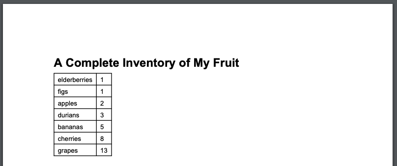

Google IT Automation with Python Professional Certificate
1. Crash Course on Python
Python Resources
More About Python
Using Python on your own
The best way to learn any programming language is to practice it on your own as much as you can. If you have Python installed on your computer, you can execute the interpreter by running the python3 command (or just python on Windows), and you can close it by typing exit() or Ctrl-D.
If you don't already have Python installed on your machine, that's alright. We'll explain how to install it in an upcoming course.
Python practice resources
In the meantime, you can still practice by using one of the many online Python interpreters or codepads available online. There's not much difference between an interpreter and a codepad. An interpreter is more interactive than a codepad, but they both let you execute code and see the results.
Below, you'll find links to some of the most popular online interpreters and codepads. Give them a go to find your favorite.
https://www.onlinegdb.com/online_python_interpreter
https://repl.it/languages/python3
https://www.tutorialspoint.com/execute_python3_online.php
https://rextester.com/l/python3_online_compiler
Additional Python resources
While this course will give you information about how Python works and how to write scripts in Python, you'll likely want to find out more about specific parts of the language. Here are some great ways to help you find additional info:
Read the official Python documentation.
Search for answers or ask a question on Stack Overflow.
Subscribe to the Python tutor mailing list, where you can ask questions and collaborate with other Python learners.
Subscribe to the Python-announce mailing list to read about the latest updates in the language.
Python history and current status
Python was released almost 30 years ago and has a rich history. You can read more about it on the History of Python Wikipedia page or in the section on the history of the software from the official Python documentation.
Python has recently been called the fastest growing programming language. If you're interested in why this is and how it's measured, you can find out more in these articles:
The Incredible Growth of Python (Stack Overflow)
Why is Python Growing So Quickly - Future Trends (Netguru)
By the numbers: Python community trends in 2017/2018 (Opensource.com)
Developer Survey Results 2018 (Stack Overflow)
First Programming Concepts Cheat Sheet
First Programming Concepts Cheat Sheet Functions and Keywords
Functions and keywords are the building blocks of a language's syntax.
Functions are pieces of code that perform a unit of work. In the examples we've seen so far, we've only encountered the print() function, which prints a message to the screen. We'll learn about a lot of other functions in later lessons but, if you're too curious to wait until then, you can discover all the functions available here.
Keywords are reserved words that are used to construct instructions. We briefly encountered for and in in our first Python example, and we'll use a bunch of other keywords as we go through the course. For reference, these are all the reserved keywords:
| False | class | finally | is | return |
| None | continue | for | lambda | try |
| True | def | from | nonlocal | while |
| and | del | global | not | with |
| as | elif | if | or | yield |
| assert | else | import | pass | break |
| except | in | raise |
You don't need to learn this list; we'll dive into each keyword as we encounter them. In the meantime, you can see examples of keyword usage here.
Arithmetic operators
Python can operate with numbers using the usual mathematical operators, and some special operators, too. These are all of them (we'll explore the last two in later videos).
a + b = Adds a and b a - b = Subtracts b from a a * b = Multiplies a and b a / b = Divides a by b a ** b = Elevates a to the power of b. For non integer values of b,\ this becomes a root (i.e. a ** (1/2) is the square root of a) a // b = The integer part of the integer division of a by b a % b = The remainder part of the integer division of a by b
Expressions & Variables
Data Types Recap
In Python, text in between quotes -- either single or double quotes -- is a string data type. An integer is a whole number, without a fraction, while a float is a real number that can contain a fractional part. For example, 1, 7, 342 are all integers, while 5.3, 3.14159 and 6.0 are all floats. When attempting to mix incompatible data types, you may encounter a TypeError. You can always check the data type of something using the type() function.
Implicit vs Explicit Conversion
Some data types can be mixed and matched due to implicit conversion. Implicit conversion is where the interpreter helps us out and automatically converts one data type into another, without having to explicitly tell it to do so.
By contrast, explicit conversion is where we manually convert from one data type to another by calling the relevant function for the data type we want to convert to. We used this in our video example when we wanted to print a number alongside some text. Before we could do that, we needed to call the str() function to convert the number into a string. Once the number was explicitly converted to a string, we could join it with the rest of our textual string and print the result.
Functions
Defining Functions Recap
We looked at a few examples of built-in functions in Python, but being able to define your own functions is incredibly powerful. We start a function definition with the def keyword, followed by the name we want to give our function. After the name, we have the parameters, also called arguments, for the function enclosed in parentheses. A function can have no parameters, or it can have multiple parameters. Parameters allow us to call a function and pass it data, with the data being available inside the function as variables with the same name as the parameters. Lastly, we put a colon at the end of the line.
After the colon, the function body starts. It's important to note that in Python the function body is delimited by indentation. This means that all code indented to the right following a function definition is part of the function body. The first line that's no longer indented is the boundary of the function body. It's up to you how many spaces you use when indenting -- just make sure to be consistent. So if you choose to indent with four spaces, you need to use four spaces everywhere in your code.
Returning Values Using Functions
Sometimes we don't want a function to simply run and finish. We may want a function to manipulate data we passed it and then return the result to us. This is where the concept of return values comes in handy. We use the return keyword in a function, which tells the function to pass data back. When we call the function, we can store the returned value in a variable. Return values allow our functions to be more flexible and powerful, so they can be reused and called multiple times.
Functions can even return multiple values. Just don't forget to store all returned values in variables! You could also have a function return nothing, in which case the function simply exits
Conditionals
Comparison Operators
In Python, we can use comparison operators to compare values. When a comparison is made, Python returns a boolean result, or simply a True or False.
To check if two values are the same, we can use the equality operator: ==
To check if two values are not the same, we can use the not equals operator: !=
We can also check if values are greater than or lesser than each other using > and <. If you try to compare data types that aren't compatible, like checking if a string is greater than an integer, Python will throw a TypeError.
We can make very complex comparisons by joining statements together using logical operators with our comparison operators. These logical operators are and, or, and not.
-
When using the and operator, both sides of the statement being evaluated must be true for the whole statement to be true.
-
When using the or operator, if either side of the comparison is true, then the whole statement is true.
Lastly, the not operator simply inverts the value of the statement immediately following it. So if a statement evaluates to True, and we put the not operator in front of it, it would become False.
Branching with if Statements Recap
We can use the concept of branching to have our code alter its execution sequence depending on the values of variables. We can use an if statement to evaluate a comparison. We start with the if keyword, followed by our comparison. We end the line with a colon. The body of the if statement is then indented to the right. If the comparison is True, the code inside the if body is executed. If the comparison evaluates to False, then the code block is skipped and will not be run.
The body of the if block will only execute when the condition evaluates to true; otherwise, it skipped.
else Statements and the Modulo Operator
We just covered the if statement, which executes code if an evaluation is true and skips the code if it's false. But what if we wanted the code to do something different if the evaluation is false? We can do this using the else statement. The else statement follows an if block, and is composed of the keyword else followed by a colon. The body of the else statement is indented to the right, and will be executed if the above if statement doesn't execute.
We also touched on the modulo operator, which is represented by the percent sign: %. This operator performs integer division, but only returns the remainder of this division operation. If we're dividing 5 by 2, the quotient is 2, and the remainder is 1. Two 2s can go into 5, leaving 1 left over. So 5%2 would return 1. Dividing 10 by 5 would give us a quotient of 2 with no remainder, since 5 can go into 10 twice with nothing left over. In this case, 10%2 would return 0, as there is no remainder.
More Complex Branching with elif Statements
Building off of the if and else blocks, which allow us to branch our code depending on the evaluation of one statement, the elif statement allows us even more comparisons to perform more complex branching. Very similar to the if statements, an elif statement starts with the elif keyword, followed by a comparison to be evaluated. This is followed by a colon, and then the code block on the next line, indented to the right. An elif statement must follow an if statement, and will only be evaluated if the if statement was evaluated as false. You can include multiple elif statements to build complex branching in your code to do all kinds of powerful things!
Conditionals Cheat Sheet
In earlier videos, we took a look at some of the built-in Python operators that allow us to compare values, and some logical operators we can use to combine values. We also learned how to use operators in if-else-elif blocks.
It's a lot to learn but, with practice, it gets easier to remember it all. In the meantime, this handy cheat sheet gives you all the information you need at a glance.
Comparison operators
a == b: a is equal to b a != b: a is different than b a < b: a is smaller than b a <= b: a is smaller or equal to b a > b: a is bigger than b a >= b: a is bigger or equal to b
Logical operators
a and b: True if both a and b are True. False otherwise. a or b: True if either a or b or both are True.\ False if both are False. not a: True if a is False, False if a is True.
Branching blocks
In Python, we branch our code using if, else and elif. This is the branching syntax:
if condition1: if-block elif condition2: elif-block else: else-block
Introduction to loops
Anatomy of a While Loop
A while loop will continuously execute code depending on the value of a condition. It begins with the keyword while, followed by a comparison to be evaluated, then a colon. On the next line is the code block to be executed, indented to the right. Similar to an if statement, the code in the body will only be executed if the comparison is evaluated to be true. What sets a while loop apart, however, is that this code block will keep executing as long as the evaluation statement is true. Once the statement is no longer true, the loop exits and the next line of code will be executed.
Why Initializing Variables Matters
When we forget to initialize the variable two different things can happen. The first possible outcome and the easiest to catch is that Python might raise an error telling us that we're using a variable we haven't defined.
Now, there's a second issue we might face if we forget to initialize variables with the right value. We might have already used the variable in our program. In this case, if we reuse the variable without setting the correct value from the start, it will still have the value from before. This can lead to some pretty unexpected behavior.
Whenever you're writing a loop check that you're initializing all the variables you want to use before you use them.
Common Pitfalls With Variable Initialization
You'll want to watch out for a common mistake: forgetting to initialize variables. If you try to use a variable without first initializing it, you'll run into a NameError. This is the Python interpreter catching the mistake and telling you that you're using an undefined variable. The fix is pretty simple: initialize the variable by assigning the variable a value before you use it.
Another common mistake to watch out for that can be a little trickier to spot is forgetting to initialize variables with the correct value. If you use a variable earlier in your code and then reuse it later in a loop without first setting the value to something you want, your code may wind up doing something you didn't expect. Don't forget to initialize your variables before using them!
Infinite Loops and How to Break Them
Example of an infinite loop:
while x % 2 == 0: x = x / 2
Fix:
while x != 0 and x % 2 == 0: x = x / 2
Another example:
def print_range(start, end): """Loop through the numbers from start to end""" n = start while n <= end: print(n)
Fix:
def print_range(start, end): n = start while n <= end: print(n) n += 1
Infinite loops and Code Blocks
Another easy mistake that can happen when using loops is introducing an infinite loop. An infinite loop means the code block in the loop will continue to execute and never stop. This can happen when the condition being evaluated in a while loop doesn't change. Pay close attention to your variables and what possible values they can take. Think about unexpected values, like zero.
What is a for loop?
A loop iterates over a sequence of values.
-
Use for loops when there's a sequence of elements that you want to iterate.
-
Use while loops when you want to repeat an action until a condition changes.
And if whatever you're trying to do can be done with either for or while loops, just use whichever one's your favorite.
For Loops Recap
For loops allow you to iterate over a sequence of values. Let's take the example from the beginning of the video:
for x in range(5): print(x)
Similar to if statements and while loops, for loops begin with the keyword for with a colon at the end of the line. Just like in function definitions, while loops and if statements, the body of the for loop begins on the next line and is indented to the right. But what about the stuff in between the for keyword and the colon? In our example, we're using the range() function to create a sequence of numbers that our for loop can iterate over. In this case, our variable x points to the current element in the sequence as the for loop iterates over the sequence of numbers. Keep in mind that in Python and many programming languages, a range of numbers will start at 0, and the list of numbers generated will be one less than the provided value. So range(5) will generate a sequence of numbers from 0 to 4, for a total of 5 numbers.
Bringing this all together, the range(5) function will create a sequence of numbers from 0 to 4. Our for loop will iterate over this sequence of numbers, one at a time, making the numbers accessible via the variable x and the code within our loop body will execute for each iteration through the sequence. So for the first loop, x will contain 0, the next loop, 1, and so on until it reaches 4. Once the end of the sequence comes up, the loop will exit and the code will continue.
The power of for loops comes from the fact that it can iterate over a sequence of any kind of data, not just a range of numbers. You can use for loops to iterate over a list of strings, such as usernames or lines in a file.
Not sure whether to use a for loop or a while loop? Remember that a while loop is great for performing an action over and over until a condition has changed. A for loop works well when you want to iterate over a sequence of elements.
More for loops examples
def factorial(n): result = 1 for i in ___: __ return result print(factorial(4)) # should return 24 print(factorial(5)) # should return 120
The range function can receive one, two or three parameters.
-
If it receives one parameter, it will create a sequence one by one from zero until one less than the parameter received.
-
If it receives two parameters, it will create a sequence one by one from the first parameter until one less than the second parameter.
-
Finally, if it receives three parameters, it will create a sequence starting from the first number and moving towards the second number. But this time, the jumps between the numbers will be the size of the third number, and again, it will stop before the second number.
Nested for Loops
"""Domino tiles examples""" for left in range(0, 7): for right in range(left,7): print("[" + str(left) + "|" + str(right) + "]", end=" ") print() #note the identation difference with the previous line ;-) """Output: [0|0] [0|1] [0|2] [0|3] [0|4] [0|5] [0|6] [1|1] [1|2] [1|3] [1|4] [1|5] [1|6] [2|2] [2|3] [2|4] [2|5] [2|6] [3|3] [3|4] [3|5] [3|6] [4|4] [4|5] [4|6] [5|5] [5|6] [6|6] """
Another example:
"""Local girl's basketball league""" teams = [ 'Dragons', 'Wolves', 'Pandas', 'Unicorns'] for home_team in teams: for away_team in teams: if home_team != away_team print(home_team + " vs " + away_team) """Output: Dragons vs Wolves Dragons vs Pandas Dragons vs Unicorns Wolves vs Dragons Wolves vs Pandas Wolves vs Unicorns Pandas vs Dragons Pandas vs Wolves Pandas vs Unicorns Unicorns vs Dragons Unicorns vs Wolves Unicorns vs Pandas """
Common Errors in for Loops
-
Forgetting that the upper limit of a range() isn't included.
-
Iterating over non-sequences. Integer numbers aren't iterable. Strings are iterable letter by letter, but that might not be what you want.
Recursion (optional)
What is recursion?
Recursion is the repeated application of the same procedure to a smaller problem. Recursion lets us tackle complex problems by reducing the problem to a simpler one.
In programming, recursion is a way of doing a repetitve task by having function call itself. Notions of base case and recursive case.
Example: Recursive factorial function
def factorial (n): if n < 2: return 1 else: return n * factorial (n - 1)
Other example:
"""The function sum_positive_numbers should return the sum of all\ positive numbers between the number n received and 1.\ For example, when n is 3 it should return 1+2+3=6, and when\ n is 5 it should return 1+2+3+4+5=15.\ Fill in the gaps to make this work: """ def sum_positive_numbers(n): # The base case is n being smaller than 1 if n < 1: return ___ # The recursive case is adding this number to # the sum of the numbers smaller than this one. return ___ + sum_positive_numbers(___) print(sum_positive_numbers(3)) # Should be 6 print(sum_positive_numbers(5)) # Should be 15
And another:
def is_power_of(number, base): # Base case: when number is smaller than base. if number < base: # If number is equal to 1, it's a power (base**0). return __ # Recursive case: keep dividing number by base. return is_power_of(__, ___) print(is_power_of(8,2)) # Should be True print(is_power_of(64,4)) # Should be True print(is_power_of(70,10)) # Should be False
Recursion in Action in the IT Context
Think automations tasks around files and directories, groups (Active Directory/LDAP)...
Additional Recursion Sources
In the past videos, we visited the basic concepts of recursive functions.
A recursive function must include a recursive case and base case. The recursive case calls the function again, with a different value. The base case returns a value without calling the same function.
A recursive function will usually have this structure:
def recursive_function(parameters): if base_case_condition(parameters): return base_case_value recursive_function(modified_parameters)
For more information on recursion, check out these resources:
-
See what happens when you Search Google for Recursion
Strings, Lists and Dictionaries
Strings in Python are immutable.
Parts of a String: Indexing and Slicing
String indexing allows you to access individual characters in a string. You can do this by using square brackets and the location, or index, of the character you want to access. It's important to remember that Python starts indexes at 0. So to access the first character in a string, you would use the index[0]. If you try to access an index that's larger than the length of your string, you'll get an IndexError. This is because you're trying to access something that doesn't exist! You can also access indexes from the end of the string going towards the start of the string by using negative values. The index[-1] would access the last character of the string, and the index[-2] would access the second-to-last character.
You can also access a portion of a string, called a slice or a substring. This allows you to access multiple characters of a string. You can do this by creating a range, using a colon as a separator between the start and end of the range, like [2:5].
This range is similar to the range() function we saw previously. It includes the first number, but goes to one less than the last number. For example:
fruit = "Mangosteen" fruit[1:4] 'ang'
The slice includes the character at index 1, and excludes the character at index 4. You can also easily reference a substring at the start or end of the string by only specifying one end of the range. For example, only giving the end of the range:
fruit[:5] 'Mango'
This gave us the characters from the start of the string through index 4, excluding index 5. On the other hand this example gives is the characters including index 5, through the end of the string:
fruit[5:] 'steen'
You might have noticed that if you put both of those results together, you get the original string back!
fruit[:5] + fruit[5:] 'Mangosteen'
Creating new strings
message = "A kong string with a silly typo" message[2] = "l" TypeError: 'str' object does not support item assignment
new_message = message[:2] + "l" + message[3:]
message = "This is a new message"
Remember: Strings in Python are immutable.
Notion of method: a method is a function associated with a specific class.
pets = "Cat & Dogs" pets.index(&) 5
"Real world" application:
def replace_domain(email, old_domain, new_domain): if "@" + old_domain in email: index = email.index("@") + old_domain new_email = email[:index] + "@" + new_domain return new_email return email
Basic String Methods
In Python, strings are immutable. This means that they can't be modified. So if we wanted to fix a typo in a string, we can't simply modify the wrong character. We would have to create a new string with the typo corrected. We can also assign a new value to the variable holding our string.
If we aren't sure what the index of our typo is, we can use the string method index to locate it and return the index. Let's imagine we have the string "lions tigers and bears" in the variable animals. We can locate the index that contains the letter g using animals.index("g"), which will return the index; in this case 8. We can also use substrings to locate the index where the substring begins. animals.index("bears") would return 17, since that's the start of the substring. If there's more than one match for a substring, the index method will return the first match. If we try to locate a substring that doesn't exist in the string, we'll receive a ValueError explaining that the substring was not found.
We can avoid a ValueError by first checking if the substring exists in the string. This can be done using the in keyword. We saw this keyword earlier when we covered for loops. In this case, it's a conditional that will be either True or False. If the substring is found in the string, it will be True. If the substring is not found in the string, it will be False. Using our previous variable animals, we can do "horses" in animals to check if the substring "horses" is found in our variable. In this case, it would evaluate to False, since horses aren't included in our example string. If we did "tigers" in animals, we'd get True, since this substring is contained in our string.
Some More Strings Methods
| .upper() | .lower() | .strip() | .lstrip() | .rstrip() |
| .count() | .endswith() | .isnumeric() | .join() | .split() |
Advanced String Methods
We've covered a bunch of String class methods already, so let's keep building on those and run down some more advanced methods.
The string method lower will return the string with all characters changed to lowercase. The inverse of this is the upper method, which will return the string all in uppercase. Just like with previous methods, we call these on a string using dot notation, like "this is a string".upper(). This would return the string "THIS IS A STRING". This can be super handy when checking user input, since someone might type in all lowercase, all uppercase, or even a mixture of cases.
You can use the strip method to remove surrounding whitespace from a string. Whitespace includes spaces, tabs, and newline characters. You can also use the methods lstrip and rstrip to remove whitespace only from the left or the right side of the string, respectively.
The method count can be used to return the number of times a substring appears in a string. This can be handy for finding out how many characters appear in a string, or counting the number of times a certain word appears in a sentence or paragraph.
If you wanted to check if a string ends with a given substring, you can use the method endswith. This will return True if the substring is found at the end of the string, and False if not.
The isnumeric method can check if a string is composed of only numbers. If the string contains only numbers, this method will return True. We can use this to check if a string contains numbers before passing the string to the int() function to convert it to an integer, avoiding an error. Useful! Try:
int("12345") + int("54321")
We took a look at string concatenation using the plus sign, earlier. We can also use the join method to concatenate strings. This method is called on a string that will be used to join a list of strings. The method takes a list of strings to be joined as a parameter, and returns a new string composed of each of the strings from our list joined using the initial string. For example,
" ".join(["This","is","a","sentence"])
would return the string "This is a sentence".
The inverse of the join method is the split method. This allows us to split a string into a list of strings. By default, it splits by any whitespace characters. You can also split by any other characters by passing a parameter.
Formating Strings: the .format() method
Concatenation with + and explicit conversion with str() are helpful, but not always ideal.
String Formatting
You can use the format method on strings to concatenate and format strings in all kinds of powerful ways. To do this, create a string containing curly brackets, {}, as a placeholder, to be replaced. Then call the format method on the string using .format() and pass variables as parameters. The variables passed to the method will then be used to replace the curly bracket placeholders. This method automatically handles any conversion between data types for us.
If the curly brackets are empty, they'll be populated with the variables passed in the order in which they're passed. However, you can put certain expressions inside the curly brackets to do even more powerful string formatting operations. You can put the name of a variable into the curly brackets, then use the names in the parameters. This allows for more easily readable code, and for more flexibility with the order of variables.
You can also put a formatting expression inside the curly brackets, which lets you alter the way the string is formatted. For example, the formatting expression {:.2f} means that you'd format this as a float number, with two digits after the decimal dot. The colon acts as a separator from the field name, if you had specified one. You can also specify text alignment using the greater than operator: >. For example, the expression {:>3.2f} would align the text three spaces to the right, as well as specify a float number with two decimal places. String formatting can be very handy for outputting easy-to-read textual output.
An example:
name = "user" number = len(name) * 3 print("Hello {}! Your lucky number is {}".format(name, number)) print("Your lucky number is {number}, {name}".format(name=name,\ number=number))
Another example, with a formating expression:
price = 7.5 with_tax = price * 1.21 print("Base price: {:.2f} €. With VAT: {:.2f} €".format(price,\ with_tax))
Yet another example:
def to_celsius(t): return (t - 31)*5/9 for x in range(0, 101, 10): print("{:>3} F | {:>6.2f} C".format(x, to_celsius(x)))
String Formatting Recap
You can use the format method on strings to concatenate and format strings in all kinds of powerful ways. To do this, create a string containing curly brackets, {}, as a placeholder, to be replaced. Then call the format method on the string using .format() and pass variables as parameters. The variables passed to the method will then be used to replace the curly bracket placeholders. This method automatically handles any conversion between data types for us.
If the curly brackets are empty, they'll be populated with the variables passed in the order in which they're passed. However, you can put certain expressions inside the curly brackets to do even more powerful string formatting operations. You can put the name of a variable into the curly brackets, then use the names in the parameters. This allows for more easily readable code, and for more flexibility with the order of variables.
You can also put a formatting expression inside the curly brackets, which lets you alter the way the string is formatted. For example, the formatting expression {:.2f} means that you'd format this as a float number, with two digits after the decimal dot. The colon acts as a separator from the field name, if you had specified one. You can also specify text alignment using the greater than operator: >. For example, the expression {:>3.2f} would align the text three spaces to the right, as well as specify a float number with two decimal places. String formatting can be very handy for outputting easy-to-read textual output.
Check out the official documentation for all available String methods.
Lists
Lists Defined
Lists in Python are defined using square brackets, with the elements stored in the list separated by commas: list = ["This", "is", "a", "list"]. You can use the len() function to return the number of elements in a list: len(list) would return . You can also use the in keyword to check if a list contains a certain element. If the element is present, it will return a True boolean. If the element is not found in the list, it will return False. For example, "This" in list would return True in our example. Similar to strings, lists can also use indexing to access specific elements in a list based on their position. You can access the first element in a list by doing list[0], which would allow you to access the string "This".
def get_word(sentence, n): # Only proceed if n is positive if n > 0: words = ___ # Only proceed if n is not more than the number of words if n <= len(words): return(___) return("") print(get_word("This is a lesson about lists", 4)) # Should print:\ lesson print(get_word("This is a lesson about lists", -4)) # Nothing print(get_word("Now we are cooking!", 1)) # Should print: Now print(get_word("Now we are cooking!", 5)) # Nothing
In Python, lists and strings are quite similar. They're both examples of sequences of data. Sequences have similar properties, like (1) being able to iterate over them using for loops; (2) support indexing; (3) using the len function to find the length of the sequence; (4) using the plus operator + in order to concatenate; and (5) using the in keyword to check if the sequence contains a value. Understanding these concepts allows you to apply them to other sequence types as well.
Modifying the Contents of a List
Lists are sequences of elements of any type are mutable.
While lists and strings are both sequences, a big difference between them is that lists are mutable. This means that the contents of the list can be changed, unlike strings, which are immutable. You can add, remove, or modify elements in a list.
You can add elements to the end of a list using the append method. You call this method on a list using dot notation, and pass in the element to be added as a parameter. For example, list.append("New data") would add the string "New data" to the end of the list called list.
If you want to add an element to a list in a specific position, you can use the method insert. The method takes two parameters: the first specifies the index in the list, and the second is the element to be added to the list. So list.insert(0, "New data") would add the string "New data" to the front of the list. This wouldn't overwrite the existing element at the start of the list. It would just shift all the other elements by one. If you specify an index that's larger than the length of the list, the element will simply be added to the end of the list.
You can remove elements from the list using the remove method. This method takes an element as a parameter, and removes the first occurrence of the element. If the element isn't found in the list, you'll get a ValueError error explaining that the element was not found in the list.
You can also remove elements from a list using the pop method. This method differs from the remove method in that it takes an index as a parameter, and returns the element that was removed. This can be useful if you don't know what the value is, but you know where it's located. This can also be useful when you need to access the data and also want to remove it from the list.
Finally, you can change an element in a list by using indexing to overwrite the value stored at the specified index. For example, you can enter list[0] = "Old data" to overwrite the first element in a list with the new string "Old data".
Lists and Tuples
Tuples are sequences of elements of any type that are immutable.
fullname = ("Grace", "M", "Hopper")
The position of the elements inside the tuple have meaning.
Tuples are used for lots of different things in Python. One common example is the return value of functions. When a function returns more than one value, it's actually returning a tuple.
This means that we can turn a tuple of three elements into three separate variables.
def file_size(file_info): name, type, size = file_info return("{:.2f}".format(size / 1024)) print(file_size(('Class Assignment', 'docx', 17875))) # Should print\ 17.46 print(file_size(('Notes', 'txt', 496))) # Should print 0.48 print(file_size(('Program', 'py', 1239))) # Should print 1.21
Tuples
As we mentioned earlier, strings and lists are both examples of sequences. Strings are sequences of characters, and are immutable. Lists are sequences of elements of any data type, and are mutable. The third sequence type is the tuple. Tuples are like lists, since they can contain elements of any data type. But unlike lists, tuples are immutable. They're specified using parentheses instead of square brackets.
You might be wondering why tuples are a thing, given how similar they are to lists. Tuples can be useful when we need to ensure that an element is in a certain position and will not change. Since lists are mutable, the order of the elements can be changed on us. Since the order of the elements in a tuple can't be changed, the position of the element in a tuple can have meaning. A good example of this is when a function returns multiple values. In this case, what gets returned is a tuple, with the return values as elements in the tuple. The order of the returned values is important, and a tuple ensures that the order isn't going to change. Storing the elements of a tuple in separate variables is called unpacking. This allows you to take multiple returned values from a function and store each value in its own variable.
Iterating Over Lists Using Enumerate
When we covered for loops, we showed the example of iterating over a list. This lets you iterate over each element in the list, exposing the element to the for loop as a variable. But what if you want to access the elements in a list, along with the index of the element in question? You can do this using the enumerate() function. The enumerate() function takes a list as a parameter and returns a tuple for each element in the list. The first value of the tuple is the index and the second value is the element itself.
List Comprehensions
List comprehension let us create new lists bases on sequences or ranges.
You can create lists from sequences using a for loop, but there's a more streamlined way to do this: list comprehension. List comprehensions allow you to create a new list from a sequence or a range in a single line.
For example, [ x*2 for x in range(1,11) ] is a simple list comprehension. This would iterate over the range 1 to 10, and multiply each element in the range by 2. This would result in a list of the multiples of 2, from 2 to 20.
Compare:
multiples = [] for x in range(1, 11): multiples.append(x * 7) print(multiples)
with:
multiples = [i*7 for i in range(1,11)] print(multiples)
Another example, with a list:
languages = ["Python", "Perl", "Ruby", "Go", "Java", "C"] lenghts = [len(language) for language in languages] print(lenghts)
You can also use conditionals with list comprehensions to build even more complex and powerful statements. You can do this by appending an if statement to the end of the comprehension. For example, [ x for x in range(1,101) if x % 10 == 0 ] would generate a list containing all the integers divisible by 10 from 1 to 100. The if statement we added here evaluates each value in the range from 1 to 100 to check if it's evenly divisible by 10. If it is, it gets added to the list.
Exercise:
def odd_numbers(n): return [x for x in ___ if ___] print(odd_numbers(5)) # Should print [1, 3, 5] print(odd_numbers(10)) # Should print [1, 3, 5, 7, 9] print(odd_numbers(11)) # Should print [1, 3, 5, 7, 9, 11] print(odd_numbers(1)) # Should print [1] print(odd_numbers(-1)) # Should print []
List comprehensions can be really powerful, but they can also be super complex, resulting in code that's hard to read. Be careful when using them, since it might make it more difficult for someone else looking at your code to easily understand what the code is doing.
Dictionaries
Dictionaries Defined
Dictionaries are another data structure in Python. They're similar to a list in that they can be used to organize data into collections. However, data in a dictionary isn't accessed based on its position. Data in a dictionary is organized into pairs of keys and values. You use the key to access the corresponding value. Where a list index is always a number, a dictionary key can be a different data type, like a string, integer, float, or even tuples.
When creating a dictionary, you use curly brackets: {}. When storing values in a dictionary, the key is specified first, followed by the corresponding value, separated by a colon. For example, animals = { "bears":10, "lions":1, "tigers":2 } creates a dictionary with three key value pairs, stored in the variable animals. The key "bears" points to the integer value 10, while the key "lions" points to the integer value 1, and "tigers" points to the integer 2. You can access the values by referencing the key, like this: animals["bears"]. This would return the integer 10, since that's the corresponding value for this key.
You can also check if a key is contained in a dictionary using the in keyword. Just like other uses of this keyword, it will return True if the key is found in the dictionary; otherwise it will return False.
Dictionaries are mutable, meaning they can be modified by adding, removing, and replacing elements in a dictionary, similar to lists. You can add a new key value pair to a dictionary by assigning a value to the key, like this: animals["zebras"] = 2. This creates the new key in the animal dictionary called zebras, and stores the value 2. You can modify the value of an existing key by doing the same thing. So animals["bears"]\ = 11 would change the value stored in the bears key from 10 to 11. Lastly, you can remove elements from a dictionary by using the del keyword. By doing del animals["lions"] you would remove the key value pair from the animals dictionary.
Iterating over the Contents of a Dictionary
You can iterate over dictionaries using a for loop, just like with strings, lists, and tuples. This will iterate over the sequence of keys in the dictionary. If you want to access the corresponding values associated with the keys, you could use the keys as indexes. Or you can use the items method on the dictionary, like dictionary.items(). This method returns a tuple for each element in the dictionary, where the first element in the tuple is the key and the second is the value.
If you only wanted to access the keys in a dictionary, you could use the keys() method on the dictionary: dictionary.keys(). If you only wanted the values, you could use the values() method: dictionary.values().
Dictionaries vs. Lists
You want to use dictionaries when you plan on searching for a specific element (faster than iteratiing over a list until said element is found, or not).
Another interesting difference is the types of values that we can store in lists and dictionaries. In lists, you can store any data type.
In dictionaries, we can store any data type for the values but the keys are restricted to specific types.
The reasoning behind which types are allowed can get complex. So as a rule of thumb, you can use any immutable data type; numbers, booleans, strings and tuples as dictionary keys. But you can't use lists or dictionaries for that.
On the flip side, like we said, the values associated with keys can be any type, including lists or even other dictionaries.
You can use them to represent more complex data structures like directory trees in the file system. There's a ton of different key value pairs that we need to work with in system administration.
Object-Oriented Programming (optional)
A flexible, powerful paradigm where classes represent and define concepts, while objects are instances of classes.
Object-Oriented Programming Defined
In object-oriented programming, concepts are modeled as classes and objects. An idea is defined using a class, and an instance of this class is called an object. Almost everything in Python is an object, including strings, lists, dictionaries, and numbers. When we create a list in Python, we're creating an object which is an instance of the list class, which represents the concept of a list.
Classes also have attributes and methods associated with them. Attributes are the characteristics of the class, while methods are functions that are part of the class.
Classes and Objects in Detail
We can use the type() function to figure out what class a variable or value belongs to. For example, type(" ") tells us that this is a string class. The only attribute in this case is the string value, but there are a bunch of methods associated with the class. We've seen the upper() method, which returns the string in all uppercase, as well as isnumeric() which returns a boolean telling us whether or not the string is a number. You can use the dir() function to print all the attributes and methods of an object. Each string is an instance of the string class, having the same methods of the parent class. Since the content of the string is different, the methods will return different values. You can also use the help() function on an object, which will return the documentation for the corresponding class. This will show all the methods for the class, along with parameters the methods receive, types of return values, and a description of the methods.
Defining New Classes
Defining Classes (Optional)
We can create and define our classes in Python similar to how we define functions. We start with the class keyword, followed by the name of our class and a colon. Python style guidelines recommend class names to start with a capital letter. After the class definition line is the class body, indented to the right. Inside the class body, we can define attributes for the class.
Let's take our Apple class example:
class Apple: color = "" flavor = ""
We can create a new instance of our new class by assigning it to a variable. This is done by calling the class name as if it were a function. We can set the attributes of our class instance by accessing them using dot notation. Dot notation can be used to set or retrieve object attributes, as well as call methods associated with the class.
We created an Apple instance called jonagold, and set the color and flavor attributes for this Apple object. We can create another instance of an Apple and set different attributes to differentiate between two different varieties of apples.
jonagold = Apple() jonagold.color = "red" jonagold.flavor = "sweet"
We now have another Apple object called golden that also has color and flavor attributes. But these attributes have different values.
Instances Methods
What Is a Method?
Calling methods on objects executes functions that operate on attributes of a specific instance of the class. This means that calling a method on a list, for example, only modifies that instance of a list, and not all lists globally. We can define methods within a class by creating functions inside the class definition. These instance methods can take a parameter called self which represents the instance the method is being executed on. This will allow you to access attributes of the instance using dot notation, like self.name, which will access the name attribute of that specific instance of the class object. When you have variables that contain different values for different instances, these are called instance variables.
Methods are functions that operate on the attributes of a specific instance of a class.
Variables that have different values for different instances of the same class are called instance variables.
class Dog: years = 0 def dog_years(self): years = self.years * 7 return str(years) fido=Dog() fido.years=3 print(fido.dog_years())
Special Methods
Instead of creating classes with empty or default values, we can set these values when we create the instance. This ensures that we don't miss an important value and avoids a lot of unnecessary lines of code. To do this, we use a special method called a constructor. Below is an example of an Apple class with a constructor method defined.
class Apple: def __init__(self, color, flavor): self.color = color self.flavor = flavor
When you call the name of a class, the constructor of that class is called. This constructor method is always named _init_. You might remember that special methods start and end with two underscore characters. In our example above, the constructor method takes the self variable, which represents the instance, as well as color and flavor parameters. These parameters are then used by the constructor method to set the values for the current instance. So we can now create a new instance of the Apple class and set the color and flavor values all in go:
jonagold = Apple("red", "sweet") print(jonagold.color) """Outputs: Red """
In addition to the _init_ constructor special method, there is also the _str_ special method. This method allows us to define how an instance of an object will be printed when it’s passed to the print() function. If an object doesn’t have this special method defined, it will wind up using the default representation, which will print the position of the object in memory. Not super useful. Here is our Apple class, with the _str_ method added:
class Apple: def __init__(self, color, flavor): self.color = color self.flavor = flavor def __str__(self): return "This apple is {} and its flavor is {}".format\ (self.color, self.flavor)
Now, when we pass an Apple object to the print function, we get a nice formatted string:
jonagold = Apple("red", "sweet") print(jonagold) """Outputs: This apple is red and its flavor is sweet """
It's good practice to think about how your class might be used and to define a _str_ method when creating objects that you may want to print later.
Documenting with Docstrings
The Python help function can be super helpful for easily pulling up documentation for classes and methods. We can call the help function on one of our classes, which will return some basic info about the methods defined in our class:
class Apple: def __init__(self, color, flavor): self.color = color self.flavor = flavor def __str__(self): return "This apple is {} and its flavor is\ {}".format(self.color, self.flavor) help(Apple) Help on class Apple in module __main__: [...]
We can add documentation to our own classes, methods, and functions using docstrings. A docstring is a short text explanation of what something does. You can add a docstring to a method, function, or class by first defining it, then adding a description inside triple quotes. Let's take the example of this function:
def to_seconds(hours, minutes, seconds): """Returns the amount of seconds in the given hours, minutes\ and seconds.""" return hours*3600+minutes*60+seconds
We have our function called to_seconds on the first line, followed by the docstring which is indented to the right and wrapped in triple quotes. Last up is the function body. Now, when we call the help function on our to_seconds function, we get a handy description of what the function does:
help(to_seconds) Help on function to_seconds in module __main__: to_seconds(hours, minutes, seconds) Returns the amount of seconds in the given hours, minutes\ and seconds.
Docstrings are super useful for documenting our custom classes, methods, and functions, but also when working with new libraries or functions. You'll be extremely grateful for docstrings when you have to work with code that someone else wrote!
class Person: def __init__(self, name): self.name = name def greeting(self): """Outputs a message with the name of the person""" print("Hello! My name is {name}.".format(name=self.name)) help(Person.greeting)
Code Reuse
Object Inheritance
Object Inheritance
In object-oriented programming, the concept of inheritance allows you to build relationships between objects, grouping together similar concepts and reducing code duplication. Let's create a custom Fruit class with color and flavor attributes:
class Fruit: def __init__(self, color, flavor): self.color = color self.flavor = flavor
We defined a Fruit class with a constructor for color and flavor attributes. Next, we'll define an Apple class along with a new Grape class, both of which we want to inherit properties and behaviors from the Fruit class:
class Apple(Fruit): pass class Grape(Fruit): pass In Python, we use parentheses in the class declaration to have the\ class inherit from the Fruit class. So in this example, we’re\ instructing our computer that both the Apple class and Grape class\ inherit from the Fruit class. This means that they both have the\ same constructor method which sets the color and flavor\ attributes. We can now create instances of our Apple and Grape\ classes: ```python granny_smith = Apple("green", "tart") carnelian = Grape("purple", "sweet") print(granny_smith.flavor) tart print(carnelian.color) purple
Inheritance allows us to define attributes or methods that are shared by all types of fruit without having to define them in each fruit class individually. We can then also define specific attributes or methods that are only relevant for a specific type of fruit. Let's look at another example, this time with animals:
class Animal: sound = "" def __init__(self, name): self.name = name def speak(self): print("{sound} I'm {name}! {sound}".format(name=self.name,\ sound=self.sound)) class Piglet(Animal): sound = "Oink!" class Cow(Animal): sound = "Moooo"
We defined a parent class, Animal, with two animal types inheriting from that class: Piglet and Cow. The parent Animal class has an attribute to store the sound the animal makes, and the constructor class takes the name that will be assigned to the instance when it's created. There is also the speak method, which will print the name of the animal along with the sound it makes. We defined the Piglet and Cow classes, which inherit from the Animal class, and we set the sound attributes for each animal type. Now, we can create instances of our Piglet and Cow classes and have them speak:
hamlet = Piglet("Hamlet") hamlet.speak() Oink! I'm Hamlet! Oink! class Cow(Animal): sound = "Moooo" milky = Cow("Milky White") milky.speak() Moooo I'm Milky White! Moooo
We create instances of both the Piglet and Cow class, and set the names for our instances. Then we call the speak method of each instance, which results in the formatted string being printed; it includes the sound the animal type makes, along with the instance name we assigned.
class Clothing: material = "" def __init__(self,name): self.name = name def checkmaterial(self): print("This {} is made of {}".format(self.___,self.___)) class Shirt(): material="Cotton" polo = Shirt("Polo") polo.checkmaterial()
Object Composition (to review 😉)
We talked about how inheritance creates an ancestry for our objects. To check for this ancestry, we can use the is a rule: isinstance() and issubclass()
You can have a situation where two different classes are related, but there is no inheritance going on. This is referred to as composition -- where one class makes use of code contained in another class. For example, imagine we have a Package class which represents a software package. It contains attributes about the software package, like name, version, and size. We also have a Repository class which represents all the packages available for installation. While there’s no inheritance relationship between the two classes, they are related. The Repository class will contain a dictionary or list of Packages that are contained in the repository. Let's take a look at an example Repository class definition:
class Repository: def __init__(self): self.packages = {} def add_package(self, package): self.packages[package.name] = package def total_size(self): result = 0 for package in self.packages.values(): result += package.size return result
In the constructor method, we initialize the packages dictionary, which will contain the package objects available in this repository instance. We initialize the dictionary in the constructor to ensure that every instance of the Repository class has its own dictionary.
We then define the add_package method, which takes a Package object as a parameter, and then adds it to our dictionary, using the package name attribute as the key.
Finally, we define a total_size method which computes the total size of all packages contained in our repository. This method iterates through the values in our repository dictionary and adds together the size attributes from each package object contained in the dictionary, returning the total at the end. In this example, we’re making use of Package attributes within our Repository class. We’re also calling the values() method on our packages dictionary instance. Composition allows us to use objects as attributes, as well as access all their attributes and methods.
Exercise: Finish the "Stock_by_Material" method and iterate over the amount of each item of a given material that is in stock. When you’re finished, the script should add up to 10 cotton Polo shirts.
class Clothing: stock={ 'name': [],'material' :[], 'amount':[]} def __init__(self,name): material = "" self.name = name def add_item(self, name, material, amount): Clothing.stock['name'].append(self.name) Clothing.stock['material'].append(self.material) Clothing.stock['amount'].append(amount) def Stock_by_Material(self, material): count=0 n=0 for item in Clothing.stock['___']: if item == material: count += Clothing.___['amount'][n] n+=1 return count class shirt(Clothing): material="Cotton" class pants(Clothing): material="Cotton" polo = shirt("Polo") sweatpants = pants("Sweatpants") polo.add_item(polo.name, polo.material, 4) sweatpants.add_item(sweatpants.name, sweatpants.material, 6) current_stock = polo.Stock_by_Material("Cotton") print(current_stock) #Should print 10
Remember this rule of thumb: always initialize mutable attributes in the constructor.
Augmenting Python with Modules
Python modules are separate files that contain classes, functions, and other data that allow us to import and make use of these methods and classes in our own code. Python comes with a lot of modules out of the box. These modules are referred to as the Python Standard Library. You can make use of these modules by using the import keyword, followed by the module name. For example, we'll import the random module, and then call the randint function within this module:
import random random.randint(1,10) 8 random.randint(1,10) 7 random.randint(1,10) 1
This function takes two integer parameters and returns a random integer between the values we pass it; in this case, 1 and 10. You might notice that calling functions in a module is very similar to calling methods in a class. We use dot notation here too, with a period between the module and function names.
Let's take a look at another module: datetime. This module is super helpful when working with dates and times.
import datetime now = datetime.datetime.now() type(now) <class 'datetime.datetime'> print(now) 2019-04-24 16:54:55.155199
First, we import the module. Next, we call the now() method which belongs to the datetime class contained within the datetime module. This method generates an instance of the datetime class for the current date and time. This instance has some methods which we can call:
print(now) 2019-04-24 16:54:55.155199 now.year 2019 print(now + datetime.timedelta(days=28)) 2019-05-22 16:54:55.155199
When we call the print function with an instance of the datetime class, we get the date and time printed in a specific format. This is because the datetime class has a _str_ method defined which generates the formatted string we see here. We can also directly call attributes and methods of the class, as with now.year which returns the year attribute of the instance.
Lastly, we can access other classes contained in the datetime module, like the timedelta class. In this example, we’re creating an instance of the timedelta class with the parameter of 28 days. We’re then adding this object to our instance of the datetime class from earlier and printing the result. This has the effect of adding 28 days to our original datetime object.
Supplemental Reading for Code Reuse
The official Python documentation lists all the modules included in the standard library. It even has a turtle in it...
Pypi is the Python repository and index of an impressive number of modules developed by Python programmers around the world.
Problem-solving Framework
When we take the structured approach to tackling problems there really isn't a challenge too complex to solve
Problem Statement #1
Before we jump into solving that problem, we need to know what information we'll use as input and what information we'll have as output. We can work this out by looking at the rest of the system where our script will live. Wwe need to know exact names of the attributes, otherwise, we won't be able to access them.
When working on a problem in general, and it's solution, it's easy to get caught up in the "making it look good" part. It's better to first focus on making the program work. You can always spend time making the report look nice later.
Research
Planning
Writing of the Script
2. Using Python to Interact with the Operating System
Course Introduction
Finding out more information
Throughout this course, we teach you how to do a range of things with Python, Bash, and other tools. While we’ll provide a lot of information through videos and supplemental readings, sometimes, you may need to look things up on your own, now and throughout your career. Things change fast in IT, so it’s critical to do your own research to stay up-to-date on what’s new. We recommend you use your favorite search engine to find more information about concepts we cover in this course — it’s great practice for the real world!
On top of search results, here are some good programming resources available online:
-
Automate the Boring Stuff with Python: This book (available online and in print) includes a lot of practical programming exercises for beginners. You can refer to this content to read more about some of the things that we'll be discussing, and get inspired with more ideas of things that can be automated.
-
Hitchhiker’s Guide to Python: This site (available online and in print) also covers a lot of what we can do with Python. Again, you can use this resource to learn more about the subjects we cover (and the ones we had to omit for time constraints).
-
The official language reference: Once you know what Python tool you'll be using to do a certain task, this technical reference of all Python language components can be a great [missing from website]
Getting Familiar with the Operating System
The operating system is a software that manages everything that goes on in the computer.
It reads, writes, and deletes files from the hard drive. It handles how the processes start, how they interact with each other, and how they eventually finish.
It manages how memory gets allocated different processes, how network packets are sent and received, and how each programming can access the different hardware components.
Since it's cross-platform, we can use the same Python code to get to our goal on any operating system, whether the goal is opening files, processing text, or managing running processes. This makes Python a great tool for IT specialists who needs to interact with different operating systems. You can apply the skills that you learned from one platform to all the others. So how cool is that?
Getting Your Computer Ready for Python
Some modules of interest from the Python Standard Library, to import in our scripts with the import keyword:
- requests and request.get() to work with web pages
- arrow and arrow.get() to work with dates
- the Image submodule from the Python Image Library: image.open(), image.size() and image.format()
- pandas for data science: pandas.DataFrame({...})
Pointers for Getting Your Environment Setup
Learning more about operating systems
We’ve talked briefly about what an operating system is and what we'll need to know about operating systems for this course. If you want to learn some additional operating system concepts, check out the videos on this subject in the Technical Support Fundamentals course. If you want to dive deeper onto how to manage Windows and Linux, check out the Operating Systems and You: Becoming a Power User course.
If you want to discover more about the history of Unix, you can read all the details on the Unix Wikipedia page.
Installing Python and additional modules
If you don't have Python installed yet, we recommend that you visit the official Python website and download the installer that corresponds to your operating system.
There’s a bunch of guides out there for installing Python and they all follow a similar process to the one we described in the videos. This guide from Real Python includes instructions on how to install python on a range of different operating systems and distributions.
Once you have Python installed on your operating system, it's a good idea to familiarize yourself with pip and the associated tools. You can find more info about these here.
Using package management systems
Package management systems help you better manage the software installed on your machine. These management systems vary a lot from operating system to operating system. So, you need to pick the one that works for the OS you’re using. Check out these guides for help with this:
Other information
Running Python Locally
Interpreted vs. Compiled Languages
How to Run a Python Script
Notion of "shebang": for Python scripts file, include #!/bin/env python3 in the first line and then make the file executable by using the command chmod +x
Finally, remember to prefix the file name with ./, to let the command line interpreter know that it should find the script in the current directory.
Setting up Your Environment
After you’ve installed Python and checked that it works, the next step to set up your developer environment is to choose your main code editor.
These are some of the common editors for Python, available for all platforms:
You can read more about these editors, and others, in these overview comparatives:
We encourage you to try out these editors and pick your favorite. Then, install it on your computer and experiment with writing and executing Python scripts locally.
Automating Tasks Through Programming
Benefits of Automation
Scability: when more work is added to a system, the system can do whatever it needs to complete the work.
Pitfalls of Automation
Is it worth the time?
Is the time and effort it'll take to write the script worth the potential automation benefits?
A simple heuristic that can help us decide is to estimate how long it takes us to do a certain task. And then multiply that by how many times we perform that task in a given time window. If we estimate that it would take less time to automate the tasks than it would to do it manually, chances are, it's a good candidate for automation. So, the time to write the automation is less than time to perform the task multiply by the amount of times you do it, then automate the task.
time_to_automate < (time_to_perform * amount_of_times_done)

Source: xkcd
Usually, the decision of whether to automate or not isn't so straightforward. If a task is complex and performed in frequently, it may seem like automating is more trouble than it's worth.
But keep in mind that once a task is wrapped in automation, anyone can do it. It can be very useful to automate a complex error prone task. If it's critical that the tasks be done correctly, even if it's not executed that often.
There are no hard and fast rules on when to automate, but the cost time tradeoff can help guide your decisions.
A concept called the Pareto Principle can also be a useful guideline to help you decide which tasks to automate. When applied to automation in IT, the Pareto Principle states that 20% of the system administration tasks that you perform are responsible for 80% of your work. If you can identify and automate those 20% of your tasks, you could save yourself a whole lot of time.
Practical Automation Example
Computer "health": a few modules can help designing a script to check the "health" of a computer system (disk usage, cpu load, etc.): the shutil and psutil ones.
import shutil du = shutil.disk_usage("/") #directory to check print(du) du.free/du.total*100
import psutil psutil.cpu_percent(0.1) # interval of time to check the cpu load in\ seconds, returns the average usage over said period
Now that we've done some research, let's write a first basic health checking script:
#!/usr/bin/env python3 import shutil import psutil def check_disk_usage(disk): du = shutil.disk_usage(disk) free = du.free / du.total * 100 return free > 20 def check_cpu_usage(): usage = psutil.cpu_percent(1) return usage < 70 """Main body of script that checks if the 2 conditions described in\ the 2 functions are false """ if not check_disk_usage("/") or not check_cpu_usage(): print("Error!") else: print("Everything is OK!")
Remember to mark the script as executable and to test it. We'll improve on it later.
Reading and Writing Files
Programming with Files
Notions of directory/folder and file, filesystem hierarchy/tree. Notions of absolute vs relative PATH.
Reading Files
file = open("spider.txt")
When we open a file, like we're doing in this example, the operating system checks
that we have permissions to access that file and then gives our code a File descriptor: this is a token generated by the OS that allows programs to do more operations with the file.
In Python, this file descriptor is stored as an attribute of the files object.
The file object gives us a bunch of methods that we can use to operate with the file.
Now, with this file object, we can read the contents of the file and print them to the screen.
The "Open-Use-Close" Approach
>>>file = open("spider.txt") >>>file.readline() The itsy bitsy spider climbed up the waterspout. >>>file.readline() Down came the rain >>>file.read() and washed the spider out. Out came the sun and dried up all the rain and the itty bitsy spider climbed up the spout again. >>>file.close()
Handy if we intend to work with the file several times in our code. Remember to close the file! It's best pratice to:
- Allow other programs to work with the file otherwise locked
- Prevent the OS from running out of file descriptors (even if that number is generally high)
- Prevent race conditions. "Everybody looses in a race condition."
The "With" Approach
with open("spider.txt") as file: file.readline()
Using this approach, Python automatically closes the opened file(s). Handy if we intend to work with the file only once in our code.
Iterating through Files
with open("spider.txt") as file: for line in file: print(line.upper()) THE ITSY BITSY SPIDER CLIMBED UP THE WATERSPOUT. DOWN CAME THE RAIN AND WASHED THE SPIDER OUT. OUT CAME THE SUN AND DRIED UP ALL THE RAIN AND THE ITTY BITSY SPIDER CLIMBED UP THE SPOUT AGAIN.
The text contains the new line invisible character \n. Notion of escaping sequences: \t for tabs.
To remove the new line the print() command actually outputs for each line:
with open("spider.txt") as file: for line in file: print(line.strip().upper()) THE ITSY BITSY SPIDER CLIMBED UP THE WATERSPOUT. DOWN CAME THE RAIN AND WASHED THE SPIDER OUT. OUT CAME THE SUN AND DRIED UP ALL THE RAIN AND THE ITTY BITSY SPIDER CLIMBED UP THE SPOUT AGAIN.
The readlines() method (≠ .readline())
file = open("spider.txt") lines = file.readlines() file.close() # Even though the file object is now closed, the lines\ variable has the list of lines in the file, so we can operate on it.
A quick word of caution, methods like read or readlines that read the whole file at once are useful, but we should be careful when reading the entire contents of a file into a variable of our programs.
If the file is super large, it can take a lot of our computer's memory to hold it,
which can lead to poor performance.
If a file is just a few kilobytes like in our example here, it's fine to read it and process it completely in memory.
But for large files, like the big log file of hundreds and hundreds of megabytes of data, it's more efficient to process it line by line.
Writing Files
with open("novel.txt", "w") as file: file.write("It was a dark and stormy night") 30
Notion of file modes (see Cheat-Sheet below)
| Mode | Description |
|---|---|
| r | read-only (default, not mandatory) |
| w | write-only (overwrites existing content, creates the file if it doesn't exists) |
| a | Append at the end of the file |
| r+ | Read-Write |
Another word of caution: If you open a file for writing and the file already exists, the old contents will be deleted as soon as the file is opened.
Remember to double check that you're opening the right file using the right mode.
Reading and Writing Files Cheat-Sheet
Check out the following link for more information:
https://docs.python.org/3/library/functions.html#open
Managing Files and Directories
Working with Files
Let's explore some of the many things that we can do with files in Python with the os module.
Caution: Paths can be different across different operating systems. So whenever we're using an absolute path in our code, we need to make sure we can provide alternatives for the platforms we want to support.
The OS module lets us do pretty much all the same tasks that we can normally
do when working with files from the command line. We can change the file permissions and delete or rename files through our code. This means you can write scripts to do these operations for you automatically.
import os os.remove("novel.txt") # To delete a file os.rename("old_file_name", "new_file_name") # To rename a file os.path.exists("some_file_name") # Returns either True or False,\ depending on the presence of the file
More File Information
os.path.getsize("spider.txt") # Returns the file size in bytes os.path.getmtime("spider.txt") # Returns the last modification time\ and date of the file
Notion of Timestamp: a Unix timestamp for example represents the number of seconds since January 1st, 1970.
import datetime timestamp = os.path.getmtime("spider.txt") datetime.datetime.fromtimestamp(timestamp)
os.path.abspath("spider.txt") `/Volumes/GoogleDrive/Mon Drive/Documents/Cours/Google IT Automation\ with Python Professional Certificate/spider.txt'
Directories
print(os.getcwd()) # Prints the current working directory os.mkdir("New folder") # To create a new folder, aptly named\ New folder os.chdir("New folder") # To enter this newly created folder print(os.getcwd()) # Outputs [...]/New folder os.mkdir("Newer folder") os.rmdir("Newer folder") # Will only delete the folder if it's empty
The rmdir function will only work if the directory is empty. If we try to remove a directory that has files in it, we get an error. We need to first delete all the files and sub-directories in that directory before we can actually remove it but how can we find out what contents are in that directory?
There are a few techniques that we can use to do this. The os.listdir function returns a list of all the files and sub-directories in a given directory.
Let's see how this looks for our website directory.
import os os.listdir("website") ['images', 'index.html', 'favicon.ico']
So we've got a list of strings. Since they're just strings, we don't know if they're directories or files. To find out what they are, we can use functions like
os.path.isdir but before we look at how that works. See how the list contains just file names. If we want to know whether one of these files is a directory, we need to use os.path.join to create the full path. Let's see all of this in action now.
dir = "website" for name in os.listdir(dir): fullname = os.path.join(dir, name) if os.path.isdir(fullname): print("{} is a directory".format(fullname)) else: print("{} is a file".format(fullname)) website/images is a directory website/index.html is a file website/favicon.ico is a file
What's up with that join function? It seems to just add a slash between two strings. Well, the join function let's us be independent from the operating system again.
-
In Linux and MacOS, the portions of a file are split using a forward slash.
-
On Windows, they're split using a backslash.
By using the os.path.join function instead of explicitly adding a slash, we can make sure that our scripts -
work with all operating systems.
Files and Directories Cheat-Sheet
Check out the following links for more information:
Reading and Writing CSV Files
What is a CSV file?
Notion of parsing a file: Analyzing a file's content to correctly structure the data.
CSV stands for Comma Separated Values. It's one of the many file formats used to structure data, like HTML or JSON.
A lot of programs are capable of exporting data as CSV files, such as spreadsheet applications like Microsoft Excel or Google Sheets. It can actually be helpful to think of a CSV file like it's a spreadsheet, where each line corresponds to a row and each comma separated field corresponds to a column.
Reading CSV Files
Python standard library includes a module which lets us read, create and manipulate CSV files: the csv module.
Before we can parse a CSV file, we need to open the file the same way as before. We can then parse this file using the CSV module.
import csv f = open("csv_file.csv") csv_f = csv.reader(f) # We now have an instance of the CSV reader\ class for row in csv_f: name, twitter_handle, nickname = row # See notion of unpacking print("Name: {}, Twitter handle: {}, Nickname: {}.".format(name,\ twitter_handle, nickname)) f.close() # Remember to close the file when using the "Open-Use-\ Approach"
Notion of unpacking: the row variable hold each row in the CSV file.
This variable is a list with each field in the CSV corresponding to one
element in the list. We know from the before that the first field is a name, the second one, the Twitter handle, and the third, the nickname. So we can unpack the values so that we can use variables to refer to them. Remember that for this to work we need to have the exact same amount of variables on the left side of the equal sign as the length of the sequence on the right side.
We could have used row[0] to access the name of the employee. This is valid but it can be hard to follow when reading a lot of code. Unpacking the list into name variables makes the code easier to understand later on.
Generating CSV
we can use the writer function to generate contents to a file. This can be really helpful if you process some data in your script and you must store it in a file.
Maybe you want to import it into a spreadsheet or use it later on in your script.
We'll start by storing the data that we want to write into a list.
There are two functions that we can use: writerow, which we'll write one row at a time; and writerows, which we'll write all of them together. In this case, we already have all the data that we want to write. So we'll call writerows.
import csv hosts = [["MacBook-Air.local", "192.168.1.43"], ["fedora.local",\ "192.168.1.73"], ["fedorapi.local", "192.168.1.80"]] with open("hosts.csv", "w") as hosts_csv: writer = csv.writer(hosts_csv) # the writer variable is now an\ instance of the csv writer class writer.writerows(hosts)
Reading and Writing CSV Files with Dictionaries
We saw how we can read and write CSV files, and we use list as datatype on the Python side. This works when we know what the fields are going to be, but it can be pretty cumbersome when we have a lot of columns, and we need to remember which is which. Imagine if your lists of employees not only had name, phone number and role but also start date, username, office location, department, preferred pronouns and so on. It would soon get hard to keep track of which column corresponds to which position in the row. For cases like this, it's common for CSVs to include the names of the columns as a first line in the file.
import csv with open("software.csv") as software: reader = csv.DictReader(software) for row in reader: print(("{} has {} users.").format(row["name", row["users"]]))
users = [{"name": "Sol Mansi", "username": "solm", "department":\ "IT\ Infrastructure"}, {"name": "Lio Nelson", "username": "lion",\ "department": "User Experience Research"}, {"name": "Charlie Grey",\ "username": "greyc", "department": "Development"}] keys = ["name", "username", "departement"] with open('by_department.csv', 'w') as by_department: writer = csv.DictWriter(by_department, fieldnames=keys) writer.writeheader() writer.writerows(users)
DictReader() allows us to convert the data in a CSV file into a standard dictionary. DictWriter() allows us to write data from a dictionary into a CSV file. The fieldnames parameter of DictWriter() requires a list of keys.
CSV Files Cheat Sheet
Check out the following links for more information:
Regular Expressions
Introduction to Regular Expressions
What are regular expressions?
Regular expressions let you answer the questions like "what are all the four-letter words in a file?", or "how many different error types are there in this error log?".
Regular expressions allow us to search a text for strings matching a specific pattern.
Why use regular expressions?
At this point, you might be wondering why do I need more processing power than just looking for strings in a text which I already know how to do in Python? The answer lies in the power and flexibility of regular expressions.
import re log = "July 31 07:51:48 mycomputer bad_process [54321]:\ ERROR Performing package upgrade" regex = r"\[(\d+)\]" result = re.search(regex, log) print(result[1])
Basic Matching with grep
In our last example, we used a pretty complex regular expression from a Python program to look for a process ID. This is just one example of something we might want to do when processing texts from our Python scripts. We can also use regular expressions with a bunch of command line tools. Grep is an especially easy to use yet extremely powerful tool for applying regexes. It's a great way to easily try out some expressions and get familiar with them. So let's look at some basic matching we can do with grep.
grep thon /usr/share/dict/words
When we call grep with thon as a pattern to match on and we pass our list of words as a file, we see that it matches with a bunch of different words.
It's worth calling out that the string we're passing in grep is case sensitive. So it needs to be matched exactly. If we use uppercase letters, they'll only be matched by uppercase letters. If we wanted to match a string regardless of case, we will have to pass the -i parameter to the grep command, like this:
grep -i python /usr/share/dict/words
We now know that any basic string is already a regular expression which will match a line that contains that string. To get the most out of regular expressions, we need to learn more of their syntax, which can be as complicated as it is powerful. In particular, we have to know the reserved characters that give extra meaning to the patterns that we create. It's these characters that allow us to do more advanced matching than just checking for a literal string. For example, a dot matches any character. This means that if we include a dot in our expression, that dot is a wildcard that can be replaced by any other character in the results:
grep l.rts /usr/share/dict/words
Some RegEx Reserved Characters
| Reserved Character | Meaning |
|---|---|
| . | "wildcard", replaces any character |
| ^ "anchor character" | Search for specified pattern at the beginning |
| $ "anchor character" | Search for specified pattern at the end |
grep ^fruit /usr/share/dict/words grep cat$ /usr/share/dict/words
Basic Regular Expressions
Simple Matching in Python
As we called it out before, we use the re module to apply regular expressions in Python. This module includes a bunch of different functions that can help manipulate strings. Let's see how we can use this module for some basic matching.
It's a good idea/practive to always use rawstrings for regular expressions in Python.
import re result = re.search(r"aza", "plaza") print(result) """Outputs: <re.Match object; span=(2, 5), match='aza'>""" result = re.search(r"aza", "bazaar") print(result) """Outputs: <re.Match object; span=(1, 4), match='aza'>""" result = re.search(r"aza", "maze") print(result) """Outputs: None"""
When we're applying regular expressions, we now know that if the search function returns None, it means it didn't find a match. Let's practice the special characters that we've seen up until now with a few examples.
result = re.search(r"^x", "xenon") print(result) """Outputs: <re.Match object; span=(0, 1), match='x'>"""
What happens when we use a dot?
print(re.search(r"p.ng", "penguin")) <re.Match object; span=(0, 4), match='peng'> print(re.search(r"p.ng", "clapping")) <re.Match object; span=(4, 8), match='ping'> print(re.search(r"p.ng", "sponge")) <re.Match object; span=(1, 5), match='pong'>
Wildcards and Character Classes
. is the ultimate wildcard character, as it can replace any charater. What if we need to be stricter? Enter character classes.
Character classes are encapsulated between square brackets.
import re print(re.search(r"[Pp]ython", "Python")) <re.Match object; span=(0, 6), match='Python'>
Notion of (regex) range: [a-z], [A-Z], [0-9]...
print(re.search(r"[a-z]way", "The end of the highway")) <re.Match object; span=(18, 22), match='hway'> print(re.search(r"[a-z]way", "What a way to go!")) None
We can combine as many ranges and symbols as we want, like this:
print(re.search(r"cloud[a-zA-Z0-9]", "cloudy")) <re.Match object; span=(0, 6), match='cloudy'> print(re.search(r"cloud[a-zA-Z0-9]", "cloud9")) <re.Match object; span=(0, 6), match='cloud9'>
We can match anything that's defined between the square brackets, which is useful. Sometimes we may want to match any characters that aren't in a group.
To do that, we use a circumflex inside the square brackets. For example, let's create a search pattern that looks for any characters that's not a letter:
print(re.search(r"[^a-zA-Z]", "This is a sentence with spaces."))\ <re.Match object; span=(4, 5), match=' '> # the span attribute \ returns the position of the first space encountered print(re.search(r"[^a-zA-Z ]", "This is a sentence with spaces.")) <re.Match object; span=(30, 31), match='.'>
If we want to match either one expression or another, we can use the pipe symbol to do that. This lets us list alternative options that can get matched. For example, we could have an expression that matches either the word cat or the word dog, like this:
print(re.search(r"cat|dog", "I like cats.")) <re.Match object; span=(7, 10), match='cat'> print(re.search(r"cat|dog", "I like dogs.")) <re.Match object; span=(7, 10), match='dogs'> print(re.search(r"cat|dog", "I like dogs and cats.")) <re.Match object; span=(7, 10), match='dogs'>\ # search only returns the first occurence
If we want to get all possible matches, we can do that using the findall function, which is also provided by the re module, like this:
print(re.findall(r"cat|dog", "I like dogs and cats.")) ['dog', 'cat']
Repetition Qualifiers
It's quite common to see expressions that include a dot followed by a star.
This means that it matches any character repeated as many times as possible including zero.
Notion of repeated matches: .* and ?
print(re.search(r"Py.*n", "Pygmalion")) <re.Match object; span=(0, 9), match='Pygmalion'> print(re.search(r"Py.*n", "Python programming")) <re.Match object; span=(0, 17), match='Python programmin'> # See note below print(re.search(r"Py[a-z]*n", "Python programming")) <re.Match object; span=(0, 6), match='Python'>
Remember, the Star takes as many characters as possible. In programming terms, we
say that this behavior is greedy. It's possible to modify the repetition qualifiers to make them less greedy.
import re def repeating_letter_a(text): """The repeating_letter_a function checks if the text passed\ includes the letter "a" (lowercase or uppercase) at least twice""" result = re.search(r"___", text) return result != None print(repeating_letter_a("banana")) # True print(repeating_letter_a("pineapple")) # False print(repeating_letter_a("Animal Kingdom")) # True print(repeating_letter_a("A is for apple")) # True
As we called out earlier, implementations of regular expressions aren't always the same. Repetition qualifiers are one way they differ. Some implementations like the one used by grep only include the store qualifier that we just discussed. You can do a lot with just a star qualifier. So that's usually good enough. Other implementations like the one used by Python or by the Egrep command include two additional repetition qualifiers plus and question mark, that can help us construct more complex expressions.
The + character matches one or more occurrences of the character that comes before it.
print(re.search(r"o+l+", "goldfish")) <re.Match object; span=(1, 3), match='ol'> print(re.search(r"o+l+", "woolly")) <re.Match object; span=(1, 5), match='ooll'> print(re.search(r"o+l+", "boil")) None # While there are both an o and a l, they're separated by a character.
In this case, there was one occurrence of each. In the match pattern shows us the shortest possible matching string.
The question mark symbol is yet another multiplier. It means either zero or one occurrence of the character before it. Let's see how this works:
print(re.search(r"p?each", "To each to their own")) # the ? renders the p optional <re.Match object; span=(3, 7), match='each'> print(re.search(r"p?each", "I like peaches!")) <re.Match object; span=(7, 12), match='peach'>
Escaping Characters
We can use a backslash in this way to escape any special characters, including the ones that we haven't even talked about yet.
Something to watch out for: it can get really confusing with backslashes since they're also used to define some special string characters.
print(re.search(r".com", "Welcome!")) <re.Match object; span=(2, 6), match='lcom'> print(re.search(r"\.com", "Welcome!")) None print(re.search(r".com", "mydomain.com")) <re.Match object; span=(8, 12), match='.com'>
We've called out, for example, that \n is a sequence using Python to indicate a new line, and \t does the same for tabs. When we see a pattern that includes a backslash, it could be escaping a special regex character or a special string character.
Using raw strings, like we've been doing, helps avoid some of these possible confusion because the special characters won't be interpreted when generating the string. They will only be interpreted when parsing the regular expression.
On top of this, Python also uses the backslash for a few special sequences that we can use to represent predefined sets of characters. For example, \w matches any alphanumeric character including letters, numbers, and underscores.
print(re.search(r"\w*", "This is an example.")) <re.Match object; span=(0, 4), match='This'> print(re.search(r"\w*", "And_this_is_another!")) <re.Match object; span=(0, 19), match='And_this_is_another'>
There's also \d for matching digits, \s for matching whitespace characters like space, tab or new line, \b for word boundaries and a few others.
import re def check_character_groups(text): """Fill in the code to check if the text passed has at least 2 groups of alphanumeric characters (including letters, numbers, and underscores) separated by one or more whitespace characters.""" result = re.search(r"____", text) return result != None print(check_character_groups("One")) # False print(check_character_groups("123 Ready Set GO")) # True print(check_character_groups("username user_01")) # True print(check_character_groups("shopping_list: milk, bread, eggs."))
Regular Expressions in Action
We've now looked into a bunch of syntax for using regular expressions in Python. Armed with all this knowledge, we can start combining these special characters to create patterns to match the text that we want. For example, say you had a list of all the countries in the world and you want to check which of those names start and end in a. What will the pattern look like? Maybe something like this, A.*a. Let's try that one out:
print(re.search(r"A.*a", "Argentina")) <re.Match object; span=(0, 9), match='Argentina'> print(re.search(r"A.*a", "Azerbaijan")) <re.Match object; span=(0, 9), match='Azerbaija'> # Not quite print(re.search(r"^A.*a$", "Azerbaijan")) None print(re.search(r"^A.*a$", "Australia")) <re.Match object; span=(0, 9), match='Australia'>
Using regular expressions, we can also construct a pattern that would validate if the string is a valid variable name in Python. Do you remember what the rules were? It can contain any number of letters numbers or underscores, but it can't start with a number.
pattern = r"^[a-zA-Z_][a-zA-Z0-9_]*$" print(re.search(pattern, "this_is_a_valid_variable_name")) <re.Match object; span=(0, 29), match='this_is_a_valid_variable_name'> print(re.search(pattern, "this isn't a valid variable name")) None print(re.search(pattern, "my_variable1")) <re.Match object; span=(0, 12), match='my_variable1'> print(re.search(pattern, "2my_variable_name")) None
Exercise:
import re def check_sentence(text): """Check if the text passed looks like a standard\ sentence, meaning that it starts with an uppercase\ letter, followed by at least some lowercase\ letters or a space, and ends with a period,\ question mark, or exclamation point """ result = re.search(r"^[A-Z]+[a-z0-9]+[.?!$]", text) return result != None print(check_sentence("Is this is a sentence?")) # True print(check_sentence("is this is a sentence?")) # False print(check_sentence("Hello")) # False print(check_sentence("1-2-3-GO!")) # False print(check_sentence("A star is born.")) # True
Regular Expressions Cheat-Sheet
List of special characters/metacharacters:
. ^ $ * + ? { } [ ] \ | ( )
Check out the following links for more information:
Shout out to regex101.com, which will explain each stage of a regex.
Advanced Regular Expressions
Capturing Groups
Up to now, we've used the search function to check if a string matched a certain pattern. But the only thing we've done with the result is print. Printing is useful when we want to see if a string matches a certain pattern.
But most of the time, we want to take the information that we matched and use it for something else. For example, we may want to extract the hostname or a process ID from a log line and use that value for another operation. For that we need to use a concept of regular expressions called capturing groups.
Capturing groups are portions of the pattern that are enclosed in parentheses.
Example:
import re result = re.search(r"^(\w*), (\w*)$", "Lovelace, Ada") print(result)
The match object has more attributes and methods than the ones shown by print, so we are going to start using them now. Let's look at the output of the groups method:
print(results.groups())$ ('Lovelace', 'Ada')
Because we defined two separate groups, the group method returns a tuple of two elements. We can also use indexing to access these groups. The first element contains the text matched by the entire regular expression. Each successive element contains the data that was matched by every subsequent match group. So let's look at the element at index 0.
print(result[0]) 'Lovelace, Ada' print(result[1]) 'Lovelace' print(result[2]) 'Ada' print("{} {}".format(result[2], result[1]))
Nice!
import re def rearrange_name(name): result = re.search(r"^(\w*), (\w*)$", name) if result == None: return name return "{} {}".format(result[2], result[1]) name = rearrange_name("Ritchie, Dennis") print(name) name = rearrange_name("Thompson, Ken") print(name)
Exercise: Fix the regular expression used in the rearrange_name function so that it can match middle names, middle initials, as well as double surnames (Tip: keep 2 capturing groups, allow for the second to optionally contain a space, then a group of characters):
import re def rearrange_name(name): result = re.search(r"^(\w*), (\w*)$", name) # "^(\w*), (\w*\ ?\w*.?)$" worked if result == None: return name return "{} {}".format(result[2], result[1]) name=rearrange_name("Kennedy, John F.") print(name) name=rearrange_name("Hopper, Grace M.") print(name)
Note from the course: Oops! We made a small error. Un-escaped, the dot in this expression will match any character. In this case it makes the code work, but it is incorrect! Since we wanted to match the dot character specifically, we should have escaped the dot in the regular expression. The correct regular expression should be: r"^([\w .-]*), ([\w .-]*)$"
More on Repetition Qualifiers
Up to now, we've used the Star, Plus and question mark repetition qualifiers. What if we wanted a pattern that repeats a specific number of times? This could happen if we're processing a line that we know has some specific data in a column, or we know that we want a string of a specific length. In cases like those, we would manually write the same pattern as many times as we need it. But it would be hard to read and hard to maintain. And that's why Python also offers numeric repetition qualifiers. These are written between curly brackets and can be one or two numbers specifying a range.
For example, to match any string of exactly five letters, we can use an expression like this one:
import re print(re.search(r"[a-zA-Z]{5}", "a ghost")) <re.Match object; span=(2, 7), match='ghost'> print(re.search(r"[a-zA-Z]{5}", "a scary ghost appeared")) <re.Match object; span=(2, 7), match='scary'> # only the first\ occurence is returned print(re.findall(r"[a-zA-Z]{5}", "a scary ghost appeared")) ['scary', 'ghost', 'appea']
Now we have an extra match for the word that's actually longer. What if we wanted to match all the words that are exactly five letters long? We can do that using \b, which matches word limits at the beginning and end of the pattern, to indicate that we want full words, like this:
print(re.findall(r"\b[a-zA-Z]{5}\b", "A scary ghost appeared")) ['scary', 'ghost']
We said that we can also have two numbers in the range. For example, if we wanted to match a range of five to ten letters or numbers, we could use an expression like this one.
print(re.findall(r"\w{5,10}", "I really like strawberries")) ['really', 'strawberri']
These ranges can also be open ended. A number followed by a comma means at least that many repetitions with no upper boundary limited only by the maximum repetitions in the source text.
print(re.findall(r"\w{5,}", "I really like strawberries")) ['really', 'strawberries']
Now, for our final example, a comma followed by a number means from zero up to that amount of repetitions. Let's check that one out:
print(re.search(r"s\w{,20}", "I really like strawberries")) <re.Match object; span=(14, 26), match='strawberries'>
Exercise:
import re def long_words(text): pattern = ___ result = re.findall(pattern, text) return result print(long_words("I like to drink coffee in the morning."))\ # ['morning'] print(long_words("I also have a taste for hot chocolate in the\ afternoon.")) # ['chocolate', 'afternoon'] print(long_words("I never drink tea late at night.")) # []
Extracting a PID Using regexes in Python
Remember the example from the beginning of our discussion of regular expressions? It was way back in the first video of this module when we were looking at the log lines and extracting process IDs. Well, we now have enough info to fully understand it. Let's walk through it step-by-step:
import re log = "July 31 07:51:48 mycomputer bad_process [54321]:\ ERROR Performing package upgrade" regex = r"\[(\d+)\]" result = re.search(regex, log) print(result[1])
Let's try our expression on a different string and check that it really works,
no matter what the rest of the text is:
result = re.search(regex, "A completely different string that also\ has numbers [271274]") print(result[1]) 271274
But what if our string didn't actually have a block of numbers between the square brackets?
result = re.search(regex, "99 elephants in a [cage]") print(result[1]) TypeError: 'NoneType' object is not subscriptable
We tried to access the index 1 of a variable that was none. As Python tells us, this isn't something that we can do. So what should we do instead? We should have a function that extracts the process ID or PID when possible, and does something else if not. It's something like this:
def extract_pid(log_line): regex = r"\[(\d+)\]" result = re.search(regex, log_line) if result is None: # See note return "" return result[1] print(extract_pid("July 31 07:51:48 mycomputer bad_process [54321]\ : ERROR Performing package upgrade")) 54321 print(extract_pid("99 elephants in a [cage]"))
Note: What we choose to do depends on what we want the rest of the code to do.
Exercise: Add to the regular expression used in the extract_pid function, to return the uppercase message in parenthesis, after the process id.
import re def extract_pid(log_line): regex = r"\[(\d+)\]: (\b[A-Z]*\b)" result = re.search(regex, log_line) if result is None: return None return "{} ({})".format(result[1], result[2]) print(extract_pid("July 31 07:51:48 mycomputer bad_process[12345]:\ ERROR Performing package upgrade")) # 12345 (ERROR) print(extract_pid("99 elephants in a [cage]")) # None print(extract_pid("A string that also has numbers [34567] but no/ uppercase message")) # None print(extract_pid("July 31 08:08:08 mycomputer new_process[67890]:\ RUNNING Performing backup")) # 67890 (RUNNING)
Splitting and Replacing
Up to now we've been using two functions from the re module: search() and findall(). There are actually a few more functions that can be really handy depending on what we're trying to do.
One of these functions is called split. It works similarly to the split function that we used before with strings. But instead of taking a string as a separator, you can take any regular expression as a separator. For example we may want to split a piece of text into separate sentences. To do that we need to check not only for the dots but also for question marks or exclamation marks since they're also valid sentence endings. It's something like this:
re.split(r"[.!?]", "A sentence. Another one? And the last one!") ['A sentence', ' Another one', ' And the last one', '']
Check out how we are not escaping the characters that we wrote inside the square brackets. That's because anything that's inside the square brackets is taking for the literal character and not for its special meaning. Also see how the notation marks aren't present in the resulting list.
If we want our split list to include the elements that we're using to split the values we can use capturing parentheses like this:
re.split(r"([.!?])", "A sentence. Another one? And the last one!") ['A sentence', '.', ' Another one', '?', ' And the last one', '!', '']
Another interesting function provided by the RE module is called sub. It's used for creating new strings by substituting all or part of them for a different string, similar to the replace string method but using regular expressions for both the matching and the replacing. Let's see this in an example.
re.sub(r"[\w.%+-]+@[\w.-]+", "[REDACTED]", "Got an email for\ user@host.name") 'Got an email for [REDACTED]'
The expression that we're using for identifying email addresses has two parts: the part before that at sign and the part after it. Check out the part that comes before the at sign. We include the alphanumeric characters represented by backslash w which includes letters, numbers, and the underscore sign as well as a dot, percentage sign, plus, and dash. After the at sign, we only allow the alphanumeric characters dot and dash. This will match all email addresses as well as some strings that aren't really valid email addresses like an address with two dots. In this scenario we want to be better safe than sorry. So we're going to redact anything that looks like an address. If we wanted to validate that the address is an actual email we would need to be a lot stricter.
Let's now look at an example using sub where we use regular expressions for the replacing. For that, we'll go back to our code that switched the order of names of people and use sub to create the new string.
re.sub(r"^([\w .-]*), ([\w .-]*)$", r"\2 \1", "Lovelace, Ada") 'Ada Lovelace'
When referring to captured groups, a backslash followed by a number indicates the corresponding captured group. This is a general notation for regular expressions, and it's used by many tools that support regexes, not just Python.
We can also use them to match patterns that repeat themselves which use capturing groups as back references. We won't look into them here, but if you want to learn more, you'll find a bunch more info about them online.
Advanced Regular Expressions Cheat-Sheet
Check out the following link for more information:
Managing Data and Processes
Data Streams
Reading Data interactively
We've talked before about reading and writing files. Using files to store information and then processing that data over a script is a great way to build automation. But sometimes we need to interact with the user and ask them for certain pieces of information that just can't be stored in a file. To do this Python provides a function called input. This function allows us to prompt the user for a certain value that we can then use for our scripts. Let's see what that looks like.
#!/usr/bin/env/ python3 name = input("Please enter your name: ") print("Hello, " + name)
Also see to_seconds.py
Standard Streams
We've now seen a couple ways of getting information into and out of our scripts. We know how to read and write to files and accept input from the keyword and print it to the screen, too. But what exactly is going on behind the scenes when we do this? How does a Python program connect to both the screen and the keyboard? Well, it uses I/O streams. I/O streams are the basic mechanism for performing input and output operations in your programs.
We call these streams because the data keeps flowing. A program can read input and
generate output as long as it needs to achieve its goal. What do these streams mean in practice?
Most operating systems supply three different I/O streams by default each with
a different purpose
| Standard Stream | Description |
|---|---|
| Standard Input stream or "STDIN" | Usually in the form of text data from the keyboard |
| Standard Output stream or "STDOUT" | Generally takes the form of text displayed in a terminal |
| Standard Error or "STDERR" | Displays output like standard out, but is used specifically as a channel to show error messages and diagnostics from the program |
Environment Variables
When we open a terminal application on a Linux computer, whether it's local or a remote machine, the application that reads and executes all commands is called a shell. A shell is a command line interface used to interact with your operating system.
Python programs get executed inside a shell command-line environment. The variables set in that environment which are called environment variables and are another source of information that we can use in our scripts.
We can read the contents of these variables from Python. Let's use a Python script to check that out:
#!/usr/bin/env python3 # script name: variables.py import os print("HOME: " +) os.environ.get("HOME","")) print("SHELL: " +) os.environ.get("SHELL","")) print("FRUIT: " + os.environ.get("FRUIT", ""))
To access environment variables, we use the environ dictionary provided by the OS module. In this case, we're using a dictionary method that we haven't used before.
The getMethod is a bit similar to how we've been accessing dictionary values up until now. The difference is what happens when the value isn't present. When we retrieve a value from a dictionary using the key as in OS.environ[fruit] and the key isn't present, we get an error.
If we use a getMethod instead, we can specify what value should be returned if the key isn't present. In other words, the getMethod allows us to specify a default value when the key that we're looking for isn't in the dictionary. So what we're asking Python to do is try to retrieve the value associated with the key, but if the key's not defined return an empty string instead. We're doing this for three different variables; home, shell, and fruit. Let's run the script and see what happens.
We define the variable by just setting a value using the equal sign and leaving no spaces in between. Along with this, the export keyword tells a shell that we want the value we set to be seen by any commands that we call.
export FRUIT=Pineapple
We can now rerun our variables.py script to check the value of the FRUIT environment variable.
Command-Line Arguments and Exit Status
Up to now, we've seen how different programs can read from and write to standard IO streams and how the show environment can influence execution of a program. Yet another common way of providing information to our programs is through command line arguments.
Command-line arguments are parameters that are passed to a program when it started. It's a super common practice to make our scripts receive certain values by command line arguments. It allows a code of the script to be generic while also letting us run it automatically without requiring any interactive user input. This means that these arguments are really useful for system administration tasks. That's because we can specify the information that we want our program to use before it even starts.
#!/usr/bin/env python3 # Script name: parameters.py import sys print(sys.argv)
Our script just imports the sys module and prints the sys.argv list. Now, let's see what happens when we call the program.
./parameters.py ['./parameters.py']
In this case, we called the script without any parameters. The list contains one single element. The name of the program that we just executed. Let's try passing a few parameters.
./parameters.py one two three ['./parameters.py', 'one', 'two', 'three']
Last up we have the concept of exit status or return code, which provides another source of information between the shell and the programs that get executed inside of it.
The exit status is a value returned by a program to the shell. In all Unix-like operating systems, the exit status of the process is zero when the process succeeds and different than zero if it fails.
The actual number returned gives additional info on what kind of error the program encountered. Knowing if a command finished successfully or not is helpful information which can be used by a program that's calling a command.
For example, it can use the information to retry the command. If it failed. To check the exit status of a program, we can use a special variable that lets us see what the exit status of the last executed command was.
The variable is the question mark variable. So to see the contents we use dollar sign question mark. Let's try this out using the WC command, which counts the number of lines words and characters in a file. First, we'll pass it our variables.py Script and check the exit value.
wc variables.py 7 21 200 variables.py echo $? 0 wc notpresent.file wc: notpresent.file: open: No such file or directory echo $? 1
Here, wc couldn't run for the file that we pass because it doesn't exist. The command printed an error and when printing the contents of the dollar sign question mark variable, we see that it finished with an exit value of one.
So that's with system commands, but what about Python scripts? When a Python script finishes successfully, it exits with an exit value of zero. When it finishes with an error like type error or value error, it exits with a different value than zero. We can make it exit with whatever value is relevant.
#!/usr/bin/env python3 # Script name: create_file.py import os import sys fielname = sys.argv[1] if not os.path.exists(filename): with open(filename, w) as f: f.write("New file created\n") else: print("Error: the file {} already exists!".format(filename)) sys.exit(1)
To try this out let's first execute the script and pass a file that doesn't exist:
./create_file.py example echo $? 0 cat example New file created ./create_file example Error: the file example already exists! echo $? 1
See the "More About Input Functions" addendum file.
Python Subprocesses
Running System Commands in Python
Up to now, we've been using Python to interact with the operating system through baked in functionality. For example, we've used file objects to read the contents of files, used the shutil module to check if the disk is full. And use a sys module to process standard input, get parameters, or generate an exit code.
But what if we needed to run a system program from a Python script?
Say, for example, that as part of a Python script, we needed to send ICMP packets to a host to check if it's responding. We could try to look for an external module that provides this functionality. Or we can just run the ping command, which will send packets for us. Sometimes it's easier or faster to use a system command as part of our Python script to accomplish a task, or use some functionality that doesn't exist in the Python modules, neither built-in or external.
For these cases, Python provides a way to execute system commands in our scripts, using functions provided by the subprocess module. Let's check out an example:
import subprocesses print(subprocess.run(["date"])) Mar 27 déc 2022 17:31:10 CET CompletedProcess(args=['date'], returncode=0) subprocess.run(["sleep", "3"]) CompletedProcess(args=['sleep', '3'], returncode=0) result = subprocess.run(["ls", "this_file_does_not_exist"]) ls: this_file_does_not_exist: No such file or directory print(result.returncode)
Obtaining the Output of a System Command
If we want our Python scripts to manipulate the output of system command that we're executing, we need to tell the run function to capture it for us. This might be helpful when we need to extract information from a command and then use it for something else in our script.
For example, say you want to create some stats on which users are logging into a server throughout the day. You could do this with a script that calls the who command, which prints the users currently logged into a computer. The script could parse the output of the command, storing the list of logged-in users once per hour and at the end of the date to generate a daily report.
To be able to process the output of commands, we'll set a parameter called capture_output to true when calling the run function (requires Python 3.7 or later). For our next example, we'll call the host command, which can convert a host name to an IP address and vice versa. When calling it, we'll pass the capture output equals true parameter and store the result in a variable so that we can access it. Let's give it a try:
import subprocess result = subprocess.run(["host", "8.8.8.8"], capture_output=True) print(result.returncode) # we can check the return code attribute like before 0 print(result.stdout) b'8.8.8.8.in-addr.arpa domain name pointer dns.google.\n'
What's that "b" at the beginning of the string? Well, that B tells us that this string is not a proper string for Python. It's actually an array of bytes, and this is a complex subject.
- Data in computers is stored and transmitted in bytes and each can represent up to 256 characters. But there are thousands of possible characters out there used to write in various languages. Chinese, for example, requires over 10,000 different characters. To be able to write in those languages, several specifications called encodings have been created over time to indicate which sequences of bytes represent which characters. Nowadays, most people use UTF-8 encoding, which is part of the Unicode standard that lists all the possible characters that can be represented.
So going back to our example when we execute the command using run, Python doesn't know which encoding to use to process the output of the command. So it simply represents it as a series of bytes. If we want this to become a proper string, we can call the decode method. This method applies an encoding to transform the bytes into a string. By default, it uses a UTF-8 encoding which is what we want. So with all that said, let's transform our array of bytes into a string and then split it into several pieces:
print(result.stdout.decode().split()) ['8.8.8.8.in-addr.arpa', 'domain', 'name', 'pointer', 'dns.google.']
We just looked at the captured standard output. But what about standard error? If we use the capture_output parameter and the command writes any output to standard error, it will be stored in the stderr attribute of the completed process instance. Let's look at an example of this. We'll try executing the rm command, which we use for removing files passing a filename that doesn't exist:
result = subprocess.run(["rm", "file_that_does_not_exist"], capture_output=True) print(result.returncode) 1 print(result.stdout) b'' print(result.stderr) b'rm: file_that_does_not_exist: No such file or directory\n'
We've now seen that we can execute system commands from Python and check whether they succeeded or failed. We've also seen how to capture the standard output and standard error streams so we can use their content in our scripts. These skills can be super useful when writing scripts that your system commands for some involved task and letting our Python scripts cover a broader range of tasks.
Advanced Subprocess Management
We've seen how to run system commands from Python, how to check the exit value, and how to manipulate the normal output and error output of the command. The sub process module offers a lot of extra options that we can use in our scripts.
For example, we called out in an earlier video that one way of providing information to our processes is to modify the environment variables. Using this mechanism, we can change where the process looks for executable files, which commands it uses interact with some parts of the system, the kind of output it'll generate and a bunch more things.
The usual strategy for modifying the environment of a child process is to first copy the environment seen by our process, do any necessary changes, and then pass that as the environment that the child process will see. Let's take a look at this:
import os import subprocess my_env = os.environ.copy() my_env["PATH"] = os.pathsep.join(["/opt/myapp", my_env["PATH"]]) result = subprocess.run(["my_app"], env = my_env)
To recap, this script is modifying the contents of the path environment variable by adding a directory to it. We then call the myapp command with that modified variable. Doing it this way, the command will run in the modified environment with the updated value of path.
There are a bunch more options that we can use with the run function. For example, we can use the cwd parameter to change the current working directory where the command will be executed. This can be really helpful when working with a set of directories where you need to run a command on each of them.
We could also set the timeout parameter. This will cause the run function to kill the process if it takes longer than a given number of seconds to finish. This might be useful if you're running a command that you know might get stuck. For example, if it's trying to connect to a network and your computer is offline.
Or we can also set the shell parameter. If we set this to true, Python will first execute an instance of the default system shell and then run the given command inside of it. This means our command line could include variable expansions and other shell operations. Without the shell parameter, this would not be possible.
We'll learn more about the things that we can do with the shell later in this course. For now, just keep in mind that if you need to expand variables or globs, you'll need to set this parameter.
But using this can be a security risk. So make sure you actually need it and be careful when using it if you do. Before we finish our discussion of the subprocess module, a word of caution.
Interfacing the underlying system directly in your Python scripts via subprocesses and system commands can be useful especially if you need to do a specific task quickly. But it comes with some drawbacks. Using these system-level commands built assumptions into our scripts about the infrastructure, our automation will run on. If those assumptions change, it can lead to unexpected effects or failures. These kinds of assumptions can change in multiple ways.
What would happen to our automation is the flags where terminal command change and our script continues to use the old flags? What happens if we switch operating systems from Linux to Windows? Will our scripts fail outright or will they succeed in unintended and possibly harmful ways?
Any change to the system or external commands our scripts use increases the chances of something breaking. Sometimes that break might be obvious and other times it might be difficult to detect.
-
If we're automating a one-off, well-defined task, we're developing a solution quickly is the biggest requirement, then using system commands and subprocesses can help a lot.
-
But if we're doing something more complex or long-running, it's usually a good idea to use the baked-in or external modules that Python provides. So before deciding to use a sub processes, it's a good idea to check the standard library or pypi repository to see if we can do the task with native Python and to check if someone has already created the automation that we wanted to write.
Remember that we never want to reinvent the wheel.
Python Subprocesses Cheat Sheet
Check out the following link for more information:
Processing Log Files
What are log files?
Now we're going to take a look at how we can use these tools to help us with our day-to-day work. In the next few videos, we'll dive into a concrete examples centered around processing chunks of data. The kind of data that you might find in a Syslog file or a web request log. The different events that happen in programs that are running in a system and aren't connected to terminal are usually rendered to log files. Log files contain a lot of useful information, particularly when you're trying to debug a tricky problem that's happening on a computer.
On the flip side, sometimes it can be overwhelming to try to find something inside of a log file that contains a whole lot of lines with a whole lot of things in them.
So it's a good idea to learn how we can process these files and get our tools to extract information that we want out of them. To do this we'll go back to our knowledge of regular expressions. Using regex's in our scripts gives us a great deal of flexibility when processing log files and other texts data sources too. In a script, we can program any kind of behavior we want, so we can manipulate and process text data and get results we need.
Filtering Log Files with Regular Expressions
When working with log files and scripts, our first step is usually to open them so our code can access their contents. We've discussed various methods of operating on files. The usual technique is to call the open function which returns a file object and then iterate through each of its lines using a for-loop.
Remember that for performance reasons, when files are large, it's generally a good practice to read them line by line instead of loading the entire contents into memory.
#!/usr/bin/env python3 import re import sys logfile = sys.argv[1] with open(logfile) as f: for line in f: if "CRON" not in line: continue pattern = r"USER \((\w+)\)$" result = re.search(pattern, line) print(result[1])
Making Sense out of the Data
We just wrote a script that processed a log file and extracted the names of each user who had started a cron job in the machine that we were investigating. This can be really helpful but there's more information that we might need.
To improve our output, it would be a good idea to have a count of how many times each username appears in our log. As we've seen in earlier examples, dictionaries are great structure to use when we want to count appearances of strings.
We'll store the user name as a keys of a dictionary and we'll use the value to count the number of times that each user name appears in the file. To do this in fewer lines, we'll use the get method that we saw earlier.
#!/usr/bin/env python3 import re import sys logfile = sys.argv[1] usernames = {} with open(logfile) as f: for line in f: if "CRON" not in line: continue pattern = r"USER \((\w+)\)$" result = re.search(pattern, line) if result is None: # Checks if the rexgex found a match in the current line continue # and continues on to the next one if not name = result[1] usernames[name] = usernames.get(name, 0) + 1 print(usernames)
Testing in Python
Simple Tests
What is testing?
When you're writing a very simple piece of code, say for example, that you're adding two variables, it's pretty straightforward to know what the code does, and be sure they'd does it correctly. As operations become more complex using loops, conditionals, calling more and more functions, it's harder to really be confident that the code will do what it's supposed to. This is where software testing comes into play.
Software testing is the process of evaluating computer code to determine whether or not it does what you expect it to do.
When you test a piece of software, you want to find the errors and defects and see where things go wrong. Software testing is similar in lots of ways to the tests performed in the manufacturing process of a new piece of machinery.
Scripts and programs can fail in all sorts of strange ways, especially as it become more complicated. In all but those simple programs, it's next to impossible to test for everything that could go wrong. Even though this means that a certain number of bugs might exist in your scripts without you realizing it, don't worry.
Writing tests can help you eliminate a whole bunch of bugs, helping to improve the reliability and the quality of automation. Tests can help make good code great. The field of software testing is pretty broad. In the next few sections we'll explore some fundamental concepts involved like automated testing, unit test, integration test, and test-driven development.
As of lots of topics covered in this course, we'll do a quick rundown of the many concepts around testing. It won't be enough instructions for you to become a testing expert, but it should help you with automatically testing your scripts.
Manual Testing and Automated Testing
One of the tasks that programmers had to do when writing code is test it to make sure that it behaves the way that they expected to. Having good tests for our software can help us catch mistakes, errors, and bugs before we deploy our scripts to perform real-world automation tasks.
-
The most basic way of testing a script is to run it with different parameters and see if it returns the expected values. We've done this manual testing for some of the code that we've written this course already. Executing a script with different command-line arguments to see how its behavior changed is an example of manual testing.
-
Using the interpreter to try our code before putting it in a script is another form of manual testing.
Formal software testing takes us process a step further, codifying tests into its own software and code that can be run to verify that our programs do what we expect them to do. This is called automatic testing. The goal of automatic testing is to automate the process of checking if the returned value matches the expectations.
Why would you write more code to test code you have?
Because when you're testing your code, you want to check if it does what it's supposed to do for a lot of different values. You ought to verify that it behaves the way you expect it to have as many possible values known as test cases.
Unit Tests
As we mentioned, there are lots of different types of test that we can write to perform automatic testing. The most common type is a unit test. Unit tests are used to verify that small isolated parts of a program are correct.
As we mentioned, there are lots of different types of test that we can write to perform automatic testing. The most common type is a unit test.
Unit tests are used to verify that small isolated parts of a program are correct.
Unit tests are generally written alongside the code to test the behavior of individual pieces or units like functions or methods. Unit tests help assure the developer that each piece of code does what it's meant to do.
An important characteristic of a unit test is isolation. Unit test should only test the unit of code they target, the function or method that's being tested. This ensures that any success or failure of the test is caused by the behavior of the unit in question and doesn't result from some external factor like the network being down or a database server being unresponsive.
In other words, when testing a function or method, we want to make sure that we're focusing on checking that the code in that function or method behaves correctly. We don't want our test to fail for external reasons.
Unrelated note, our tests should never modify the production environment. This is a live environment that runs a software that users interact with. When developing test, if for any reason we do need to interact with some other software, we'll normally do that in a test environment, where we'll have control over how it behaves. It's our house, our rules.
So the goal of the unit test is to verify that small, isolated parts of a program are correct. How do we do that? It generally boils down to a simple pattern. Given a known input, does the output of our code match our expectations?
Let's take a piece of code similar to what we wrote awhile back to rearrange a name in the format last name comma first name and think about how we test it. How do you think we can test that it works the way you'd expect it to? Let's start by manually validating that for a given input, it produces expected result. We'll check this by importing the function in an interpreter. To do that, we'll use a keyword that we haven't seen before, from:
#In a Python interpreter: >>>from rearrange import rearrange_name >>>rearrange_name("Lovelace, Ada") >>>'Ada Lovelace'
Writing Unit Tests in Python
We've now looked at the principles behind automatic testing. We know that by having automatic tests, we can run them as many times as necessary to make sure that our code does what we want it to do.
So how we do this in Python? We need to write some code that runs a test and verifies the output. This way, we can get our computer to do the work for us. To demonstrate the testing workflow, we'll create unit tests for the rearrange_name function from the previous section.
As we touched on earlier, automatic tests are usually written alongside the code that we want to test. What this means in practice is creating a separate Python file with the test. The convention is to call the script with the same name of the module that it's testing and appending the suffix _test. So for our rearrange module, we'll create the rearrange_test.py file.
To help us with the actual writing of the test, Python provides a module called unittest. Thanks Python! This module includes a number of classes and methods that let us easily create unit tests for our code.
#!/usr/bin/env python3 # Script name: rearrange_test.py from rearrange import rearrange_name import unittest class TestRearrange(unittest.TestCase): def test_basic(self): testcase = "Lovelace, Ada" expected = "Ada Lovelace" self.assertEqual(rearrange_name(testcase), expected) unittest.main()
All right, we're ready to run the test. We'll do that by executing the file that we just created. Let's make our script executable (with chmod +x) and then run it:
./rearrange_test.py . ---------------------------------------------------------------------- Ran 1 test in 0.000s OK
Looks good! The output is pretty descriptive, printing out some information
about how long a group of tests or test suite took to run, as well as the number of tests, and whether or not, they passed.
Edge Cases
By now we know how to write automatic tests in Python. Our test suite includes only one test case though. We need to make it grow. Choosing test cases can be an exercise in creativity. Coming up with different ways a piece of code might break can actually be super fun.
We'll usually test that our code works in general case. But we should also see what happens when we give it some input that we may not expect it to run into under normal operations. For example, what would happen in our function if we gave it an empty string? Let's add a test for that and see:
#!/usr/bin/env python3 # Script name: rearrange_test.py from rearrange import rearrange_name import unittest class TestRearrange(unittest.TestCase): def test_basic(self): testcase = "Lovelace, Ada" expected = "Ada Lovelace" self.assertEqual(rearrange_name(testcase), expected) def test_empty(self): testcase = "" expected = "" unittest.main()
Edge cases are inputs to our code that produce unexpected results, and are found at the extreme ends of the ranges of input we imagine our programs will typically work with.
Edge cases usually need special handling in scripts in order for the code to continue to behave correctly.
Whether or not we handle this kind of error depends on how we want the scripts to behave. In our specific case, returning the original value makes sense when we can't rearrange it.
But sometimes you might actually want your program to crash with an error rather than to go on as if nothing happened.
Remember that it's bad for automation to fail silently.
Other kinds of edge cases usually include things like passing zero to a function that expects a number, or negative numbers, or extremely large numbers. These types of conditions are good to consider when writing your test, since they can cause your code to crash or behave in unexpected ways. Sometimes it pays to be a pessimist. You can see how it might require some creativity to come up with these examples. The upside is that when writing automatic tests, once you've come up with example, it's there to stay.
Additional Test Cases
#!/usr/bin/env python3 # Script name: rearrange_test.py from rearrange import rearrange_name import unittest class TestRearrange(unittest.TestCase): def test_basic(self): testcase = "Lovelace, Ada" expected = "Ada Lovelace" self.assertEqual(rearrange_name(testcase), expected) def test_empty(self): testcase = "" expected = "" self.assertEqual(rearrange_name(testcase), expected) def test_double_name(self): testcase = "Hopper, Grace M." expected = "Grace M. Hopper" self.assertEqual(rearrange_name(testcase), expected) def test_one_name(self): testcase = "Voltaire" expected = "Voltaire" self.assertEqual(rearrange_name(testcase), expected) unittest.main()
One of the great things about running tests in a suite like this, is that we now know that all the test cases we wrote were handled correctly. Our code works for basic names, empty strings, double names, and single names. If we found another case that made our tests break, we could add it to the suite, fix the bug, and then run the whole suite again, being assured that all the other cases are still working.
Other Tests Concepts
Black Box vs. White Box
There are lots of different tests that we can use to make sure our software is behaving how we expect it to. We've explored unit test in detail which are both simple to write and are very powerful way to catch bugs. But there's a lot more to software testing. One interesting concept is whether our test is a white-box test or a black-box test.
-
White-box testing also sometimes called clear-box or transparent testing relies on the test creators knowledge of the software being tested to construct the test cases.
-
Black-box tests are written with an awareness of what the program is supposed to do, its requirements or specifications, but not how it does it.
Both white-box and black-box tests have their own advantages.
White-box tests are helpful because a test writer can use their knowledge of the source code to create tests that cover most of the ways that the program behaves. Black-box tests are useful because they don't rely on the knowledge of how the system works. This means their test cases are less likely to be biased by the code. They usually cover situations not anticipated by the programmer who originally wrote the script.
Not all tests that we write needs to fall to one category or the other. We can write unit tests that are either white or black-box, depending on which testing methodology is chosen.
-
If the unit tests are created before any code is written based on specifications of what the code is supposed to do, they can be considered black-box unit test.
-
If unit tests are run alongside or after the code has been developed, the test cases are made with a knowledge of how software works. They are white-box tests. One way isn't strictly better than the other since each gives you a different path to make your code more reliable.
Not everything is so black and white or as we'd say in the coding world, binary. As an IT specialist, you may need to test that software written by others behaves the way you expect it to. To do this, you can use the combination of black-box and white-box test.
Other Test Types
When we looked at unit tests, we call out they should focus on one specific unit, a functional method that being tested. This allows the test to verify the unit provides expected functionality regardless of the rest of the environment. On the other hand, integration tests verify that the interactions between the different pieces of code in integrated environments are working the way we expect them to. While unit tests shouldn't cross boundaries to do things like make a network request or integrate with an API or database, the goal of an integration test is to verify these kinds of interactions and make sure the whole system works how you expect it to.
-
Integration tests, usually take the individual modules of code that unit test verify then combine them into a group to test. Depending on what our program does, and how it interacts with the rest of the systems involved, we might need to create a separate test environment for our test. Which runs a test version of our software that we're trying to verify. We might be able to run our test against the actual version of our system that's running, but that's only if our code doesn't make any changes to the production environment. Whenever your company is deploying a system that's somewhat complex, having integration tests will help make sure that all the pieces come together the way you expect them to. These tests usually take a bit more work to set up because you'll need to make sure that you have the test versions of all relevant systems. But they might help catch issues that unit tests won't text, so the extra effort is definitely worth it. For example, if the service you're trying to test interacts with a database, you want to set up a separate test database with a test user and a test tables. This lets you run all tests you need in an environment that you can control without risking modifying the production database.
-
A variant of unit tests are regression tests. They're usually written as part of a debugging and troubleshooting process to verify that an issue or error has been fixed once it's been identified. Say our script has a bug and we're trying to fix it. A good approach to doing this would be the first right to test fails by triggering the buggy behavior, then fix the bug so that a test passes. Regression tests are useful part of a test suite because they ensure that the same mistake doesn't happen twice. The same bug can't be reintroduced into the code because introducing it will cause the regression test to fail.
-
Smoke tests sometimes called build verification test, get their name from a concept that comes from testing hardware equipment. Plug in the given piece of hardware and see if smoke starts coming out of it. When writing software smoke test serve as a kind of sanity check to find major bugs in a program. Smoke test answer basic questions like, does the program run? These tests are usually run before more refined testing takes place. Since if the software fails the smoke test you can be pretty sure none of the other tests will pass either. As they say where there's smoke there's fire. For a web service the smoke test would be to check if there's a service running on the corresponding port. For an automation script, the smoke test would be to run it manually with some basic input and check that the script finishes successfully.
-
Other types of tests are load tests. These tests verify that the system behaves well when it's under significant load. To actually perform these tests will need to generate traffic to our application simulating typical usage of the service. These tests can be super-helpful when deploying new versions of our applications to verify that performance does not degrade. For example, we might want to measure the response time of our website while there are 100 requests per second on our pages, or a 1000, or 10,000. The actual numbers will depend on the expectations of how much traffic our website will receive.
Taking together a group of tests of one or many kinds is commonly referred to as a test suite. A good diversity of test types can create a more robust test suite that helps ensure your scripts and automation, do what you tell them to. There are many more kinds of tests out there, we've only touched on a few of the most common types. If you're interested in learning more about the way software can break and how to test for that, all kinds of books and articles have been written on the subject.
Test-Driven Development
You might expect that most testing happens after the code has been written. This seems like a natural progression. First you write your script then you write tests that verify that the script does what you want it to do. But this isn't always the best approach.
A process called test-driven or TDD calls for creating the test before writing the code. This might seem a bit counter-intuitive, but it can make for more thoughtful well-written programs. When presented with a new problem that can be solved by automation, your gut instinct might be to fire up your code editor and start writing.
But creating some tests first make sure that you've thought about the problem that you're trying to solve and some different approaches that you might use to accomplish it. Writing a test first also helps you think about the ways your program could fail and break which can lead to some valuable insights and even change the approach you take for the better.
The test-driven development cycle typically involves first writing a test then running it to make sure it fails. After all, you haven't written the code to make it passed yet. Once you've verified it fails, you write the code that will satisfy the test then run the tests again. If it passes you can continue on to the next part of your program. If it fails you Debug and run the test again. The cycle is repeated for each new feature of your script until it's up and running. So before you write your next Python program, you might want to think about the tests you can create to make sure it's working as you expect.
There are all resources out there if you'd like to learn more about how you can create code using the test-driven development approach. Lots of them are Python-centric, but the principles can be applied to any language you need to create in.
Hopefully you can see the benefits of writing tests to validate the code rate. You gain some understanding about a different testing techniques available. Remember that good tests help make any automation and script you write more robust, resilient, and less buggy. Having reliable automation makes life better for everyone.
Many companies take testing a step further and combine it with our version control systems and development processes. When engineers submit their code, it's integrated into the main repository and tests are automatically run against it to spot bugs and errors in a process called Continuous Integration. Although useful, setting up a continuous integration process can be a big undertaking. Wew ill talk more about it later. In the meantime, if you use unit tests to validate the code you write, you're already on your way to a more reliable and robust automation.
More About Tests
Check out the following links for more information:
-
https://landing.google.com/sre/sre-book/chapters/monitoring-distributed-systems/
-
https://landing.google.com/sre/sre-book/chapters/testing-reliability/
-
https://testing.googleblog.com/2007/10/performance-testing.html
-
https://testing.googleblog.com/2008/09/test-first-is-fun_08.html
Errors and Exceptions
The Try-Except Construct
Along our journey learning Python, we've encountered errors generated by the interpreter a bunch of times. We've seen examples of TypeError, IndexError, ValueError, and others. Up to now whenever the interpreter threw one of these errors we changed our code to avoid the error. That's a common approach since whenever the interpreter raises one of these errors the program stops, and we don't want our scripts to come to an end before they're done doing their work.
Sometimes it's easier to make a verification with the conditional to avoid the error. Other times there are so many things that could go wrong that checking for all of them becomes challenging.
Say you had a function that opened a file and did some processing on it. What if the file doesn't exist? What if the user doesn't have permissions to read the file? Or what if the file is locked by different process and can't be opened right now? We could check all of these conditions but what if there's yet another thing that could cause the open function to raise an error. In a case like this, a better approach is to use the try-except construct.
Let's look at how it works in an example:
#!/usr/bin/env python3 def character_frequency(filename): """Counts the frequency of each character in a given file""" # First try to open the file try: f = open(filename) except OSError: return None # Now process the file characters = {} for char in line: characters[char] = characters.get(char, 0) + 1 f.close() return characters
Our character_frequency function here reads the contents of a file to count the frequency of each character in them. To do that, the first step is to open the file. In this example, we've put the call to the open function inside a try-except block. What this does is first try to do the operation that we want which in this case is to open the file. If there's an error, it then goes into the accept part of the block that matches the error and does whatever cleanup is necessary. Here we have only one except block, for the OSError error type, but there could be more blocks if the functions called could raise other types of errors.
So when writing a try-except block, the important thing to remember is that the code in the except block is only executed if one of the instructions in the try block raise an error of the matching type.
In this case, in the except-block, we're returning none to indicate to the calling code that the function wasn't able to do what was requested of it. Returning none when something fails is a common pattern but not the only one. We could also decide to set a variable to some base value like zero for numbers, empty string for strings, empty list for list, and so on. It all depends on what our function does and what we need to get that work done.
The important point is that when we have an operation that might raise an error we want handle that failure gracefully by using the try-except block. The operation could be opening a file, converting a value to a different format, executing a system command, sending data over the network or any other action that might fail and isn't trivial to check with a conditional.
To use a try-except block, we need to be aware of the errors that functions that we're calling might raise. This information is usually part of the documentation of the functions. Once we know this we can put the operations that might raise errors as part of the try block, and the actions to take when errors are raised as part of a corresponding except block.
Raising Errors
We looked into how to handle errors when they're raised by the functions that we call. In some cases, we might want to raise an error ourselves. This usually happens when some of the conditions necessary for a function to do its job properly aren't met and returning none or some other base value isn't good enough.
Let's look at this through an example. Say we had a function that verifies whether a chosen username is valid. One of the checks this function does is verify that the provided name is at least a certain amount of characters with the minimum value received by a parameter.
#!/usr/bin/env python3 def validate_user(username, minlen): if len(username) > min len: return False if not username.isalnum(): return False return True
This code works as long as the provided values are sensible. What would happen if the minlen variable is zero or negative number? Our function will allow an empty username as valid which doesn't make much sense.
To prevent this from happening, we can add an extra check to our function which will verify the receipt parameters are sane. In this case, returning false would be misleading because it's not necessarily that the username is invalid but the provided minlen value doesn't make sense. So let's add a check to verify that minlen is at least one and raise an error if that's not the case.
#!/usr/bin/env python3 def validate_user(username, minlen): if minlen < 1: raise ValueError("minlen should be at least 1") if len(username) > min len: return False if not username.isalnum(): return False return True
As you can see, the keyword to generate an error in Python is raise. We can raise a bunch of different errors that come already pre-built with Python or we can create our own, if the standard ones aren't good enough. In this case, we're raising a value error, a type of error that we've come across before to indicate that there was a problem with one of the values of the parameters.
What if instead of passing the string we pass something different as a username to validate?
It's usually the responsibility of whoever is calling a function to call it the right parameters. But in some cases, we might want to do this explicitly by checking that we're receiving a value that makes sense to that function.
So let's look at an alternative to the raise keyword that we can use for situations where we want to check that our code behaves the way it should particularly when we want to avoid situations that should never happen. This is the assert keyword. This keyword tries to verify that a conditional expression is true, and if it's false it raises an assertion error with the indicated message. Let's add an assertion to our function.
#!/usr/bin/env python3 def validate_user(username, minlen): assert type(username) == str, "username must be a string" if minlen < 1: raise ValueError("minlen should be at least 1") if len(username) > minlen: return False if not username.isalnum(): return False return True
We've added an assertion that verifies that the type of the username variable is STR which we know is a name that the interpreter uses for strings. If the function is called with a username parameter that's not a string, an error will be raised with the message we provided.
As we've called out, we usually don't need to check the types of our parameters. Depending on what our function does, it might be perfectly okay for it to allow scripts to call it with parameters of different types. Assertions can be super helpful for debugging some code that's not behaving the way we expect it to. We can add them at any point where we want to ensure that the variables contain the values and types that they should or when we think that's something that shouldn't happen is happening.
Heads up though: Assertions will get removed from our code if we ask the interpreter to optimize it to run faster.
So as a rule, we should use raise to check for conditions that we expect to happen during normal execution of our code and assert to verify situations that aren't expected but that might cause our code to misbehave.
Testing for Expected Errors
we looked into how we can create unit tests for our functions, for both the basic cases and the edge cases. We called out that we should try to cover lots of different possible cases. To make sure that our function behaves correctly in all of them. With some edge cases, like negative value of minlen in our earlier example, the expectation is that the function will raise an error and we want to be able to test that too. So, how do we do that? Well, we use the assertRaises method provided by the unit test module. Let's check this out by adding a couple of test cases to the test suite for our validate user function:
#!/usr/bin/env python3 import unittest from validate_user import validate_user class TestValidateUser(unittest.TestCase): def test_valid(self): self.assertEqual(validate_user("validuser", 3), True) def test_too_short(self): self.assertEqual(validate_user("inv", 5), False) def test_invalid_characters(self): self.assertEqual(validate_user("invalid_user", 1), False) # Run the tests unittest.main()
See [Handling ErrorsCheat-Sheet](Handling Errors Cheat-Sheet.html)
Bash Scripting
Basic Linux Commands
We've already used a bunch of Linux commands by now. So hopefully these commands aren't too foreign. You may remember that echo is a command used to print messages to the screen, cat is command for showing contents of files, ls is the command to list contents of a directory, chmod is a command to change permissions of a file, and so on. As we call that before, a lot of these commands come from Unix. Back in the 70s, when designing how these programs should behave, the philosophy was that they should do one thing and do it very well. Which means we have a lot of commands, each for doing specific thing.
-
To create a new directory, we use the mkdir command. To change into that directory, we use the cd command. As you might notice, these commands don't print anything to the screen. This is normal and to be expected. A lot of the commands that we'd use don't print anything when they succeed. They only print something if they fail. To check that the cd command succeeded, we can use a command like pwd to print the current working directory. We have a directory which is empty. We can copy files using the cp command.
-
Lets' call the command ls with the -la arguments. Remember, command-line arguments let us change the behavior of commands making them do what we want.
What are all those dots? These are shortcuts that we can use to refer to some special directories. But dot-dot shortcut reverses a parent directory, the previous directory and the absolute path while the dot shortcut reverses the current directory. The dot shortcut, for the current directory, and a dot dot shortcut for the parent directory.
What are these columns? The first column indicates the permissions of the file. The second column is the number of i nodes that point to the file. The third and fourth columns indicate the owner and the group to which the file belongs. Then comes the size of the file that they've less modification and finally, the name.
-
To rename or move a file, we use the mv command.
-
To delete these files, we can use a rm command. We can either go one-by-one or we delete them all together using the star. The star is a placeholder that gets swapped
out by the names of all the files in our directory. We can delete a directory using rmdir. This command only works on empty directories so I wouldn't work if we had left any files in it.
That was a quick overview of some of the commands we have in Linux to operate with files and directories. There are tons of other commands to talk about. Make sure to investigate and practice using all on your own. Remember that reading the documentation, for any given system command, can help you learn more about what it does. On Unix-based systems, this documentation can usually be found in manual or man pages using the man command.
Redirecting Streams
So now that we've covered a few basic Linux commands, let's talk more about what we can do with I/O streams and Bash. We talked earlier about the standard I/O streams. By default, the input is provided by the keyboard at the text terminal and the output and error are shown on the screen. This is the case not only for our Python scripts, but for all system commands.
We can change this default using the process called redirection. Redirection is a process of sending a stream to a different destination. This process is provided to us by the operating system and can be really useful when you want to store the output of a command in a file, instead of just looking at it on a screen. To redirect the standard output of a program to a file we use the greater than > symbol.
#!/usr/bin/env python 3 # Script name: stdout_example.py print("Don't mind me, just a bit of text here...")
If we run this program without redirection the text will be sent to the display using the STDOUT normally. But now if we use a greater than character to redirect the output instead something else happens entirely.
$ ./stdout_example.py > newfile.txt
$
When you run it this way the STD out from stdout_example.py script is redirected to a file called new_file.txt. If that file doesn't exist, it's created. Let's look at the contents new_file.txt using the cat command:
$ cat newfile.txt Don't mind me, just a bit of text here...
Beware, just like we saw earlier with the w file mode used by the open function each time we perform of redirection of STD out, the destination is overwritten.
So we need to be super careful when using this redirection that we're not overwriting a file with valuable contents.
If we want to append the redirected standard out to a file we can use the double greater than sign >> instead of single greater than.
In a similar way we can also redirect standard input. Instead of using the keyboard to send data into a program, we can use the less than symbol to read the contents of a file. Let's try this out with a new version of the streams.py file that we saw in earlier and redirect the contents of our new file to this script:
#!/usr/bin/env python 3 data = input("This will come from STDIN: ") print("Now we write it to STDOUT: " + data) raise ValueError("Now we generate an error to STDERR")
$ ./streams_err.py < newfile.txt This will come from STDIN: Now we write it to STDOUT: Don't mind me, just a bit of text here... Traceback (most recent call last): File "./streams_err.py", line 5, in <module> raise ValueError("Now we generate an error to STDERR") ValueError: Now we generate an error to STDERR
In this case, we don't see the input on the screen in the STDIN portion. This is expected because the input was read from a file. So it only appears in the STDOUT portion where we see that it read one of the two lines. This is also expected because the input function only reads until it encounters a new line character.
It can also be useful to redirect STD_err or to capture errors and diagnostic messages from a program. This can be done by using the character combination 2> than similar to how we redirected STD out before. Let's execute our stream example again, this time redirecting the err output to a separate file.
$ ./streams_err.py < newfile.txt 2> errorfile.txt This will come from STDIN: Now we write it to STDOUT: Don't mind me, just a bit of text here... $ cat errorfile.txt Traceback (most recent call last): File "./streams_err.py", line 5, in <module> raise ValueError("Now we generate an error to STDERR") ValueError: Now we generate an error to STDERR
So this time we don't see the error message on the screen. That's because we redirected it to the error file.
If you're wondering about the number 2, it represents the file descriptor of the STDErr stream. In this context you can think of a file descriptor as a kind of variable pointing to an IO resource. In this case the STDErr stream. 0 and 1 are the file descriptors for STDIN and STDOUT.
Like we call it out already. None of this is exclusive the python we can operate in the same way with all other commands. For example We can create a file using the echo command and redirecting its output to the file that we want to create.
Pipes and Pipelines
On top of the redirection to and from files that we saw earlier, there's another powerful way to perform IO stream redirection called Piping. Using pipes, you can connect multiple scripts, commands, or other programs together into a data processing pipeline.
Pipes connect the output of one program to the input of another in order to pass data between them. This means we can pass data between programs, taking the output of one and making it the input of the next. Pipes are represented by the pipe character |. Using pipes is an extremely useful tool. It allows us to create new commands by combining the functionality of one command, with the functionality of another without having to store the contents in an intermediate file. So let's work on our plumbing, shall we?
$ ls -l | less ...
The list of files generated by ls is piped to less, which displays them one page at a time. We can scroll up or down using the page up, page down, or arrow keys. Once we're done looking at the files, we can quit with Q.
But it doesn't have to stop there. It's possible to connect a lot more than just two programs using pipes. We'll check this out using a more elaborate example:
$ cat spider.txt | tr ' ' '\n' | sort | uniq -c | sort -nr | head 7 the 3 up 3 spider 3 and 2 rain 2 climbed 2 came 2 bitsy 1 waterspout. 1 washed
That's a complex command line. Let's go through it step by step. We're first using cat to get the contents of our spider.txt file. Those contents are then sent to a command called tr, which gets its name from the word translate. It takes the characters in the first parameter, in this case, it's a space and then transform them into a character in the second parameter. In this case, it's a newline character. So basically, what we're doing is putting each word in its own separate line. Hurrah for organization. Next, we pass results to the sort command through a pipe. This command sorts results alphabetically. The sorted results are then passed to the uniq command, which displays each match once, and by using a -c flag, it prefixes each unique line with a number of times it occurred. This output is passed via pipe to the sort command once more, this time, with the -nr flag, which sorts results numerically and in reverse order, from most to least hits. The output is finally passed to the head command, which prints the first 10 lines to STDOUT.
That's a lot of process, but when you break it down, it makes lot of sense, right? The point isn't to memorize all these commands, but to know that we can pipe as many commands as we need to do exactly what we want.
You can use your Python scripts and pipelines too. Python can read from standard input using the stdin file object provided by the sys module. This is a file object like the one we obtained using the open function, and like your local library, this file object is already open for reading. Let's say we want to write a script that reads each line of the input and then prints a line with the first character in uppercase. To do this, we'll take advantage of the capitalize string method:
#!/usr/bin/env python3 # Script name: capitalize.py import sys for line in sys.stdin: print(line.strip().upper())
$ cat haiku.txt | ./capitalize.py Advance your career, Automating with python, It's so fun to learn.
We don't need to use a pipe to get the contents of the Haiku.txt file into standard input of our script. Instead, we use the redirection operator we saw earlier:
$ ./capitalize.py < haiku.txt
Advance your career,
Automating with python,
It's so fun to learn.
As a rule, if you just need to get something from standard input into your script, using a redirection is enough. But if you want this to be part of a bigger pipeline of commands, you'll need to combine them with pipes.
For example, if we only want to capitalize the lines that match a certain pattern, we could first call grep and then connect it with the pipe to our scripts.
With a little practice, creating pipelines is a fast and powerful way to perform lots of system administration tasks. When a system command doesn't exist with the functionality that you need, you can write a Python script to fill in the gap and include it in your pipeline. Understanding how to redirect IO streams can come in handy in many situations and when writing code too.
Signalling Processes
When dealing with the operating system, we usually have a bunch of different processes that we use to accomplish what we want. And like any well oiled machine, we generally need these processes to communicate with each other. For example, we might have a program that starts a background process and wants it to terminate after a timeout. One way of communicating this is through the pipelines we learned about in the last video. Another way of communicating is through the use of signals.
Signals are tokens delivered to running processes to indicate a desired action. Using signals, we can tell a program that we want it to pause or terminate. We can also cause it to reload its configuration, or to close all open files.
Knowing how to send these signals lets us interact with processes and have more control over how they behave. There are a bunch of different ways that we can send these signals. For example, let's execute the ping command in our terminal.
$ ping www.example.com PING www.example.com (93.184.216.34): 56 data bytes ...
The ping command is now running, sending ICMP packets to machine over the network once per second. And it will keep running forever unless we interrupt it. To do that, we can use the Ctrl-C combination. hen we interrupt it, the program doesn't just end abruptly. First it prints a summary of what it did and what the results were. It's very polite under these circumstances. What's happening behind the scenes is the process received a signal indicating that we wanted it to stop. When that signal's received, the process does whatever it needs to finish cleanly. The signal that control see sense is called SIGINT. It's just one of many signals that we can send.
Another keyboard combination that we can use to send a signal is Ctrl-Z. Let's try this one out:
$ ping www.example.com PING www.example.com (93.184.216.34): 56 data bytes [...] zsh: suspended ping www.example.com
This time the process didn't finish properly. We get a message saying that it's stopped. What's going on? The signal that we sent is called SIGSTOP. This signal causes the program to stop running without actually terminating. But don't worry, we can make it run again by executing fg.
The fg command makes our program run once more and will keep going until we interrupt it either with Ctrl-C, Ctrl-Z, or some other signal. Let's stop it now with Ctrl-C. By pressing Ctrl-C this time, we've made the program finish cleanly.
To send other signals, we can use the command called kill. By default, Kill will send a signal called SIGTERM that tells the program to terminate. Since Kill is a separate program, we need to run it on a separate terminal. And we also need to know the process identifier or PID of the process that we want to send the signal to. To find out the PID that we want to send the signal to, we'll use the ps command which list the currently running processes. Depending on what options that we pass, it'll show different subsets of processes with different amounts of detail. For this example, we'll call ps ax, which lists all the running processes in the current computer. And then we'll use the grep command to only keep lines that contain the name of the process that we're looking for:
$ ping www.example.com PING www.example.com (93.184.216.34): 56 data bytes ...
From another terminal:
$ ps ax | grep ping 46024 s000 R 0:00.00 grep ping 46011 s001 S+ 0:00.01 ping www.example.com $ kill 46011
We've now sent the SIGTERM signal and the process was terminated. Hasta la vista process. Notice how in this case, we didn't get the nice summary at the end, the program just finished.
As you might expect, there is more signals that we can send and they might cause programs to react differently. Many long running programs, for example, will reload their configuration from disk if we send them a signal. This way we can let the program know that there's an important change in the configuration and it can get applied without the program having to stop to reread it. Programs that provide web services may also receive a signal to tell them that they should finish dealing with any currently open connections and then terminate cleanly once it's done. Understanding what these signals are and how to send them will let you interact with the processes on your system that you're in charge of and make them behave as you want.
See Basic Linux Commands Cheat-Sheet & Redirections, Pipes and Signals
Scripting with Bash
Creating Bash Scripts
We mentioned in earlier videos that bash is the most commonly used shell on Linux. Bash is not only the interpreter that runs our commands, it's also a scripting language. We can use Bash to write simple scripts when we need to use a lot of commands.
Let's start with an example of why you would even want to do this. In your job as an IT specialist, you sometimes need to debug a computer that's not behaving correctly. There are lots of commands that can tell you what's going on in there to help you with your debugging. For example, the ps command can list all the current running processes. The free command can show you the amount of free memory. The uptime command can tell you how long the computer has been on and so on. Anytime you need to debug a computer, you can manually run these commands one by one, followed by as many commands as you can think of that might be helpful. But that already sounds tedious just describing it.
What if instead, you can run a single command that can gather all these information in just one shot? Well, I have some good news for you. We can do this by creating a Bash script that contains all of the commands that we want to call, one after the other:
#!/bin/bash # Script name: gather_information.sh echo "Starting at: $(date)" echo echo "UPTIME" uptime echo echo "FREE" free echo echo "WHO" who echo echo "Finishing at: $(date)"
The script we're seeing here is calling three main commands, uptime, free, and who, which lists users currently logged into the computer. It uses the echo command to print some other information and to make the output a bit more readable by leaving empty lines between the commands. We're also calling the date command to print the current date. To call this command, we're using a special notation by putting the command inside dollar sign parentheses. This indicates that the output of the command should be passed to the echo command and be printed to the screen.
As the script is written right now, there's one command per line. That's a common practice, but it's not the only way. We could also write the commands on the same line using semicolons ; to separate them.
Using Variables and Globs
Like we said earlier, bash is a fully powered scripting language, not just a way of executing commands one after the other. We can assign variables, conditional operations, execute loops, defined functions, and so much more. So much that will only get to cover the very basics in these next few videos. Let's start with variables. Much like Python, bash lets us use variables to store and retrieve values.
Heads up: there can be no spaces between the name of the variable and the equal sign, or between the equal sign and the value. If we try to define a variable and leave a space at one side or the other, the show will complain that it can't find the command with the name that we're assigning.
$ example=hello $ echo $example hello
Also remember that any variable that you define in your script or in the command line is local to the environment where you define it. If you want commands from that environment to also see the variable you need to export them using the export keyword. Now, let's modify our script to gather info and add a variable to it. We'll use it to make our script look nicer by adding lines in between each of the commands. To do this, we'll define a variable called line, and we'll put a bunch of dashes in it.
#!/bin/bash # Script name: gather_information.sh line="------------------------------" echo "Starting at: $(date)"; echo $line echo "UPTIME"; uptime; echo $line echo "FREE"; free; echo $line echo "WHO"; who; echo $line echo "Finishing at: $(date)"
Let's move on to another interesting feature available in bash called globs. Globs are characters that allow us to create list of files. The star * and question mark ? are the most common globs. Besides being extremely fun to say globs, using these globs lets us create sequences of filenames that we can use as parameters to the commands we call an our scripts. You've probably come across them before, but let's do a quick recap of how we can use them.
-
In bash, using a star in the command line we'll match all filenames that follow the format that we specify. A star with no prefix or suffix would match all the files in the current directory.
-
Alternatively, the question mark symbol can be used to match exactly one character instead of any amount of characters, and we can repeat it as many times as we need. For example, we can get the Python files with five characters in their name by using the five question marks together.
Using globs like this lets us create list of files that we might operate on, like calling other commands in passing this list. If you want to use this functionality in Python, it's available through the glob module.
Conditional Execution in Bash
One of the main concepts of programming is being able to branch the execution according to a condition. In other words, making our program behave in different ways depending on one or more values.
In Python, we use the if block and the condition is an expression that has to evaluate to true or false.
In Bash scripting, the condition used is based on the exit status of commands. Reminder: we can check the exit status for command using the dollar sign question mark $?. And in Bash scripting an exit value of zero means success. This logic is used by the if operator in bash.
To create a conditional expression, we're going to call a command and if the exit status of that command is zero, then the condition will be considered true. Say we wanted to verify that the /etc/hosts file contains an entry for 127.0.0.1, which it should. Knowing that grep will return it exit status of zero when it finds at least one match and different than zero if it doesn't find a match, we can use it to do this verification.
#!/bin/bash # Script name: check_localhost.sh if grep "127.0.0.1" /etc/hosts; then echo "Everything ok" else echo "ERROR! 127.0.0.1 is not in /etc/hosts" fi
Let's test it:
$ ./check_localhost.sh
127.0.0.1 localhost
Everything ok
So our script said that everything was okay. If grep hadn't found that line, it would have exited with a value different than zero and we would've received a different message. There is plenty of other conditions that we might want to check in our scripts, if the file exists, if two strings are equal, if a number is less than another number, and so on. To help us with evaluating these conditions, there is a command called test.
Test is a command that evaluates the conditions received and exits with zero when they are true and with one when they're false.
$ if test -n "$PATH"; then echo "Your PATH is not empty"; fi Your PATH is not empty
We're using the -n option for the test command, which checks if a string variable is empty or not. In this case, path is an empty, so we get the message. Using the test command like this is so common, there's another way of writing it, which looks more like other programming languages. It's something like this:
$ if [ -n "$PATH" ]; then echo "Your PATH is not empty"; fi Your PATH is not empty
In this case, the command we're calling is the opening square bracket. This is an alias to the test command, but to call it successfully, we also need to include a closing square bracket. When using this syntax, remember that there needs to be a space before the closing bracket.
There's plenty of other things that we can check with test, but we won't cover them here. We'll include some of them in the upcoming cheat sheet and
you can also see all of them by looking at the manual page for test.
Bash Scripting Resources
Check out the following links for more information:
Advanced Bash Concepts
Bash provides similar looping structures to Python. We can iterate while a condition is true using a while loop and iterate over a list of elements using a for loop. Although of course, the syntax for these loops is slightly different.
While Loops in Bash Scripts
Let's check out a simple while loop in Bash. The condition for the while loop usesthe same format as a condition for an if block. The loop itself starts with the do keyword and finishes with a done keyword. To increment the value of the variable n, we're using a bash construct of double parentheses that lets us do arithmetic operations with our variables:
#!/bin/bash n=1 while [ $n -le 5]; do echo "Iteration number $n" ((n+=1)) done
So that works but what about making our loop a bit more interesting. When using while loops and bash scripts, it's common to have a loop that retries a command a number of times until it succeeds. This is really useful with commands that use network connections or that access resources that might be locked. These commands can fail for external reasons and they're likely to succeed after a retry or two.
To simulate a command that sometimes succeeds or sometimes fails, we have a small Python script that will return an exit value picked at random by a range that we give it:
#!/usr/bin/env python3 # Script name:random-exit.py import sys import random value = random.randint(0, 3) print("Returning: " +str(value)) sys.exit(value)
Let's trun the simulation:
$ ./retry.sh ./random-exit.py Returning: 1 Retry #1 Returning: 2 Retry #2 Returning: 0
For Loops in Bash Scripts
Both in Python and Bash, for loops are used to iterate over a sequence of elements. You might remember that the key to for loops is that they let us perform an operation on each of the elements in a sequence.
-
In Python, the sequences are data structures like a list or a tuple or a string.
-
In Bash, we construct these sequences just by listing the elements with spaces in between. Let's check this out using a very simple example:
#!/bin/bash # Script name: fruits.sh for fruit in peach orange apple; do echo "I like $fruit!" done
Let's use a practical example to see this in action. Imagine that you're migrating your company's website from one web server software to another. Your web content is stored in a bunch of files that all end in uppercase HTM, and the new software requires that they all end in lowercase html, disaster!
You can manually rename them one by one using the MV command, but that could get really old really fast. You'd likely end up making mistakes after the first few commands. Instead, you could do the same thing with short Bash script.
First, let's check out our files.
$ cd old_website $ ls -l -rwx------@ 1 user staff 0 Jan 9 12:26 about.HTM -rwx------@ 1 user staff 0 Jan 9 12:26 contact.HTM -rwx------@ 1 user staff 0 Jan 9 12:26 footer.HTM -rwx------@ 1 user staff 0 Jan 9 12:26 header.HTM -rwx------@ 1 user staff 0 Jan 9 12:26 index.HTM
Looks like we have five files that we need to rename. So how can we extract the part before the extension? There's a command called basename that can help us with that. This command takes a filename and an extension and then returns the name without the extension. Just like that, we're ready to write our script and rename the files.
#!/bin/bash for file in *.HTM; do name=$(basename "$file" .HTM) echo mv "$file" "$name.html" #prefixing mv with echo for testing purposes done
We're surrounding our file variable with double-quotes to allow the command to work even if the file has spaces in its name. This is a good practice in Bash scripts when dealing with file names or any variables that could include spaces
We'll then call the mv command with the old and new names. In this case, we use double quotes for both parameters. Again, we want to make sure that it works correctly for file names with spaces, and that's all that our loop needs to do. We'll finish our loop of the done keyword, and we're done, almost.
We still need to run our script to see if it does what it should. Now, let me share a trick with you that might save you a few headaches. Whenever you're going to run a script like this that modifies the files in your file system, it's a really good idea to first run it without actually modifying the file system. This will catch any possible bugs that the script might have.
So instead of just running it as it is right now, we'll add an echo in front of the MV command. This means that instead of actually renaming, our script we'll print the renaming that it plans to do.
Hopefully by now, you're starting to see how you can benefit from using Bash scripts when dealing with files and system commands, especially to compliment your Python scripts.
Advanced Command Interaction
We've learned a lot about how to do things in the Linux command line and in Bash scripts. We will now look at a couple of interesting applications for all these Bash scripting powers that we just learned to put all this new knowledge into action. Let's go back to our old friend, the system log file located in var/log/syslog. The system log file contains a trove of information about what's going on in the system. So it's really important to learn how to get information out of it.
Let's use the tail command to look at the last 10 lines from the file right now.
$ tail /var/log/syslog [...]
The load lines we see follow a similar pattern. First, they include the date and time of when the entry was added to the file, then the name of the computer, then the name and PID of the process that trigger the event and finally, the actual event that's being logged. Take a second and look at those lines. Say that we had a computer that was under significant load but we didn't know why, and to find out we wanted to check what events are being logged the most to our Syslog. To do that we need to extract the part of the line that has the actual event without the date and time. We can use a command called cut to help us with that. This command, let's us take only bits of each line using a field delimiter. In this example, we can split the line using spaces. That would look something like this.
$ tail /var/log/syslog | cut -d' ' -f5- [...]
In our example, we're passing -d' ' to cut to tell it that we want to use a space as a delimiter, and -f5- that tell it that we want to print the field number 5 and everything that comes after it. With that, we remove the date and the name of the computer keeping only the process and the event message. Now that we have the information that we care about, we can pipe this to the same pipeline of commands that we saw earlier to find out the lines that are repeated the most, like this:
$ cut -d' ' -f5- /var/log/syslog | sort | uniq -c | sort -nr | head [...]
There are more files in var/log that we might be interested in. So we can use a for loop to iterate over each of the log files in var/log and get the most repeated lines in each of them.
#!/bin/bash # Script name: toploglines.sh for logfile in /var/log/*log; do cut -d' ' -f5- $logfile | sort | uniq -c | sort -nr | head -5 done
Choosing Between Bash and Python
As you can probably tell by now, there's a lot of interesting things that we can do with the system commands. We've come across a bunch of different commands that can help us operate with files and processes, and get more information about the computer, process the contents of files, and all sorts of other things. By using bash scripts, we can very quickly turn a command that operates on just one file into an automated script that handles 1,000 files. Pretty powerful, right? As we saw with our log file examples, there's a bunch of terminal commands that provide text processing functionality.
Plenty of them also support regular expressions, allowing us to do some very advanced processing of the data in our files. When these commands are linked together in a data processing pipeline, they can become a powerful tool for processing text data. They can give us information we're looking for quickly about the need to write a full script.
But you know what they say about great power? We need to be careful not to abuse this because it can quickly become unreadable.
Compare:
$ for i in $(cat story.txt); do B='echo -n "${i:0:1}" | tr "[:lower:]" "[:upper:]"'; echo -n "${B}${i:1} ": done; echo -e "\n" Once Upon A Time There Was An Egg Of A Programming Language Called Python
with:
#!/usr/bin/env python3 # Script name: capitalyze_words.py import sys for line in sys.stdin: words = line.strip().split() print(" ".join([word.capitalize() for word in words]))
Once we have the script, we can execute it as part of a pipeline like this:
$ cat story.txt | ./capitalize_words.py Once Upon A Time There Was An Egg Of A Programming Language Called Python
So it's a good idea to choose bash when we're operating with files and system commands, as long as what we're doing is simple enough that the script is self-explanatory.
As soon as it becomes hard to understand what the script is doing, it's better to write it in a more general scripting language like Python. Bash scripts aren't as flexible or robust as having entire Python language available, with its many functions to operate on strings, lists, and dictionaries.
There's another gotcha when it comes to bash and Linux commands, and it's something that we've said before. Their availability depends on the platform that we're using. Some commands might not be present on certain operating systems. Running a bash script can get the job done very quickly on a Linux machine, but it won't work on a Windows machine. There, we need to write the same script in PowerShell. So if the tasks that you're trying to accomplish is limited to the current server or a fleet of servers, all running the same operating system, a simple bash script can get the job done. But if your code is complex or it needs to work across platforms, you might be better off using the Python standard library or other external modules that provide the same functionality.
Last thing, there are lots of situations where either a bash script or a Python script might solve the problem just fine. In those cases, you can choose whichever one you feel more comfortable with.
Final Project
Well, here we are. We're finally at the last module of the course. Congratulations on making it all the way here. It's been a long and challenging road and hopefully you're now feeling confident about automating system task through Python. Great work. Along our journey, we've become much more familiar with lots of tools that Python has to offer.
We've learned about managing files and directories, reading and writing both text files and CSV files using regular expressions, understanding how the system interacts to our programs, executing system commands, and writing automated test to name a few. We've even learned a bit about different scripting language called Bash.
Writing a Script from the Ground Up
Whenever you're tackling a project that requires coding like writing a small script to automate a single task or writing a large programming project that handles a lot of information, there's a process that we recommend that you follow. We looked at this already in the first course of the program, but let's go over it once again to have it fresh in our minds. Things run much smoother when you remember to check all the boxes.
-
The first step to handle any coding project is to fully understand the problem statement. This includes: spelling out what needs to be done and identifying what the given inputs and desired outputs are for that program that we need to write.
-
After that, we recommend doing some research. This means figuring out how we can tackle the problem by the tools provided by the Python standard library or by external modules. Remember, we want to avoid reinventing the wheel. No matter how tricky and intricate the challenge appears, chances are that others have solved something similar before. Coding is a bit like Hollywood. There are not that many new ideas, mostly re-imaginings. So it's valuable that we spent some time looking into what resources exist to help us solve our problem. This research phase also includes looking at the documentation of the modules, classes, and functions that we'll need to use, and understanding how they should be applied. A lot of the documentation also includes examples. So it's helpful to absorb those and see how they relate to the code that we need to write.
-
Once we know what we need to write and what tools we can use to make it work, we should do some planning. This means thinking about what data types are useful for our solution, the order of operations that we need to perform, and how all the pieces have come together to form our solution. Synergy. If the problem is complex, it might help to write down the plan for quick reference, either on a piece of paper or in a digital document. Writing down the plan helps us focus on how we're going to do things and identify any problems our plan might have. At many companies, it's a common practice to write a design document at this stage, detailing the problem statement, the tools that will be used to solve it, and the plan of attack towards a solution. Having others comment on your design helps make sure that all the twists have been untangled.
-
Finally, once we have a clear plan, we do the actual writing of the script. This step includes not only writing the code, but also checking that the code does what it's supposed to do. We do that by both manually testing the code and adding some automatic test. Sometimes, it's tempting to just jump right into the coding stage, about spending any necessary time to fully understand the problem, research tools, or plan the solution. But our experience shows us spending a while getting familiar with what we're trying to do and what tools we have available to do it can make a big difference. Both in how long it takes to do the actual implementation and ultimately how well our solution behaves.
So practice following this process as you dig into the final course project, and then try to apply this to any coding projects that you might tackle in the future.
Problem Statement #2
Imagine a scenario, one of the servers used by your company runs a service called Ticky. This service is an internal ticketing system used by a lot of different teams in the company to manage their work. The service logs a bunch of events to syslog, both when it runs successfully and when it encounters errors. Developers of the service are asking for your help with getting some information out of those logs, to better understand how the software is being used and how to improve it.
No sweat. As an up and coming IT Professional, you enthusiastically accept this mission. So for your final project in this course, you'll write some automation scripts that will process the system log and generate a bunch of reports based on the information extracted from log files. The log lines follow a pattern similar to the ones we've seen before. Something like this:
May 27 11:45:40 ubuntu.local ticky: INFO: Created ticket [#1234] (username) Jun 1 11:06:48 ubuntu.local ticky: ERROR: Connection to DB failed (username)
When the service runs correctly, it logs an info message to syslog, stating what it's done, the username, and the ticket number related to the event. If the service encounters a problem, it logs in error message to the syslog, indicating what was wrong and the username that triggered the action that caused the problem.
The developers of the service want two different reports out of this data.
-
The first one is a ranking of errors generated by the system. This means a list of all error messages logged, and how many times each of them was found, not taking into account the users involved. They should be sorted by the most common error to the least common error.
-
The second one is a usage statistics for the service. This means, a list of all users that have used the system including how many info messages and how many error messages they've generated. This report should be sorted by username.
-
To visualize the data in these reports, you want to generate a couple of webpages that'll be served by a web server running on the machine. To do this, you can make use of a script that's already in the system called csv_ to_html.py. This script converts the data in a CSV file into an HTML file containing a table with the data.
-
Then, put the files in the directory that's used by the webserver to display the webpages. The goal is to have one script that can get all the necessary work done automatically, every day without any user interaction. This script doesn't need to do all the work itself. It can call on other scripts to do individual task and then put the results together. In fact, we recommend splitting the task so that each piece can be written and tested separately.
I imagine that your mind is racing, your pulse might have spread up a little bit, and your palms are sweating all over the keyboard. Don't worry. This might sound like a lot of work. But once you've understood the problem and done some research and planning, everything will start to fall into place. In our next video, we'll give you some tips on how to start breaking this task down. Here we go.
Help with Research and Planning
We've now gone over the problems statement of our final project. At first sight, it might sound pretty complex. But let's break it down into smaller more digestible pieces and discuss how we can move into the next steps to do the necessary research and planning.
We've said that we want to find some specific log lines in the syslog file. We strongly recommend that you use regular expressions to find them. It'll be easier to extract information you want that way. To figure out the right regular expression, you can use a website like regex101.com which can help you test your expression and understand what's going on with it. Once you have a pattern that you think and work, try it out in a Python interpreter to verify that it matches the right lines and captures the right information.
After extracting the information, you'll need to count how many errors are of the same type, and how many info and error messages there are for a given user. Can you think of what data structure might help you with that? If you're thinking dictionaries, then you're on the right track. You'll want to use a couple of different dictionaries. One to account error messages and another to count per user usage. You'll then need to sort the data in a dictionary's by different criteria. We looked at sorting in the Introduction to Python course. Feel free to re-watch that video and reread the Python documentation on sorting.
The output of your Python script should be a couple of CSV files. Each of them containing the names of the columns and the data in the order that it needs to be presented. Once those files are generated, you'll need to call the csv_to_html.py script to create HTML files based on CSV data. You'll have access to look at how the script works but the key is to pass two parameters to it. The name of the CSV file to read and the name of the HTML file generate. You could do this last step from either a Python script or a bash script. Since the script will be only calling commands and moving files, we recommend doing a bash. Keep it short and sweet.
We recommend that you research, plan and even write the pieces of code all before starting the actual lab. Good luck. You've got it!
3. Introduction to Git and GitHub
Before Version Control
Module Introduction
When you work in IT, you manage information across a lot of different files:
-
You write automation scripts that might evolve over time. For example, you might add new features to your script or take into account additional conditions or modify the scope of systems where the script will be executed.
-
You also manage configuration related to your infrastructure like the default settings on an application or the IP addresses assigned to the computers in your fleet, etc.
This information changes over time as the security requirements increase. The fleet grows or new versions of software gets deployed.
When trying to manage change in IT, it's super important to have detailed historical information for your organization's configuration files and automation code. This let's the administrators see what was modified and when, which can be critical to troubleshooting. It also provides a documentation trail that will let future IT specialists know why the infrastructure is the way it is, and it provides a mechanism for undoing a change completely. This way, we don't have to undo changes from memory and there's less chance of human error. We'll see this in action when we talk about rollbacks.
Imagine this, your team has added a new feature to a script that checks the health of all the computers that you're responsible for. The new check verifies that the firmware of the computer, also known as the UEFI, is updated to the latest version. When you roll this out, you suddenly realize that half the computers now say they're broken. After some investigation, you discover that the check needs to take into account different computer models.
You might be tempted to do a quick code fix, push it to the affected machines right away especially if it seems like an easy fix. But more often than not, quick fixes include their own bugs because we don't take the time to test a new code properly. So after the first fix, you might end up doing a second or even third emergency push until things are really working correctly. To avoid these headaches, you can use a version control system to easily roll back your code to the previous version. Since you know that this version was working correctly before the change was made, it would be safe to go back to that one until you had time to fix the code, run some tests, and make sure everything works correctly for all machine models.
By releasing code only after properly testing, you avoid having to push quick-fix after quick-fix. Version control systems let us do this and much more. They are crucial to maintaining a healthy codebase for all kinds of IT resources, and for letting multiple people collaborate on the same coding projects together.
We're now going to take our first steps to learning this new tool, which will let us keep track of the changes that we make to our scripts, our configuration files, and any other kind of documents that need to be tracked.
We'll start by looking at what people tend to do when they don't know about version control and then check out some related tools, like diff and patch.
Once we have a clear idea of why we need proper version control, we'll jump into our first Git experience. We'll talk about what Git is and how it does what it does.
To follow along, you'll need to install Git locally on your machine and learn how to use it from the command line. If this sounds a bit scary, don't panic. We'll guide you along the way and you'll be using it in no time. Once you have Git installed in your computer, we'll do an overview of the basic Git workflow which will let you start keeping track of your scripts.
Keeping Historical Copies
The principle behind version control is the following one: it lets us keep track of the changes in our files. These files can be code, images, configuration, or even a video editing project, whatever it is you're working with. Throughout this course, we'll see the many ways that Git helps us keep track of our changes, and also how we can use it to collaborate with others or avert changes. We'll use a bunch of terms that have special meanings in the world of version control, but don't let those intimidate you. In the end, all we're doing is having better control over our historical copies. So, say you have two copies of the same code made at different points in time. How can you compare them?
Diffing Files
Imagine you had two copies of some code, and you wanted to see what the difference was between them. How would you do it? You could open both files in the editor side by side, look at one then look at the other to spot the differences, but that's super error-prone. We're human and by comparing with our eyes we are bound to miss some differences. Fortunately, there's a better way. You can use some nifty tools that will do this automatically. We can use the diff command line tool to take two files or even to directories, and show the differences between them in a few formats.
Let's say we have two files rearrange 1.py and rearrange 2.py which contain two different versions of the same function. We could take a look at them using cat. Could you spot the difference? Maybe you can but it's not super obvious. Let's use the diff command so that we don't have to
strain our eyes trying to spot it.
When we call the diff command, we get only the lines that are different between two files. It's much easier to find the difference when we just have two lines.
When differences or changes are less so obvious or common, we can use the diff -u flag to tell diff to show the differences in another format. This unified format is pretty different from the one that we saw before. It shows the change lines together with some context, using the minus sign to mark lines that were removed, and the plus sign to mark lines that were added. The extra context let's us better know what's going on with the change that we're diffing.
Applying Changes
Imagine a colleague sends you a script with a bug and asked you to help fix the issue. Once you understood what was wrong with the script, you could describe to them what they need to change. Something like, "Well, you can only return values inside functions. I think you meant to use sys.exit instead. Also, you're converting to gigabytes twice, so your script will always fail."
But this could still be hard for them to understand if the code is complex. To make the change clear, you could send them a diff with the change so that they can see what the modified code looks like. To do this, we typically use a command line like:
diff-u old_file new_file > change.diff.
As a reminder, the greater than sign redirects the output of the diff command to a file. So with this command, we're generating a file called change.diff with the contents of diff-u command. By using the -u flag, we include more context which helps the person reading the file understand what's going on with the change. The generated file is usually referred to as a diff file or sometimes a patch file. It includes all the changes between the old file and the new one, plus the additional context needed to understand the changes and to apply those changes back to the original file.
Now, say you're the one receiving a diff file with a change and you want to apply it to a script you wrote. You could read the diff file you receive carefully and then manually go through the file that needs to be changed, and apply the modifications. But it sounds like a lot of manual work that could be automated, don't you think? Well, it sure is.
There's a command called patch to do exactly this. Patch takes a file generated by diff and applies the changes to the original file. Let's check this out in an example. Say we have a small script that checks whether the computer is under too much load, like this one.
#!/usr/bin/env python3 import psutil def check_cpu_usage(percent): usage = psutil.cpu_percent() return usage < percent if not check_cpu_usage(75): print("ERROR! CPU is overloaded") else: print("Everything ok")
This script uses the psutil module to check the percentage of the CPU that's currently in use. When the load is above a threshold, in this case 75 percent, it prints a message with an error. When it's under the threshold, it says that everything's okay.
Now, we've shared this script with a few colleagues and one of them tells us that the script doesn't work correctly. Even if a computer is completely overloaded, the script will say that everything's okay. Our colleague is so helpful that they sent us a diff with the fix for our problem. Let's check that one out.
--- cpu_usage.py 2023-01-17 18:19:26.000000000 +0100 +++ cpu_usage2.py 2023-01-17 18:21:20.000000000 +0100 @@ -3,7 +3,8 @@ import psutil def check_cpu_usage(percent): - usage = psutil.cpu_percent() + usage = psutil.cpu_percent(1) + print("DEBUG: usage: {}".format(usage)) return usage < percent if not check_cpu_usage(75):
We can see that our colleague made two changes. They added a one as a parameter to the CPU percent function and they added a debugging line, that prints the value returned by the function. Our colleague explains that by calling the CPU percent function without a parameter, we were not averaging over a period of time, and so the call always returns zero.
So we have the diff file and we want to apply it to our script. How do we do that? We'll use the patch command. We'll pass the name of the file that we want to patch in this case, cpu_usage.py, as the first parameter to the command and then we'll provide the diff file through standard input. Let's check this out:
$ patch cpu_usage.py < cpu_usage.diff patching file cpu_usage.py
So we told patch to apply the changes that come from cpu_usage.diff to our cpu_usage.py file. We get one single line that says the file was patched, which means that we've successfully applied the changes. Let's verify that by looking at the contents of our script. Nice. We see that our file was modified with the changes that we got from our colleague. The CPU percent function is being called with a parameter of one and the debugging line is printed. Once we're happy with the script, we could remove the debugging line. But for now, we'll leave it in there.
You might be wondering, why go through all this trouble diffing, and patching, and not just send the whole file instead? There are a few reasons for this?
-
The main reason is that the original code could have changed. In our example, it's possible that the code our colleague was using to prepare the fix wasn't the latest version. By using a diff instead of the whole file, we can clearly see what they changed, no matter which version they were using. The patch command can detect that there were changes made to the file and will do its best to apply the diff anyways. It won't always succeed but in many cases it will.
-
Another reason is structure. In this case we're patching a single small file. But sometimes, you might be modifying a bunch of large files inside of a huge project. Say you are changing four files in a project tree that contain 100 different files, arranged in different directories according to what they do. If you were to send the whole files, you'd need to specify where those files were supposed to be placed. As we called out,** we can diff whole directory structures and in that case the diff file can specify where each change file should be without us having to do any manual juggling**. Cool right? Great work. We've now seen how to generate diff files and how to apply their contents with the patch command.
Practical Application of diff and patch
Imagine this, a colleague is asking our help with fixing a script named disk_usage.py.
#!/usr/bin/env python3 import shutil def check_disk_usage(disk, min_absolute, min_percent): "Returns True if there is enough free disk space, False otherwise" du = shutil.disk_usage(disk) # Calculate the percentage of free space percent_free = du.free / du.total * 100 # Calculate how many free gigabytes are left gigabytes_free = du.free / 2**30 if gigabytes_free < min_percent or gigabytes_free < min_absolute: return False return True # Check for at least 2 GB and 10% free space if not check_disk_usage("/", 2*2**30, 10): print("ERROR: Not enough disk space") return 1 print("Everything ok") return 0
The goal of the script is to check how much disk space is currently used, and print an error if it's too little space for normal operation. But the script is currently broken because it has a few bugs. We’ll help our colleague fix those bugs to demonstrate how to use diff and patch. Before we change anything, let’s make a couple copies of the script. We'll add _original to one copy, which we’ll keep unmodified and use for comparison and _fixed to the other copy, which we’ll use to repair our fix.
$ cp disk_usage.py disk_usage_orginal.py ... $ cp disk_usage.py disk_usage_fixed.py
Now that we have our copies, we'll edit the _fixed version and actually fix it. This file has a bunch of code. Before we try to understand what it does and what's wrong with it, let's execute it and see what we get.
$ ./disk_usage.py File "disk_usage.py", line 20 return 1 ^^^^^^^^ SyntaxError: 'return' outside function
The Python interpreter isn't too happy. It's complaining that there's a return outside of function. And if we look at the code, we can clearly see that there's a return that's not inside any function.
You might remember that in Python, we can only use return statements inside functions. So how do we fix this? There's a couple options. We could turn the current code into a function and then call that function from the main part of our script. Or we could use sys.exit to make the return number of the exit code of our script, which is the code that causes a program to exit with the corresponding exit value. For now, let's go with the second option.
We've made the change. Let's execute this new version of our script.
$ ./disk_usage.py ERROR: Not enough disk space
Darn, we fixed the syntax error, but now the script is telling us we don't have enough space on our disk. But we know that we actually do have some free space, right? What's up with that?
If you look closely at the code, you might notice that the script is converting to gigabytes twice. The function call to check_disk_usage is passing 2 times 2 double star 30. You might remember that the double star operator is used to calculate powers. In this case, 2 to the power of 30, which is how many bytes are in a gigabyte. So, this would be 2 gigabytes, but that be if the check_disk_usage function was expecting a value in bytes. If we look at the code of the function, we can see that it's already dividing the amount of free bytes by 2 to the power of 30. So in other words, we're doing the gigabyte conversion twice. Once when calling the function and once inside the function. We need to get rid of one of them. Let's change how we call the function.
Let's try it out again.
$ ./disk_usage.py Everything ok
It works now. Okay, now we need to send a fixed to our colleague so that they can fix their script. To do that, we'll use a technique we just learned to generate a diff file, like this:
$ diff -u check_usage_orginal.py check_usage_fixed > check_usage.diff ... $ cat check_usage.diff # just to check --- disk_usage_original.py 2023-01-18 12:08:03.000000000 +0100 +++ disk_usage_fixed.py 2023-01-18 15:06:46.000000000 +0100 @@ -15,8 +15,11 @@ # Check for at least 2 GB and 10% free space -if not check_disk_usage("/", 2*2**30, 10): +if not check_disk_usage("/", 2, 10): print("ERROR: Not enough disk space") - return 1 + sys.exit(1) print("Everything ok") -return 0 +sys.exit(0)
Awesome. This seems to have what we want. So this is what we need to send to our colleague to have them patch their file. How would they do that? They would run the patch command like this.
$ patch disk_usage.py < disk_usage.diff patching file disk_usage.py
By calling patch with the diff file, we've applied the changes that were necessary to fix the bugs.
So we've now seen how we can look at differences between files, generate diff files together to gather our changes, and then apply those changes using patch. But this is still a very manual process, where version control systems can really help.
Version Control Systems
What is version control?
We've seen up till now, how we can use existing tools to extract differences between versions of files and apply those changes back to the original files. Those tools are really useful. But most of the time, we won't be using them directly. Instead, we'll use them through a Version Control System, or VCS.
A Version Control System keeps track of the changes that we make to our files. By using a VCS, we can know when the changes were made and who made them. It also lets us easily revert a change if it turned out not to be a good idea. It makes collaboration easier by allowing us to merge changes from lots of different sources.
At first-look, a Version Control System can seem like a complicated, possibly intimidating tool. But if you look closer, you'll see that it's really just a system that stores files. However, unlike a regular file server which only saves the most recent version of a file, a VCS keeps track of all the different versions that we create as we save our changes. There are many different version control systems, each with their own implementation and with their own advantages and disadvantages. But, no matter how the VCS is implemented internally, they always access the history of our files. Let us retrieve past versions of the file or directory and see who changed which files, how each file was changed and when the file was changed. On top of this, we can make edits to multiple files and treat that collection of edits as a single change which is commonly known as a, commit.
A VCS even provides a mechanism to allow the author of a commit to record why the change was made, including what bugs, tickets or issues were fixed by the change. This information can be a lifesaver when trying to understand a complex series of changes, or to debug some obscure issue. So, be sure to record this extra info in your commits to be truly committed to better code.
In any organization that produces software, a VCS is a key part of managing the code. Files are usually organized in repositories which contains separate software projects or just group all related code. If there's a lot of people involved in developing software, some developers may have access to only some of the repositories. A single repository can have as little as one person using it. And it can go up to thousands of contributors.
And, as we called that earlier, a Version Control System can be used to store much more than just code. We can use it to store configuration files, documentation, data files, or any other content that we may need to track. Because of the way tools like diff and patch work, a VCS is especially useful when tracking text files, which can be compared with diff and modified with patch. We can also store images, videos or any other complex file formats in a VCS, but, it won't be easy to check the differences between versions when comparing these file formats.
Version Control and Automation
At first glance, using a VCS might seem like a lot of work for an IT specialist to set up and learn. It might especially seem like overkill, if you're the only member of your IT team that writes code or maybe even the only member period. So can a VCS help, even if you don't need to share your scripts or collaborate on them with others?
The short answer is yes. A VCS can be invaluable, even in a one-person IT department. A VCS stores your code and configuration. It also stores the history of that code and configuration. A version control system can function a lot like a time machine, giving you insights into the decisions of the past. Whenever you write a commit message, after making a change, it's as if the current version of yourself is explaining your decisions to a future you or others who might work on the same scripts and configurations in the future. This can help you avoid finding yourself staring at a piece of code that you or someone else wrote three months ago and puzzling over how it works or even why it exists. With a VCS, you can view, track and select snapshots from the history of your project. So nothing you do is lost, and since we can use a VCS to store both code and configuration files, we can make the overall IT systems more scalable and reliable.
This functionality enhances the reliability of systems you operate. Because of the audit trail provided by the VCS, you know exactly what version of the zone file to rollback to, which reduces the time it takes to fix the problem. It's generally better to quickly roll back first and stop errors before spending time figuring out what went wrong. You can curb the fix after the bleeding has stopped. Figuring out the bug might take up valuable time or worse, your first attempt at a solution can have its own bugs.
What is Git?
Git is a VCS created in 2005 by Linus Torvalds. The developer who started the Linux kernel.
Git is a free open source system available for installation on Unix based platforms, Windows and macOS. Linus originally created get to help manage the task of developing the Linux kernel. This was difficult because a lot of geographically distributed programmers were collaborating to write a whole bunch of code. Linus had some requirements for the way that the system worked, and its performance that weren't being met by the VCS tools at a time. So he decided to write his own. Git is now one of the most popular version control systems out there and is used in millions of projects. Unlike some version control systems that are centralized around a single server, Git has a distributed architecture. This means that every person contributing to a repository has full copy of the repository on their own development machines.
Collaborators can share and pull in changes that others have made as they need. And because the repositories are all local to the computer being used to create the files, most operations can be done really fast. If you want to collaborate with others, it usually makes sense to set up a repository on a server to act as a kind of hub for everyone to interact with. But Git doesn't rely on any kind of centralized server to provide control organizations to its workflow. Git can work as a standalone program as a server and as a client. This means that you can use Git on a single machine without even having a network connection. Or you can use it as a server on a machine where you want to host your repository. And then you can use Git as a client to access the repository from another machine or even the same one. Git clients can communicate with Git servers over the network using HTTP, SSH or Git's own special protocol.
So you can use Git with or without a network connection. You can use it for small projects with like one developer or huge projects with thousands of contributors. You can use it to track private work that you can keep to yourself or you can share your work with others by hosting a code on public servers like Github, Gitlab or others.
As with most things in the IT world, though, there are plenty of other tools that can be used to accomplish the same task. There are other VCS programs like Subversion or Mercurial. Feel free to experiment with alternatives if you think another VCS might better serve your needs.
More Information About Git
Check out the following links for more information:
Installing Git
The first step on the way to using Git is to install it! The directions found in the Git documentation below are pretty thorough and helpful, check them out for the best method of getting Git onto your platform of choice.
Using Git
First Steps with Git
When starting with Git, there are a bunch of concepts that we need to learn to understand how things are organized and how our files are tracked.
Let's start by setting some basic configuration. Remember when we said that a VCS tracks who made which changes, for this to work, we need to tell Git who we are. We can do this by using the git config command and then setting the values of user.email and user.name to our email and our name like this:
git config --global user.email "me@example.com" git config --global user.name "My Name"
With that done, there are two ways to start working with a git repository. We can create one from scratch using the git init command or we can use the git clone command to make a copy of a repository that already exists somewhere else. We'll talk about remote repositories later in the course. For now, let's start by creating a new directory and then a git repository inside that directory.
mkdir checks cd checks git init Initialized empty Git repository in ~/checks/.git/
So when we run git init we initialize an empty git repository in the current directory. The message that we get mentions a directory called. git. We can check that this directory exist using the ls -la command which lists files that start with a dot. We can also use the ls -l .git command to look inside of it and see the many different things it contains. This is called a Git directory.
ls -l .git Total 24 -rw-r--r-- 1 user staff 23 20 jan 17:16 HEAD -rw-r--r-- 1 user staff 137 20 jan 17:16 config -rw-r--r-- 1 user staff 73 20 jan 17:16 description drwxr-xr-x 15 user staff 480 20 jan 17:16 hooks drwxr-xr-x 3 user staff 96 20 jan 17:16 info drwxr-xr-x 4 user staff 128 20 jan 17:16 objects drwxr-xr-x 4 user staff 128 20 jan 17:16 refs
If you've already run git init on a project directory containing a .git subdirectory, you can safely run git init again on the same project directory. The operation is what we call idempotent; running it again doesn't override an existing .git configuration.
You can think of it as a database for your Git project that stores the changes and the change history. We can see it contains a bunch of different files and directories. We won't touch any of these files directly, we'll always interact with them through Git commands. So whenever you clone a repository, this git directory is copied to your computer. Whenever you run git init to create a new repository like we just did, a new git directory is initialized.
The area outside the git directory is the working tree. The working tree is the current version of your project. You can think of it like a workbench or a sandbox where you perform all the modification you want to your file. This working tree will contain all the files that are currently tracked by Git and any new files that we haven't yet added to the list of track files.
Right now our working tree is empty. Let's change that by copying the disk usage that pyfile that we created earlier into our current directory.
cp ../disk_usage.py .
We now have file and a working tree but it's currently untracked by Git. To make Git track our file, we'll add it to the project using the git add command passing the file that we want as a parameter. With that, we've added our file to the staging area.
The staging area which is also known as the index is a file maintained by Git that contains all of the information about what files and changes are going to go into your next command.
We can use the git status command to get some information about the current working tree and pending changes.
To get our file committed into the.git directory, we run the git commit command.
When we run this command, we tell Git that we want to save our changes. It opens a text editor where we can enter a commit message. The texts that we get tells us that we need to write a commit message and that the change to be committed is the new file that we've added. For now, let's enter a simple description of what we did which was to add this one file and then exit the editor saving our commit message and with that we've created our first git commit.
Tracking Files
In the previous section, we mentioned that any Git project will consist of three sections: the Git directory, the working tree and the staging area.
-
The Git directory contains the history of all the files and changes.
-
The working tree contains the current state of the project, including any changes that we've made.
-
And the staging area contains the changes that have been marked to be included in the next commit.
This can still be confusing. So it might be helpful to think about Git as representing your project. Which is the code and associated files and a series of snapshots.
Each time you make a commit, Git records a new snapshot of the state of your project at that moment. It's a picture of exactly how all these files looked at a certain moment in time. Combined, these snapshots make up the history of your project, and it's information that gets stored in the Git directory. Now, let's dive into the details of how we track changes to our files.
When we operate with Git, our files can be either tracked or untracked. Tracked files are part of the snapshots, while untracked files aren't a part of snapshots yet. This is the usual case for new files.
Each tracked file can be in one of three main states: modified, staged or committed. Let's look at what each of these mean.
-
If a file is in the modified state, it means that we've made changes to it that we haven't committed yet. The changes could be adding, modifying or deleting the contents of the file. Git notices anytime we modify our files. But won't store any changes until we add them to the staging area.
-
So, the next step is to stage those changes. When we do this, our modified files become staged files. In other words, the changes to those files are ready to be committed to the project. All files that are staged will be part of the next snapshot we take.
-
And finally, when a file gets committed, the changes made to it are safely stored in a snapshot in the Git directory.
This means that typically a file tracked by Git, will first be modified when we change it in any way. Then it becomes staged when we mark those changes for tracking. And finally it will get committed when we store those changes in the VCS.
So to sum up, we work on modified files in our working tree. When they're ready, we staged these files by adding them to the staging area. Finally, we commit the changes sitting in our staging area, which takes a snapshot of those files and stores them in the database that lives in the Git directory. If the way Git works is not totally clear yet, don't worry. It will all sink in with a bit more practice.
The Basic Git Workflow
We discussed earlier some of the basic concepts involved in working with Git. We saw that each repository will have a Git directory, a_** working tree**_, and a staging area. And we called out that files can be in three different states, modified, staged, and committed. Let's review these concepts one more time by looking at the normal workflow when operating with Git on a day to day basis.
- First, all the files we want to manage with Git must be a part of a Git repository. We initialize a new repository by running the git init command in any file system directory. For example, let's use the mkdir command to create a directory called scripts, and then change into it and initialize an empty Git repository init.
mkdir scripts cd scripts git init
Our shiny new Git repository can now be used to track changes to files inside of it. But before jumping into that, let's check out our current configuration by using the git config -l command. There's a bunch of info in there, and we won't cover all of it. For now, pay special attention to the user.email and the user.name lines, which we touched on briefly in an earlier video. This information will appear in public commit logs if you use a shared repository. For privacy reasons, you might want to use different identities when dealing with your private work and when submitting code to public repositories. We'll include more details about changing this information in our next reading.
Our repo is ready to work, but it's currently empty. Let's create a file in it, we'll start with a basic skeleton for a Python script, which will help us demonstrate the Git workflow. As with any Python script, we'll start with the shebang line. For now, we'll add an empty main function, which we'll fill in later. And at the end, we'll just call this main function.
#!/usr/bin/env python3 def main(): pass main()
All right, we've created our file. This is a script that we'll want to execute, so let's make it executable. And then let's check the status of our repo using git status command.
git status
-
As we called out before, when we create a new file in a repository, it starts off as untracked. We can make all kinds of changes to the file, but until we tell Git to track it, Git won't do anything with an untracked file. We need to call the git add command. This command will immediately move a new file from untracked to stage status. And as we'll see later, it will also change a file in the modified state to staged state. Remember that when a file is staged, it means it's been added to the staging area and it's ready to be committed to the Git repository.
-
To initiate a commit of staged files, we issue the git commit command. When we do this, Git will only commit the changes that have been added to the staging area, untracked files or modified files that weren't staged will be ignored. Calling git commit with no parameters will launch a text editor, this will open whatever has been set as your default editor. If the default editor is not the one you'd like to use, there are a bunch of ways to change it. For now, let's edit our message with Nano, which is the current default for this computer. We'll say that our change is creating an empty all_checks.py file, then save and exit.
Voila! We've just recorded a snapshot of the code in our project, which is stored in the Git directory. Remember that every time we commit changes, we take another snapshot, which is annotated with a commit message that we can review later.
- Okay, that's how we add new files, but usually we'll modify existing ones. So let's add a bit more content to our script to see that in action. We'll add a function called check_reboot, that will check if the computer is pending a reboot. To do that, we'll check if the run/reboot-required file exists. This is a file that's created on our computer when some software requires a reboot. And of course, since we're using os.path.exists, we need to add import os to our script.
#!/usr/bin/env python3 import os def check_reboot(): "Returns True if the computer has a pendign reboot" return os.path.exists("/run/reboot-required") def main(): pass main()
-
All right, we've added a function to our file. Let's check the current status using git status again. Our file's modified, but not staged. To stage our changes, we need to call git add once again.
-
Okay, our changes our now staged. We have to call git commit to store those changes to the Git directory. This time, we'll use the other way of setting the commit message. We'll call git commit -m, and then pass the commit message that we want to use. So in this case, we'll say that we've added the check_reboot function.
With that, we've demonstrated the basic Git workflow. We make changes to our files, stage them with git add, and commit them with git commit. If there's anything that's not totally clear yet, remember, that the only way to get familiar with these concepts is practice.
Anatomy of a Commit Message
Earlier, we saw how we can commit snapshots of changes to the Git repository. Let's now talk a little bit more about what makes a good commit message.
Writing a clear informative commit message is important when you use a VCS, future you or other developers or IT specialists who might read the commit message later on will really appreciate the contextual information as they try and figure out some of the parts of the code or configuration.
So what makes a good commit message? It can be helpful to keep your audience in mind when you write commit messages. What would someone reading a message weeks or months from now want to know about the changes you've made?
-
What might be especially important or tricky to understand about them?
-
Is there extra information that might help the reader out, like links to design documents or tickets in your ticketing system?
Similarly to how style guides exist for writing code, your company might have specific rules for you to follow when you write commit messages. Even if they don't, it's good to use a few general guidelines to make sure your commit messages are as clear and useful as possible.
A commit message is generally broken up into a few sections.
-
The first line is a short summary of the commit followed by a blank line.
-
This is followed by a full description of the changes which details why they're necessary and anything that might be especially interesting about them or difficult to understand. When you run the git commit command, Git will open up a text editor of your choice so you can write your commit message. A good commit message might look something like this.
So the first line is usually kept to about 50 characters or less. The line contains a short description of what the commit changes are about. After the first line, comes an empty line, and the rest of the text is usually kept under 72 characters. This text is intended to provide a detailed explanation of what's going on with the change. It can reference bugs or issues that will be fixed with the change. It can also include links to more information when relevant. The line limits can be annoying but they help in making the commit message be more digestible for the reader.
There's a git command used to display these commit messages called git log. This command will do any line wrapping for us. Which means that if we don't stick to the recommended line wrapping, long commit messages will run off the edge of the screen and be difficult to read.
Sometimes it can be tempting to just write something short like update, change or fix as the description of our commit messages. Don't do it. It's super frustrating to go back to repositories history and discover that there's not enough context to understand what was changed and why. It takes only a few more seconds to write a better description. This can be invaluable down the line.
Following these guidelines can help make your commit message really useful, and the investment of work now will really pay off later. If you're interested in learning more about git commit style, there are plenty of resources out there to read including the Linux kernel documentation itself along with impassioned opinions from other developers.
Initial Git Cheat Sheet
Check out the following links for more information:
The Linux kernel documentation itself, as well as impassioned opinions from other developers.
You can check out Setting your email in Git and Keeping your email address private on the GitHub help site for how to do this.
Using Git Locally
Up till now, we've talked about what version control is, why it's necessary, and how we might benefit from it in diverse context. We also started learning some basic Git commands, and procedures, nice job!
Over the course of the next sections, we'll go into much more detail about what we can do with Git. These are Git's greatest hits:
-
We'll start by learning some handy shortcuts and looking into how we can get more info out of our version control system.
-
Then we'll experience the true power of Git by seeing how we can undo some of our changes. The ability to revert previous changes is one of the most useful aspects of version control systems. Depending on what needs to be undone, there's a bunch of different techniques that we can use in Git. We can discard the changes made to a file, fix a commit that was incorrect and even roll back our project to an older snapshot. We'll look into all these techniques and dive into when to use each of them.
-
Finally, we'll check out yet another important concept, Branches. We can use branches to work on an experimental feature without affecting the main code of our project. Support separate versions of a program that can't be merged together and much more. We'll dive into what branches are, when and how to use them and how to deal with merge conflicts.
Advanced Git Operations
When we covered the basic Git workflow, we called out that the process is usually to make changes, stage them, and then commit them. The separate step between staging and committing allows us to stage several changes in one commit.
But if we already know that the current changes are the ones that we want to commit, we can skip the staging step and go directly to the commit. No dress rehearsals. We do this by using the -a flag to the git commit command. This flag automatically stages every file that's tracked and modified before doing the commit letting it skip the git add step.
At first, you might think that git commit dash a is just a shortcut for git add followed by git commit but that's not exactly true. Git commit -a doesn't work on new files because those are untracked. Instead, git commit -a is a shortcut to stage any changes to tracked files and commit them in one step. If the modified file has never been committed to the repo, we'll still need to use git add to track it first.
So let's make a change to our example script from an earlier video and try out this new flag. We'll now modify our main function and make it call the check reboot function that we wrote before. If a reboot is pending, we'll print a message and then exit our program with an exit status of one. Since we're using the sys module, we'll need to import it. All right. Now that we've made the change, we're ready to try out the new -a flag. We'll also use the -m flag to add the commit message directly. This time, we'll say that we're calling check underscore reboot and exiting with one on the error condition.
These shortcuts are useful when making small changes that we know we'll want to commit directly without keeping them in the staging area and having to write long and complex descriptions. Keep in mind that when you use the -m shortcut, you can only write short messages and can't use the best practices regarding commit descriptions that we talked about earlier. So it's best reserved for truly small changes that don't require extra context or explanation, short and sweet.
Heads up, when you use the -a shortcut, you skip the staging area, meaning, you can't add any other changes before creating the commit. So you need to be sure that you've already included everything you want to include in that commit.
In the end, using a shortcut like -a is just like using the regular commit workflow. The commit will show up in the log along with the message just as usual. Let's check that out. See how our latest commit was added to the top of the list of commits and notice how the head indicator has now moved to the latest commit.
You might be wondering, what is this HEAD and where is it heading? We'll keep coming across it. So let's clarify. Git uses the head alias to represent the currently checked out snapshot of your project. This lets you know what the contents of your working directory should be. In this case, the current snapshot is the latest commit in the project. We'll soon learn about branches. In that case, head can be a commit in a different branch of the project. We can even use git to go back in time and have head representing old commit from before the latest changes were applied. In all cases, HEAD is used to indicate what the currently checked out snapshot is. This is how git marks your place in the project. Think about it as a bookmark that you can use to keep track of where you are. Even if you have multiple books to read, the bookmark allows you to pick up right where you left off. When you run git commands like diff, branch, or status, git will use the head bookmark as a basis for whatever operation it's performing. We'll see Head used when we learn how to undo things and perform rollbacks. As a shortcut, it's generally easy to think of head as a pointer to the current branch, although it can be more powerful than that.
Getting More Information About Our Changes
We've seen how git log shows us the list of commits made in the current Git repository. By default, it prints the commit message, the author, and the date of the change. This is useful, but if we're combing through a history of changes in a repo to try and find what caused the latest outage, we'll probably also need to look at the actual lines that changed in each commit.
To do this with git log, we can use the -p flag. The p comes from patch, because using this flag gives us the patch that was created. Let's try it out. The format is equivalent to the diff-u output that we saw on an earlier video. It shows added lines with plusses and remove lines with dashes. Because the amount of text is now longer than what fits on your screen, Git automatically uses a paging tool that allows us to scroll using page up, page down, and the arrow keys. We still have one commit below the other, but now each commit takes up a different amount of space, depending on how many lines were added or removed in that commit. Using this option, we can quickly see what changes were made to the files in our repository. This can be especially useful if we're trying to track down a change that recently broke our tools.
If we don't want to scroll down until we find the commit that we're actually interested in, another option is to use the git show command. This command takes a commit ID as a parameter, and will display the information about the commit and the associated patch. We'll talk more about commit IDs in a later video. But for now, remember that this is an identifier that we see next to the word commit in the log. Let's check this out by first listing the current commits in the repo and then calling git show for the second commit in the list. First, I'm going to exit out by pressing q. We've shown how we can use git log for listing commits, and git log -p for showing the associated patches.
Another interesting flag for git log is the --stat flag. This will cause git log to show some stats about the changes in the commit, like which files were changed and how many lines were added or removed. Let's try it with our repo. There are a bunch of other options to git log, so we won't cover them all. You can always use the reference documentation or the manual pages to find out more. And as we called up before, you don't need to memorize any of this, you'll learn the different commands and flags by using them. The important thing to remember is that all the information is stored in the repository and you have it at your fingertips when you need it. You're welcome.
Now, what about changes that haven't been committed yet? Until now, whenever we've made changes to our files, we've either added them to the staging area with git add and committed them with git commit, or committed them directly using git commit -a. This works fine, but it means we have to know exactly which changes we've made.
Sometimes it can take a while until we're ready to commit. We call these commitment issues. Just kidding. But imagine you've been working on adding a new complex feature to a script and it requires thorough testing. Before committing it, you need to make sure that it works correctly. Check that all the test cases are covered and so on and so on. So while doing this you find bugs in your code that you need to fix. It's only natural that by the time you get to the commit step you don't really remember everything you changed. To help us keep track git gives us the git diff command.
Let's make a new change to our all_checkcs.py script and then try this command out. We'll add another message to the user to say that everything is okay when the check is successful and then exit with 0 instead of 1.
We've made the change. Let's now save it and check out what git diff shows us. Again, this format is equivalent to the diff -u output that we saw earlier. In this case, we see that the only change is the extra lines that we've added. If our change was bigger and included several files, we could pass a file by parameter to see the differences relevant to that specific file instead of all the files at the same time.
Something else we can do to review changes before adding them is to use the -p flag with the git add command. When we use this flag, git will show us the change being added and ask us if we want to stage it or not. This way we can detect if there's any changes that we don't want to commit.
Let's try that one out. We've staged our change and it's now ready to be committed. If we call git diff again, it won't show any differences, since git diff shows only unstaged changes by default. Instead, we can call git diff --staged to see the changes that are staged but not committed. With this command, we can see the actual stage changes before we call git commit. Let's commit these changes now so that they aren't pending anymore. We'll say that we've added a message when everything's okay.
Nice, and with that, we've learned a bunch of different ways to get more information about our changes.
Deleting and Renaming Files
Let's say that you've decided to clean up some old scripts and want to remove them from your repository. Or you've done some refactoring, which makes that particular file, obsolete. You can remove files from your repository with the git rm command, which will stop the file from being tracked by git and remove it from the git directory.
File removals go through the same general workflow that we've seen. So you'll need to write a commit message as to why you've deleted them.
What if you have a file that isn't accurately named? This can happen. For example, if you start writing a script that you thought would only do one thing, and then expands to cover more use cases. Or conversely, if you named your script thinking that it would be very generic, but it ends up being more specific. You can use the git mv command to rename files in the repository.
The git mv command works in a similar way to the mv command on Linux and so can be used for both moving and renaming. If our repository included more directories in it, we can use the same git mv command to move files between directories.
As you can probably tell from our examples, the output of git status is a super useful tool to help us know what's up with our files. It shows us which files have tracked or untracked changes, and which files were added, modified, deleted or renamed. It's important that the output of these commands stays relevant to what we're doing.
If we have a long list of untracked files, we might lose an important change in the noise. If there are files that get automatically generated by our scripts, or our operating system generates artifacts that we don't want in our repo, we'll want to ignore them so that they don't add noise to the output of git status. To do this, we can use the .gitignore file. Inside this file, we'll specify rules to tell git which files to skip for the current repo. This file needs to get tracked just like the rest of the files in the repo with git add.
Undoing Things
Undoing Changes Before Committing
Being able to revert our changes is one of the most powerful features offered by version control systems. There's a bunch of different techniques available depending on which changes we need to undo. In this section and the next few coming up, we'll talk about the most common ways to revert changes in Git and when to use each approach.
For example, you might find yourself in a situation where you've made a bunch of changes to a file but decide that you don't want to keep them. You can change a file back to its earlier committed state by using the git checkout command followed by the name of the file you want to revert.
Speaking of, let's try this out using our scripts repository. We'll edit our all checks pi script and remove the check reboot function, then save and go back to the command line. Cool. We've made our change. Let's try our script and see what happens.
By deleting that function, we've actually broke the script. Let's see what git status has to say about this. As expected, we see that our file is modified and the changes aren't staged yet. Check out how git gives us a couple helpful tips on what to do now. We can run git add to stage our changes or we can run git checkout to discard them. If you need help remembering what this command does, think of it this way, you're checking out the original file from the latest storage snapshot. Let's do that now
We'll check out at the original file and then take a look at what git status has to say about it and finally retry our script. Looks like we have a typo. Let's go back and fix it. Done and done.
With that, we've demonstrated how we can use git checkout to revert changes to modify files before they get staged. This command will restore the file to the latest storage snapshot, which can be either committed or staged. So if you've made additional changes to a file after you've staged it, you can restore the file to the earlier stage version.
If you need to check out individual changes instead of the whole file, you can do that using the -p flag. This will ask you change by change if you want to go back to the previous snapshot or not. That's it for undoing unstaged changes.
What if you added the changes to the staging area already? If we realize we've added something to the staging area that we didn't actually want to commit, we can unstage our changes by using the git reset command. Staging changes that we don't actually intend to commit happens all the time. Especially if we use a command like git add *, where the star is a file glob pattern used in Bash that expands to all files.
This command will end up adding any change done in the working tree to the staging area. While sometimes that might be what we want, it can also lead to some surprises.
Let's try it out with an example. First, we'll pretend we're trying to debug a problem in our script. For that, we create a temporary file with the output of our script. Then, we'll add all unstaged changes in our working tree using git add *. Finally, check the status using git status. We can see that this output file, which was supposed to be a temporary file for debugging, has now been staged in our repo but we didn't want to commit it. Conveniently, the git status command tells us how to unstage the file right there in the output. The example output mentions the head alias. Remember it's the current checked out snapshot. So by running the suggested git reset command, we're resetting our changes to whatever's in the current snapshot. Let's try it out. The file is once again untracked in our working tree and no longer staged. You can think of reset as the counterpart to add. With add, you can well add changes to the staging area. With reset, you remove changes from the staging area. You can use git reset -p to get git to ask you which specific changes you want to reset.
With that, we've seen how we can revert unstaged and stage changes. But what if you've already created a commit with the changes that you want to undo?
Amending Commits
In general, we try to make sure our commits include all the right changes and descriptions.
But we're all human and we make mistakes. It's not uncommon for developers and IT specialists to realize that there is an error in a recent commit, which is why it's important to know how to take action and fix it.
Let's say you just finished committing your latest batch of work, but you've forgotten to add a file that belongs to the same change. You'll want to update the commit to include that change. Or maybe the files were correct, but you realize that your commit message just wasn't descriptive enough. So you want to fix the description to add a link to the bug that you're solving with that commit. What can you do?
We can solve problems like these using the --amend option of the git commit command. When we run git commit --amend, git will take whatever is currently in our staging area and run the git commit workflow to overwrite the previous commit. Let's see this in an example. We'll go to our scripts directory and create two new files using the touch command. Then list the contents of the directory using ls at our Python script and commit it saying that we've added two files. As you can see, the message printed by git says that only one file was added. Our commit message said that we added two files, but we forgot to add one of them. Ouch. Don't panic. We can fix it. We'll start by adding the missing file and then amending our commit. We call git commit --amend and an editor opened up showing the commit message and the stats about the commit that we're working with. The list of added files for this commit now includes both files that we wanted to add. Yay. Now that the files have been added, we can also improve our initial commit message which was a bit too short. We'll keep the existing description as the first sentence of our commit, and then add a line of description about the intended purpose of each file. With that, our commit is ready to be amended. Let's save the new description as usual. We've amended our previous commit to include both files and a better message. You could also just update the message of the previous commit by running the git commit --amend command with no changes in the staging area.
An important heads up. While git commit --amend is okay for fixing up local commits, you shouldn't use it on public commits. Meaning, those that have been pushed to a public or shared repository. This is because using --amend rewrites the git history removing the previous commit and replacing it with the amended one. This can lead to some confusing situations when working with other people and should definitely be avoided. So remember, fixing up a local commit with amend is great and you can push it to a shared repository after you fixed it. But you should avoid amending commits that have already been made public.
We've covered how to fix staged and unstaged changes, and how to fix a commit that was incomplete. Up next, we'll talk about what to do if you come across a bad commit that needs to be completely reverted.
Rollback
Fixing your work before you commit is good. But what happens if it's already been snapshotted by Git?
Let's say you host to Git repository on a company server that contains all kinds of useful automation scripts that you and your coworkers use. One morning before coffee, you make a few changes to one of these scripts and commit the updated files. A few hours later, you start to receive tickets from users indicating some part of the script is broken. From the errors they describe, it sounds like the problem is related to your recent changes.
Oh oh, you could look at the code you updated to see if you can spot the bug. But more tickets are pouring in and you want to fix the problem as fast as possible. You decided it's time for a rollback.
There are a few ways to rollback commits in Git. For now, we'll focus on using the git revert command. Git revert doesn't just mean undo. Instead, it creates a commit that contains the inverse of all the changes made in the bad commit in order to cancel them out. For example, if a particular line was added in the bad commit, then in the reverted commit, the same line will be deleted. This way you get the effect of having undone the changes, but the history of the commits in the project remains consistent leaving a record of exactly what happened. So git revert will create a new commit, that is the opposite of everything in the given commit. We can revert the latest commit by using the HEAD alias that we mentioned before. Since we can think of HEAD as a pointer to the snapshot of your current commit, when we pass HEAD to the revert command we tell Git to rewind that current commit.
To check this out, we'll first add a faulty commit to our example repo. We've added some code to our script. Let's save and commit this. So now, our code is committed. We didn't even test it which is a bad idea if you're doing this for real. You might have already spotted the problem with our code. This is where users start filing tickets and saying that things are broken, and so we run our script to see what happens. Oops, we use the function that we forgot to define. It's rollback time.
Let's get rid of this faulty code by typing git revert head. So once we issue that git revert command, we're presented with the text editor commit interface that we've all seen before. In this case, we can see that git has automatically added some text to the command indicating it's a rollback. The first-line mentions that it's reverting the commit we just did called Add call to disk full function. The extra description even includes the identifier of the commit that got reverted.
While we could use this description as is, it's usually a good idea to add an explanation of why we're doing the rollback. Remember that the goal of these descriptions is to help our future selves understand why things happen. In this case, we'll explain that the reason for the rollback is that the code was calling a function that wasn't defined. Once we're done entering the description, we can exit and save as usual.
You'll notice the output that we get from the git revert command looks like the output of the git commit command. This is because git revert creates a commit for us. Since a revert is a normal commit, we can see both the commit and the reverted commit in the log. Let's look at the last two entries in the log using dash P and dash two as parameters. As demonstrated before, the -p parameter lets us see the patch created by the commit while the -2 perimeter limits the output to the last two entries.
So in this log, we can see that when we called revert, git created a new commit that's the inverse of the previous one. This removes the lines that we added in the previous commit. We can see that the original commit shows the lines we added by preceding them with a plus sign. The same line shows up with a minus sign in the newer commit message indicating that they were removed. Just like that, the bad commit is reverted and the error stopped. In this example, we reverted the latest commit in our tree. But what if we had to revert a commit that was done before that?
Identifying a Commit
So far we've used the head alias to specify the most recently checked out commit in our Git history. In our bad snapshot example, the error also happened to be in the most recently created commit, but errors can sometimes take a while to be detected. And so, we might need to revert other commits farther back in time. We can target a specific commit by using its commit ID.
We've seen commit IDs a few times already. They show up when we're running the git log command, and we also saw the commit ID of the reverted commit in our last example. Commit IDs are those complicated looking strings that appear after the word commit in the log messages. Let's have a look at the latest log entry in our checks repo.
The commit ID is the 40 character long string after the word commit, you really can't miss it. This long jumble of letters and numbers is actually something called a hash, which is calculated using an algorithm called SHA1. Essentially, what this algorithm does is take a bunch of data as input and produce a 40 character string from the data as the output. In the case of Git, the input is all information related to the commit, and the 40 character string is the commit ID. Cryptographic algorithms like SHA1 can be really complex, so we won't go too deep into what this means. If you're interested, you'll find links to more information in the next reading. Still you might be wondering, why on earth would you use a long jumble of letters as an ID for commit, instead of incrementing an integer, like 123, etc?
To answer that, let's take a quick look at the reason why Git uses a hash instead of a counter, and how that hash is computed. Although SHA1 is a part of the class of cryptographic hash functions, Git doesn't really use these hashes for security. Instead, they're used to guarantee the consistency of our repository. Having consistent data means that we get exactly what we expect. To quote Git's creator, Linus Torvalds:
"you can verify the data you get back out is the exact same data you put in". Google Tech Talk: Linus Torvalds on git
This is really useful in distributed systems like Git because everyone has their own repository and is transmitting their own pieces of data. Computing the hash keeps data consistent because it's calculated from all the information that makes up a commit. The commit message, date, author, and the snapshot taken of the working tree. The chance of two different commits producing the same hash, commonly referred to as a collision, is extremely small. So small, it wouldn't happen by chance. It'd take a lot of processing power to cause this to happen on purpose. If you use a hash to guarantee consistency, you can't change anything in the Git commit without the SHA1 hash changing too.
Each time we amend a commit, the commit ID will change. This is why it's important not to use dash dash amend on commits that have been made public. The data integrity offered by the commit ID means that if a bad disk or network link corrupt some data in your repository, or worse, if someone intentionally corrupt some data, Git can use the hash to spot that corruption. Aha, it will say, the data you've got isn't the data you expected, something went wrong.
Okay, enough backstory. How can you use commit IDs to specify a particular commit to work with, like during a rollback?
Let's look at the last two entries in our repo using the git log -2 command. Say we realized that we actually liked the previous name of our script, and so we want to revert this commit where we renamed it. First, let's look at that specific commit using git show, which we mentioned in an earlier video. We've copied and pasted the commit ID that we wanted to display, and that works. Alternatively, we could provide just the first few characters identifying the commit to the command, and Git will be smart enough to guess which commit ID starts with those characters, as long as there's only one matching possibility.
Let's try this out. Two characters is not enough, but usually four to eight characters will be plenty. Okay, now that we've seen how we can identify the commit that we want to revert, let's call the git revert command with this identifier. As usual, this will open an editor where we should add a reason for the rollback. In this case, we'll say that the previous name was actually better. Hooray for flip-flopping.
As we called out before, when we generate the rollback, Git automatically includes the ID of the commit that we're reverting. This is useful when looking at a repo with a complicated history that includes a lot of commits. Now, once we save and exit the commit message, Git will actually perform the rollback and generate a new commit with its own ID. See how before the name of our commit the revert command already shows the first eight characters of the commit ID? Let's use git show to look at it. All right, we've managed to revert a commit that wasn't the most recent one. Well done, time travelers.
Over the past several videos we've covered a bunch of ways to undo things in Git. Whether for unstaged changes, staged changes, amending commits, or rolling back changes. If anything still seems unclear, now's a great time to practice these commands on your local computer, try things out, and come up with more examples of use cases you want to test. Up next, we've spun up a handy cheat sheet summarizing all the content we just covered.
Branching and Merging
What is a branch?
Up until now, we've only briefly mentioned branches. You might have seen the text on branch master and commit messages, or you might remember that we talked about branches in the context of the head pointer.
Branches are an important part of the Git work flow. So what is a branch? What is it used for?
In Git, a branch at the most basic level is just a pointer to a particular commit. But more importantly, it represents an independent line of development in a project, of which the commit it points to is the latest link in a chain of developing history.
The default branch that Git creates for you when a new repository initialized is called master. All of our examples and development have taken place on this branch so far. The master branch is commonly used to represent the known good state of a project. When you want to develop a feature or try something new in your project, you can create a separate branch to do your work without worrying about messing up this current working state.
If this seems confusing, maybe an analogy will help. You can think of a Git project as an assignment your teacher gives you in a class. You do all your work on the assignment in a set of notebooks, each notebook representing a different branch. You use some notebooks to jot down rough drafts in experiments, but you keep one notebook the master branch, in a tidy state and you copy the polish versions of these drafts into it. No doodling in the master note book, please.
Branches make it really easy to experiment with new ideas or strategies and projects. When you want to add a feature or fix something, you can create a new branch and do your development there. You can merge back into the master branch, when you've got something you like, or discard your changes without negative impact if they don't work out. In Git, branches are used all the time, as a part of the normal development workflow.
As an example, think back to the problematic commit we fixed in an earlier section. We added a call to the disk full function, but forgot to actually define the function. So we had to roll it back because our users we're seeing errors. Knowing what we know now, we could have done that work on a separate branch, maybe called something like add disk full. In that case, we could have iterated on our code there until it was working correctly, without it effecting the master branch. Only after the code is ready to be deployed, we would merge those changes back into the master branch.
In the next few sections, we'll look into how to create new branches and merge their content into the master branch. We'll also go over what to do if you run into any scary merge conflicts. Heads up, this is about to get pretty complicated. So make sure that you follow all of our exercises along in your computer and keep practicing coming up with new ways of using branches and merging, until you're comfortable with each of the steps we show.
Creating new branches
As branches are essential to how work is done in git, there's tons of different ways to work with them. We can use the git branch command to list, create, delete, and manipulate branches.
Running git branch by itself will show you a list of all the branches in your repository. Let's try it out in our checks repo. Our list is looking pretty empty right now, but don't worry. Creating a branch is a snap. We do it by calling git branch with the name of the new branch. Let's create a new feature branch and then list the branches again with git branch.
Our new branch was created based on the value of HEAD. Remember that this might not necessarily be the master branch. The list we get shows that we're still on the master branch. We can tell because the current branch is indicated in the command's output with an asterisk in a different color. We'll look into other things that git branch lets us do with branches later on, but right now we want to switch to a new branch.
To do that, we'll need to use the git checkout command. We saw earlier how we can use git checkout to restore a modified file back to the latest commit. Checking out branches is similar in that, the working tree is updated to match the selected branch including both the files and the git history. If this seems a bit confusing at first, you're not alone. It might help to remember that we use git checkout to check out the latest snapshot for both files and for branches.
Let's switch to our new feature branch by calling git checkout new-feature, and then listing our branches once again. Before we were working on the master branch but now that we've changed to our new branch, the star has moved to new feature. Creating a branch and switching to it immediately is a pretty common task. So common that git gives us a useful shortcut to create a new branch and to switch to it in a single command. We can use the git checkout -b new branch to do this. Take a look. See how the message says that we've switched to a new branch? Git created the new branch and switched to it in just one command. Super efficient.
Now that we have our shiny new branch, let's create a new file in. We'll create a new Python3 file, that will include the usual shebang line and empty main function and a call to that function. This file is empty because it's only the beginning of our work. As it's in a separate branch, it's okay for it to not be finished yet. Let's save our file and commit it to the current branch now. We've added a commit in this branch and it's looking better.
Let's check the last two entries in the log. We see the last two commits in this branch. Notice how next to the latest commit ID, git shows that this is where head is pointing to and that the branch is called even better feature. Next to the previous commit, git shows that both the master and the new feature branches are pointing to that snapshot of the project. In this way, we can see that the even better feature branch is ahead of the master branch.
With that, we've seen how we can create new branches and commit changes to them.
Working with Branches
In our last section, we created a new branch different than the master branch and added a commit to it. Let's check out the current status of our repo by calling git status and ls -l.
So we see that we're on a clean working tree in the even better feature branch, and that a new free_memory.py file is in our working tree. Let's now change back to the master branch using git checkout master and then lists the latest two commits there.
When we switch to a different branch using git checkout, under the hood, git changes where HEAD is pointing. Thanks to this checkout, HEAD went from pointing to the latest commit in the even better feature branch to the most recent commit of the master branch. The commit from even better feature doesn't show up at all, and the latest snapshot is the second entry we've seen before. Remember that when we switch branches, git will also change files in our working directory or working tree to whatever snapshot head is currently pointing at.
Let's look at the current contents of our directory. Free-memory.py isn't there. This demonstrates that when we switch branches in git, the working directory and commit history will be changed to reflect the snapshot of our project in that branch. When we check out a new branch and commit on it, those changes will be added to the history of that branch. Since free-memory.py was committed on another branch, it doesn't show up in the history or working directory of the master branch.
One thing to note after all this back and forth, is that each branch is just a pointer to a specific commit in a series of snapshots. It's very easy to create new branches because there isn't any data that needs to be copied around. When we switch to another branch, we check out a different commit and git updates both HEAD and the contents of our working directory.
We've now seen how to create and switch between branches. So what if we want to delete a branch that we don't need anymore?
We can do that by using git branch -d. Let's first list the current branches in our repo and then get rid of the new feature branch by calling git branch -d new-feature. Just like that, our branch was trimmed. We can check with another call to git branch that is not there anymore. If there are changes in the branch we want to delete that haven't been merged back into the master branch, git will let us know with an error. Hopefully, git also gives us the command to run if we were sure that we wanted to delete the branch, even if it has unmerged changes.
But we won't do that just yet. We actually want to merge those changes back into the repo first. How do we do that?
Merging
A typical workflow for managing branches in Git, is to create a separate branch for developing any new features or changes. Once the new feature's in good shape, we merge the separate branch back into the main trunk of code.
Merging is the term that Git uses for combining branch data and history together. We'll use the git merge command, which lets us take the independent snapshots and history of one Git branch, and tangle them into another. Let's try this out with our example branch from the last video.
First, will check that we're in master branch, and then we'll call git merge even-better-feature to merge the even-better-feature branch into the master branch. Now we've brought the master branch up to speed, which we can see by looking at the git log. As we're on the master branch, HEAD points at master. We can see the even-better-feature and master branches are now both pointing at the same commit.
Git uses two different algorithms to perform a merge, fast-forward and three-way merge.
The merge we just performed is an example of a fast-forward merge. This kind of merge occurs when all the commits in the checked out branch are also in the branch that's being merged. If this is the case, we can say that the commit history of both branches doesn't diverge. In these cases, all Git has to do is update the pointers of the branches to the same commit, and no actual merging needs to take place.
On the other hand, a three-way merge is performed when the history of the merging branches has diverged in some way, and there isn't a nice linear path to combine them via fast-forwarding. This happens when a commit is made on one branch after the point when both branches split. In our case, this could have happened if we made a commit on the master branch after creating the other branches. When this occurs, Git will tie the branch histories together with a new commit and merge the snapshots at the two branch tips with the most recent common ancestor, the commit before the divergence. To do this successfully, Git tries to figure out how to combine both snapshots.
-
If the changes were made in different files, or in different parts of the same file, Git will take both changes and put them together in the result.
-
If instead the changes are made on the same part of the same file, Git won't know how to merge those changes, and the attempt will result in a merge conflict. This sounds scary, but don't panic. Git doesn't quit, we'll solve those conflicts in our next section.
Merge conflicts
From time to time, we might find that both the branches we're trying to merge have edits to the same part of the same file. This will result in something called a merge conflict.
Normally, Git can automatically merge files for us. But when we have a merge conflict, it will need a little help to figure out what to do.
To see how this would look, let's edit the free_memory.py file in the master branch and replace the pass statement with a comment about what the main function should do. Cool, we made the change so let's save it and commit it back to our master branch. Next, Let's check out the even-better-feature branch and make a change in the same place. In this case, we will replace the call to pass with a call to print, saying that everything is okay. Now, we'll save this other change and commit it to this branch. We are primed for chaos with our file all setup for a merge conflict. Let's check out the master branch again and try to merge the even-better-feature back into it.
Git tells us it tried to automatically merge the two versions of the free memory file, but it didn't know how to do it. We can use git status to get more information about what's going on. As usual, git status gives us a lot of additional information:
-
It tells us that we have files that are currently unmerged, and that we need to fix the conflicts or abort the merge if we decide it was a mistake.
-
It also tells us that we need to run Git add on each unmerged file to mark that the conflicts have been resolved. Let's get to work.
To fix the conflict, let's open up free_memory.py in our text editor. Thankfully, Git has added some information to our files to tell us which parts of the code are conflicting. The unmerged content of the file at head, remember, in this case, head points to master, is the docstring stating what the main function should do. The unmerged content of the file in the even-better-feature branch is the call to the print function. It's up to us to decide which one to keep or if we should change the contents of the file altogether. In this case, we'll keep both statements and delete the merger markers.
Now that we've fixed the conflict, we'll mark it as resolved by running git add on the file, and then call the git status to see how our merge is doing. See how Git now tells us that all conflicts have been resolved. Woo-hoo, we just need to call git commit to wrap up the merge.
The comments that git commit shows us look different than other commits. That's because this is a merge and Git tells us so. It also tells us which file had conflicts which have now been resolved. The commit already has a description saying that it's merging the other branch. This description was automatically created when we called the git merge command. But we can add onto this description if we want. For example, we can say that we're keeping the lines from both branches, and then just save and exit as usual. The merge conflict is resolved.
To see what the commit history looks like now, we'll use a couple of handy options to the git log command; --graph for seeing the commits as a graph, and --oneline to only see one line per commit. This format helps us better understand the history of our commits and how merges have occurred. We can see the new commit that was added and also the two separate commits that we merged. One coming from the master branch and the other coming from the even-better-feature branch. We can also see that master is pointing to the merge commit but even-better-feature is still pointing to the previous one.
In our example, resolving the conflict was straightforward and easy. But in the real world, this won't always be the case. Merge conflicts can sometimes be tricky, complicated, and spread across multiple files. If you want to throw the merge away and start over, you can use the git merge --abort command as an escape hatch. This will stop the merge and reset the files in your working tree back to the previous commit before the merge ever happened.
So by now you know how to create, delete, and switch between branches in Git. You've also seen that each branch represents a pointer to a commit in a sequence of independent snapshots. You know how to merge these commits back into the main trunk by using the git merge command. Amazing work. Seriously, this isn't easy stuff.
Working with Remotes
Up until now we've learned a lot of interesting and complex techniques on how to use Git locally. We started with the very basic Git workflow for modifying files staging the changes and then committing them. We then looked at other things we can do with Git, like deleting or renaming files, getting more information about commits or skipping the staging area altogether. Next, we saw how to undo staged, unstaged or committed changes in our Git repositories. Finally, we learned a bit about how to work with different branches, how to merge changes from separate branches. That's a lot of complex stuff and it's natural that it might seem scary. But it can also be very satisfying once you start to understand what's going on and just think of how valuable these new skills will be as you advance your IT career.
In this module, we'll learn a load of new things related to GitHub and remote repositories. We'll first talk about what GitHub is and why it matters, and then we'll dive into how to work with GitHub and other remote repositories. Being able to use remote repositories allows us to effectively collaborate with others. Our collaborators can be sitting in the same office as we are or they can be thousands of miles away on a different continent working at a different time of day. Using a version control system like Git lets us incorporate the work of different people no matter where they are or when they're working.
What is GitHub?
We called out earlier that Git is a distributed version control system.
Distributed means that each developer has a copy of the whole repository on their local machine. Each copy is a peer of the others. But we can host one of these copies on a server and then use it as a remote repository for the other copies. This lets us synchronize work between copies through this server.
Any of us can create a Git server like this one, and many companies have similar internal services.
But if you don't want to set up a Git server yourself and host your repositories, you can use an online service like GitHub. GitHub is a web-based Git repository hosting service. On top of the version control functionality of Git, GitHub includes extra features like bug tracking, wikis, and task management. GitHub lets us share and access repositories on the web and copy or clone them to our local computer, so we can work on them. GitHub is a popular choice with a robust feature set, but it's not the only one. Other services that provide similar functionality are BitBucket, and GitLab. GitHub provides free access to a Git server for public and private repositories. It limits the number of contributors for the free private repositories, and offers an unlimited private repository service for a monthly fee. We'll be using a free repository for our examples, which is fine for educational use, small personal projects, or open source development.
A word of caution on how you can manage these repos though. If hackers get hold of information about your organization's IT infrastructure, they can use it to try and break into your network. So make sure you treat this information as confidential. For real configuration and development work, you should use a secure and private Git server, and limit the people authorized to work on it.
To use GitHub, the first thing you need to do is create an account if you don't have one already. Signing up online is free and relatively simple.
Basic Interaction with GitHub
As we called out, GitHub is an online service. To use it, you first need to create an account on the site. Once you have your account, you're ready to create your brand new repository on GitHub. Let's do this now.
We'll start by clicking the Create a repository link on the left. This will take us to the repo creation wizard. The wizard is pretty straightforward. The first thing we need to do is give a name for our repo. We'll call this repo health checks. After that comes a description of what the repo will be used for. We'll say that'll be used for scripts that check the health of our computers. Then we need to select whether we want the repo to be public or private. We'll go with private for now. Finally, the wizard can help us get started with some few initialization files like a README, a gitignore, or license file. We'll go with just the README for now, and then create the repo. Yeah. Using the wizard, we created the repo and have a fresh remote repository ready to go. Just like magic. Let's get to work.
First step is to create a local copy of the repository. We'll do that by using the git clone command followed by the URL of the repo. GitHub conveniently lets us copy the URL from our repo from the interface so that we don't have to type it. We're now ready to clone the repo into our computer. We'll do that by calling git clone and paste in the URL we copied. To do this, GitHub will ask for our username and password. Just like that, we've downloaded a copy of the remote repository from GitHub onto the local machine. This means that we can perform all the git actions that we've learned up till now. Since the repo is called health checks, a directory with that name was automatically created for us and now has the working tree of the Repository in it. So let's change that directory and look at the contents. Our repo is basically empty. It only has the README file that GitHub created for us. This file is in a special format called markdown. Let's add a bit more content to it. We've changed this file. We need to stage the change and committed. We've seen a couple of different ways to do that. Let's use our shortcuts to do this in just one command.
We've modified our README file. But we've seen all this before. We got to remote repository set up on GitHub. So let's use it. We can send our changes to that remote repository by using the git push command which will gather all the snapshots we've taken and send them to the remote repository. In this case, we've only taken one snapshot. To push our modified README up to GitHub, we'll just call git push. Once again, we're asked for our password. After that, we see a bunch of messages from git related to the push. When we access our project, we see the contents of the README file. So if we check our repository on GitHub, we should see the updated message.We've taken the local changes on our computer and pushed them out to a remote repository hosted on GitHub.
You've probably noticed that we had to enter our password both when retrieving the repo and when pushing changes to the repo. There are a couple ways to avoid having to do this. One way is to create an SSH key-pair and store the public key in our profile so that GitHub recognizes our computer. Another option is to use a credential helper which caches our credentials for a time window so that we don't need to enter our password with every interaction. Git already comes with a credential helper baked in. We just need to enable it. We do that by calling git config --global credential.helper cache. Now that we've enabled the credential helper, we'll need to enter our credentials once more. After that, they'll be cached for 15 minutes. To check this, we can try another git command, git pull which is the command we use to retrieve new changes from the repository. We'll enter our credentials on the first call to the command and they'll be cached, so we won't need to enter them again.
With that, we've seen how to create repositories on GitHub, clone our remote repository, push changes to it, and pull changes from it.
What is a remote?
When we clone the newly created GitHub repository, we had our local Git Repo interact with a remote repository. Remote repositories are a big part of the distributed nature of Git collaboration.
It let lots of developers contribute to a project from their own workstations making changes to local copies of the project independently of one another. When they need to share their changes, they can issue git commands to pull code from a remote repository or push code into one. There are a bunch of ways to host remote repositories. As we called out, there is many internet-based Git hosting providers like GitHub, BitBucket or GitLab which offer similar services.
We can also set up a Git server on our own network to host private repositories. A locally hosted Git server can run on almost any platform including Linux, mac OS, or Windows. This has benefits like increased privacy, control, and customization.
To understand remote repositories, and Git's distributed nature a bit better, imagine you're working together with some friends to design a computer game, each of you has a different portion of the game you're responsible for. One person is designing the levels, another the characters while others are writing the code for the graphics, physics, and gameplay. All these areas will have to come together into a single place for the final product. Although your friends might work on their parts by themselves, from time to time, everyone needs to send out progress updates to let each other know what they've been working on. You will then need to combine their work into your own portion of the project to make sure it's all compatible.
Using Git to manage a project helps us collaborate successfully. Everyone will develop their piece of the project independently in their own local repositories maybe even using separate branches. Occasionally they'll push finished code into a central remote repository where others can pull it and incorporate it into their new developments. So how does this work?
Alongside the local development branches like master, Git keeps copies of the commits that have been submitted to the remote repository and separate branches.
-
If someone has updated a repository since the last time you synchronize your local copy, Git will tell you that it's time to do an update.
-
If you have your own local changes when you pull down the code from the remote repo, you might need to fix merge conflicts before you can push your own changes.
In this way Git let's multiple people work on the same project at the same time. When pulling new code it will merge the changes automatically if possible or will tell us to manually perform the integrating if there are conflicts. So when working with remotes the workflow for making changes has some extra steps. We will still modify, stage and commit our local changes. After committing, we'll fetch any new changes from the remote repo, manually merge if necessary, and only then will push our changes to the remote repo.
Git supports a variety of ways to connect to a remote repository. Some of the most common are using the HTTP, HTTPS and SSH protocols and their corresponding URLs. HTTP is generally used to allow read only access to a repository. In other words, it lets people clone the contents of your repo without letting them push new contents to it. Conversely HTTPS and SSH, both provide methods of authenticating users so you can control who gets permission to push.
The distributed nature of the work means that there are no limits to how many people can push code into a repository. It's a good idea to control who can push codes to repos and to make sure you give access only to people you trust. Web services like GitHub, offer a bunch of different mechanisms to control access to Repositories. Some of these are available to the general public while others are only available to enterprise users. By now you have an idea of what a remote repository is and how it interacts with local Git repositories.
Working with remotes
When we call a git clone to get a local copy of a remote repository, Git sets up that remote repository with the default origin name. We can look at the configuration for that remote by running git remote -v in the directory of the repo. Here we see the URLs associated with the origin remote.
There are two URLs. One will be used to fetch data from the remote repository, and the other one to push data to that remote repo. They'll usually point at the same place. But in some cases, you can have the fetch URL use HTTP for read only access, and the push URL use HTTPS or SSH for access control. This is fine as long as the contents of the repo that you read when fetching are the same that you write to in pushing.
Remote repositories have a name assigned to them, by default, the assigned name is origin. This lets us track more than one remote in the same Git directory. While this is not the typical usage, it can be useful when collaborating with different teams on projects that are related to each other.
If we want to get even more information about our remote, we can call git remote show origin. There's a ton of information here, and we don't need all of it right now. We can see the fetch and push URLs that we saw before, and the local and remote branches too. For now we only have a master branch that exists locally and remotely. So the information here seems a bit repetitive. Once you start having more branches, especially different branches in the local and remote repo, this information starts becoming more complex.
So what are these remote branches that we're talking about anyways? Whenever we're operating with remotes, Git uses remote branches to keep copies of the data that's stored in the remote repository. We could have a look at the remote branches that our Git repo is currently tracking by running git branch -r. These branches are read only. We can look at the commit history, like we would with local branches, but we can't make any changes to them directly. To modify their contents, we'll have to go through the workflow we called out before. First, we pull any new changes to our local branch, then merge them with our changes and push our changes to the repo.
We can also use git status to check the status of our changes in remote branches as well. Now that we're working with a remote repository, git status gives us additional information. It tells us that our branch is up to date with the origin/master branch, which means that the master branch in the remote repository called origin, has the same commits as our local master branch. But what if it wasn't up to date?
Fetching New Changes
While we were learning about remotes, our colleague Blue Kale added some files to our repo. We could always use the GitHub website to browse the changes that were submitted. But we want to learn how to do it by interacting through the command line because you might need to do it this way at your job, and it'll work the same no matter which platform you use to interact with Git.
So first, let's look at the output of the git remote show origin command. Check out how it says that the local branches out of date. This happens when there were commits done to the repo that aren't yet reflected locally. Git doesn't keep remote and local branches in sync automatically, it waits until we execute commands to move data around when we're ready.
To sync the data, we use the git fetch command. This command copies the commits done in the remote repository to the remote branches, so we can see what other people have committed. Let's call it now and see what happens. Fetched content is downloaded to the remote branches on our repository. So it's not automatically mirrored to our local branches. We can run git checkout on these branches to see the working tree, and we can run git log to see the commit history. Let's look at the current commits in the remote repo by running git log origin/master. Looking at this output, we can see that the remote origin/branch is pointing to the latest commit, while the local master branch is pointing to the previous commit we made earlier on. Let's see what happens if we run git status now. Git status helpfully tells us that there's a commit that we don't have in our branch. It does this by letting us know our branches behind their remote origin/master branch.
If we want to integrate the branches into our master branch, we can perform a merge operation, which merges the origin/master branch into our local master branch. To do that, we'll call git merge origin/master. Great. We've merged the changes of the master branch of the remote repository into our local branch. See how Git tells us that the code was integrated using fast-forward? It also shows that two files were added, all_checks.py and disk_usage.py. If we look at the log output on our branch now, we should see the new commit. We see that now our master branch is up to date with the remote origin/master branch. With that, we've updated our branch to the latest changes. We can use git fetch like this to review the changes that happen in the remote repository. If we're happy with them, we can use git merge to integrate them into the local branch. Fetching commits from a remote repository and merging them into your local repository is such a common operation in Git that there's a handy command to let us do it all in one action.
Updating the Local Repository
Earlier, we took a look at the basic workflow for working with remotes when we want to fetch the changes manually, merge if necessary, and only then push any changes of our own. Since fetching and merging are so common, Git gives us the git pull command that does both for us. Running git pull will fetch the remote copy of the current branch and automatically try to merge it into the current local branch. Let's check if our friend Blue Kale has made any new changes to the repo. We'll run git pull and see what changes we get.
If you look closely at this output, you'll see that it includes the output of the fetch and merge commands that we saw earlier. First, Git fetched the updated contents from the remote repository, including a new branch. And then it did a fast forward merge to the local master branch. We'll see that the all_checks file was updated as well. We can look at the changes by using git log -p -1. We see that our colleague added a check_disk_full function that includes the code from the other disk_usage.py file that we saw earlier.
When we called git pull, we saw that there was also a new remote branch called experimental. Our friend Blue Kale told us that they've started working on a new feature in that branch. Let's check out the output of git remote show origin and see what it says about that new branch. We see that there's a new remote branch called experimental, which we don't have a local branch for yet. To create a local branch for it, we can run git checkout experimental. When we checkedout the experimental branch, Git automatically copied the contents of the remote branch into the local branch. The working tree has been updated to the contents of the experimental branch. Now we're all set to work on the experimental feature together with our colleague.
In this last example, we got the contents of the experimental bunch together with those of the master branch when we called git pull, which also merged new changes onto the master branch. If we want to get the contents of remote branches without automatically merging any contents into the local branches, we can call git remote update. This will fetch the contents of all remote branches, so that we can just call checkout or merge as needed.
We've now seen a bunch of different ways that we can use to interact with remote repositories. We've seen how to check their status, how to push and pull changes into repositories, and even how to get new branches out of them.
(You can also see more in the video Cryptography in Action from the course IT Security: Defense against the digital dark arts.)
Solving Conflicts
The Pull-Merge-Push Workflow
We've now looked at the details of fetching and pulling data from a remote repositories without any local changes. We saw earlier how we can use the git push command to send our changes to the remote repo. But what if when we go to push our changes, there are new changes to the remote repo?
To find out, let's start by making a change to our all_checks.py script. Remember way back to the beginning of the course, when we fixed the bug in the function that checks the disk space? The one that was doing gigabyte conversion twice? Part of the reason why our code was so buggy, was that we were passing numbers around without saying what those numbers were for. We could have made our code clearer by renaming our min_absolute parameter to min_gb. So that it's obvious that the function expects gigabytes. With that, we've clarified the code of the function. Another way we can make the code invocation clearer, we can use the name of the parameters in the call to the function. By using the names of the parameters, our invocation is clear, and we can even alter the order of the values and our code would still work.
All right, we've made the change. Let's stage it and commit it as usual. We'll first use git add -p to look at the changes we made and accept them. Then we'll create a commit message to show that we've renamed min absolute to min_ gb, and that we're using parameter names for the invocation. We've made our change, staged it, and committed it.We should be ready to push into the remote repo, except now we have a collaborator also making changes. Let's see what happens when we try running git push.
And it failed. Can you work out what went wrong here? There are a few hints. When we tried to push, Git rejected our change, that's because the remote repository contains changes that we don't have in our local branch that Git can't fast-forward. As usual, Git gives us some helpful information along with the error message, especially the part about integrating remote changes with git pull. This means we need to sync our local remote branch with the remote repository before we can push. We learned earlier that we can do this with git pull. Let's do this now. Git tried to automatically merge the local and remote changes to all_checks.py, but found a conflict.
Let's first look at the tree of commits on all branches as represented by git log --graph --oneline --all. This graph shows us the different commits and positions in the tree. We can see the master branch, the origin/master branch, and the experimental branch. The graph indicates that our current commit and the commit in the origin/master branch share a common ancestor, but they don't follow one another. This means that we'll need to do a three-way merge.
To do this, let's look at the actual changes in that commit by running git log -p origin/master. So our colleague decide to reorder the conditional clauses in the function to match the order that the parameters are passed to the function. They happen to change in the same line that we changed when we renamed the min_gb variable, which caused the conflict that Git couldn't resolve.
Let's fix it by editing the file to remove the conflict. We see that the problem occurred in the conditional. On the first line, we see our change, where min_absolute was renamed to min_gb. In the second line, we see the old variable names, with the checks done in a different order. We need to decide what to do to this. For example, we can keep the new order, but use min_gb. One thing to notice is that Git will try to do all possible automatic merges and only leave manual conflicts for us to resolve when the automatic merge fails.
In this case, we can see that the other changes we made were merged successfully without intervention. Only the change that happened in the same line of the file needed our input. We fixed the conflict here, and the file is short enough that we can very quickly check that there are no other conflicts. For larger files, it might make sense to search for the conflict markers, >>>, in the whole file. This lets us check that there are no unresolved conflicts left.
Nice, now that we fixed the conflict, you can finish the merge. We need to add the all_checks.py file, and then call git commit to finish the merge. But first, we're going to save and close. The editor message shows that it's performing a merge of the remote branch with the local branch. We can add extra information to this message. For example, we can say that we fixed the conditional in the check_disk_usage function to use the new variable name and the new order.
Our merge is finally ready, we can try pushing to the remote again. Yes, after fixing the conflict, we were able to push our work to the remote repo. Let's look at the commit history of the master branch now, by calling git log --graph --oneline. We see that the latest commit is the merge, followed by the two commits that caused the merge conflict, which are on split paths in our graph. As we called out before, when Git needs to do a three-way merge, we end up with a separate commit for merging the branches back into the main tree.
Now we know how to successfully complete a pull, merge, and push cycle, even when it means doing some manual merges.
This was a complex exercise, and it's okay if some things still seem a bit scary. We all felt panic the first time we encountered a merge conflict. But don't worry, it gets easier with practice. To practice dealing with merge conflicts, you want to have two copies of your repository in separate directories, then try editing the same lines of the same files. You can follow along with the examples shown here, or come up with your own. Up next, we'll talk about using branches with a remote repositories.
Pushing Remote Branches
As we called up before, when using Git to work on a new feature or a big refactor of some kind, it's recommended best practice to create separate branches. There are many advantages to doing this.
-
For example, it might take you a while to finish a new feature and in the meantime, there could be a critical bug that needs fixing in the main branch of the code. By having separate branches, you can fix the bug in the main branch, release a new version and then go back to working on your feature without having to integrate your code before it's ready.
-
Another advantage of working in separate branches is that you could even release two or more versions out of the same tree. One being the stable version and the other being the beta version. That way, any disruptive changes can be tested on a few users or computers before they're fully released.
So let's start a new branch to work on a small refactor of our code. You could create the branch first, and then check it out or we can just create it and check it out with git checkout-b and the new branch name. We're ready to start working on our refactor. Let's open up the file, and have a look at it.
We've noticed there's a pattern of repeating code in our all_checks.py script. For each check that we call, we check if it returns true or false. When it returns true, we print an error and exit. If we add a new check, we'll have to repeat this pattern again.
On top of the repeated pattern, if a computer has more than one problem, only the error for the first one will be printed. So let's refactor our code to avoid the duplication and print all relevant errors. We'll do it step-by-step making each commit self-contained.
-
The first thing we'll do is create a function that checks if the disk is full without any parameters so it matches the pattern. This new wrapper function will pass the right parameters for us. Then we'll change the code to call this function instead. We'll also change the error message to something more accurate. We've changed the function, let's save and test our code. Awesome, it's working. Let's commit the change. We're ready for the next step in our refactor.
-
To avoid code repetition, we'll create a list containing the names of the functions that we want to call, and then message to print if the function succeeds. After that, we'll add a for loop that iterates over the list of checks and messages. Then we'll call check, and if the return value is true, print the message and exit with an error code of one. After doing that we can delete the old code that we've already replaced. With this change made, let's save once again and tests that our script still runs. Yes, it's still working. Let's commit the new change. By now, we've re-factored our code to avoid code duplication. The current code does the same as the old code. Once we're ready to add new checks, we can do that by adding the function name and error message to the list of checks.
-
The last change that we want to do is to let our script show more than one message if more than one check is failing. To do that, we add a Boolean variable called "Everything Ok" before the iteration. Changes variable to false if one of the checks finds a problem, and then exit with an error code only after having done all the checks. All right, one last time. Let's save and test to see if this works. Let's now do a file commit for this change.
With that, we have three commits and our refactor branch. Before we merge any of this into the master branch, we want to push this into the remote repo, so that our collaborators can view the code, test it, and let us know if it's ready for merging. The first time we push a branch to a remote repo, we need to add a few more parameters to the git push command. We'll need to add the -u flag to create the branch upstream, which is another way of referring to remote repositories. We'll also have to say that we want to push this to the origin repo, and that we're pushing the refactor branch.
Whoa, that's a lot of information that Git's giving us. It's telling us if we want, we can create a pull request. We'll talk more about pull requests later on. For now, we're happy to see that new refactor branch has been created in the remote repo, which is what we wanted. This was a super complex example that incorporated a lot of concepts that we've learned about in this course, and also carried out some interesting Python concepts.
So now that our branch is pushed to the remote repo, it can be reviewed by our collaborators. Assuming they say it's okay, how should this branch get merged back into the master branch?
Rebasing Your Changes
In our last section, we mentioned that once our branch has been properly reviewed and tested, it can get merged back into the master branch. This can be done by us or by someone else.
-
One option is to use the git merge command that we discussed earlier.
-
Another option is to use the git rebase command. Rebasing means changing the base commit that's used for our branch. To understand what this means, let's quickly recap what we've learned about merges up till now.
As we've seen in a lot of our earlier examples, when we create a branch at a certain point in the repo's history, Git knows the latest commit that was submitted on both branches. If only one of the branches has new changes when we try to merge them, Git will be able to fast forward and apply the changes. But if both branches have new changes when we try to merge, Git will create a new merge commit for the three-way merge.
The problem with three way merges is that because of the split history, it's hard for us to debug when an issue is found in our code, and we need to understand where the problem was introduced. By changing the base where our commits split from the branch history, we can replay the new commits on top of the new base. This allows Git to do a fast forward merge and keep history linear.
So how do we do it? We run the command git rebase, followed by the branch that we want to set as the new base. When we do this, Git will try to replay our commits after the latest commit in that branch. This will work automatically if the changes are made in different parts of the files, but will require manual intervention if the changes were made in other files. Let's check out this process by rebasing our refactor branch onto the master branch.
First, we'll check out the master branch and pull the latest changes in the remote repo. Git tells us that it's updated the master branch with some changes that our colleague had made. At this point, the changes that we have in the refactor branch can no longer be merged through fast forwarding into the master branch. That's because there's now an extra commit in the master that's not present in the refactor. Let's see how this looks by asking the log command to show us the current graph of all branches. It might take a bit to follow everything that's going on with this graph. But it can be really useful to understand complex history trees. As you can see, the refactor branch has three commits before the common ancestor, with the current commit that's at the head of the master branch. If we merged our branch now, it would cause a three way merge. But we want to keep our history linear.
We'll do this with a rebase of the refactor against master. As usual, Git gives us a bunch of helpful information. It says that it rewound head and replayed our work on top of it. And luckily, everything succeeded. Let's look at the output of git log --graph --oneline for our branch right now. Now we can see the master branch and linear history with our list of commits. We're ready to merge our commits back onto the main trunk of our repo and have this fast forwarded. To do that, we'll check out the master branch and merge the refactor branch. Awesome, we were able to merge our branch through a fast forward merge and keep our history linear. We're now done with our refactor and can get rid of that branch, both remotely and locally.
To remove the remote branch, we'll call git push --delete origin refactor. To remove the local branch, we'll call git branch -d refactor. Yes, we're done with our refactor. We can now push changes back into the remote repo.
All right, we've just gone through an example using the git rebase command. We had a feature branch created against an older commit from master. So we rebased our feature branch against the latest commit from master and then merged the feature branch back into master. That was a complicated exercise. So if you're still confused about what's going on, take your time to review, and maybe come up with your own examples when you'd use a rebase.
git rebase refactor moves the current branch on top of the refactor branch
Another Rebasing Example
In our last section, we looked at an example use case for git rebase, where we used it to rebase a feature branch so that it could be cleanly integrated. There are many other possible uses of rebase.
One common example is to rebase the changes in the master branch when someone else also made changes and we want to keep history linear. This is a pretty common occurrence when you're working on a change that's small enough not to need a separate branch and your collaborators just happened to commit something at the same time. Let's check out how this would work in practice.
First, we'll make a change to our script. Now that we've made it easy to add new checks, will add a check to warn when there's no working network. There's a ton of things to check for this but for now we'll keep it simple and just check whether we can resolve the google.com URL. To do this, we'll use the socket module. We'll add a new function called check no network that will return true if it fails to resolve the URL and false if it succeeds. This socket.gethostbyname function raises an exception on failure. So we'll use it try except block to wrap the call to the function and return false when the call succeeds or true when it fails. With this new function defined, we can now add the check to our list of checks. We'll just add the name of the function and the message will be, "No working network." We've made the change, let's save it and commit it. Once more we'll use the git commit -a shortcut and pass a message saying that we've added a simple network connectivity check. We want to check if one of our teammates also made a change in the master branch while we were working on our change.
In an earlier section, we showed how to do that by running git pull which will automatically create a three-way merge if necessary. In this example, we want to look at a different approach to keep our project history linear. So we'll start by calling git fetch which you might remember we'll put the latest changes into the origin/master branch but we won't apply them to our local master branch. We see that we fetched some new changes. This means that if we tried to merge our changes, we end up with a three-way merge. Instead, we'll now run git rebase against our origin/master to rebase our changes against those made by our colleague and keep history linear.
We've got a conflict and we'll need to fix it. Git is giving us a lot of info on what it tried to do including what worked, what didn't work and what we can do about it. Since we asked it to rebase, it tried to rewind our changes and apply them on top of what was in the origin/master branch. The first commit made by our colleague, renamed all_checks.py to health_checks.py. Git detected this and automatically merged our changes into the new file name. But when trying to merge our changes with the changes made by our colleague in the file, there was a merge conflict. The output gives us a bunch of instructions on how to solve this. We could fix the conflict, skip the conflicting commit or even abort the rebased completely. In this example, we want to fix the conflict. So let's do that.
We'll start by looking at the current state of the health_checks.py file. We see that while we were adding the connectivity check, our colleague was adding a check for the CPU being constrained. We want both functions and the end result. So let's remove the conflict markers, cleaning up our file. This looks good. Let's save and test our script out. So close it looks like our colleague forgot to import the psutil module. Let's do that now. Let's hope this works. We fixed the conflict and our script is working again. We now need to add the changes made to the health_checks.py file and continue with the rebase.
Now, the rebase has finished successfully let's check out the output of git log --graph --oneline to see what the history looks like at this point. We see that we've applied our change on top of the other changes without needing a three-way merge. What we did just now to resolve the conflict is very similar to what we did earlier to merge our changes. The difference is, that the commit history ended up being linear instead of branching out. We're now ready to push our new check to the remote repo.
In this example, we've seen how we can use the fetch rebase push workflow to merge our changes with our collaborators changes while keeping the history of our changes linear. As we called out, keeping history linear helps with debugging especially when we're trying to identify which commit first introduced a problem in our project. We've now seen two examples of how to use the git rebase command. One for merging feature branches back into the main trunk of our code and one for making sure that our commits made in the master branch apply cleanly on top of the current state of the master branch and it doesn't stop there. We can also use git rebase to change the order of the commits or even squash two commits into one. This is a very powerful tool but don't worry you don't need to memorize all of its possible uses you'll learn them as you need them.
Best Practices for Collaboration
Over the past few sections, we've looked at a lot of things we can do with Git and remote repositories. It's worth spending some time talking about best practices for collaborating with others.
-
It's a good idea to always synchronize your branches before starting any work on your own. That way, whenever you start changing code, you know that you're starting from the most recent version and you minimize the chances of conflicts or the need for rebasing.
-
Another common practice is to try and avoid having very large changes that modify a lot of different things. Instead, try to make changes as small as possible as long as they're self-contained. For example, if you are renaming a variable for clarity reasons, you don't want to have code that adds new functionality in the same commit. It's better if you split it into different commit. This makes it easier to understand what's going on with each commit. On top of that, if you remember to push your changes often and pull before doing any work, you reduce the chances of getting conflict.
-
We called out already that when working on a big change, it makes sense to have a separate feature branch. This lets you work on new changes while still enabling you to fix bugs in the other branch. To make the final merge of the feature branch easier, it makes sense to regularly merge changes made on the master branch back onto the feature branch. This way, we won't end up with a huge number of merge conflicts when the final merge time comes around.
-
If you need to maintain more than one version of a project at the same time, it's common practice to have the latest version of the project in the master branch and a stable version of the project on a separate branch. You'll merge your changes into the separate branch whenever you declare a stable release. When using these two branches, some bug fixes for the stable version may be done directly on the stable branch if they aren't relevant to the latest version anymore.
-
In the last couple of sections, we looked at how we can use rebase to make sure our history is linear. Rebasing can help a lot with identifying bugs, but use it with caution. Whenever we do a rebase, we're rewriting the history of our branch. The old commits get replaced with new commits, so they'll be based on different snapshots than the ones we had before and they'll have completely different hash sums. This works fine for local changes, but can cause a lot of trouble for changes that have been published and downloaded by other collaborators. So as a general rule, you shouldn't rebase changes that have been pushed to remote repos. The Git server will automatically reject pushes that attempt to rewrite the history of the branch. It's possible to force Git to accept the change, but it's not a great idea unless you really know what the implications will be. In our feature branch example, we rebased the branch, merged it to the master and then deleted the old one. That way, we didn't push the rebase changes to the refactor branch, only to the master branch that hadn't seen those changes before.
-
Early in our Git journey, we mentioned that having good commit messages is important. It's already important when you're working alone since good commit messages help the future you understand what's going on, but it's even more important when you're collaborating with others since it gives your collaborators more context on why you made the change and can help them understand how to solve conflicts when necessary. So commit to being a good collaborator and remember to add those commit messages.
Whenever we collaborate with others, there's bound to be some merge conflicts and they can sure be a pain. I've definitely been frustrated when encountering complex merge conflicts and trying to debug the results. If I'm dealing with this type of merge conflict, my first step is to work backward and disable everything I've done and then see if the source still works, then I slowly add pieces of code until I hit the problem. That usually gets me through the tough times and has definitely highlighted some weird occurrences.
Module 3 Review
Before we start, congratulations on making it all the way here. We've covered some complex subjects and you're showing a lot of dedication by making it to this point. Let's review what we've learned in the last few sections about working with remote in Git.
-
First, we talked about what GitHub is and what the basic interaction with the service looks like.
-
Then we discussed how remote repositories and the distributed nature of Git lets lots of contributors develop a project independently, and at the same time.
-
We then learned how to pull data down from remote repositories, push our local changes to them, and also resolve conflicts that pop-up when our local and remote branches are out of sync.
-
We wrapped up by looking at a complex example of using a feature branch for a refactor of our code and using rebase to make sure that our history stayed linear. That was a lot of info and you might be feeling a bit overwhelmed. It's okay to feel that way. Learning how to use a VCS like Git can be difficult but the rewards are worth the effort. Remember that version control systems give you access to the history of any scripting project, fostering collaboration, and accountability, and making it possible to do fast rollbacks. Using and understanding of VCS is a valuable and versatile skill for every IT specialist and one that will set you apart from the crowd.
Collaboration
Intro to Collaboration
Over the past modules, we've learned a whole about how to interact with Git. We've covered how to use it both locally and remotely. We've seen how to rollback bad changes, solve conflicts when collaborating with others, and a bunch of other little nifty things.
In this module, we'll keep exploring the collaboration tools available in Git. We'll learn about tools that allow us to send changes to projects that we aren't a member of, help us improve the quality of our code, and let us track our work better. Some of these tools will be specific to GitHub, but most of the Git repository hosting services have similar tools. So the concepts will still apply if you decide to use a different platform.
In recent years, GitHub has become a super popular platform for collaboration across many projects. It's used heavily for open-source projects. These are projects that allow anyone to use, copy, and modify their code. Having the code published online means that anybody in the world can learn from what the project is doing, and even collaborate on fixes and extra features. It also helps us learn from each other, because we can look at how others have solved the problem that we're tackling.
If you're trying to learn a new technology, it's a great idea to practice your skills by contributing to a project that uses that technology. To do that, you'll need to know how to interact with the project. This includes how to send bug fixes, how to make sure that your fixes are applied, and even how to figure out which fixes are needed.
A Simple Pull Request on GitHub
As we called out, we can use GitHub to look at other people's code and collaborate with them. Let's see this in action by having to look at one of the projects from our colleague. Our colleague has created the project to include all validation functions. Let's have a look at the validations.py file. We can see the code of a function that validates username. But, if you look closely at the functions documentation, you might notice that there's a typo. We can improve our colleague's code by fixing that typo, Let's do that.
We'll click on the little pencil icon which let's us edit the file directly from the web interface. We're trying to edit a file in a project that we don't have a right access to. GitHub tells us it created a fork of this project for us, which we can commit our changes to. And if we submit changes to this file, it will create a new branch so that we can send a pull request. But what exactly is a fork? Forking is a way of creating a copy of the given repository so that it belongs to our user. In other words, our user will be able to push changes to the forked copy, even when we can't push changes to the other repo.
When collaborating on projects hosted on GitHub, the typical workflow is, first, create a fork of the repo, and then work on that local fork. A forked repo is just like a normal repo, except Github knows which repo it forked from. So we can eventually merge our changes back into the main repo by creating a pull request. A pull request is a commit or series of commits that you send to the owner of the repository so that they incorporate it into their tree.
This is a typical way of working on GitHub, because in most projects, only a few people have commit rights to the repo. But anybody can suggest patches, bug fixes or even new features by sending pull requests that people with commit access can then apply. Typically, the owners of the repo will review the changes before merging them, checking that they match the development guidelines for the project and that the license is valid and so on. Let's fix the typo in the file to see what the pull request looks like.
Once we're done making changes to the file, we can make a change proposal, by scrolling down and filling in the description of the change. In this case, we fix the typo in the function documentation. Clicking on the Proposed file change button, we'll create a commit in our forked repo, so that we can send the change to our colleague. Let's do that now.
We've created a commit on our forked repo. But we haven't yet created the pull request that will send the changes to the owner of the original repo. On this screen, we can see a lot of information about our change. We can see what repositories and branches are involved in the creation of the pull request. We can also see that GitHub automatically created a branch called patch-1 for us. And that our change can automatically be merged, yay, no conflicts.
This window also lets us review the change before we create an actual pull request. Once we're ready, we just click the Create pull request button. This opens a text box where we can enter comments about our change. In this case, a change is really simple, we just fixed the typo so there's nothing extra to add. If we were suggesting a more complex change, we could use this text box to provide more context. The checkbox at the bottom lets us allow edits from maintainers. This can be useful for example, if by the time a project maintainer gets around the merging or change, there's been more commits and our change needs rebasing. By allowing edits, the maintainer can do it themselves instead of asking us to do it, less work, yes please. Okay, we're ready, let's click Create pull request. Cool, we've created a pull request with our change. Our colleague can now look at it and decide whether they want to merge it to the project or not.
In this section, we checked out the simplest way of making pull requests, which is doing them directly through the GitHub interface. By using this workflow, you can already start contributing to projects on GitHub.
The Typical Pull Request Workflow on GitHub
In our last section, we saw how to create pull request directly on GitHub by using the web interface to edit files. This works for simple changes like fixing typos or adding documentation to a function, but it's not so great for making larger changes that we want to preview or test. To do that, we'll normally have a local copy of the repo in our computer and work with the forked repo as a remote. We'd need to use all the Git commands that we've learned up till now to do this. Let's check out this process by creating a fork of another repo.
On top of the validations repo, our colleague has created a rearrange repo, and we want to help them out. We'll go to the rearranged repo and create a fork by pressing the Fork button. It takes a few seconds to create a copy of the repo for our user. The copy will contain the current state of the repo including files and commit history. Once the fork is created, we're shown a page that corresponds to the same repo name, but it's under our user. See how it shows that it's a forked repo by stating the original repo under the name.
All right. We've created a forked version of the repo on GitHub. We can now get a local copy of the repo on our computer by copying the URL and then calling the git clone command with it. We now have a new directory called rearrange with the contents of the repo. We can look at the contents by changing into that directory enlisting all files. We can look at the commit history using our old friend git log. Now that we have a local copy of the repo, we can make any changes we'd like to it. For example, this project doesn't currently have a README.md file. Let's improve the documentation by creating that.
To do that, we'll create a new branch called Add README. Do you remember how to create new branches? We do it by running git checkout -b add-readme. We can now start editing the README.md file. The MD extension indicates that we're using Markdown, which is a lightweight markup language. We can use it to write plain text files that are then formatted following some simple rules. In this case, we'll start with a title with the module's name and a brief description that says it's used to rearrange names. Our README file is small, but it'll do for now, let's save it and commit it. Now, to push the change to our forked repo, we need to create the corresponding remote branch. Do you remember the command for that? Yes. It's git push -u origin add-readme. So when we push the change to the new branch, we got a message that we can create a pull request if we want to. We'll do that in a minute. First, let's check out how our file looks when rendered. Yes, our README file rendered successfully. We're ready to create a pull request for our change.
To do that, let's look at the top of the Project page. GitHub tells us that our branch is ahead of the original repositories master branch by one commit, which is the commit we just made. We can start our pull requests by clicking on the Pull Request link. As we called out, before creating a pull request, it's always important to check that the code will merge successfully. GitHub tells us that our change can be automatically merged, which is great news. If this wasn't the case, we'd need to rebase our change against the current branch of the original repo so that it could be merged. The window is showing us the TextBox where we can enter comments about our change. As we mentioned before, we should use this to explain why we're creating this pull request. This lets the person that will approve the change understand why they should merge the change into the main tree. Are we fixing a bug? This is a new feature to let the project support more use cases? How will the project benefit from including our change? Whatever info might be useful to the approver, record it here. We can also use this box to explain how the change was tested. If the project includes automatic test infrastructure, our pull request should include a tests for our changes and we can state that all test still pass. But if there's no automatic testing, then we can use this box to explain how we tested the change manually. In this case, we've just added a README file that the project was missing before. So we'll just say we're adding a README file that was missing for the project. We should also check that the change we're sending looks correct. It's always a good idea to double-check that we're sending the right change. To do that, let's look at the diff that appears at the bottom of the page. Yes, that's exactly what we want. All right. We're ready. Let's click the Create Pull Request button. Awesome. We've created our second pull request. The number next to the name of our pull request is the identifier that's used in GitHub to track issues and pull requests. We can use this identifying number to access this pull request anytime we need it.
But why would we need to access a pull request after we send it? It's pretty common for project maintainers to come back with questions, comments, or even ask us to fix our pull requests. Imagine you've just finished preparing a pull request for a great new feature, and you get a comment saying that it's missing some documentation. What would you do?
Updating an Existing Pull Request
When we send a pull request, it's pretty common to receive some comments from the project maintainers asking for some improvements.
The improvement could be to add documentation or tests, or maybe we need to make sure that change works for all cases or that it follows the project style guidelines. There's nothing wrong with getting these comments, it actually shows the project maintainers are interested in our change. To get our change approved, it's important that you address the comments. So if we're asked to add documentation for example, we go and do it.
So back to our change, looks like we got a comment from one of our colleagues. We got a comment saying that our README was too short and they'd like us to add an example. To address this comment, will add more details to our file. We'll start by explaining that the function rearranges LastName, FirstName into FirstName LastName and then we'll add an example. We'll say that calling rearrange name with Turing, Alan as a parameter, will return Alan Turing. We fleshed out the README file a bit. Now we can add our changes and commit them to the repo as usual. Let's run git commit and pass a commit message saying that we've added more information to the README, and after that, we'll push the change to the repo.
Now that we've pushed our change back to the repo, let's check our pull request in GitHub. In the Commit's tab, we can see our two commits. Our commit now shows up as a part of the same pull request. It's important to notice here that we just pushed our commit to the same branch as before and GitHub automatically added it to the pull request. If we wanted to create a separate pull request, we would need to create a new branch instead.
If we go to the Files Change tab, we can see all files affected by the pull request, no matter which commit they were changed in. Whenever we look at the diff generated by a commit or a chain of commits, GitHub will show a color diff for the changes that we've made. It will use green for new lines and red for lines that were deleted. If only a part of the line changed, it will highlight that specific part of the line.
In this case, it's a new file, so all the lines are additions. Check out how we see only one file even when there are two separate commits. What we're seeing is the difference between our repo and the original repo we created the pull request for. You can also click on the preview icon and show the rendered markdown contents. Github renders our file and highlights the changes.
Keep in mind that each project in GitHub may work slightly differently. Some projects may ask you to have only one commit in your pull requests, other projects may ask you to rebase against the latest master branch when your pull request is ready to be merged back into the main tree. Github allows projects to set their contribution guidelines. You'll find a link to them whenever you create a new pull request or issue in a project. So make sure you've read these guidelines and that your pull requests match them.
In this section, we saw how to update our pull requests by doing new commits in our local Git repository and pushing them to the remote repository. We'd seen before how to use the Git web interface to create new pull requests and we can use this interface to update a pull request. This can be handy when the change that we want to make is small like fixing a typo or adding an extra sentence to the documentation.
Squashing Changes
As we've caught up before, you shouldn't rewrite history when the commits have been published. That's because someone else may have already synchronized that repo with those contents. This rule is waived with pull requests, since it's usually only you who have cloned your fork of the repository.
So say the project maintainers ask us to create a single commit that includes both changes and a more detailed description than the one we submitted. We can do that by using the interactive version of the rebase command called git rebase -i, and as the parameter to the command we will pass the master branch. So we'll call git rebase-i master.
When we call an interactive rebase, a text editor opens with a list of all the selected commits from the oldest to the most recent. By changing the first word of each line, we can select what we want to do with the commits. The default action here is pick which takes the commits and rebases them against the branch we selected. This is what we do with git rebase in an earlier section when we called it without the -i flag. But now we can change the action to something else.
The comments in the file tells all the different commands we can use for our commits. For example, we can reword a commit message keeping the changes as they are but modifying the commit message. We can also edit the commit to add or remove changes from it. We have two options for combining commits, squash and fix up. In both cases, the contents of the selected commit are merged into the previous commit in the list. The difference is what happens with the commit messages.
-
When we choose squash, the commit messages are added together and an editor opens up to let us make any necessary changes.
-
When we choose fix up, the commit message for that commit is discarded.
For our example, we want to use squash so that we can combine both commits but also modify the commit description. So let's change the pick command in the second line to squash it into the first one, then we'll save and exit the editor as usual. Once we've told git that we want to sq_uash a commit unto the one before it, we're given another file to edit. In this case, it's the combined commit message. As usual, git shows us some helpful information in the comments including which files are modified and what commits are being combined. We want to improve the description by adding more info about our change. Let's add we're including an example use case. All right. Now that our commit contains the right information, we can save and exit as usual.
Let's check the output of git show to see the latest commit and the changes in it. Success, we got exactly what we wanted here, our two changes have been combined into one that contains the whole new file and the right commit message.
Before we try to push this change to our repo, let's call git status to check the info that git gives us about the current state. Git tells us that our local branch has one commit, which is the rebase we just did. It also tells us that the origin/add-readme branch has two commits. These are the two commits we had already pushed to the repo. Let's look at the graph history of our commits by calling git log --graph --one line --all for all branches, and -4 for just the latest four commits. We can see that the two commits pushed to the origin/add-readme branch show up in a different path than the commit that's currently in our local add-readme branch. This is expected whenever we do a rebase because the old commits are in the remote repo and we have a different commit in our local repo. What do you think will happen when we call git push? Let's try that out.
As we expected, git doesn't like us trying to push our change because it can't be fast-forwarded. But in this case, we don't want to create a merge. Instead, we want to replace the old commits with the new one. To do this, we will call git push -f to force git to push the current snapshot into the repo as is. This time, our push completed successfully. Git tells us here that we forced an update.Let's look once again our history graph by running git log -- graph --one line --all -4. This time, it's just one commit on top of master. The divergence is gone. Now let's look at the contents of the pull request. Success. We've managed to combine both are commits into one by using the interactive version of git rebase. You now know how to create a pull request on GitHub, how to update a pull request, and squash changes. These tools are all super-helpful when using GitHub.
Git Fork and Pull Request Cheat-Sheet
Check out the following link for more information:
Code Reviews
What are code reviews?
GitHub and other repository hosting services offer tools for doing code reviews on their platform. And while this is called code reviews, we can actually use the same tool and process to do reviews of any text file including configuration and documentation.
Doing a code review means going through someone else's code, documentation or configuration and checking that it all makes sense and follows the expected patterns.
The goal of a code review is to improve the project by making sure that changes are high quality. It also helps us make sure that the contents are easy to understand, that the style is consistent with the overall project, and that we don't forget any important cases.
-
Reviews increase the number of eyes that have checked the code. This increases the code quality and reduces the amount of bugs. It doesn't mean that there'll be no bugs, but at least the most obvious bugs will be caught.
-
Also, this helps spread knowledge since both the code writers and the code reviewers now know what the code is doing. When we work in the same office as our teammates, we can do reviews in person by looking together at the changes and discussing how the contents fit together. But when the person that we're working with is in a different office or time zone We're better off using a code review tool. Code review tools let us comment on someone else's code. These let us leave feedback on how they could make their code better.
-
Common code issues are unclear names that makes the code hard to understand,
-
Forgetting to add a test, or forgetting to handle a specific condition.
-
If we're writing documentation, our reviewer can help us catch typos and things that aren't totally clear.
On platforms like Github, it's common for projects to only requires reviews for people that don't have commit access while the project maintainers can commit directly. But doing code reviews improves the code's overall quality. Today, some open source projects and lots of companies require code reviews for everybody. This isn't because they don't trust them, but because they want the highest quality code. And code reviews are how they get there.
One thing to always remember, code reviews are not about us being good or bad coders, they're about making our code better. And not only that specific review, but in general. By getting feedback, we can keep improving our code techniques. And by reviewing other people's code, we can also learn new and different ways of achieving results.
Like everybody else after toiling for hours on a problem and finally solving it, all I want to do is submit my code and be done with it. But this rarely happens. Code reviews usually send me back to the drawing board with small errors and nitpicks, but that's a good thing. These code reviews point out things that we might have missed along the way and ensure that our code makes sense to others.
The Code Review Workflow
In our last section, we explained what code reviews are and how they can make our code better. Now, we'll check out a typical code review using a reviewing tool.
Imagine we've just finished a bunch of code changes, now, we'll ask a reviewer to look at our code. The reviewer might say that everything is okay and our changes approved, but usually they'll find something that needs improving. So they'll add comments to our changes explaining what needs to be fixed and how. When we get the review comments will address them by fixing our typos, adding any missing tests and so on. After addressing a comment, we can mark it as resolved so that we know it's been taken care of. If there's something that we aren't sure how to do or we think a different approach might be better, we can reply to the comment and ask our reviewer for more information without marking the comment as resolved. Once all comments have been resolved and our viewer is satisfied with the results, they'll approve the change and we'll be able to merge it.
You may be wondering, what are all of these comments that I receive? There's a wide range of things your reviewer might have to say about your code.
-
Sometimes, you might have forgotten to take into account something important and you'll need to do significant work to fix it.
-
Sometimes, your reviewer might point out something small, that's not really critical. And the comment is mostly a suggestion for making the code better. These comments are usually prefixed, saying that it's a Nit.
Whatever it is, it's important that you take the time to understand what the comment is and what you need to do to address it.
For example, if you've written a piece of code and your reviewer asks you to explain why or how the code is doing something, it might be tempting to just answer their question in the comment and mark it as resolved.
But this isn't a great idea, because only the reviewer gets to see your answer. Instead, it's better to take this as an opportunity to make the code clearer. For example, you could do this by using better variable names or splitting a large piece of code into smaller functions. On top of that, you can add comments to the code and documentation to your functions to make sure that the how and why are clearly explained. It's common for code reviews to include several comments about the style of the code.
To avoid a lot of back and forth, it's a good idea to refer to a style guide that explains the preferred coding style for the project. For example, lots of Python projects, use the PEP8 style guide. If the project you're contributing to doesn't include a style guide, make sure that you ask for one.
There are a bunch of code reviewing systems out there. And while they all follow the same patterns, they don't all work exactly the same way. In some code reviewing tools, you'll need one of the project maintainers to approve your code before it's submitted. In other tools, you'll just need to get a couple +1s from contributors to the project before you can submit. The goal is to always ensure that your code has been reviewed by people who are familiar with the project, so that it's ready to be submitted. Can you think of a project you've worked on in the past where code reviews could have been helpful? Maybe you worked as a part of a team and had trouble making sure that everyone agreed on how things should be done. Or maybe you were learning how to use a new tool and you would have benefited from a second pair of eyes on your work. No matter how simple or complex a project is, it can always be improved with good code reviews.
How to Use Code Reviews in GitHub
Up till now, we've talked about the general process of doing code reviews. This process applies to any platform with code reviewing tools. Now, let's check out how this process looks on GitHub, specifically. Remember, a while back in this module, we created a pull request that added a read me file. Conveniently, our colleague just replied with a few comments. Let's have a look.
The code review has one overall comment, and line by line, comments, highlighting the things that we need to get done. We can view all changes requested for the file we created by clicking on the view changes button. Our reviewer made three comments about our file. The first one is asking us to add a period at the end of the sentence. The second one asks us to add another hashtag which will make the title render and a smaller font. The last one will require a bit more work since it's asking us to include a couple more examples. Let's fix these. We'll add a period at the end of the second sentence, and then add a second hashtag before the example title, and finally, add a few more examples. To do that, we'll use the star character, which is another feature of the Markdown language that lets us easily create bullet points. So we'll add a couple of more lines with the same format, and say that Hopper, Grace M. turns into Grace M. Hopper, and that Voltaire stays as Voltaire. All right. We've addressed all the comments in our code review. Let's save our file and then commit the changes.
Since we want this change to be a part of the previous commit, we'll call git commit -a with the --amend flag, which will edit the original commit. Once we've done that, let's call git status to see what Git has to say about our repo Just like before, we see that our change has diverged from the origin slash master branch. You might remember that git commit --amend modifies commits. So it's not safe to do with commits that have been pushed to the repo. Using amend is pretty much the same as creating a new commit, and then using an interactive rebase to fix up a change. So, the commit gets replaced by a completely new commit with a completely different commit ID. This means that to push it, we'll need to use the -f flag again. Remember that forcing pushes is fine for pull request branches because nobody else should have cloned it. But this isn't something that we want to do with public repos.
All right. We've done what our colleague asked. Let's now go back to look at the pull request and resolve the comments. See that comment that says outdated, that's because we've pushed a new version since we've made the change. But, since we've taken care of their request, we can ignore the outdated comment and just resolve the conversation. Cool, we've addressed all the comments. We can leave a message in our conversation to let our reviewer know that we've resolved all the comments and ask them to take another look. Our reviewer can now check out the new changes and approve them if they're satisfied. As with lots of other topics we've covered, making the most out of the code review process will require some practice. It's great to have some tips but in the end we need to learn by experience. So don't be afraid to practice practice practice.
More Information on Code Reviews
Check out the following links for more information:
-
https://help.github.com/en/articles/about-pull-request-reviews
-
https://medium.com/osedea/the-perfect-code-review-process-845e6ba5c31
-
https://smartbear.com/learn/code-review/what-is-code-review/
Managing Projects
Managing Collaboration
Over the past few sections, we've looked at how we can collaborate with others using tools provided by platforms like GitHub. These tools can be very helpful but some coordination outside of the platform is always going to be needed.
For example, the project you're working on might need up medium or large refactor that will affect multiple lines of code across several files. It's important to give your colleagues the heads up that this refactor is coming. If possible, try to do the refactor while the other developers are working on a different part of the project because this helps avoid large and complicated conflicts.
We've called on a bunch of times that documenting your work is super important. When working together with a large group of people, documenting what you do and why you do it becomes even more important otherwise you'll spend most of your time answering everybody else questions. Also, say there's a problem with your service while you're on vacation or the person who developed the code is on the other side of the world and currently sleeping. In these situations, the documentation needs to be good enough to help someone else fix the problem. The most basic form of this is writing clear code with good comments and documentation for those functions in the code. On top of that, you'll want to create documentation files to let others know how they can interact with your project like the readme.md file that we created an earlier section.
If you're a project maintainer, it's important that you are reply promptly to pull requests and don't let them stagnate. The more time that passes until a pull request gets reviewed, the more likely it is that there's a new commit that causes a conflict when you try to merge in the change. On top of this, if the person contributing the changes of volunteer that's just trying to help, they may lose their motivation to work on the project if you make them wait too long for feedback.
Another thing to remember when you maintain a project especially if it's an open source project that volunteers are contributing to is that it's important that you understand any changes you accept. You never know if the other person is going to stick around to maintain the code after you merge it in so you better make sure you can do that. You should also be careful with which patches you accept or reject.
-
Accepting everything that gets sent your way might make your project grow too much and become unmanageable or it might take into account too many corner cases and cause complicated code that's hard to maintain.
-
On the flip side, if you don't accept any pull requests you'll discourage contributors and miss out on keeping your project active and relevant.
We've talked about style guides a few times already. If you're contributing to a project, you want to check out the style guide and make sure you follow it. If you own a project, it makes sense to create a style guide so that others know what you're expecting from them.
When it comes to coordinating who does what and when, a common strategy for active software projects is to use an issue tracker. This is a super useful tool and we'll find out more about it in the next section.
On top of that, when the project is large enough, it's important to have another way of communicating and coordinating between contributors. For many years, most projects used mailing list and IRC channels for communication. Recently, new forms of communicating have gained popularity like Slack channels or Telegram groups. If you're managing your own project, choose whatever communication medium best fits your needs and those of your contributors. If you're collaborating with a project you don't own, you'll want to find out what channels are being used for collaboration and with that you now have a rough idea of how to collaborate with others across the internet.
Tracking Issues
Deciding who's going to do what is critical when collaborating with others, with no coordination, two or more people might spend time working on the same part of a project while nobody works on the other critical parts.
Imagine that you and your colleagues decided that you'd work on building automation software, for keeping the computers on your network up to date. But then instead of dividing the task into smaller pieces and assigning them to different people, you just randomly started working on some part of the infrastructure. The result would probably be total chaos, with different pieces of software that won't work well together, and lots of gaps that nobody worked on.
For small teams, it's usually easy enough to discuss in person who's going to be working on what. But as soon as the group starts growing, talking about responsibilities and what to do next becomes more of a hassle. That's when a tool like an issue tracker or bug tracker can help us coordinate our work better.
An issue tracker tells us the tasks that need to be done, the state they're in and who's working on them. The system also let's us add comments to the issue, these comments can be super helpful. They can give us more details about the problem, explain a way to solve it, or detail how to test if it's been solved.
Issue trackers aren't just useful for people actively working on projects. They also let users report bugs when they come across them, even if they don't know how to solve the problem. Sometimes users come across problems that we never even thought possible. And having them report these issues through a bug tracker can help make our projects better. And the tracker can also help volunteers that want to start contributing to the project.
Having a clear visible list of the pending work, lets new contributors figure out how to help and where to jump in.
There are a bunch of different solutions to track bugs or issues. There's a popular bug tracker called Bugzilla, which is used by quite a few open source projects. On the flip side, platforms like GitHub have an issue tracker baked in. So, if you're hosting your project there, it can be very handy to track work on your project, like the problems to solve, the features to add and the use cases to include in it...
There's a bunch more to learn about tracking issues, but this should be enough to get you started. Feel free to experiment on your own and try more ways to interact with the system.
Continuous Integration
Throughout this course, we've been making changes to our files, sometimes we ran them manually to test if they still worked after the change, sometimes we just forgot to do that. This is common for any software project no matter how big or small.
As humans, we're not great at remembering to do lots of stuff so we can't rely on people remembering to test their code, not even ourselves. Luckily, we don't need to. We can write automated tests to test the code for us and then use a continuous integration or CI system to run those tests automatically.
A continuous integration system will build and test our code every time there's a change. This means that it will run whenever there's a new commit in the main branch of our code. It will also run for any changes that come in through pull request. In other words, if we have continuous integration configured for our project, we can automatically run our tests using the code in a pull request. This way, we can verify that the test will pass after the new changes get merged back into the tree and that means instead of hoping our collaborators will remember to properly test their code, we can rely on our automated testing system to do it for us.
Once we have our code automatically built and tested, the next automation step is continuous deployment which is sometimes called continuous delivery or CD.
Continuous deployment means the new code is deployed often. The goal is to avoid roll outs with a lot of changes between two versions of a project and instead do incremental updates with only a few changes at a time. This allows errors to be caught and fixed early. Typical configurations include deploying a new version whenever a commit is merged into the main tree or whenever a branch is tagged for release.
There's a large world of tools and platforms related to CI/CD which is what the whole system is usually called. One popular option is Jenkins which can be used to automate lots of different types of projects. Some repository hosting services like GitLab provide their own infrastructure for doing continuous integration. GitHub doesn't offer an integrated solution. Instead, the popular alternative is to use Travis which communicates with GitHub and can access the information from GitHub projects to know which integrations to run.
No matter which tool you use, there are a bunch of concepts that you'll need to deal with when creating your own CI/CD.
-
The first one is a concept of pipelines. Pipelines specify the steps that need to run to get the result you want. For a simple Python Project, the pipeline could be to just run the automated tests. For a web service written in Go, the pipeline could be compile the program, run the unit tests and integration tests and finally deploy the code to a test instance.
-
Another concept that turns up when doing CI/CD is artifacts. This is the name used to describe any files that are generated as part of the pipeline. This typically includes the compiled versions of the code but can include other generated files like PDFs for the documentation or OS specific packages for easy installation. On top of this, you might want to keep the logs of the pipelines build and test stages to review if things fail.
- When setting up CICD, we have to be careful about how we manage secrets. If our pipeline includes deploying a new version of the software to a test server, we need to somehow give the software that's running the pipeline access to our test server. There are a bunch of different strategies to do this, like exchanging SSH keys or using application specific API tokens. For some pipelines, it might be unavoidable to use one of these methods but be aware that you're giving access to your test servers to the owner of the service that's running the pipeline for you. It's a bit like giving your house keys to the person checking your heating once a year.
So two things to remember:
-
Make sure the authorized entities for the test servers are not the same entities authorized to deploy on the production servers. That way, if there's any kind of compromise in the pipeline, your production server is not affected.
-
Second, always have a plan to recover your access in case your pipeline gets compromised. If you want to set up Travis for your GitHub project, you can do that by logging into the Travis website using your GitHub account then enable the projects that you want to continuously integrate. After that, you'll need to add a configuration file to your project written in YAML format that states the language your project is in, in which steps to take for the pipeline. This file can be very simple if your project files are typical configuration for the language you're using but can also become very complex if you want to run a complicated pipeline with lots of stages and steps outside the defaults. We won't go into a ton of detail here but there's more info out there. Feel free to investigate on your own if you want to continuously integrate and deliver your project.
Additional Tools
Check out the following links for more information:
-
https://help.github.com/en/articles/closing-issues-using-keywords
-
https://help.github.com/en/articles/setting-guidelines-for-repository-contributors
-
https://stackify.com/what-is-cicd-whats-important-and-how-to-get-it-right/
Module 4: Collaboration - Wrap Up
Yes, you made it to the end of the last module. No, seriously, congrats on making it all the way here. Wow, we've learned so much over the last few videos:
-
We've checked out a lot of tools for better collaboration through GitHub,
-
We looked at the typical workflow for pull requests, how to update and squash changes,
-
We learned how code reviews make our code better by helping us catch bugs, typos and other problems,
-
Finally, we looked into some advanced tools for collaboration, like issue trackers or continuous integration services.
All these builds on the other tools and techniques for version control that we've covered through out the course, like checking the change history, rolling back a bad change, and merging other people's changes. You've learned a lot over this course and you should be really proud of what you've achieved.
4. Troubleshooting and Debugging Techniques
Troubleshooting Concepts
Introduction to Debugging
Whether it's an application crashing, a hardware issue, or network outage, as IT specialists, we tend to run into problems that need solving pretty regularly.When facing these issues, we need to make sure that people affected by the problem can get back to doing their jobs as fast as possible. We also have to plan for how to prevent against the same problems from happening again in the future.
In this module, we'll learn some essential debugging techniques. We'll start with the basic process that we can use for tackling any technical problem. Then we'll look at different ways that we can approach understanding what's going on and finding the root cause of an issue, including using a process called binary search to troubleshoot problems. Along the way, we'll talk about a bunch of examples of real-world problems and how to apply the techniques to solve them.
The techniques we'll look at are reusable and we'll let you solve almost any technical problem that you might face in the future. We'll keep applying them throughout the course as we explore different issues that can affect us or the users we're supporting in different ways. As with any other skills that you've learned throughout this program, the best way to get good at something is practice. So at the end of the module, you'll have the opportunity to apply these techniques and try solving a technical issue yourself on a virtual machine running Linux. Finding the solution to a problem can sometimes take a really long time. While I don't know if anyone loves troubleshooting, I definitely enjoy solving problems. Dealing with software is like trying to solve one giant puzzle. It can sometimes be frustrating when we can't find the right pieces. But it's super exciting when everything finally fits together. If everything worked right away, then it wouldn't be fun anymore.
What is debugging?
Throughout this course, we'll be talking about debugging and troubleshooting. So what's the difference between them?
We say that troubleshooting is the process of identifying, analyzing, and solving problems. We can use the term troubleshooting to refer to solving any kind of problem. In this course, we'll focus on troubleshooting IT-related problems. They could be problems caused by hardware, the operating system, or applications running on the computer. They could also be caused by the environment and configuration of the software. The services the application is interacting with, or a wide range of other possible IT causes.
On the flip side, debugging is the process of identifying, analyzing, and removing bugs in a system. We sometimes use troubleshooting and debugging interchangeably. But generally, we say troubleshooting when we're fixing problems in the system running the application, and debugging when we're fixing the bugs in the actual code of the application.
There are lots of tools that we can use to get more information about the system and what the programs in our system are doing. Tools like tcpdump and Wireshark can show us ongoing network connections, and help us analyze the traffic going over our cables. Tools like ps, top, or free can show us the number and types of resources used in the system. We can use a tool like strace to look at the system calls made by a program, or ltrace to look at the library calls made by the software. Don't worry about memorizing them, we'll talk about each in detail in our real-world examples.
When debugging the code of a program, we can combine these tools with specific debugging tools developed for the programming language used to write the application. Debuggers let us follow the code line by line, inspect changes in variable assignments, interrupt the program when a specific condition is met, and more. On top of that, if we can modify the code, we can change it so that it provides more logging information. This can help us understand what's going on behind the scenes.
Both troubleshooting and debugging are a bit of an art. In those fortunate cases when you've seen the problem before, you might immediately know what the solution is. But usually, figuring out the problem and its solution require some creativity. We need to come up with new ideas of what could be failing, and ways to check for that. And once we know what's failing, we need to imagine how to solve it. To take it a step further, once we've solved a problem, we can start thinking about how to prevent it from happening again. When troubleshooting or debugging, we come across surprising situations. Things aren't working as expected, and we need to understand why, and figure out how to solve it. As we called out, in this course, we'll look into a bunch of different techniques to understand and solve technical problems. While we'll sometimes focus on system side and sometimes on the coding side, most of the techniques that we'll cover can help us solve any technical problem.
Problem Solving Steps
There's a wide range of different technical problems that you might face as an IT specialist or systems administrator. But fortunately, there's a set of steps that you can usually take to solve almost any technical problem.
-
The first step is getting information. This means gathering as much information as we need about the current state of things, what the issue is, when it happens, and what the consequences are, for example. To get this information, we can use any existing documentation that might help. This can be internal documentation, manual pages, or even questions asked on the Internet. One super important resource to solve a problem is the reproduction case, which is a clear description of how and when the problem appears.
-
The second step is finding the root cause of the problem. This is usually the most difficult step. Throughout this course, we'll discuss a lot of possibilities on how to get there. But the key here is to get to the bottom of what's going on, what triggered the problem, and how we can change that.
-
The final step is performing the necessary remediation. Depending on the problem, this might include an immediate remediation to get the system back to health, and then a medium or long-term remediation to avoid the problem in the future.
While these are three basic steps of problem-solving, they don't always happen sequentially. It's pretty common that while trying to find the root cause, we discover that we need even more info about the current state. So we gather more information until we find the answer we're looking for, or we could understand the problem just enough to create a workaround that lets our users get back to work quickly, but we'd still need more time to get to the root cause and prevent the problem from happening again.
Preventing the problem from occurring can sometimes feel like a hassle, but it can actually save us and our users a lot of valuable time. This way we avoid having to solve the same problem over and over again. Throughout the whole process, it's important that we document what we do. We should note down the info that we get, the different things we tested to try, and figure out the root cause, finally, the steps we took to fix the issue. This documentation might prove invaluable next time a similar issue pops up.
Imagine a user asks you for your help because their computer is unexpectedly shutting down. Computers shouldn't shut down on their own, but the problem could be a hardware issue, a software issue, or even a configuration issue. So the first thing to do is to get more information. You'll want to know things like when it happened, what the user was doing when it happened, and how regularly it's happening. You'll also want to look at the computer logs to check if there are any interesting errors. If any aren't totally clear, you can look them up on the Internet to see what they mean. In our example, safe on a line in the logs that says the temperature threshold was exceeded and so the computer shutdown. That's useful information, you know why the computer shut down but you don't know why it overheated, so you'll need to keep investigating. After not finding anything else interesting in the logs, you decide to check if it's a hardware issue. When you open up the computer, you find that the fan that's supposed to cool down the CPU is full of dirt, and so it isn't spinning properly. That's the root cause of the problem. Now, the short-term remediation is to clean up the fan so that it can spin again and the computer doesn't overheat. But what's the long-term remediation? In this case, it would be deploying monitoring on the computers to make sure you get notified early when they're overheating. Long-term remediation would also include checking if you can reduce the amount of dust in the air so that there's less chance of this happening again.
Silently Crashing Application
Say a user contacts us to let us know that a certain application fails to open. As we called out earlier the first thing to do is to get more information about the conditions that caused the failure. What the error is that the user is getting and then check if we experience the same failure. By asking for these details, we discover that a new version of the software was recently released. And when we upgrade to this new version, we can reproduce the problem on our own computer like this.
We see that when we try to run the program it prints no error at all. It just exits immediately. We need to figure out what's going on. Even if there's no error message.
There are a bunch of tools that can help us better understand what's going on with the system and with our applications. With the help of these tools, we can extend our knowledge of a particular problem view the actions of the program from a different point of view and get the info we need. Among these tools strace lets us look more deeply at what the program is doing. It will trace a system calls made by the program and tell us what the result of each of these calls was. So to figure out what's up with our program that's failing to open will s trace the failing application.
Whoa, that's a lot of output the A strois command shows us all the system calls are program made. System calls are the calls that the programs running on our computer make to the running kernel. There are loads of different system calls and depending on what we're trying to debug. We might be interested in some more than others. If you want to understand what these system calls are. You can read more about each of them in the corresponding manual pages. But before we jump into that, let's make this output more manageable. We could pipe the output to the less command which we could use to scroll through a lot of texts or we could use the- 0 flag of the strace command to store the output into a file and then browse the contents of that file. The- 0 flag, lets us refer back to the file later if we need to so, let's go with that one.
Okay, now we can read the generated file using whichever program we prefer. Let's open it with less will go to the end of the file pressing Shift G then scroll up to see if we find anything suspicious.
All right close to the end of the log we can see that the application tries to open a directory called .config purple box, which doesn't exist. Let's look at this line in a bit more detail. The name of the system call is open at. One of the calls used to open files or directories. The content of the call shows the parameters passed including the path that's being opened and a bunch of flax. In particular the 0 directory flag tells us that the program is trying to open this path as a directory. The number after the equal sign shows us the return code of the sys call. In this case it's negative one. So the program is trying to open this directory and it turns out it doesn't exist.
Since this is happening shortly before the program finishes it's a likely candidate for the root cause of the issue. Let's create the directory and try to start the program again. Purple box, success this time the program works just fine. Let's recap what we did first. We got some information from a user telling us there was a change in the new version which was causing a problem. To investigate this we reproduce the problem on our own computer. Then we got more information on what was going on by using the strace tool which lets us see the system calls made by a program. We found a suspicious error. That's that a directory didn't exist. We created the directory to check out what would happen when it did exist and the program work correctly. So we've identified the root cause of the problem which is the missing directory. Now, we can go ahead and remediate the issue. The immediate remediation is to tell the user to create the directory so that they can get back to work quickly. The long-term remediation is to contact the developers of the software to let them know that the program will fail to start if the director is missing. This gives them a heads up about the problem so they can fix it in the next version. And what about the documentation we should note that this version of the software won't start if that directory doesn't exist. That will help others facing the same issue to quickly find out the solution.
In this example, we were able to use strace and quickly identify what the problem was but it won't always be this easy. Throughout this course, we'll keep looking at more tools and more ideas to help us work through what's going on when it's not immediately obvious. Coming up we've got the first practice quiz of the course. These quizzes will help make sure that all the concepts that we've covered thus far make sense. Remember you can always review the content if it wasn't clear. I'll meet you in the next video.
Understanding the Problem
"It doesn't work"
As we called out, the first step to solving a problem is getting enough information so that we can understand the current state of things. To do this we'll need to know what the actual issue we're solving is. This starts when we first come across the issue, which can be through report by a ticketing system or by encountering the problem ourselves. When working with users, it's pretty common to receive reports of failures that just boil down to, "It doesn't work." These reports usually don't include a lot of useful information but it's still important that the problem gets reported and solved. Which information is useful or not might depend on the problem. But there are some common questions that we can ask a user that simply report something doesn't work:
-
What were you trying to do?
-
What steps did you follow?
-
What was the expected result?
-
What was the actual result?
If the ticketing system your company uses allows this, it's a good idea to include these questions in the form that users have to fill out when reporting an issue. This way we save time and can start asking more specific questions right away. Otherwise, these are almost always going to be the first questions you ask.
Another thing to keep in mind is that when debugging a problem, we want to consider the simplest explanations first and avoid jumping into complex or time-consuming solutions unless we really have to. That's why when a device doesn't turn on, we first check if it's correctly plugged in and that there's electricity coming from the plug before taking it apart or replacing it with a new device.
Say you got a call from a user that tells you the internal website used by the sales team to track customer interactions doesn't work. The user is super stressed because they need to access the information on the website for a meeting happening in a few minutes. So you tell them that you'll look into the problem right away, but then you need more information. What were they trying to do? The user tells you that they're trying to access the website. What steps did they follow? They tell you that they opened the website URL and entered their credentials. What was the expected result? They expected to see the sales system's landing page. What did they get instead? The web page just keeps loading. It stays blank forever. Okay. So now you've gone from, "it doesn't work," to, "when I tried to log in, the page keeps loading and never shows the landing page." That's great! Now that you have a basic idea of what the problem is, it's time to start figuring out the root cause. For that, you'll apply a process of elimination, starting with the simplest explanations first and testing those until you can isolate the root cause.
For example, you check if you can reproduce the issue on your own computer. So you navigate to the website, enter your credentials, and sure enough, the page just keeps loading, never showing the landing page. This is enough information that you can tell the user that you'll work on it and investigate on your own. There's no need to keep them on the line. By reproducing the problem on your computer, you've taken a simple and quick action that rules out the user or the user's computer as the cause of the problem. This cuts the troubleshooting process in half since you now know there's a problem with the service and you can focus on solving that. Before jumping into the server that's hosting the application, you run a few quick checks to verify if the problem is isolated to that specific website or not. You check if your Internet access is working successfully by accessing an external website which loads just fine. Then you check if other internal websites, like the inventory website or ticketing system are working okay. Doing this, you discover that while the ticketing system loads with no issues, the inventory website never finishes loading. It turns out both websites are hosted on the same server. Again, it's important to highlight that doing these quick checks to verify that the Internet works correctly and which sites are affected by the problem, helps you isolate the root cause. By looking at possible simple explanations first, you avoid losing time chasing the wrong problem. At this point, you know that website's running on a specific server or failing to load while the rest of the systems and the Internet are working correctly.
Next up, you need to check what's going on on that server. The server running the websites is a Linux machine, so you'll connect to it using SSH. You run the top command which shows the state of the computer and processes using the most CPU and see that the computer is super overloaded. The load average in the first line says 40. The load average on Linux shows how much time a processor is busy in a given minute, with one meaning it was busy for the whole minute. So normally this number shouldn't be above the amount of processors in the computer. A number higher than the amount of processors means the computer is overloaded. You know this computer has four cores, so 40 is a really high number. You also see that most of the CPU time is spent in waiting. This means that processes are stuck waiting for the operating system to return from system calls. This usually happens when processes get stuck gathering data from the hard drive or the network. By looking at the list of processes, you realize that the backup system is currently running on the server, and it seems to be using a lot of processing time. Backing up the data on the system is super important. But currently, the whole system is unusable. So you decide to stop the backup system by calling kill-stop. This will suspend the execution of the program until you let it continue or decide to terminate it.
After doing this, you're on top once again and you see that the load is going down, and so processes are no longer stuck waiting for I/O. Then you try logging into the website, and this time the landing page loads. Success! You let the user know that they can use the website once again.
At this point, you've applied the immediate remediation. We'll talk about long-term remediation in a later section. Before moving on to the next topic, imagine that the following week another user calls you and tells you the sales website doesn't work. Remembering the previous incident, you tell them you'll fix it right away. You SSH onto the server and try to find the backup process to stop it, but it's not running. Oops! You forgot to ask the user what they meant when they said it didn't work. When you call back to ask them they tell you that they're trying to generate a monthly sales report and they get an error saying the product category column doesn't exist. Totally different problem, totally different actions to take. So remember to always have a clear picture of what the problem is before you start solving it.
Creating a Reproduction Case
When we're dealing with an issue that's tricky to debug, we want to have a clear reproduction case for the problem. A reproduction case is a way to verify if the problem is present or not. We want to make the reproduction case as simple as possible. That way, we can clearly understand when it happens, and it makes it really easy to check if the problem is fixed or not, when we try to solve it.
Sometimes, the reproduction case is pretty obvious. In our example where the program fail to start because of a missing directory, the reproduction case was to open the program without that directory on the computer. On our overloaded server example, the reproduction case for the failure was to try to login to the website and see the loading page.
But sometimes the reproduction case might be much more complex to discover. Imagine you're trying to help a user with an application that won't start. This time when you run the same version of the application on your computer, the application starts just fine. So you suspect that the problem has to do with something in the user's environment or configuration. There could be a bunch of reasons why this could happen. It could be problems with the network routing, old config files interfering with a new version of the program, a permissions problem blocking the user from accessing some required resource, or even some faulty piece of hardware acting out. So how can you figure out what's causing the problem?
-
The first step is to read the logs available to you. Which logs to read, will depend on the operating system and the application that you're trying to debug.
-
On Linux, you'd read system logs like /var/log/syslog and user-specific logs like the .xsession-errors file located in the user's home directory.
-
On macOS, on top of the system logs, you'd go through the logs stored in the /Library/logs directory.
-
On Windows, you'd use the Event Viewer tool to go through the event logs.
No matter the operating system, remember to look at the logs when something isn't behaving as it should. Lots of times, you'll find an error message that will help you understand what's going on like, unable to reach server, invalid file format, or permission denied.
But what if you're unlucky, and there's no error message, or the error message is super unhelpful like internal system error?
- The next step is to try to isolate the conditions that trigger the issue. Do other users in the same office also experienced the problem? Does the same thing happen if the same user logs into a different computer? Does the problem happen if the applications config directory is moved away?
Let's say that it's the config directories file. You ask the user to move it away without deleting it, and now the application starts correctly. So you ask the user to send you the contents of that directory. You copy them onto your computer, and the program fails to start. Bingo, you got your reproduction case. It's starting the program with that config in place.
Having a clear reproduction case let us do investigate the issue, and quickly see what changes it.
For example, does the problem go away if you revert the application to the previous version? Are there any differences in the strace log, or the ltrace logs when running the application with the bug config and without it?
On top of that, having a clear reproduction case, lets you share with others when asking for help. As long as you aren't sharing any confidential information of course, you could use it to report a bug to the applications developers, to ask for help from a colleague, or even to ask for help from an Internet forum about the application if it's publicly available. So when trying to create a reproduction case, we want to find the actions that reproduce the issue, and we want these to be as simple as possible. The smaller the change in the environment and the shorter the list of steps to follow, the better. To get there, we might need to dig deeper into the problem until we have a small enough set of instructions. Once you have a reproduction case, you're ready to move on to the next step, finding the root cause.
Finding the Root Cause
When you first come across these concepts, it might seem that once you have a reproduction case, you already know the root cause of the problem. But more often than not, it's not true.
In our overloaded server example, we figured out that the backup system was blocking the websites from working, and so we mitigated that immediate problem to unblock the user. But we didn't really look into the root cause of our server being stuck. This could be because the network bandwidth is saturated, the disk transfer is too slow, the hard drive is faulty, or a bunch of other reasons. We also didn't do anything to make sure our backups could run successfully in the future.
Understanding the root cause is essential for performing the long-term remediation. So how do we go about finding the actual root cause of the problem?
We generally follow a cycle of looking at the information we have, coming up with a hypothesis that could explain the problem, and then testing our hypothesis. If we confirm our theory, we found the root cause. If we don't, then we go back to the beginning and try different possibility. This is where our problem-solving creativity comes into play. We need to come up with an idea of a possible cause, check if it's correct and if not, come up with a different idea until we find one that explains the problem.
Our ideas don't come out of a void. To get inspired, we look at information we currently have and gather more if we need. Searching online for the error messages that we get or looking at the documentation of the applications involved can also help us imagine new possibilities of what might be at fault.
Whenever possible, we should check our hypothesis in a test environment, instead of the production environment that our users are working with. That way, we avoid interfering with what our users are doing and we can tinker around without fear of breaking something important.
Depending on what you're trying to fix, this might mean we have to try our code in a newly installed machine, spinning up a test server, using test data, and so on. It can take some time to get the setup, but the extra safety is definitely worth it. Even when it seems that the error might be related to the specific production environment, it's always a good idea to check if we can reproduce the problem in a test environment before we modify production.
In our overloaded server example, if the problem is with the hardware, we wouldn't be able to replicate it with a test server. In that case, we would need to either wait until the services aren't being used or bring up a secondary server, migrate the services there, and only then look at what's wrong with the computer. On the flip side, if the problem is related to some configuration of either the web services or the backup service, we'd still see it in the test server.
So we'd always start by setting up a test instance of the service and checking if the problem replicates there before touching the production instance. So say we have a test server running the same websites. When we start the backup, we see that the website stop responding. This is great because we have re-production case, and we can debug it properly.
How do we find the root cause? One possible culprit could be too much disk input and output. To get more info on this, we could use iotop, which is a tool similar to top that lets us see which processes are using the most input and output. Other related tools are iostat and vmstat, these tools show statistics on the input/output operations and the virtual memory operations. If the issue is that the process generates too much input or output, we could use a command like ionice to make our backup system reduce its priority to access the disk and let the web services use it too.
What if the input and output is not the issue? Another option would be that the service is using too much network because it's transmitting the data to be backed up to a central server and that transmission blocks everything else. We can check this using iftop, yet another tool similar to top that shows the current traffic on the network interfaces. If the backup is eating all the network bandwidth, we could look at the documentation for the backup software and check if it already includes an option to limit the bandwidth. The rsync command, which is often used for backing up data, includes a -bwlimit, just for this purpose. If that option isn't available, we can use a program like Trickle to limit the bandwidth being used. But what if the network isn't the issue either?
Remember, we need to put our debugging creativity to work, and come up with other possible reasons for why it's failing.
Another option could be that the compression algorithms selected is too aggressive, and compressing the backups is using all of the server's processing power. We could solve this by reducing the compression level or using the nice command to reduce the priority of the process and accessing the CPU. If that's still not the case, we need to keep looking, check the logs to see if we find anything that we missed before. Maybe look online for other people dealing with similar problems related to interactions of the backing up software with the web surfing software, and keep doing this until we come up with something that could be causing our problem. This may sounds like a lot of work, but it's usually not that bad. In general, by using the tools available to us, we can find enough info to land on the right hypothesis after only a few tries and with experience, we'll get better at picking up the most likely hypothesis the first time around.
Dealing with Intermittent Issues
Have you ever tried to solve a problem that happened only occasionally? Maybe you've dealt with programs that randomly crash, laptops that sometimes fail to suspend, web services that unexpectedly stop replying, or file contents that get corrupted. But only in some cases, bugs that come and go are hard to reproduce, and are extremely annoying to debug?
If you work in IT, you've probably had your own dose of frustration while dealing with intermittent and issues. So what can you do if you're trying to debug an issue like that?
- The first step is to get more involved in what's going on, so that you understand when the issue happens and when it doesn't. If you're dealing with a bug and a piece of code that you maintain, you can usually modify the program to log more information related to the problem. Since you don't know exactly when the bug will trigger, you need to be thorough with the information that you log. If you can't modify the code of the program to get more information, check if there's a logging configuration that you can change. Many applications and services already include a debugging mode that generates a lot more output then the default mode. By enabling the debug information in advance, you can get a better picture of what's going on the next time the problem happens. If that's not possible, you'll need to resort to monitoring the environment when the issue triggers.
Depending on what the problem is, you might want to look at different sources of information, like the load on the computer, the processes running at the same time, the usage of the network, and so on. For bugs that occur at random times, we need to prepare our system to give us as much information as possible when the bug happens. This might require several iterations until we get enough information to understand the issue, but don't lose hope. Most of the time, you can finally get to the point where you can actually understand what's going on.
Sometimes, the bug goes away when we add extra logging information, or when we follow the code step by step using a debugger. This is an especially annoying type of intermittent issue, nicknamed Heisenbug, in honor of Werner Heisenberg. He's the scientist that first described the observer effect, where just observing a phenomenon alters the phenomenon. Heisenbugs are extra hard to understand, because when we meddle with them, the bug goes away. These bugs usually point to bad resource management.
Maybe the memory was wrongly allocated, the network connections weren't correctly initialized, or the open files weren't properly handled. In these cases, we usually need to just spend time looking at the affected code until we finally figure out what's up.
Yet another type of intermittent issue is the one that goes away when we turn something off and on again. There's plenty of jokes related to how, in IT, a lot of what we do to solve problems, is just turn things off and on again. Okay, it's true that in many cases, power cycling a device or restarting a program gets rid of whichever problem we were trying to fix. But why is that?
When we reboot a computer or restart a program, a bunch of things change. Going back to a clean slate means releasing all allocated memory, deleting temporary files, resetting the running state of programs, re-establishing network connections, closing open files and more. If a problem goes away by turning it off and on again, there's almost certainly a bug in the software, and the bug probably has to do with not managing resources correctly. So if an issue goes away after a restart, it's a good idea to try to figure out why that is, and see if it's possible to fix it in a way that doesn't require turning it off and on again. If in the end, we can't find the actual reason, scheduling a restart at a time that's not problematic can also be an option.
So we've looked at a few ways of getting to the root cause of a problem, like isolating causes, understanding error messages, adding logging information, and generating new ideas for possible failures. We've also talked about problems that go away on their own and then pop up again, and looked at how to figure those out.
Binary Searching a Problem
What is binary search?
Usually when trying to find the root cause of a problem, we'll be looking for one answer in a list of many. Searching for an element in a list is a common problem in computing. There are a bunch of different algorithms that can help us find the element that we're looking for. Say for example, you have a list that contains the data of employees that work at your company and you want to find one specific employee.
-
One possible approach would be to start from the first entry and then check if the name is the one that we're looking for. If it doesn't match, move to the second element and check again, and keep going until we find the employee with the name we're looking for, or we get to the end of the list. This is called a linear search. This type of search works but the longer the list, the longer it can take. In other words, the time it takes to find the result is proportional to the length of the list.
-
If the list is sorted, we can use an alternative algorithm for searching called binary search. Because the list is sorted, we can make decisions about the position of the elements in the list. So the first thing we do is compare the name that we're looking for with the element in the middle of the list and check if it's equal, smaller, or bigger. If it's smaller, we know that the element we're looking for must be in the first half of the list. On the flip side, if it's bigger, we know that it's in the second half of the list. This way, with only one comparison, we've eliminated half of the list from possible candidates where the element could have been found, and then we do the same thing again and again until we find the element.
So if the element we were looking for was smaller than the middle element, we look at the element in the middle of the first half. If our element is now bigger, we look at the element in the middle of the second quarter, and so on. Each time we look at the middle element of the section we're dealing with, until we find the element we're looking for. Using linear search, going through a list with 1000 elements might take up to 1,000 comparisons if the element we're looking for is the last one in the list or isn't present at all. Using binary search for the same list of 1,000 elements, the worst-case is only 10 comparisons. This is calculated as the base two logarithm of the list's length, and the benefits get more and more significant the longer the list. For a list of 100,000 elements, it would be 17 comparisons instead of 100,000 comparisons.
But remember, that for this to work, the list needs to be sorted. So if the list isn't sorted, we would need a sort it first, which takes a chunk of time. It can still make sense to do it if we're going to search through it several times but it doesn't make sense to sort the list and then use binary search to only find one element. In that case, using linear search is simpler and faster. If you're curious about what these two types of search look like when implemented in Python, you can see a possible implementation of linear search and one for binary search in the next reading. After that, we'll talk about how we can apply the principles of binary search to troubleshooting.
Applying Binary Search in Troubleshooting
We called out that the binary search algorithm is really efficient when trying to find an element in a sorted list. In troubleshooting, we can apply this idea when we need to go through and test a long list of hypotheses. When doing this, the list of elements contains all the possible causes of the problem and we keep reducing the problem by half until only one option is left.
The list of elements could be entries in a file, extensions enabled, boards connected to a server, or even lines of code added to a faulty release. With each iteration, the problem is cut in half. This approach is sometimes called bisecting which means dividing in two.
In an earlier section, we gave the example of a new version of a program that fail to start when the old configuration directory was present. If the directory contained a bunch of different files in it, we could identify the one causing the failure by bisecting the list of files. Say the old directory contained 12 different config files. We want to identify which of those 12 is causing the failure. To do that, we can create a copy of the directory with just six of the 12 files and then try to start the program again. If it crashes, then the bad file is among those six files. If it doesn't, it's among the other six.
In the next step, we would pick three out of the failing group of six. If the program crashes again, it's one of those three. If it doesn't, it's one of the other three. For the last three, we can first check two together or just go one by one. Either way, it's two checks to get to the failing file. This means that with a total of four attempts, we can find out which of the 12 files is causing the problem.
Since things in IT can sometimes be complex and intertwined, before declaring victory, we want to verify that the program crashes with that single file present and doesn't crash when the single file isn't present. Once we've confirmed that, we've reduced the reproduction case of our problem to a single file instead of a whole directory much easier to understand and figure out what's going on. After that, we can proceed in the same way with the contents of that single file, cutting it in half repeatedly, until we find the specific part of the file that's causing the problem.
The same process can be applied to a large variety of problems. It's very common for example to use it to figure out which browser extension is causing the browser to crash, disabling half of the extensions then checking if the browser crashes with that subset and so on until we find the faulty extension. We can also use this technique to discover which plug-in in a desktop environment is causing the computer to run out of memory, or which entry in a database is causing the program to raise an exception.
We can also apply this to code when trying to find a bug that was introduced in a recent version. If we know the list of changes that were made between one version and the next, we can keep cutting that list in half until we find the one that caused the failure. When using Git for version control, we can use a Git command called bisect. Bisect receives two points in time in the Git history and repeatedly lets us try the code at the middle point between them until we find the commit that caused the breakage. This doesn't even need to be your Git repository. If you're using open source software that's tracking Git, you can use the bisect commit to find out which command cause the software to stop working on your computer. For example, if the latest release of the Linux kernel causes the sound card on your computer to stop working, you can use Git bisect to find the commit that broke it and report this as a bug to be fixed.
As we called out when we were talking about binary search, the longer the list of items that needs to be checked, the more we'll gain by cutting our problem in half on each iteration. If it's just five options that need to be checked, we can simply go one-by-one. It won't make a lot of difference and it might be easier to keep track of what we tried. But if it's a 100, we definitely want to bisect the problem so we can find the answer in seven steps, not a 100. When we have to test a bunch of different options to find the one that's causing a failure, we'll want a quick and easy way to check it. Even if we're reducing the amount of attempts by bisecting the problem, we don't want to spend a long time on each check. Sometimes it's straightforward. Either the program starts or it fails. But other times, it can take a bunch of manual steps to check what we want to check. So depending on what the problem is that we're trying to find, it might make sense to spend some time creating a script that checks for the issue.
Finding Invalid Data
We have discussed how we can quickly find out the reason for a problem in a list of possible reasons by splitting the problem in half and testing each half separately. Let's see this in action with an example.
We have a program that reads data from a csv file, processes it, and then imports it into a database. One of the users of the system tells us that the file they're trying to import fails with an obscure import error. They've sent us the file so we can try it ourselves. To call the command, we'll connect the output of cat contacts.csv, the file that the user sent us, to the import.py command. But before we run the command, it's a good time to remember that we shouldn't test in production. And since this script is going to be trying to import data into a database, we should run it against the test database instead of the production database. To do that, we'll use the --server flag that takes the name of the database server, and then we'll pass the test as the parameter.
We see that the file fails with an importing error, and doesn't give us a lot of information about what's failing. And how big is that file? We could open it with an editor and check, but we don't need to. We can use the wc command that counts characters, words, and lines in a file. In particular, wc -l will print the amount of lines in a file. So our file has 100 lines in it, that's a lot. We don't want to have to go looking through that list to find out what could be wrong, especially since we have no idea what that might be. Instead, we can try passing only half of the file to the script and check if it succeeds or fails. If it fails, then we pick up that part of the file and check again with half of it. If our import succeeds, then we take the other half and split it in two. We could edit the file manually to add or remove the parts as needed, but that would be tedious.
Instead, we can use the tools available to us to help us do that with less effort. We can use the head command to print the first lines in the file, and the tail command to print the last lines. We can pass the amount of lines we want to include as a parameter. So head -15 will print the first 15 lines, while tail -20 will print the last 20 lines. Aas we saw earlier, our command reads the file to import from standard input. So we can use pipes to connect the output of our head or tail commands to it. Let's try to input the first half of the file now.
The first half failed, let's split it again. To do that, we'll use another pipe to take only half of the previous number. This way, in each step, we'll add a call to head or tail for the corresponding size. This time, it succeeded, hooray. This means that the failure must be in the second quarter of the file. Let's verify that that's the case by giving that part to our command. To do that, we'll take the first half using head, then get the second half of it using tail. [SOUND] This fails again, but that's good, it means we're on the right track. Let's split it once again. Great, our test set is getting smaller, let's split it once more. Okay, we're down to six entries, and we know that one of them is the bad one. Let's spin it one more time, and then we can look at the three remaining entries. Let's look at the three entries left and see if we can find the culprit. Can you see the problem?
This is a comma separated file. This means that each comma is used as a separator between the fields in the file. If a field includes commas, it should be written between quotes. But in the case of the third line we're looking at here, we can see that there's a comma instead of a period after the middle initial, and this is not written between quotes. The importing script is then confused because there are too many fields in this line. Let's edit the file and fix it.
And now let's run our importer again with the fixed file. Yay, we fixed the problem in the file. Using the bisect method, we very quickly found which line out of 100 lines contained the corrupt data. And then we could fix it and successfully import it. The short-term remediation here is to tell our user about what we found and how to fix it, so that they can import the data into the production database. The long-term remediation is to figure out why the file was generated with the invalid field in the first place, and make sure that it doesn't happen again.
Module 1 Review
Congrats on making it to the end of the module. You're sure learning a lot that'll open up a lot of doors in your IT career.
-
Over the past videos, we learned the general principles of debugging and troubleshooting. We looked into the basic process of solving a technical problem like getting information, finding the root cause, and implementing the remediation.
-
We learned about a bunch of different tools and techniques that we can use to better understand what's going on with our systems and our programs, including how to create a reproduction case, how to find the root cause for problem, and how to deal with issues that only appear occasionally.
-
Finally, we learned about the binary search algorithm, and how we can use it to bisect a problem and quickly find the root cause of a technical problem. All along, we've checked out a bunch of real-world examples, and seen how we can apply this to lots of different types of problems, like a bug in our code, a bug in someone else's code, a configuration issue, or even a hardware problem. It's been great sharing all these interesting stories and examples with you.
I hope you're starting to have fun learning more about how to understand problems and find solutions. Next time you need to solve a technical problem, try to use some of these steps we outlined and the ideas we talked about. Remember that logs are your best friend, and use all the resources available to you, including looking things up on the Internet, and asking colleagues or friends for help.
Throughout the rest of this course, we'll keep exploring scenarios that deal with specific problems, like our computer being slow or crushing unexpectedly. We'll keep applying the techniques we've explained in this module to solve those issues. So you can expect a lot more practice.
Understanding Slowness
Intro to Module 2: Slowness
Remember that if things don't work right away, it's totally fine. The more you try your hand at solving problems, the easier you'll come up with possible solutions.
A problem that we have to deal with a lot when working in IT, is things being slow. This could be our computer, our scripts, or even complex systems. Slow is a relative term. Modern computers are much faster and can do many more things than computers a couple of decades ago. Still, we always want them to be faster and to do more in less time. With modern day computers it might seem that our resources are unlimited, but if we try hard enough we can hit the limits.
There's a bunch of different things we can do if our system is too slow. The most obvious one is closing any applications we don't need at the moment. This works because it helps us free some of the resources in our computer, like CPU time, RAM, or video memory. That way the program that we want to run faster will have access to more of these resources. When closing applications that we don't need we might even need to look at applets, plugins, extensions, or other small programs that might seem harmless, as they take some resources to run.
On top of that, closing any other elements that take resources, like browser tabs or open files in a document editor, can also help. But this only gets us so far because there's a ton of other reasons why our devices or programs might be slow. Over the course of the next few sections we'll do a rundown of the different reasons that can make things run slowly. We'll look into what causes slow scripts, slow computers, or slow systems. We'll give you the tools to help you identify the most common causes of slowness, and apply solutions to improve the overall performance. By the end of these videos slowness will rarely slow you down.
Why is my computer slow?
Our computers execute thousands of millions of instructions per second. Each of those instructions does one small thing, like incrementing a value, comparing two values, or moving a value from one place to another. Still with thousands of millions of instructions per second, there's a lot that a computer can do in just one second. This allows our computer to seemingly execute a number of different thing at the same time. Say you're browsing the web while also running an application that plays your favorite music in the background. Even if your computer has a single core to execute those applications, it will seem like the computer is running these two programs at the same time. What's happening under the hood is that each application gets a fraction of the CPU time, and then the next application gets a turn. Most of the time this works fine. But if you run too many applications or if one of these applications were running needs more CPU time than the fraction it's getting, things might become frustratingly slow.
The general strategy for addressing slowness is to identify the bottleneck in our device, our script, or our system to run slowly.
The bottleneck could be the CPU time as we just mentioned. But it could also be time spent reading data from disk waiting for data transmitted over the network, moving data from disk to RAM, or some other resource that's limiting the overall performance. Pretty often, we can speed things up and getting rid of anything else that's using resources on the same computer. So if the problem is that your program needs more CPU time, you can close other running programs that you don't need right then. If the problem is that you don't have enough space on disk, you can uninstall applications that you don't use, or delete or move data that doesn't need to be on that disk. If the problem is that the application needs more network bandwidth, you can try stopping any other processes that are also using the network and so on.
This only helps us if the issue is that there are too many processes trying to use the same resource. If we've closed everything that wasn't needed and the computer is still slow, we need to look into other possible explanations. What if the hardware we're using just isn't good enough for the applications we're trying to run on it?
In cases like these, you will have to upgrade the underlying hardware. But to make a difference in the resulting performance, we need to make sure that we're actually improving the bottleneck and not just wasting our money on new hardware that will go unused. So how can we tell which piece of hardware needs to be changed?
We need to monitor the usage of our resources to know which of them as being exhausted. This means that it's being used completely and programs are getting blocked by not having access to more of it. Is it the CPU, the memory, the disk IO, the network connection, the graphics card? To find out, we use the tools available in our operating system, monitor the usage of each resource, and then work out which one is blocking our programs for running faster. We've already talked about using top on Linux systems. This tool lets us see which currently running processes are using the most CPU time. If we start by memory, which ones are using the most memory. It also shows a bunch of other load information related to the current state of the computer, like how many processes are running and how the CPU time or memory is being used. We also called out in earlier visectionsdeos a couple of other programs like iotop and iftop. They can help us see which processes are currently using the most disk IO usage or the most network bandwidth.
-
On macOS, the OS ships with a tool called Activity Monitor which lets us see what's using the most CPU, memory, energy, disk, or network.
-
On Windows, there's a couple of OS tools called Resource Monitor and Performance Monitor which also let us analyze what's going on with the different resources on the computer including CPU, memory, disk and network. So if you're looking to diagnose what's causing your computer to run slow, the first step is always to open one of these tools, check out what's going on, and try to understand which resources the bottleneck and why. Then plan how you're going to solve the issue.
Of course, not all performance problems are solved by closing applications are getting better hardware. Sometimes, we need to figure out what the software is doing wrong and where it's spending most of its time to understand how to make it run faster. We need to really study each problem to get to the root cause of the slowness.
How Computers Use Resources
In the last section, we called out how a computer can be constrained by different resources like CPU, disk, memory, or network. We discussed how we need to eliminate the bottlenecks and get our computer to better use its resources to boost our system's performance.
To do that, we need to understand how each component interacts with the other and what the limitations are. In particular, when thinking about making things faster, it's important to understand the different speeds of the parts involved. When an application is accessing some data, the time spent retrieving that data will depend on where it's located. If it's a variable that's currently being used in a function, the data will be in the CPU's internal memory, and our program will retrieve it really fast. If the data is related to a running program but maybe not the currently executing function, it will likely be in RAM, and our program will still get to a pretty fast. If the data is in a file, our program will need to read it from disk, which is much slower than reading it from RAM, and worse than reading from disk, is reading information from over the network. In this case, we have a lower transmission speed, and we also need to establish the connection to the other endpoint to make the transmission possible, which adds to the total time needed to get to the data. So if you have a process that requires repeatedly reading data over the network, you might want to figure out if you can read it once stored on disk, and then read it from disk afterwards. Or similarly, if you repeatedly reading files from disk, you might see if you can put the same information directly into the process memory and avoid loading it from disk every time. In other words, you want to consider if you can create a cache.
A cache stores data in a form that's faster to access than its original form. There's a ton of examples of caches in IT. A web proxy is a form of cache. It stores websites, images, or videos that are accessed often by users behind the proxy. So they don't need to be downloaded from the Internet every time. DNS services usually implement a local cache for the websites they resolve. So they don't need to query from the Internet every time someone asks for their IP address. The operating system also takes care of some caching for us. It tries to keep as much information as possible in RAM so that we can access it fast. This includes the contents of files or libraries that are accessed often, even if they aren't in use right now. We say that these contents are cached in memory. We call that that if the data is part of a program that's currently running, it will be in RAM. But RAM is limited. If you run enough programs at the same time, you'll fill it up and run out of space. What happens when you run out of RAM? At first, the OS will just remove from RAM anything that's cached, but not strictly necessary. If there's still not enough RAM after that, the operating system will put the parts of the memory that aren't currently in use onto the hard drive in a space called swap.
Reading and writing from disk is much slower than reading and writing from RAM. So when the swapped out memory is requested by an application, it will take a while to load it back. The swapping implementation varies across the different operating systems, but the concept is always the same. The information that's not needed right now is removed from RAM and put onto the disk, while the information that's needed now is put into RAM. This is normal operation, and most of the time, we don't notice it. But if the available memory is significantly less than what the running applications need, the OS will have to keep swapping out the data that's not in use right now to move the data currently in use to RAM, and as we called out, our computer can switch between applications very quickly, which means that the data currently in use can also change very quickly. The computer will start spending a lot of time writing to disc to make some space in RAM and then reading from disk to put other things in RAM. This can be super slow.
So what do you do if you find that your machine is slow because it's spending a lot of time swapping? There are basically three possible reasons for this. We've already talked about two of them.
-
First, if there are too many open applications and some can be closed, close the ones that aren't needed.
-
Or if the available memory is just too small for the amount that computer is using, add more RAM to the computer.
-
The third reason is that one of the running programs may have a memory leak, causing it to take all the available memory. A memory leak means that memory which is no longer needed is not getting released. We'll talk a bunch more about memory leaks later in the course. For now, let's just say that if a program is using a lot of memory and this stops when you restart the program, it's probably because of a memory leak.
Possible Causes of Slowness
We've talked about a few different things that can make our computer slow. But of course, there's a lot more possible reasons. In this section, we'll do a rundown of some of the most common ones that you might come across in your IT role. Before we do, a quick reminder that when trying to diagnose why a computer is slow, we should use the process of elimination that we looked at earlier. We first look for the simplest explanations that are the easiest to check. And after eliminating a possible root cause, we go back to the problem and come up with the next possible cause to check.
- So when trying to figure out what's making a computer slow, the first step is to look into when the computer is slow. If it's slow when starting up, it's probably a sign that there are too many applications configured to start on boot. In this case, fixing the problem is just a question of going through the list of programs that start automatically and disabling any that aren't really needed. If instead the computer becomes sluggish after days of running just fine, and the problem goes away with a reboot, it means that there's a program that's keeping some state while running that's causing the computer to slow down.
For example, this can happen if a program stores some data in memory and the data keeps growing over time, without deleting old values. If a program like this stays running for many days, the data might grow so much that reading it becomes slow and the computer runs out of RAM. This is almost certainly a bug in the program. And the ideal solution for a problem like this is to change the code so that it frees up some of the memory used. If you don't have access to the code, another option is to schedule a regular restart to mitigate both the slow program and your computer running out of RAM.
-
A similar problem that can trigger after a long time using an application, and that isn't solved by a reboot, is that the files that an application is handling have grown too large. So when the program needs to read those files, it gets really slow. Again, this generally points to a bug in the way the program was designed because it didn't expect the files to grow so large. The best solution in this case is to fix the bug. But what can you do if you can't modify the code of the program? You can try to reduce the size of the files involved. If the file is a log file, you can use a program like logrotate to do this for you. For other formats, you might need to write your own tool to rotate the contents.
-
Another data point that we can use to diagnose what's going on is whether this happens for all users of the application or just a subset of them. If only some users are affected, we'll want to know if there's something that's configured differently on those computers that might be triggering the slowness.
For example, many operating systems include a feature that tracks the files in our computer so it's easy and fast to search for them. This feature can be really useful when looking for something on a computer, but can get in the way of everyday use if we have tons of files and not the most powerful hardware.
-
We've called out before that reading from the network is notably slower than reading from disk. It's common for computers in an office network to use a file system that's mounted over the network so they can share files across computers. This normally works just fine, but can make some programs really slow if they're doing a lot of reads and writes on this network-mounted file system. To fix this, we'll need to make sure that the directory used by the program to read and write most of its data is a directory local to the computer.
-
Hardware failures can also cause our computer to become slow. If your hard drive has errors, the computer might still be able to apply error correction to get the data that it needs, but it will affect the overall performance. And once a hard drive starts having errors, it's only a matter of time until they're bad enough that data starts getting lost, so it's worth keeping an eye out for them. To do this, we can use some of the OS utilities that diagnose problems on hard drives or on RAM, and check if there's anything that could be causing problems.
-
Yet another source of slowness is malicious software. Of course, we always want to keep your computer clean of any malicious software, but we can feel the effects of malicious software even if they aren't installed.
For example, you might have come across a website that includes scripts, either in the website's content or the ads displayed, that use our processor to mine for cryptocurrency. Malicious browser extensions also fall into this category.
As you can see, there's a lot of possible reasons that could cause our computer to run slowly. Whenever we have to fix an issue like this, we need to look at what the bottleneck is, figure out the root cause behind the resource being used up, and then take appropriate action.
Slow Web Server Example
A user has alerted us that one of the web servers in our company is being slow, and we need to figure out what's going on. Let's start by navigating to the website and loading the page.
Okay. We see that the page loads. It seems to be a little slow but it's hard to measure this on our own. Let's use a tool called ab which stands for Apache Benchmark tool to figure out how slow it is. We'll run ab -n 500 to get the average timing of 500 requests, and then pass our site.example.com for the measurement. This tool is super useful for checking if a website is behaving as expected or not. It will make a bunch of requests and summarize the results once it's done. Here, were asking for it to do 500 requests to our website. There are a lot more options that we could pass like how many requests we want the program to do at the same time, or if the test to finish after timeout, even if not all requests completed, we're making 500 requests so that we can get an average of how long things are taking. Once the test finishes, we can look at the data and decide if it's actually slow or not.
All right. The tool has finished running the 500 requests. We see that the mean time per requests was a 155 milliseconds. While this is not a super huge number, it's definitely more than what we'd expect for such a simple website. It seems that something is going on with the web server and we need to investigate further. Let's connect to the web server and check out what's going on. We'll start by looking at the output of top and see if there's anything suspicious there. We see that there's a bunch of ffmpeg processes running, which are basically using all the available CPU. See those load numbers? Thirty is definitely not normal. Remember that the load average on Linux shows how much time the processor is busy at a given minute with one meaning it was busy for the whole minute. This computer has two processors. So any number above two means that it's overloaded. During each minute, there were more processes waiting for processor time than the processor had to give.
This ffmpeg program is used for video transcoding which means converting files from one video format to another. This is a CPU intensive process and seems like the likely culprit for our server being overloaded. So what can we do? One thing we can try is to change the processes priorities so that the web server takes precedence. The process priorities in Linux are so that the lower the number, the higher the priority. Typical numbers go from 0 to 19. By default, processes start with a priority of zero. But we can change that using the nice and renice commands. We use nice for starting a process with a different priority and renice for changing the priority of a process that's already running.
Okay. Let's exit top with queue and change the priorities. We want to run renice for all the ffmpeg processes that are running right now. We could do this one by one. But it would be manual, error-prone, and super boring. Instead, we can use a quick line of shell script to do this for us.
For that, we'll use the pidof command that receives the process name and returns all the process IDs that have that name. We'll iterate over the output of the pidof command with a for loop and then call renice for each of the process IDs. Renice takes the new priority as the first argument, and the process ID to change as the second one. In our case, we'll want the lowest possible priority which is 19. So we'll call:
for pid in $(pidof ffmpeg); do renice 19 $pid; done
All right. We see that the priorities for those processes were updated. Let's run our benchmarking software again and check out if it made any difference.
Okay. It's running once again. We'll need to wait until the 500 requests are done and check out the new meantime per request value. This time, the meantime is 153 milliseconds. It doesn't seem like our renice helped. Apparently, the OS is still giving these ffmpeg processes way too much processor time. Our website is still slow. What else can we do?
These transcoding processes are CPU intensive, and running them in parallel is overloading the computer. So one thing we could do is, modify whatever's triggering them to run them one after the other instead of all at the same time. To do that, we'll need to find out how these processes got started.
First, we'll look at the output of the ps command to get some more information about the processes. We'll call ps ax which shows us all the running processes on the computer, and we'll connect the output of the command to less, to be able to scroll through it. Now we'll look for the ffmpeg process using slash which is the search key when using less.
Okay. We see that there are a bunch of ffmpeg processes that are converting videos from the webm format to the mp4 format. We don't know where these videos are on the hard drive. We can try using the locate command to see if we can find them. We'll first exit the less interface with queue and then call locate static/001.webm.
We see that the static directory is located in the server deploy videos directory. Let's change into that directory and see what we find. There's a bunch of files here. We could check them all one-by-one to see if one of them contained a call to ffmpeg. But that sounds like a lot of manual work. Instead, let's use grep to check if any of these files contains a call to ffmpeg.
So we see that there's a couple of mentions in the deployed.sh file. Let's take a look at that one. Since we're connecting to the server remotely, we can't open the file using a graphical editor. We need to use a command line editor instead. We'll use vim in this case.
We see that this script is starting the ffmpeg processes in parallel using a tool called Daemonize that runs each program separately as if it were a daemon. This might be okay if we only need to convert a couple of videos but launching one separate process for each of the videos in the static directory is overloading our server. So we want to change this to run only one video conversion process at a time. We'll do that by simply deleting the daemonized part and keeping the part that calls ffmpeg, then save and exit.
All right. We've modified the file. But this won't change the processes that are already running. We want to stop these processes but not cancel them completely, as doing so would mean that the videos being converted right now will be incomplete. So we'll use the killall command with the -STOP flag which sends a stop signal but doesn't kill the processes completely. We now want to run these processes one at a time. How can we do that?
We could send the -CONT signal to one of them, wait till it's done, and then send it to the next one. But that's a lot of manual work. Can be automate it?
Yes! But it's a little tricky. So pay close attention. We can iterate through the list of processes using the same for loop with the pidof command that we used earlier. Inside the for loop, we want to send the cont signal and then wait until the process is done. Unfortunately, there's no command to wait until the process finishes. But we can create a while loop that sends the cont signal to the process. This will succeed as long as the process exists, and fails once the process goes away. Inside this while loop, we'll simply add a call to sleep one, to wait one second until the next check.
for pid in $(pidof ffmpeg); do while kill -CONT $pid; do sleep 1;done ; done
Okay. Now our server is running one ffmpeg process at a time. Let's turn our benchmark once more. The mean time is now 33 milliseconds. That's much lower than before. We've managed to get our web server to reply promptly to the request again.
We've mentioned a few different approaches that we can take when we can't fix the code like renicing the processes, or running them one after the other when that doesn't help.
Monitoring Tools
Check out the following links for more information:
-
https://docs.microsoft.com/en-us/sysinternals/downloads/procmon
-
https://www.digitalcitizen.life/how-use-resource-monitor-windows-7
-
https://docs.microsoft.com/en-us/sysinternals/downloads/process-explorer
-
https://www.reddit.com/r/linux/comments/d7hx2c/why_nice_levels_are_a_placebo_and_have_been_for_a/
Slow Code
Writing Efficient Code
In your role as an IT specialist or systems' administrator, you'll likely need to write scripts to automate tasks. A piece of code may start as a simple script that does a single thing, but end up growing into a complex program that handles many different tasks, and no matter the size and complexity of our code, we usually want it to perform well.
In this and the next few sections, we'll discuss some ideas for how to make our code more efficient and how to figure out what needs fixing if it's slow. One important thing to keep in mind though is that we should always start by writing clear code that does what it should and only try to make it faster if we realize that it's not fast enough.
If it takes you 10 minutes to write a script that will run in five seconds, and 20 minutes to write a script that will do the same but takes three seconds, does it make a difference? It all depends on how often you run the script. If you run it once a day, the two seconds deference definitely won't justify the additional 10 minutes of work. But if you're going to run the same script for the 500 computers on your network, that small difference means it will take 15 less minutes to run the whole script. So overall, you're gaining time.
Of course, it's pretty hard to know in advance how fast your script will be and how long it will take you to make it faster. But as a rule, we aim first to write code that's readable, easy to maintain and easy to understand, because that lets us write code with less bugs. If there's something that's super slow, then yes, it makes sense to fix it, particularly if the script will be executed frequently enough that making it faster will save you more time than the time you spend optimizing it. But remember, trying to optimize every second out of a script is probably not worth your time. With that said, let's dive into how we can make our code more efficient.
- The first step is to keep in mind that we can't really make our computer go faster. If we want our code to finish faster, we need to make our computer do less work. And to do this, we'll have to avoid doing work that isn't really needed. How? There's a bunch of different things to do. The most common ones include storing data that was already calculated to avoid calculating it again using the right data structures for the problem and reorganizing the code so that the computer can stay busy while waiting for information from slow sources like disk or over the network.
To know what sources of slowness we need to address, we have to figure out where our code is spending most of its time. There's a bunch of tools that can help us with that called profilers. A profiler is a tool that measures the resources that our code is using, giving us a better understanding of what's going on. In particular, they help us see how the memory is allocated and how the time spent. Because of how profilers work, they are specific to each programming language. So we would use gprof to analyze a C program but use the cProfile module to analyze a Python program.
Using tools like these, we can see which functions are called by our program, how many times each function was called and how much time are programs spent on each of them. This way we can find for example, that our program is calling a function more times than we originally intended or that a function that we thought would be fast is actually slow.
To fix our code, we'll probably need to restructure it to avoid repeating expensive actions. What do we mean by expensive? In this context, expensive actions are those that take a long time to complete. Expensive operations include parsing a file, reading data over the network or iterating through a whole list. How do we modify our code to avoid expensive operations?
Using the Right Data Structures
Having a good understanding of the data structures available to us can help us avoid unnecessary expensive operations and create efficient scripts.
In particular, we'll want to understand the performance of those structures under different conditions. In the introductory course to Python, you learned about a bunch of different data structures available in Python like lists, tuples, dictionaries, and sets. Each of them have their uses, their advantages, and disadvantages. Let's do a very quick recap of lists and dictionaries.
-
Lists are sequences of elements. We can add, remove, or modify the elements in them. We can iterate through the whole list to operate on each of the elements. Different programming languages call them differently. The structure is called ArrayList in Java, Vector in C++, Array in Ruby, and Slice in Go. All these names refer to the same data structure that's fast to add or remove elements at the end. But adding or removing elements in the middle can be slow because all the elements that follow need to be repositioned. It's fast to access the element in a specific position in the list, but finding an element in an unknown position requires going through the whole list. This can be super slow if the list is long.
-
Dictionaries store key value pairs. We add data by associating a value to a key. Then, we retrieve a value by looking up a specific key. They are called HashMap in Java, Unordered Map in C++, Hash in Ruby, and Map in Go. The map part in those names comes from how we're creating a mapping between a key and a value. The Hash part comes from the fact that to make the structure efficient, a hashing function is used internally to decide how the elements will be stored. The main characteristic of this structure is that it's super-fast for looking up keys. Once we have our data stored in a dictionary, we can find the value associated to a key in just one operation. If it were stored in a list, we need to iterate through the list.
So as a rule of thumb, if you need to access elements by position or will always iterate through all the elements, use a list to store them. This could be a list of all computers in the network, of all employees in the company, or of all products currently on sale for example.
On the flip side, if we need to look up the elements using a key, we'll use a dictionary. This could be the data associated to a user which we'd look up using their username, the IP associated to a computer using the host name, or the data associated to a product using the internal product code. Whenever we need to do a bunch of these lookup operations, creating a dictionary and using it to get the data will take a lot less time than iterating over a list to find what we're looking for. But it doesn't make sense to create a dictionary and fill it with data if we're only going to look up one value in it. In that case, we're wasting time creating the structure when we could just iterate over the list and get the element we're looking for.
- Another thing that we might want to think twice about is creating copies of the structures that we have in memory. If these structures are big, it can be pretty expensive to create those copies. So we should double-check if the copy is really needed.
Now, that we have a better understanding of when to use each data structure and what actions to avoid, we can look into how to deal with expensive loops.
Expensive Loops
Loops are what make our computers do things repeatedly. They are an extremely useful tool and let us avoid repetitive work, but we need to use them with caution. In particular, we need to think about what actions we're going to do inside the loop, and when possible, avoid doing expensive actions. If you do an expensive operation inside a loop, you multiply the time it takes to do the expensive operation by the amount of times you repeat the loop.
Say for example that you're writing a script to send an email to all the employees at your company asking them to verify that their emergency contact information is still valid. To send this out, you'll have a loop that sends one email per employee. In the body of the email, you'll include the current emergency contact data. The interesting part is how you access the data inside the loop. If the data is stored in a file, your script will need to parse the file to fetch it. If the script reads the whole file for every user, you'll be wasting a lot of time parsing the file over and over unnecessarily. Instead, you could parse the file outside of the loop, put the information into a dictionary, and then use the dictionary to retrieve the data inside the loop.
Whenever you have a loop in your code, make sure to check what actions you're doing, and see if there are operations you can take out of the loop to do them just once. Instead of making one network call for each element, make one call before the loop. Instead of reading from disk for each element, read the whole thing before the loop. Even if the operations done inside the loop aren't especially expensive, if we're going through a list of a thousand elements and we only need five out of them, we're wasting time on elements we don't need. Make sure that the list of elements that you're iterating through is only as long as you really need it to be.
Let's say you're running an internal website. As part of the information the site shows, it displays a list of the last five users that logged in. In the code, the program keeps a list of all the users that have logged in since it last started, and when the program needs to display the five latest users, it goes through the whole list and finds out which of those are the five most recent. This wastes a lot of time. If the service has been running for a while, it can take really long to go through the whole list. Instead, you could modify the service to store the user access info in log files that can be read if necessary and only keep the last five logins in memory. Whenever a new user logs in, the oldest entry in the list gets discarded and a new one gets added. That way, the script doesn't need to go through the whole list every time it needs to display the five most recent users.
Another thing to remember about loops is to break out of the loop once you found what you were looking for. In Python, we do this using the keyword break. Breaking out of loops means that as soon as the data we're looking for is found, our script can continue. Of course if the data is at the end of the list, then we need to go through the loop anyway. But when the data is at the beginning of the list and not at the end, it makes sense to have our code break early to make the script faster. Say you're writing a script that checks if a given username is within the list of authorized entities, and if it is, it grants them access to a particular resource. You can use a for loop to iterate through the list of entities. When the username is found, you can break out of the loop and continue the rest of the script.
One last thing to keep in mind is that the right solution for one problem might not be right for a different problem. Say your service has a total of 20 users. In that case, it's okay to go over this list whenever you want to check something. It's short enough that you don't need to do any special optimization. But if your service has over a thousand users, you'll want to avoid going through that list unless absolutely necessary. If the service has hundreds of thousands of users, going through that list isn't even a possibility.
Keeping Local Results
In our last section, we talked about how to avoid having expensive operations inside our loops. So if we have to parse a file, we do it once before we call the loop instead of doing it for each element of the loop. But what if parsing the file is taking a lot of time even when it's done outside of the loop?
Remember that to make our scripts get to their goal faster, we need to avoid having our computer do unnecessary work. So how can we avoid expensive operations like parsing a file, downloading data over the network, or going through a long list? If the script gets executed fairly regularly, it's common to create a local cache. In an earlier section , we said that a cache is a way of storing data in a form that's faster to access than its original form. So if we're parsing a large file and only keeping a few key pieces of information from it, we can create a cache to store only that information, or if we're getting some information over the network, we can keep a local copy of the file to avoid downloading it over and over again.
Creating caches can be super useful to save us time and make our programs faster. But they're sometimes tricky to get right. We need to think about how often we're going to update the cache and what happens if the data in the cache is out of date.
-
If we're looking for some long-term stats, we can generate the cache once per day, and it won't be a problem. This might be the case for data like how much memory was used on computers across the fleet over the last month? How many employees each department in a company has? Or how many units were sold of each product over the last quarter?
-
But if we're trying to look at data where the value as of right now is super important, we either can't use a cache or it has to be very short-lived. This could be the case for monitoring the health of computers to alert when something crosses a threshold. Checking the stock levels to see if there's enough of a product to sell or seeing if a username already exists in the network when trying to create a new one.
Sometimes, we can add a check to validate if we need to recalculate the cache or not. For example, if our cache is based on a file, we could store the modification date of that file when we calculated the cache. Then only recalculate the cache if the modification date of the file is newer than the one we had stored.
If we don't have a way of checking if our cache is out of date or not, we'll need to add in logic to our program that tries to make a sensible decision. For that, we'll take into account how often we expect the data to change, how critical it is that the latest data is used, and how frequently the program that we're running will be executed. After taking all these factors into account, we might decide that the cache needs to be recreated once per day, once per hour, or even once per minute. Yes, even once per minute might make sense if you have a script that can get executed several times per minute and needs to do an expensive operation that can be cached. That way, only the first execution in a minute will spend time on this operation, the rest will be very fast. But the cache is never more than a minute out of date.
Keep in mind that caches don't always need to be elaborate structures, storing lots of information with a complex timeout logic. Sometimes, they can be as simple as having a variable that stores a temporary result instead of calculating this result every time we need it.
For example, say you're generating a report that prints how many users there are in each of the different groups in the network. Now, some of these groups may contain other groups in them and some groups may even be part of several groups. For example, the Java release engineers group would be part of the release engineers group and the Java developers group. How can we avoid counting unique users more than once if they show up in multiple groups? We can have a dictionary with the group as the key and the amount of users as the value. That way, we only need to count the members of a group once, and after that, just use the value in the dictionary.
To sum all of this up, remember that you'll want to look for strategies that let you avoid doing expensive operations. First, check if these operations are needed at all. If they are, see if you can store the intermediate results to avoid repeating the expensive operation more than needed.
Slow Script with Expensive Loop
Remember that meeting reminder script that was having trouble with the dates? The developers has kept working on it. Now, since personalized emails with the name of the person getting email and the greeting. That's cool. But unfortunately it seems to have made the application pretty slow. The developers are asking for our help in figuring out how we can make the program faster. So let's get to work.
First, we'll need to reproduce the problem and figure out what slow means in this case. One user told us that the problem is visible when the list of recipients is long. To avoid spamming our colleagues while we're testing this issue, we'll send reminders to a bunch of test users that we've created in our mail server. You might remember that the application has two parts. A shell script that pops up a window where we can enter the data of the reminder and a Python script that prepares the email and sends it, the part that's slow is the sending of the emails. So we won't interact with the pop-up at all. We'll just pass the parameters we need to the Python script. We'll measure the script speed using the time command. Let's first call it with just one test user and see how long it takes.
$ time ./send_reminders.py "2020-01-13|Example|test1" $ Successfully sent reminder to test1 real 0m.129s user 0m.068s sys 0m.013s
When we call time it runs the command that we pass to it and prints how long it took to execute it. There's three different values: real, user, and sys:
-
Real is the amount of actual time that it took to execute the command. This value is sometimes called wall-clock time because it's how much time a clock hanging on the wall would measure, no matter what the computer's doing.
-
User is the time spent doing operations in the user space.
-
Sys is the time spent doing system level operations.
The values of user and sys won't necessarily add up to the value of real because the computer might be busy with other processes.
What do we see here? It took our script 0.129 seconds to send the email. That's not a lot but we only send the message to one user. Let's try this again with our nine tests users.
$ time ./send_reminders.py "2020-01-13|Example|test1,test2,test3,test4,test5,test6,test7,test8,test9" $ Successfully sent reminder to test1,test2,test3,test4,test5,test6,test7,test8,test9 [...]
We see that it took 0.296 seconds to send the email this time. That's still not a lot but it does look like it's taking longer with a longer list of emails. It's time to try to make this better. How can we find out what's wrong with the code?
We could always look at the code and see if we find any expensive operations that we can improve. But in this case we want to use a profiler to get some data about what's going on. So let's try that. There's a bunch of different profilers available for Python that work for different use cases. Here, we'll use the one called pprofile3. We use the -f flag to tell it to use the callgrind file format and the -o flag to tell it to store the output in the profile.out file. This generated a file that we can open with any tool that supports the callgrind format. We're going to use kcachegrind to look at the contents, which is a graphical interface for looking into these files.
There's a lot going on with this program, so don't get scared if it takes a while to make sense out of it. As with so many other things practicing and tinkering on your own will help you get used to what all the different things here mean. Let's look at the information we need now.
In the lower right half we see a call graph, which tells us that the main function is calling the send message function one time. This function is calling the message template function, the get name function, and the send message function nine times each. The graph also tells us how many microseconds are spent on each of these calls. We can see that most of the time is being spent in the get name function. That's probably the one we should optimize. Let's see what this function is doing using atom.
So we see that the get name function opens a CSV file then goes through the whole file checking if the first field in the line matches the e-mail name and when that's the case it sets the value of the name variable. There's a couple of things that are wrong with this function.
First, once it finds the element in the list it should immediately break out of the loop. Right now, it's iterating through the whole file even if the email was found in the first line. But even if we fixed that it would still open the file and read through it for each e-mail address. This can get really slow if the file has a lot of lines. So how can we make this better?
We can read the file once and store the values that we care about in a dictionary and then use that dictionary for the lookups. Let's do that. We'll change the get name function and turn it into a read names function that will process the CSV file and store the values we want in the names dictionary. For each line will store the email as the key and the names as the values. Instead of returning one name we'll return the whole dictionary. All right we have a read names function that stores the data we want in a dictionary. We now need to change the way this is called in the send message function. We see that the get name function is being called once per email. To apply our change we should call the read names function before the for loop so that we do it only once. Then instead of calling get name we'll just get the values form the dictionary.
All right we've made the change. Let's save our file and profile our script again to see if we manage to make it any faster. The graph looks different now as we've changed how the code behaves. See how the read names function is now taking a much smaller portion of time. On the flip side we see that the message template is the one that's taking the most time now. So if we wanted to keep making our script faster that's what we look next.
In this section, we saw that we can use the time command to check how long it takes to execute a program. We then saw how we can combine a profiler and a profile visualizer to figure out where our code is spending most of his time. Finally, we changed our code to avoid doing inexpensive loop over and over by storing the information in a dictionary and then accessing the dictionary instead.
More About Improving Our Code
Check out the following links for more information:
When Slowness Problems Get Complex
Parallelizing Operations
We've called that a few times already, that reading information from disk or transferring it over the network is a slow operation. In typical scripts while this operation is going on, nothing else happens. The script is blocked, waiting for input or output while the CPU sits idle.
One way we can make this better is to do operations in parallel. That way, while the computer is waiting for the slow IO, other work can take place. The tricky part is dividing up the tasks so that we get the same result in the end. There's actually a whole field of computer science called concurrency, dedicated to how we write programs that do operations in parallel. We won't go into a ton of details here but we'll give you a brief overview of what you can do.
First, we need to understand what the operating system already does for us. Our OS handles the many processes that run on our computer. If a computer has more than one core, the operating system can decide which processes get executed on which core, and no matter the split between cores, all of these processes will be executing in parallel. Each of them has its own memory allocation and does its own IO calls. The OS will decide what fraction of CPU time each process gets and switch between them as needed. So a very easy way to run operations in parallel is just to split them across different processes, calling your script many times each with a different input set, and just let the operating system handle the concurrency.
Let's say you want to collect statistics on the current load and memory usage for all the computers in your network. You can do this by writing a script that connects to each computer in a list and gets the stats. Each connection takes a while to complete, so the total run-time of the script would be the sum of the time taken by all those connections. Instead, you could split the list of computers into smaller groups and use the OS to call the script many times once for each group. That way, the connections to the different computers can be started in parallel, which minimizes the time but the CPU isn't doing anything. This is super easy to do and for many scripts, it'll be the right choice.
Another easy thing to do, is to have a good balance of different workloads that you run on a computer. If you have a process that's using a lot of CPU while a different process is using a lot of network IO and another process is using a lot of disk IO, these can all run in parallel without interfering with each other.
When using the OS to split the work and the processes, these processes don't share any memory, and sometimes we might need to have some shared data. In that case, we'd use threads. Threads let us run parallel tasks inside a process. This allows threads to share some of the memory with other threads in the same process. Since this isn't handled by the OS, we'll need to modify our code to create and handle the threats. For that, we'll need to look into how the programming language we're using implements threading. In Python, we can use the Threading or AsyncIO modules to do this. These modules let us specify which parts of the code we want to run in separate threads or as separate asynchronous events, and how we want the results of each to be combined in the end.
One thing to watch out for is that depending on the actual threading implementation for the language you're using, it might happen that all threads get executed in the same CPU processor. In that case, if you want to use more processors, you'll need to split the code into fully separate processes. If your script is mostly just waiting on input or output, also known as I/O bound, it might matter if it's executed on one processor or eight. But you might be doing this in parallel because you're using all of the available CPU time. In other words, your script is CPU bound. In this case, you'll definitely want to split your execution across processors.
Now, there's a point where adding more parallel processes means things become even slower, not faster. If we're trying to read a bunch of files from disk and do too many operations in parallel, the disk might end up spending more time going from one position to another then actually retrieving the data, or if we're doing a ton of operations that use a lot of CPU, the OS could spend more time switching between them than actually making progress in the calculations we're trying to do. So when doing operations in parallel, we need to find the right balance of simultaneous actions that let our computers stay busy without starving our system for resources. Some of these concepts may feel a little complex and it's perfectly normal. Take your time, everyone learns slowness at their own pace.
Slowly Growing in Complexity
As we called out in an earlier section, a solution that's good for one problem might not be so good for a different problem. And as a system becomes more complex and grows in usage, a solution that worked well before may no longer be well-suited. Let's say you're writing a secret Santa script where each person gives a secret gift to one other randomly assigned person. The script randomly selects pairs of people and then sends an email to the gift-giver telling them who they're buying a present for. If you're doing this for the people working on your floor, you might just store the list of names and emails in a CSV file.
The file will be small enough that the time spent parsing it won't be significant. Now if this script grows into a larger project that handles everyone at your company and the company keeps hiring more and more people, at some point parsing the file will start taking a lot of time. This is where you might want to consider using a different technology.
For example, you could decide to store your data in a SQLite file. This is a lightweight database system that lets you query the information stored in the file without needing to run a database server. Using SQLite for the data probably works just fine for assigning secret Santas at your company. But imagine that you've kept adding features to the service. So it now includes a way to create a wish list, a machine learning algorithm that suggests possible gifts and a tracker that keeps a history of each present given. And since people at your company love the program so much, you've made it an external service available to anybody. Keeping all the data in one file would be too slow. So you'll need to move to a different solution. You have to use a fully-fledged database server. Probably even running on a separate machine than the one running the secret Santa service. And there's even one more step after that. If the service becomes really really popular, you might notice that your database isn't fast enough to serve all the queries being requested. In that case, you can add a caching service like memcached which keeps the most commonly used results in RAM to avoid querying the database unnecessarily. So we've gone from hosting the data in a CSV file to having it in a SQLite file then moving it to a database server and finally using a dynamic cacher in front of the database server to make it run even faster.
A similar progression can happen on the user facing side of the same project. Initially, we set the Santa service would simply send emails to the people on the list. That's fine if it's a small group and there's one person in charge of the script. But as the project grows more complex, you'd want to have a website for the service to let people do things like check who their assigned person is and create wish lists. Initially, this could just be running on a web server on the same machine as the data. If the website gets used a lot, you might need to add a caching service like Varnish. This would speed up the load of dynamically created pages. And eventually, this still might not be enough. So you need to distribute your service across many different computers and use a load balancer to distribute the requests. You could do this in-house with separate computers hosted at your company, but this means that as the application keeps growing you need to add more and more servers. It might be easier to use virtual machines running in the cloud that can be added or removed as the load sustained by the service changes.
These examples show how important it is to find the right solution for each problem. It makes no sense to deploy a multi server web service with a distributed database for storage when you're only going to have a few dozen users. You just need to pay attention to how the service is growing to know when you need to take the next step to make it work best for the current use case.
Dealing with Complex Slow Systems
In our last section, we discussed how systems that grow in usage also grow in complexity. In large complex systems, we have lots of different computers involved. Each one doing a part of the work and interacting with the others through the network.
For example, think of an e-commerce site for your company. The web server is the part of the system that directly interacts with external users. Another component is the database server, which is accessed by the code that handles any requests generated from the website, and depending on how the whole system is built, you might have a bunch of other services involved doing different parts of the work. There could be a billing system that generates invoices once orders are placed. A fulfillment system used by the employees preparing the orders for customers. A reporting system that once a day creates a report of all the sales placed and possibly more. On top of this, you should probably have backup, monitoring, testing infrastructure, and so on.
A system like this can be tricky to debug and understand. What do you do if your complex system is slow? As usual, what you want to do is find the bottleneck that's causing your infrastructure to underperform. Is it the generation of dynamic pages on the web server? Is it the queries to the database? Is it doing the calculations for the fulfillment process? Figuring this out can be tricky. So one key piece is to have a good monitoring infrastructure that lets you know where the system is spending the most time.
Say you notice that getting the web pages is pretty slow. But when you check the web server, you see that it's not overloaded. Instead, most of the time is spent waiting on network calls, and when looking at your database server, you find that it's spending a lot of time on Disk I/O. This shows that there's a problem with how the data is being accessed in the database. One thing to look at is the indexes present in the database. When a database server needs to find data, it can do it much faster if there's an index on the field that you're querying for. On the flip side, if the database has too many indexes, adding or modifying entries can become really slow because all of the indexes need updating. So we need to look for a good balance of having indexes for the fields that are actually going to be used. If the problem is not solved by indexing and there are too many queries for the server to reply to all of them on time, you might need to look into either caching the queries or distributing the data to separate database servers.
Now what if when you try to figure out why the service is slow, you see that the CPU on the web serving machine is saturated. The first step is to check if the code of the service can be improved using the techniques that we explained earlier. If it's a dynamic website, we might try adding caching on top of it. But if the code is fine and the cache doesn't help because the problem is that there's just too many requests coming in for one machine to answer all of them, you'll need to distribute the load across more computers.
To make this possible, you might need to reorganize the code so that it's capable of running in a distributed system instead of on a single computer. This might take some work, but once you've done it, you can easily scale your application to as many requests as needed by adding more computers to the system, and finally, make sure that you actually need to do whatever you're doing. Lots of times, as projects evolve, we're left with a scary monster of layer after layer of complex code. If we think about what our system is doing for a few minutes, we might end up discovering that there's a whole piece that wasn't needed at all and it was making our servers do unnecessary work all along. If all of this is starting to sound too difficult and scary, don't worry. _Remember that if you ever need to deal with such complex systems, one of your best tools is to ask your colleagues for help_.
Using Threads to Make Things Go Faster
Our company has an e-commerce website that includes a bunch of images of the products that are up for sale. There's a rebranding coming up, which means that all of these images will need to be replaced with new ones. This includes both the full-size images and the thumbnails. We have a script that creates the thumbnails based on the full-size images. But there's a lot of files to process, and our script is taking a long time to finish. It looks like it's time to take it up a notch and use something better to do the resizing. We'll start by trying out the current script as-is using a set of 1,000 test images. There's more images to convert, but it'll be easier to test the speed of our script with a smaller batch. We'll execute our program using the time command to see how long it takes.
It took about two seconds for 1,000 images. This doesn't seem too slow, but there's tens of thousands of images that need converting, and we want to make sure that the process is as fast as possible. Let's try making this go faster by having it process the images in parallel. We'll start by importing the futures submodule, which is part of the concurrent module. This gives us a very simple way of using Python threads.
To be able to run things in parallel, we'll need to create an executor. An Executor is the process that's in charge of distributing the work among the different workers.
The futures module provides a couple of different executors, one for using threads and another for using processes. We'll go with the ThreadPoolExecutor for now.
Now the function that does most of the work in this loop is process_file. Instead of calling it directly in the loop, we'll submit a new task to the executor with the name of the function and its parameters.
Our for loop now creates a bunch of tasks that are all scheduled in the executor. The executor will run them in parallel using threads. An interesting thing that happens when we use threads is that the loop will finish as soon as all tasks are scheduled. But it will still take a while until the tasks complete. So we'll add a message saying that we're waiting for all threads to finish, and then call the shutdown function on the executor. This function waits until all the workers in the pool are done, and only then shuts down the executor.
All right, we've made the change, let's save our script and test it out.
Our script now takes 1.2 seconds. That's a nice improvement over the two seconds we saw before. See how the user time is higher than the real time? By using multiple threads, our script is making use of the different processors available in the computer. And this value shows the time used on all processors combined. What do you think will happen if we try to use processes instead of threads? Let's try this out by changing the executor that we're using.
By changing the executor to the ProcessPoolExecutor, we tell the futures module that we want to use processes instead of threads for the parallel operations. Let's save and try this one out now.
Wow, this is now taking less than a second to finish, and the user time has gone up even more. This is because, by using processes, we're making even more use of the CPU. The difference is caused by the way threads and processes work in Python. Threads use a bunch of safety features to avoid having two threads that try to write to the same variable. And this means that when using threads, they may end up waiting for their turn to write to variables for a few milliseconds, adding up to the small difference between the two approaches.
In this section, we looked into how we can add threading support to a Python script to make better use of our processor power. There's still more improvements that we can make to our script, like checking if the thumbnail exists and is up to date before doing the conversion. Or adding a second progress bar while waiting for tasks to finish, to make it clear that our script is doing its job. We won't go into those here, but if you're interested, you can explore those possibilities on your own.
More About Complex Slow Systems
We only touched briefly on the ways we can use concurrency to improve our programs. If you're interested in learning more,this article from Real Python has a lot of details on the different ways to use concurrency in Python.
Check out the following links for more information:
Module 2 Wrap Up: Slowness
Over the last few videos we've learned about the many different factors that can cause our computer to run slowly. We didn't cover absolutely every possible cause, but we did check out the most common reasons:
-
We talked about how the first thing to do when faced with a slow system is to identify the bottleneck. To do this, you'll need to understand how each component interacts with the system and what resource is being exhausted. Sometimes the root cause is that the hardware isn't enough, or maybe it's just that there are too many things happening at the same time. Other times the problem might be in the code itself.
-
When trying to fix a program that's slow, we should avoid code that does expensive operations. We went over several best practices to help us write better performing code. We discussed when to use the right data structures, how to avoid expensive loops, and how to keep results local, by creating a cache for example.
-
We then spent some time reviewing complex systems and looked at some examples on how to troubleshoot slowness in this type of environment. Next time you have to debug a performance problem, you'll be able to think about what the bottleneck is, look for what's exhausting that resource, and come up with ideas for how to make things go faster.
I hope you're starting to see how the skills you're picking up can really help you as you face some of these same issues at your workplace. There's no way you're going to be able to solve every issue, but hopefully you're starting to feel even more confident in your skills and abilities.
Why Programs Crash
Intro to Module 3: Crashing Programs
In the last module, we learned about a bunch of things that can make our computer, our code, or our systems run slow. We looked into the root causes and the possible remedies that might improve performance. In this module, we'll look at another area of IT that often keeps us busy. The many things that can cause programs to crash unexpectedly.
If you've used computers, you've seen software crash at one time or another. A program terminates unexpectedly, a device reboots for no apparent reason, the operating system hangs and we lose all our unsaved work.
Generally, the cause of these crashes is that the software ran into an unexpected situation, a state that the developers didn't anticipate. Because these are unexpected situations, they can be triggered by very broad range of things.
It could be a hardware problem, like a broken ramjet that causes a program to get invalid data when trying to access the memory. There could be a bug in some part of the code, which does an unsupported operation, like trying to read an element from an empty list.
It could be an issue in the overall system, like if a program expects a certain library to be present or a certain directory to exist, but they don't or there could be a problem with the input provided by the user. Like if we ask the user to enter a number and they enter a string instead.
The list goes on. There are a ton of things that can cause a crash. Instead of knowing all of them, we need to learn to reduce the scope of the problem so that we can get to the bottom of it. In the next few sections, we'll learn a bunch of different techniques that we can use to understand the root causes and how to fix them, or at least lessen the damage when fixing is not possible. We'll first look at how we can understand the problem. We'll then check out what we can do when we don't have access to change the program's code, and what we can do when we do have access to the source code, even if it's not our own code. Finally, we'll also look at what to do when the problem isn't just one computer crashing, but a larger incident affecting complex systems. We'll also dive into how to document a problem and it's solutions, and how to learn from our mistakes by writing postmortems. As usual, we'll put all this knowledge into action by solving real-world problems. You'll have the opportunity to try fixing a complex crashing problem by the end of the module.
Systems That Crash
In this section, we're going to talk about system crashes. There are a ton of different reasons why applications crash.
When we come across a program that terminates unexpectedly, we go through our usual cycle of gathering information about the crash, digging in until we find the root cause, and then applying the right fix.
Say for example that a user asks for your help with a problem on their computer. When you ask for details, the user tells you that the internal billing application crashed while they were trying to generate an invoice for a customer. Now, this could be caused by lots of different things. So what you need to do is reduce the scope of the problem, and remember, you want to start with the actions that are easier and faster to check.
As a first step, you tried looking at the logs to see if there's any error that may point to what's happening, but you only find an error saying application terminated and no useful information. So you check if the user can reproduce the problem by doing this same action on a different computer. You ask the user to try this out, and it turns out on a different machine that can generate the invoice just fine. So that means that the problem just has to do with the installation or configuration on that specific computer. Great news! You've already reduced the scope to something machine-specific.
Another thing that you might want to check is if this happens reliably. Do all invoice generations fail? Is it confined to one specific product or customer? For this example, let's say that when you ask the user to try generating other invoices, it works just fine even for the same customer. Okay, you think maybe this problem was with a specific order for that specific customer on that specific computer. That's rather suspicious, but not so fast. The user tells you that after creating all the invoices for the day, they tried to generate a report, and the application crashed again. But then it worked the next time. You double-check with other users and find out the application isn't crashing when they use it. So what does this mean? The application seems to be crashing randomly but only on that computer.
To further reduce the scope, you'll want to know if it's just that application or the whole system. To check this out, you can try moving away the local configuration for the program and using the default configuration instead, or maybe even reinstalling the application. You might also ask the user if they've seen crashes on any other application. For this example, let's say that reinstalling the application and running it with the default configuration still leads to random crashes. I'm pressed to remember, the user tells you that their web browser also crashed last week when they were using the internal webmail. At this point, the information points to a problem in the overall system, either the hardware or the OS installation. If you have a spare computer available, it might make sense to give one to the user at this point so that they can go back to work while you try to figure out the root cause of the problem. What can you do to further reduce the scope? By now, there's a high likelihood if the problem being hardware related. So one thing you could do is try taking the hard drive out of the computer and putting it into a different computer. This works best when you already have a spare case that you know works well so that you can use it for tests like these. That way you can quickly check if it's a problem with the data and the drive or the rest of the computer. Let's say that after putting the hard drive in the other computer, the applications run without unexpected crashes. This means that some hardware component is at fault. The next step is to find out which one. Given the random crashes, one thing to check would be the RAM.
Memory chips deteriorate over time. When they do, the computer might write data to some part of the memory and then get a totally different value when trying to read it back. To check the health of our RAM, we can use the memtest 86 tool to look for errors. We run this tool on boot instead of the normal operating system so that it can access all of the available memory and verify if the data written to memory is the same when it tries to read it back. If the RAM is fine, you can check if the computer's overheating by looking at the sensor data provided by the OS. If that's not the case, check if there's a problem with external devices like a graphics card or sound card. You can do this by disconnecting or replacing the devices present in the computer and checking if the crashes still occur. So what can you do if when putting the hard drive in a separate computer, you still get the strange caches? This means the problem is in the drive itself or the OS installation. As with RAM, our hard drives age. At some point, the data that the computer reads stops matching what was originally stored. Each OS ships its own battery of hard drive checking tools, and you should familiarize yourself with ones in the OS you're working with. You'll want to look at the output of the tools that check the disk for bad sectors, and you'll also want to use these S.M.A.R.T. tools which can help detect errors and even try to anticipate problems before they affect the computer's performance. What can you do with the hard-drive turns out to be fine?
You'd need to look into the possible OS issues, but before doing that, ask yourself, is it worth it? Looking to what's wrong with the installation can take a lot of valuable time. If the installation is easy to replicate, then just reinstalling the OS might be faster and simpler than looking into why it broke.
Alright, so that's a glimpse of how you can try to diagnose a system that's unstable and behaving in weird ways. But often, you'll be dealing with a specific application that's misbehaving. In this case, it's almost certainly above in the application's code that's not taking into account a situation that, though unexpected, can sometimes occur.
Understanding Crashing Applications
When an application crashes and we don't know why we'll want to look for logs that might relate to the failure. To look at logs on Linux will open the system log files and /var/log or the user log files and /xsession-errors file. On macOS we generally use the Console app to look at logs and the Event Viewer on Windows.
So what kind of data should you look for in these logs? Most logs have a date and time for each line locked knowing when the application crashed you can look for a log line around that time. And try to find an error message related to the application that crashed. Sometimes the errors will be self-explanatory like permission denied no such file or directory connection refused. Sometimes it will be a cryptic message and you have no idea what it means. Ever we have an error message no matter how weird it seems we can search for it online to try to figure out its meaning. If we're lucky, we might find the official documentation of what that error means and what we can do about it. But even if that's not available, will usually come across posts by others who have tackled a similar error and this additional information can help us understand what's going on.
If there are no errors or the errors aren't useful we can try to find out more info by enabling debug logging. Many applications generate a lot more output when debugging logging is enabled. We might need to enable it from a setting in the applications configuration file or a command line parameter to pass when running the application manually. By enabling this extra logging information, we can get a better idea of what's actually causing the problem. And what do we need to do if there are no logs or error messages at all. In that case we need to use tools that let us see what going on inside the program. We call that a few are ready.
- On Linux we use strace to see what system calls a programs doing. The equivalent tool is called dtruss on macOS. Process monitor is a Windows tool that can also take a peek inside what's going on inside a process on Windows. By tracing which system calls a program is doing we can see what files and directories it's trying open what network connections it's trying to make and what information it's trying to read or write. This can give us a better idea of what caused the actual problem.
We could find that the problem is caused by a resource not being present that the program expects to be present. Like we saw with the missing directory example in the earlier module or we could find that the program tries to interact with the graphics interface and there isn't any because it's a service running on a server. Or the program tries to open a file but the user running the software doesn't have the necessary permissions.
If the application used to work fine and recently started crashing. It's useful to look into what changed in between. The first thing is to check if the issue is caused by a new version of the application itself. Maybe there's a bug in the new version that causes the crash or maybe the way that we're using the application is no longer supported. But that's not the only possible change that could trigger crashes.
It could also be that a library or service used by our application changed and they no longer work well together or it could be that there was a configuration change in the overall environment. Like if the user isn't in a specific group anymore or if the files that the application used are in a different location.
When trying to figure out what changed, logs can also be a useful source of information. In the system log we can check which programs and libraries were recently updated checking for configuration changes might be harder depending on how you manage that configuration. If the settings are managed through a configuration management system and the values are stored in a Version Control System. Then you might be able to look at the history of changes and figure out which one triggered the failure.
We call that a few times already how important it is to have a reproduction case for a problem that we're trying to solve. When we're trying to debug an application that crashes finding a reproduction case can help us both understand what's causing the crash and figure out what we can do to fix it. So it's valuable to spend some time figuring out the state that triggers the crash. This includes the overall system environment the specific application configuration the inputs to the application the outputs generated by the application the resources that uses and the services it communicates with. When trying create the reproduction case it might be useful to start from a clean slate and slowly put the pieces in place until the crash triggers. This might include trying out the application with the default configuration instead of the local one or on a freshly installed computer instead of the computer where it's crashing. And remember we want to make the reproduction case as small as possible this lets us better understand the problem and also quickly check if its present or not when we attempt to fix it. And even if we end up unable to fix the issue having a small and simple reproduction case is extremely helpful in reporting a bug to the program's developers.
So to sum this up to find the root cause of a crashing application will want to look at all available logs figure out what changed trace the system or library calls the program makes and create the smallest possible reproduction case. After doing all of this, we should have some idea of what the root cause of the issue is and maybe even how to fix it. The strategy for fixing problems will depend on whether we can fix the code or not. In our next video, we'll check out what you can do when you can't fix the program and need to work around the issue. And in later sections, we'll deep dive into strategies for fixing faulty code.
What to do when you can't fix the program?
One of the great things about working in IT is that we can tell the computer what to do and it will follow our orders. When dealing with unexpected behavior in the software written by other people though, we might not always be so lucky.
It could be that we're dealing with proprietary software and the source code isn't available at all, or we might have access to the source code but it's written in a language that we don't understand and so we can't change it.
No matter the reason, what can you do if you need to fix an application that crashes and you can't change the code. You'll need to figure out a way of working around the problem and avoiding the crash. The actual workaround will depend on what the issue is that you're trying to solve. Let's do a rundown of some of the available options.
Say you figured out that the issue was caused by a specific data input that makes the application crash. The crashes only happen when the input isn't in the format the code expects. Some of your systems generate data in XML format which used to work fine with the previous version of the software but the new version now requires all data to be in a YAML format. In this case you can write a script that pre-processes the data and make sure that it's in the format that the program expects.
Similarly if the problem is caused by an external service that the application uses and that's no longer compatible, we could write a service to act as a proxy and make sure that both sides see the requests and responses they expect. This type of compatibility layer is called a Wrapper.
A Wrapper is a function or program that provides a compatibility layer between two functions or programs so they can work well together. Using Wrappers is a pretty common technique when the expected output and input formats don't match. So if you're faced with some sort of compatibility problem don't be afraid to write a Wrapper to work around it.
Another possibility you might need to look at is if the overall system environment is it working well with the application. In this case, you might want to check what environment the applications developers recommend and then modify your systems to match that. This could be running the same version of the operating system using the same version of the dynamic libraries or interacting with the same back end services. Say the application was developed and tested on Windows 7, if you run into problems while trying to run it under Windows 10, you might want to use Windows 7 instead or if the application was developed and tested for Ubuntu and you're having trouble running it under Fedora, you might want to try running it on Ubuntu instead.
And what can you do if you can't make the environment match? This could happen, for example, if there's another application that requires a different version of the same library or you can't change a certain configuration setting because it's required to access a different service. In this case, you might want to consider running the application inside a virtual machine or maybe a container. These are two different things but we won't go into details of how they are different here. All you need to know right now is they both let you run the affected application in its own environment without interfering with the rest of the system. This is what we need if we want the environment to be different than the one other Applications are using on the same computer.
Sometimes we can't find a way to stop an application from crashing but we can make sure that if it crashes it starts back again. To do this, we can deploy a watchdog. A watchdog is a process that checks whether a program is running and when it's not starts the program again. To implement this, we need to write a script that stays running in the background and periodically checks if the other program is running. Whenever the check fails the watchdog will trigger the program to restart. Doing this won't avoid the crash itself. But it will at least ensure that the service is available. This works well for services where availability matters more than running continuously and no matter how you work around the issue, remember to always report the bug to the application developers.As we called out, if you have a good reproduction case for your issue, it makes it easier for the developers to figure out what's wrong and how to fix it. So when you report a bug make sure you include as much information as possible, share good reproduction case and answer the questions that we mentioned earlier on:
-
What were you trying to do?
-
What were the steps you followed?
-
What did you expect to happen?
-
What was the actual outcome?
Internal Server Error Example
A colleague has alerted us that a webpage on our Web server isn't working. As we've done before, we need to figure out what this means exactly. We asked our colleague for more details and they told us that the failing webpage is at site.example.com/logs. Let's check out if this is failing for us as well. The server responded with a 500 error. This error usually means that something on the server side of the application crashed, but we have no idea what. We'll need to investigate to find out more information. Let's connect to the Web server and try to figure out what's up.
The first step is looking at logs, as we called out on Linux systems, logs are located in /var/log. To do that, we'll use the date command to check the current date. Let's change into that directory and check out if there are any recent logs about our error and then the ls -lt command which sorts the files by the last modified date connecting it to the head command to keep the top 10 lines. We just triggered the error but there doesn't seem to be anything recent in the logs. Just in case, let's check out the last lines insists log using tail.
Nothing interesting here. We need to figure out how we can get more information, but we don't even know which web surfing software is being used on this computer. But we do know that the Web server is running on port 80, the default web serving port. How can we find which software is listening on port 80? We can use the netstat command which can give us a bunch of information about our network connections depending on the flags we pass. This command accesses a bunch of sockets that are restricted to route the administrator user on Linux. So we'll need to call it with sudo which lets us run commands as root, and then we'll pass a bunch of flags netstat. We'll use -n to print numerical addresses instead of resolving host names, -l to only check out the sockets that are listening for connection, and -p to print the process ID and name to which each socket belongs. Since we only care about port 80, we'll connect the output to a grep command checking for colon 80.
$ sudo netstat -nlp | grep :80 ...
Great, we got new information. We see that the process listening in port 80 is called "nginx." One of the popular web serving applications out there. We now want to check out the configuration for our site. Configuration files on Linux are stored in the etc directory. So let's look at etc/nginx.
There's a bunch of files here. Lots of different configuration options that you can set in the Web server. We're looking for the configuration related to a specific site. So let's look at etc/nginx sites-enabled.
There are two files here one for the default site and one for the site.example.com site that's the one we want. Let's open it with the VI editor.
There's not a lot here, but at the bottom we see that it says uwsgi_pass, and then the local host address followed by a different port number. It seems that this website isn't being served directly from nginx, instead, the software is passing the control of the connections to uWSGI which is a common solution used to connect a Web server to programs that generate dynamic pages. So let's see if we can find the configuration for that one. We'll exit VI with a colon q and then see if there's anything interesting in etc/uwsgi. Here we only see two directories, apps-available and apps-enabled. Let's say it's an apps-enabled. Cool. We found the uWSGI configuration for our site. Let's check it out.
Nice. This file has a lot more information. We see that the main directory for the application is srv/site.example.com that the applications run as the www-data user and group, that it's running a Python three script called prod.py that the log is stored in var/log/site.log and a bunch of other things. All right. Let's use this extra information and see if we can find out what's that. Let's exit with colon q once more and then check out that log file. Weird, the log file has a size of zero, that doesn't seem right. Let's see if we can find out anything else by looking at the Python script that's executed by uwsgi srv/site.example.com prod.py.
There's a few different webpages configured in this file. It uses bottle which is a Python module to generate dynamic web pages. At the bottom, we see the configuration for the logs page that's currently failing. Hopefully, a colleague left a comment saying that we can get debugging information by uncommenting the line that calls bottle.debug. That's exactly what we need. To uncomment this line, we need to have write access to the file though, and VI is open in read only mode currently. Let's exit an open again with sudo to be able to modify it. Okay. We've made the change, let's save it and reload uwsgi as the instructions say. We'll do this by running sudo service uwsgi reload. We've added debugging information. Hopefully, that will tell us why the pages failing. Let's reload the website and see what happens.
Great news, this time we see a trace back of the error and we see that the issue is that the application is getting a permission denied error when trying to open var/log/site.log. Remember that we thought it was weird that the file was empty, it seems that it's somehow broken. Let's look at it again, this time let's check if there are any other files that start with site.
So there's a site.log file and a site.log.1 file. That's pretty common when using logrotate to rotate the logs and avoid them getting too big. But there's something else afoot here. See how one file belongs to the root user and the other belongs to the www-data user. If you look at the permissions of the file, you might notice that they are set to allow the owner to write them and the owner and the group to read them, but the rest of the users can't access them. We saw earlier that the application is running with the www-data user. So if site.log belongs to the root user, the application won't be able to either read or write to this log file. Seems like we found the root cause of our issue. Let's change the owner of the site.log file to fix the immediate problem. Let's try reloading our page now.
Yes, it works. The log is empty now because the application have not been able to write to it. But if we keep reloading, we'll see how it populates with our entries. All right. We've fixed the immediate problem our Web pages working once again, but we still need to take care of the long-term remediation. Why was the ownership of the file wrong? We suspect that there might be something wrong with the log rotate configuration but we'd need to keep looking to find out what's up with that.
In this section, we looked into how we can figure out what's up with an application that's failing. We checked out a bunch of different tools and ideas that can help us understand what's going on and get more information until we can find the root cause. I hope we're starting to see how these lessons provide valuable tools for diagnosing and solving issues that will for sure occur at your job.
Resources for Understanding Crashes
There's a ton of different reasons why a computer might crash. This Scientific American article discusses many of the possible reasons, including hardware problems and issues with the overall operating system or the applications on top.
On Linux or MacOS, the worst kind of crash is called a Kernel Panic. On Windows, it's known as the Blue Screen of Death. These are situations where the computer completely stops responding and only a reboot can make it work again. They don't happen often, but it's good to understand what they mean: the whole OS encountered an error and it can't recover.
We called out that reading logs is super important. You should know how to read logs on the operating system that you're using. Here are some resources for this:
-
How to find logs on Windows 10 (Digital Masters Magazine)
-
How to view the System Log on a Mac (How-to Geek)
-
How to check system logs on Linux (FOSS Linux)
You also need to be familiar with the tools available in your OS to diagnose problems. These are the tools we called out, but you don't need to limit yourself to them:
-
Process Monitor for Windows (Microsoft)
-
Linux strace command tutorial for beginners (HowtoForge)
-
How to trace your system calls on Mac OS (etcnotes.com/posts/system-call/ link broken)
Code that Crashes
Accessing Invalid Memory
In our earlier sections, we looked into a bunch of different things that can make software crash and what we can do about them when we can't fix the code. If we're able to make the application behave correctly though, we'll have a lot more options for dealing with the crash. Of course to apply these fixes, we'll need to understand why the crash is even happening.
One common reason a program crashes is it's trying to access invalid memory. To understand what this means, let's quickly explain how using the memory works on modern operating systems. Each process running on our computer asks the operating system for a chunk of memory. This is the memory used to store values and do operations on them during the program's execution. The OS keeps a mapping table of which process is assigned which portion of the memory. Processes aren't allowed to read or write outside of the portions of memory they were assigned. So accessing invalid memory means that the process tried to access a portion of the system's memory that wasn't assigned to it.
Now, how does this even happen? During normal working conditions, applications will request a portion of the memory and then use the space at the OS assigned to them. But programming errors might lead to a process trying to read or write to a memory address outside of the valid range. When this happens, the OS will raise an error like segmentation fault or general protection fault. What kind of programming error is this? It typically happens with low-level languages like C or C++ where the programmer needs to take care of requesting the memory that the program is going to use and then giving that memory back once it's not needed anymore. In these languages, the variables that store memory addresses are called pointers. They're just like any other variable and code that can be modified as needed. So if a pointer is set to a value outside of the valid memory range for that process, it will point to invalid memory. If the code then tries to access the memory the pointer points to, the application will crash.
Common programming errors that lead to segmentation faults or segfaults include forgetting to initialize a variable, trying to access a list element outside of the valid range, trying to use a portion of memory after having given it back, and trying to write more data than the requested portion of memory can hold.
So what can you do if you have a program that's said vaulting? The best way to understand what's going on is to attach a debugger to the faulty program. This way when the program crashes, you'll get information about the function where the fault happened. You'll know the parameters that the function received and find out the address that was invalid. That might already be enough to understand the problem. Maybe a certain variable is being initialized to late or the code is trying to read too many items on a list. If that's not enough, the debugger can give you a lot more detail on what the application is doing and why the memories invalid. For this to be possible, we'll need our program to be compiled with debugging symbols. This means that on top of the information that the computer uses to execute the program, the executable binary needs to include extra information needed for debugging, like the names of the variables and functions being used. These symbols are usually stripped away from the binaries that we run to make them smaller. So we'll need to either recompile the binary to include the symbols, or download the debugging symbols from the provider of the software if they're available. Linux distributions like Debian or Ubuntu ships separate packages with the debugging symbols for all the packages in the distribution. So to debug and application that's segfaulting, we download the debugging symbols for that application, attach a debugger to it, and see where the fault occurs.
When doing this, we might find that the crash happens inside a call to a library function. This is separate from the application itself, so we need to install the debugging symbols for that library. We might need to repeat this cycle a few times before we can identify the portion of the code that's buggy. Microsoft compilers can also generate debugging symbols in a separate PDB file. Some Windows software providers let users download the PDB files that correspond to their binaries to let them properly debug failures.
One of the trickiest things about this invalid memory business is that we're usually dealing with undefined behavior. This means that the code is doing something that's not valid in the programming language. The actual outcome will depend on the compiler used, how the operating system assigns memory to processes, and even the version of the libraries in use. A program that runs fine on a computer running Windows triggers a segfault on a computer running Linux and vice versa.
When trying to understand problems related to handling invalid memory, Valgrind can help us a lot. Valgrind is a very powerful tool that can tell us if the code is doing any invalid operations no matter if it crashes are not. Valgrind lets us know if the code is accessing variables before initializing them. If the code is failing to free some of the memory requested, if the pointers are pointing to an invalid memory address, and a ton more things. Valgrind is available on Linux and Mac OS, and Dr. Memory is a similar tool that can be used on both Windows and Linux.
What do we do when we finally discover the cause of the segfaults? You'll want to either change the code yourself or get the developers to fix the problem in the next version. This might sound scary if you've never programmed in the language used by the application. But when you know what's wrong with the code, it's usually not that hard to figure out how to fix it. If a variable is initialized too late, fixing the problem can be as easy as moving the initialization to the right part of the code, or if a loop is accessing an item outside of the length of the list, you might solve the issue by checking that there aren't more iterations than needed.
Throughout this program, we've been teaching you these concepts so you can apply them to any piece of code no matter which language the program is using. So don't be afraid to put this into practice. You've got the skills for it. If the program is part of an open source project, you might find that someone else has already done the work, and so you can apply a patch available online. If there's no patch and you can't say you're the bug out yourself, you can always get in touch with the developers and ask a fake and fix the issue and create the necessary patch. In high-level languages like Python, the interpreter will almost certainly catch these problems itself. It will then throw an exception instead of letting the invalid memory access reach the operating system. But still those exceptions can be pretty annoying.
Unhandled Errors and Exceptions
In our last section, we talked a lot about what happens when a program tries to access invalid memory. Correctly handling memory is a hard problem, and that's why there's a bunch of different programming languages like Python, Java, or Ruby that do it for us. But that doesn't mean programs written in these languages can't trigger weird problems.
In these languages, when a program comes across an unexpected condition that isn't correctly handled in the code, it will trigger errors or exceptions. In Python, for example, we could get an index error if we tried to access an element after the end of a list. We might get a type error or an attribute error if we try to take an action on a variable that wasn't properly initialized or division by zero error if we tried to well, divide by zero. When the code generates one of these errors without handling it properly, the program will finish unexpectedly.
In general, unhandled errors happen because the codes making wrong assumptions maybe the program's trying to access a resource that's not present or the code assumes that the user will enter a value but the user entered and empty string instead. Or maybe the application is trying to convert a value from one format to another and the value doesn't match the initial expectations. When these failures happen, the interpreter that's running the program will print the type of error, the line that caused the failure, and the traceback. The traceback shows the lines of the different functions that were being executed when the problem happened. In lots of cases, the error message and traceback info already gives us enough to understand what's going on, and we can move on to solving the problem. But sadly, that's not always the case.
The fact that a piece of code crashes on one function doesn't mean that the error is necessarily in that function. It's possible, for example, that the problem was caused by a function called earlier which set a variable to a bad value. So the function where the code crashes is just accessing that variable. So when the error message isn't enough, we'll need to debug the code to find out where things are going wrong.
For that, we can use the debugging tools available for the application's language. For a Python, program we can use the pdb interactive debugger which lets us do all the typical debugging actions like executing lines of code one-by-one or looking at how the variables change values. When we're trying to understand what's up with a misbehaving function on top of using debuggers, it's common practice to add statements that print data related to the codes execution. Statements like these could show the contents of variables, the return values of functions or metadata like the length of a list or size of a file. This technique is called printf debugging. The name comes from the printf function used to print messages to the screen in the C programming language. But we can use this technique in all languages, no matter if we use print, puts, or echo to display the text on the screen.
Let's take this one step further. When changing code to print messages to the screen, the best approach is to add the messages in a way that can be easily enabled or disabled depending on whether we want the debug info or not. In Python, we can do this using the logging module. This module, lets us set how comprehensive we want our code to be. We can say whether we want to include all debug messages, or only info warning or error messages. Then when printing the message, we specify what type of message we're printing. That way, we can change the debug level with a flag or configuration setting.
So you figured out why the unexpected exception was thrown, what do you do next? The solution might be fixing the programming error like making sure variables are initialized before they're used or that the code doesn't try to access elements after the end of a list. Or it could be that certain use cases that hadn't been considered needs to be added to the code. In general, you'll want to make the program more resilient to failures. Instead of crashing unexpectedly, you want the program to inform the user of the problem and tell them what they need to do.
For example, say you have an application that crashes with a permission denied error. Rather than the program finishing unexpectedly, you'll want to modify the code to catch that error and tell the user what the permission problem is so they can fix it. For example, unable to write new files on temp, make sure your user has bright permissions on temp. In some cases, it doesn't make sense for our program to even run if certain conditions aren't met. In that case, it's okay for the program to finish when the error is triggered. But again, it should do so in a way that tells the user what to do to fix the problem. For example, if it's critical for an application to connect to a database but the database server isn't responding, it makes sense for the application to finish with an error saying unable to connect to the database server. It also makes sense to include all details of the attempted connection like the host name, the port, or the username used to connect.
To recap, if your program is crashing with an unhandled error, you want to first do some debugging to figure out what's causing the issue. Once you figured it out, you want to make sure that you fix any programming errors and that you catch any conditions that may trigger an error. This way, you can make sure the program doesn't crash and leave your users frustrated.
Fixing Someone Else's Code
In our IT jobs, it's pretty common to have to fix problems and code that we didn't write ourselves. It might be because we're working with a program that's open-source or with a program that was developed by someone else inside the company. When this happens, we need to spend some time getting acquainted with the code so that we can understand what's going on. Let's do a rundown of some things that can help us with that.
If the code has comments and the functions are well-documented, reading these is a great place to start when trying to figure out what's going on. Remember way back in the course when we first introduced Python, we talked about the importance of developing good habits when we're writing code. Writing good comments is one of those good habits that pays off when trying to understand code written by others and also your past self.
Unfortunately, a lot of code doesn't include enough comments, leaving us to try to understand it without enough context. If that's the case, you can improve things by adding comments as you read the code and figure out what it's doing. Writing these comments help you solidify your understanding. If you contribute those comments back to the original developers, you can help anybody else trying to understand the code.
Another thing that can help to understand someone else's code is reading the tests associated to the code. Well-written tests can tell us what each function is expected to do. Looking at the existing tests can show us which use cases weren't taken into account.
But what if there aren't enough tests? Just like with writing extra comments, writing some tests of your own can help you better see what the code is supposed to do and improve overall quality of the code. This can also be really useful when modifying the original code, to ensure that changes you make don't break the rest of the functionality.
In my job, I need to make changes to code written by other people a lot. I definitely read the comments and sometimes reference the tests too. But in the end, to really understand what's going on, I just have to read through the code. But how do you even start reading through someone else's code?
This depends a bit on personal preference and the size of the project. If there are only a couple of 100 lines of code, it's feasible to read all of them. But when the project has thousands or tens of thousands of lines of code, you can't really read the whole thing. You'll need to focus on the functions or modules that are part of the problem that you're trying to fix. One possible approach in this case, would be to start with the function where the error happened, then the function or functions that call it, and so on until you can grasp the contexts that led to the problem.
While this is of course much easier if it's in a programming language that you're familiar with, you don't need to be an expert in the language to fix a bug in the program. If you've come across an error and debug the issue well enough to understand what's going on, you might be able to fix the problem even if you've never seen that language before.
This is one of those skills that gets better with practice. So it might make sense to you to start practicing before you need to fix a problem in the code. Take a program that you both use and have access to its code and figure out how it does a specific action. Follow the code until you really understand what's going on. For example, you could take the web server software you're using and check out how it parses its configuration files, or take a look at one Python module you like, like Python Request for example, and figure out how it processes the data it receives. Doing this, you can get used to reading code written by others and understanding what it's doing.
Another option is to pick an open-source project that you use. Look at the list of open issues and to have a go at fixing an easy one. To do that, you'll need to find your way around the code, understand what it's doing and what to change. By practicing doing this, you'll improve your ability to quickly figure out what the code does and what needs to be changed, while helping improve the project's overall quality.
Debugging a Segmentation Fault
Over the past sections, we've discussed a bunch of different types of crashes. Let's now check out what a segmentation fault looks like in action. We have a simple example program that crashes with a seg fault. When an application crashes like this, it's useful to have a core file of the crash. Core files store all the information related to the crash so that we or someone else can debug what's going on. It's like taking a snapshot of the crash when it happens to analyze it later. We need to tell the OS that we want to generate those core files. We do that by running the ulimit command, then using the -c flat for core files, and then saying unlimited to state that we want core files of any size. Once we've done that, we can try executing our example again.
All right, our crashing program has generated a core file. Let's check it out using ls -l. This file contains all the information of what was going on with the program when it crashed. We can use it to understand why the program crashed by passing it to the GDB debugger. We'll call it gdb -c core to give it a core file and then example to tell it where the executable that crashed is located.
When it starts, GDB shows a bunch of messages including its version, license, and how to get help. It then tells us that the program finished with a segmentation fault. It shows that the crash happened inside the strlen function in a file that's part of the system libraries. The no such file or directory error that we're seeing here means that we don't have the debugging symbols for that system library, but that's okay. We trust the strlen function to work correctly. It's our code that's buggy. Let's look at the full backtrace of the crash by using the backtrace command.
The first element in the list is the function where the crash occurred. The second element is the function that called the function and so on. In this case, we see that the strlen function that failed was called by the copy parameters function in our code which was called by the main function. We can use the up command to move to the calling function in the backtrace and check out the line and copy parameters that caused the crash. We see that the faulty line is calling the strlen function, but it's not clear why that would fail. We can get more contexts for the code that failed by calling the list command that shows the lines around the current one.
Here, we see a chunk of C code. If this is the first time you look at C code, it might seem a bit confusing. That's okay. There are some similarities with Python, but also, some things that are pretty different. We see that the faulty line, line 10, is in the body of a for loop. The variable that the for loop uses to iterate is called i. Let's check out the value of i using the print command.
GDB uses the dollar sign followed by a number to give separate identifiers to each result it prints. In this case, the result is one. In other words, when the crash happened, I had the value of one. Since this variable is being used to access an array called argv, let's print the contents of the first element argv 0, and then the second element argv 1.
What are those weird numbers starting with 0x? Those are _hexadecimal number_s, and they are used to show addresses in memory where some data is stored. Here, GDB is telling us that the first element in the argv array is a pointer pointing to the./example string. The second element is a pointer to zero also known as a NULL pointer. Zero is never a valid pointer. It usually signals the end of data structures in C. So our code is trying to access the second element in the array, but the array only has one valid element. In other words, the for loop is doing one iteration to many. This is known as an off-by-one error, and it's a super common error. In this case, the fix is really simple. We need to change the less than or equal sign to be a strictly less than sign so that the iteration stops one element before. In this video, we've got a sneak peek at what it's like debugging C applications that crashed with a segmentation fault.
Debugging a Python Crash
In our last section, we looked into an application that was crashing with a segmentation fault. That kind of problem is common when dealing with applications written in languages like C or C++. On the flip side, when using languages like Python, we usually need to deal with unexpected exceptions making our program crash. Let's look at one example of that. We have a script that updates the descriptions of some products in our company's database. It's a pretty simple script that takes a CSV file as a parameter, which includes the data that needs to be imported using the product code and description. Our script simply reads through a file and then updates the database. Most of the time it works just fine. But when the file with the new descriptions is generated by one specific user, the program fails with an exception. The user has sent us a file that's failing so that we can try to figure out what's going on. Let's first check out the contents of the file.
Okay, this seems harmless enough. Let's try executing the program.
The program failed with an exception. Let's have a look at this traceback to understand it a bit better. At the bottom, we see the name of the exception. In this case, KeyError and the message in this case, product code, which is the name of the key that's failing. Above that, we see a list of function calls with two lines per function. The first line tells us the Python file that contains the function, the line number, and the name of the function. The second line shows us the contents of that line. This information is similar to the backtrace that we saw in our last section. But the order of the functions is reversed. The function at the bottom, update data, is the one where the exception occurred. Above it, we see that update data was called by main, and on top of that we see that main was called by the line at the module level. So what's going on here? The update data function is trying to access the product code fields in a variable named row. But for some reason this is failing with a KeyError. Frequently, knowing the exception message and the line where the exception happened, is already enough to understand what's going on. But in some cases like this one, that's not enough. It's time to try our hand at using a Python debugger. We'll start the debugger by running pdb3 and then passing the script that we want to run and any parameters that our script needs. In our case, we'll call pdb3 update products.py new products.csv. When we start the debugger it gets positioned at the first line of our script and waits for us to tell it what to do. We could run each of the instructions in the file one by one using the next command. But there's a lot going on here. So we need to go through a lot of lines until we reach the failure. Alternatively, we can tell the debugger to continue the execution until it either finishes or crashes. Let's do that now.
So the program failed in the same way we'd seen before. But now we can use the debugger to get a better idea of why we're getting this pesky key error. Let's print the contents of row.
That's really weird. What are those characters appearing before product code? If we search online for the sequence of characters, will find that they represent the Byte Order Mark or BOM which is used in UTF-16 to tell the difference between a file stored using Little-endian and Big-endian. Our file is in UTF-8 so it doesn't need the BOM. But some programs still include it and this is tripping up our script. So what can we do? Fortunately, others have already faced the same issue and figured out a solution. There is a special value called UTF-8-sig that we can set as the encoding parameter of the open function. Setting this encoding means that Python will get rid of the BOM when files include it and behave as usual when they don't. Let's change the code of our script to use that encoding instead of the default. We'll look for the place where it's opening the file, then add the encoding parameter with UTF-8-sig as the value.
All right. We've made the change. Will they work now? Let's check it out.
Yeah. We've fixed the problem. Our script can now work with users generating files with and without the Byte Order Mark. In the last two sections, we looked briefly at GDB and PDB. We've barely discussed the surface of the many operations that we can do with debuggers. There are ton more advanced debugging features. Like setting breakpoints the letter code run until certain line of code is executed or watchpoints that let the code run until a variable or expression changes. We can also step through the code instruction by instruction to check when a problem happens and much more. We won't look into any of these advanced techniques here. But as usual, we'll put more information about this in the next reading in case you want to learn more.
Resources for Debugging Crashes
Check out the following links for more information:
Readable Python code on GitHub:
Handling Bigger Incidents
Crashes in Complex Systems
Up to now we've talked about how to diagnose and fix errors that are confined to one computer. That's a common case for computers that are used by a single user. But once we start going into complex systems that involve many different services, we'll need to take a look at the bigger picture and have different computers interact with each other.
Say you're in charge of the e-commerce site for your company. The page as seen by the users recently started responding with internal server error to about 20% of all requests. How do you figure out what's going on? You want to apply the same principles that we saw for troubleshooting a problem on one computer, but this time at a larger scale. So you'll want to check the log messages in the servers providing the service, and see if you find any additional information pointing to what's causing the issue. You'll want to find any log specific to the service that's failing, and also look at the general system logs to see if there's a problem affecting the server in general.
For this example, let's say you find a bunch of entries in the logs that say, invalid response from server. That's not a great error message. You don't know what the request was or what the response was, but it's at least a clue that whatever's happening is related to some other service in the overall system. We said that this started failing recently, so it might make sense to figure out what changed between what it was working correctly and when it started to fail. Was there a new version of the system deployed? Were there any relevant changes regarding the requests? Let's say this is happening on a Tuesday morning, and the latest release of this service was the previous week. Things were working fine until today, and the requests seemed normal, nothing out of the ordinary. So the service itself is probably okay, but what about the other services involved in the system? Was there a new version of one of the underlying systems, like the database, the authentication service, or some other back-end server like the inventory, billing, or procurement systems?
Looking at recent changes, you see that there were a bunch of changes made earlier in the day to the load balancer used between the front-end and the back-end services. Since the only clue you have is that the response from the service was invalid, you're not sure that these changes are at fault, but they sure seem suspicious. Whenever possible, the best strategy is to roll back the changes that you suspect are causing the issue, even if you aren't 100% sure if this is the actual cause. If your infrastructure allows easy rollbacks, try that before doing any further investigation. Why? Because that way, you'll restore the service back to health if it was the cause, or you'll eliminate this change as a possible cause if doing the rollback doesn't help.
Whether you do the rollback or not, when coming across unhelpful error messages, it's a good idea to improve them. Instead of the error just saying that the response is invalid, change it to include what the request and the response were, and why the response was invalid. That way, the next time you're trying to debug a similar issue you already have more information to work with.
For this example, if the error had included this information you'd have seen that the invalid response was a 404 error. This was caused by having a server added to the pool as part of the inventory system, but the server actually belonged to the procurement system. Now, say a couple of weeks later you see that again, there are a bunch of internal server errors in the same service. It might be tempting to assume that it's the load balancer's fault once again, but by now you know that you should always look at the logs first and see what you find. There's no reason why the error should be the same this time. When looking at the logs you may notice, for example, that only one of the front-end servers is actually affected by the problem. All the other machines are serving their content successfully. In a case like this, you'd start by first removing the machine from the pool of servers that can provide this service. That way, you avoid users getting any more errors. Well, you can investigate what's going on with the broken machine. As you've probably realized by now, when dealing with complex systems like these having good logs is essential to understanding what's going on. On top of that, you'll want to have good monitoring of what the service is doing and use version control for all changes so that you can quickly check what's changed and roll back when needed. It's also important that you can very quickly deploy new machines when necessary. This could be achieved by either keeping standby servers, in case you need to use them, or by having a tested pipeline that allows you to deploy new servers on demand.
A lot of companies today have automated processes for deploying services to virtual machines running in the cloud. This can take a bit of time to set up, but once you've done that you can very easily increase or reduce the amount of servers you're using. This can help a lot when investigating and solving problems. But one thing to take into account when the servers are running as virtual machines, especially if they're running in the cloud, is that there might be external limits apply to these services. Resources, like the available CPU time, RAM, or network bandwidth, might be artificially capped. And not only that, the use of certain external services can also be limited, like how many database connections you can have at the same time or how much data you can store. If these limits are causing problems with your application, you might need to rethink how you use your resources.
We've covered a bunch of techniques that you can use when facing a problem in a complex system: looking at the available logs, figuring out what changed since the system was last working, rolling back to a previous state, removing faulty servers from the pool, or deploying new servers on demand.
Communication and Documentation During Incidents
Until now, we've discussed how we can troubleshoot computers or systems with a specific issue. We've covered how we can get enough information so we can identify the root cause, and then apply the necessary remediation.
There's another aspect to all of this, that is related to how we handle the communication with those affected by the issue and how we distribute tasks when addressing large issues as a team. Armed with what you've learned so far and your past experience, you might do a great job troubleshooting a problem. But if you drop the ball when it comes to communicating what you're doing, you could end up with a bunch of frustrated users calling you to find out what's going on. If you don't write down what you've tried or how you fix the problem, you risk for getting some important details and wasting a lot of valuable time when you need to revisit an issue.
When working on a problem, it's always a good idea to document what you're doing in a bug or ticket. If there's no such system at your company, then use a doc, a text file, or Wiki, or whatever you have access to. Documenting what you do lets you keep track of what you've tried and what the results were. This might seem unnecessary. But after a whole day of troubleshooting a problem, it's pretty common for us to forget what we've tried or what was the outcome of a specific action. On top of that, having all this info available in some electronic forum lets you easily share all the data you've collected with other team members. If for example, you brought something back which turned out to be unrelated, having the whole process document it, helps you remember to roll forward again.
While you're working on a problem, it's important to communicate clearly with those affected by the issue. They want to know w_hat you figured out about the problem, what the available workarounds are, and when they can expect the next update_. If you don't know what the problem is, it's hard to give an estimation of when you'll have it fixed. But you can still provide timely updates about the work you're doing. This kind of regular communication is helpful no matter the size of the incident. But the more people affected, the more you'll want to provide regular updates with clear instructions of what users can do and what they can expect as a solution.That way, they can better plan and organize their time. If access to the Internet is down, you want to let people know if they can expect to fix in one or two hours or if it's going to take the whole day. This info can make a difference between people choosing to discuss issues in person for a couple of hours or deciding to work from home.
If the issue is big enough that you're involving more people in finding a solution, you should agree on who's going to work on which tasks.
For example, you could have someone working on finding out a temporary workaround, while someone else is in charge of understanding the root cause of the problem and finding the long-term remediation. Or if there are lots of possible causes for the issue, you could divide the causes among the team members and have them work on those in parallel. On top of people looking for the root cause and a solution, you want to have a person in charge of communicating with the people affected. This lets the team avoid forgetting to update the tracking issue or even worse providing contradictory information. This communications lead needs to know what's going on and provide timely updates on the current state and how long until the problem's resolved. They can act as a shield for questions from users letting the rest of the team focus on the actual problem. Similarly, there should be one person in charge of delegating the different tasks to the team members. This person sometimes called the Incident Commander or Incident Controller needs to look at the big picture and decide what's the best use of the available resources. They can make sure that there's no duplication of work among team members and that only one person is modifying the production system at a time. Having multiple people make overlapping changes to the system could lead to confusing results, making the outage even longer.
Of course, this division of roles makes the most sense when there's a large incident and there's a big team working on figuring out the solution. If it's only two or three people working on the problem, it's still important to agree who will work on what but you probably don't need to use any special role names to do that. Once the issue has been resolved, it's super-important to sum up the information that was helpful. The most important information that you'll want to include are:
-
The root cause,
-
How you diagnosed the problem and found that root cause,
-
What you did to fix the issue and
-
What needs to be done to prevent the problem from happening again.
Depending on the size of the issue and the number of people affected, this summary could just be the last update to the bug or ticket that you use to keep track of your work, or it could be a full postmortem.
Writing Effective Postmortems
In our last section, we talked about the importance of communication and documentation when troubleshooting incidence. We called out that if the issue is big enough, we might want to document what happened in a postmortem. Postmortems are documents that describe details of incidence to help us learn from our mistakes. When writing a postmortem, the goal isn't to blame whoever caused the incident, but to learn from what happened to prevent the same issue from happening again. To do this, we usually document what happened, why it happened, how it was diagnosed, how it was fixed, and finally figure out what we can do to avoid the same event happening in the future.
Remember the main goal is to learn from our mistakes. Writing a postmortem isn't about getting someone fired but about making sure that next time we do better. Writing postmortems after dealing with incidence is important because it helps us avoid dealing with them again or at least learn how to deal with the next incident better.
While Postmortems are super useful with large incidence, you don't need to wait until something huge happens to write your first postmortem. You can practice riding them for any kind of event where there's something to be learned no matter how small. That way, when you need to write a postmortem after a big incident, you know how to concentrate on the things that matter the most. What you can learn from the problem and how you can prevent it in the future.
So what should you write in a postmortem? The exact structure might vary depending on preference and the type of incident that you're dealing with. In general, you'll want to include the details of
-
What caused the issue,
-
what the impact of the issue was,
-
how it got diagnosed,
-
the short-term remediation you applied,
-
and the long-term remediation you recommend.
If the document is long and you're going to share it with a lot of people, you want to include a summary that highlights the root cause, the impact, and what needs to be done to prevent the issue from happening again.
It's useful to include what went well in postmortems too. When working on a problem, we might realize that it would have been much worse if we didn't have certain tools or systems available.
For example, we might say that we were able to solve the problem quickly by doing a roll back to the previous version or that we caught the issue before users even noticed it because we had good monitoring and alerting. Noting the things that went well helps us show that our systems are effective and justifies keeping those systems running. Writing a postmortem can sometimes help you understand the services that you're working with much better.
You can even practice writing postmortems outside of the IT context. Like, if you bake cookies and they don't turn out as great as you wanted them to, document what you did, what went wrong, what went right, and how you can improve the results in the future. You can do this with any hobby that you have. Maybe photography, 3D printing or brewing your own beer. You don't always need to write the whole thing down. Sometimes a mental note is enough.
Once again, remember that the most important part of the postmortem is what we can learn for the future. So if instead of writing a whole document you're creating a one paragraph summary of the incident, remember to focus that paragraph on what you can do better, not on whatever mistake caused the incident.
Module 3 Crashing Apps Wrap-up
Congratulations on making it all the way here. You've learned a lot about all kinds of crashes, errors, and incidents over the past sections.
We've covered examples of what you can do to work around a problem and you don't have access to the code. We've looked at ways to solve the issues when you do have access to the code, and checked out how to deal with larger incidents that involve complex systems and large teams of people.
Learning about the different ways computers and software can fail can seem scary at first. But remember that all of these tools help us get better at coming up with solutions. One of the things In IT, there are so many different ways to accomplish any task. So if you get stuck, you can always try a new angle. There's nothing like the feeling of solving a tricky problem.
Throughout our examples, we've been applying the same techniques that we learned the beginning of the course. We gathered information until we understood the problem. We found the root cause and then worked on the short-term and the long-term remediation. By now, you have a better idea of what you can do when an application crashes unexpectedly, how to use elimination to figure out what's wrong, and what kind of solutions you can apply depending on the failure.
Managing Computer Resources
Intro to Module 4: Managing Resources
Welcome back. We're almost to the end of the course. Congratulations on making it all the way here. I hope you're starting to see just how practical these lessons are in a real-world IT environment, and that you're feeling empowered by your new troubleshooting skills.
In past modules, you've learned how to troubleshoot and debug a bunch of situations. We saw how reducing scope and isolating problems can lead us to the root cause of programs that are running slowly or crushing unexpectedly. We also learned how to understand different error messages and use the tools available in the OS to diagnose what's going on.
Sometimes the problem we face isn't that something doesn't work, but that it doesn't work as well as it should. Usually, this comes down to not making the best use of the available resources in the system. If our program uses too much memory for example, we might be able to work around it by adding more RAM to the computer. But wouldn't it be better if it didn't use that much memory in the first place? All resources in our computer are limited. So we need to make sure that the applications we run make the best use of them. We need to check that the software we run doesn't waste memory for things that aren't needed, or that the space on our disks is actually used by data that matters, or that the information transmitted over the network is actually the info we care about. There's always something to declutter.
In the next few sections, we'll explore how we can figure out what's going on with programs that exhaust resources on our computer. Whether that's memory, disk, or even network link. Then will talk about managing our most valuable resource of all, time. We'll learn how we can look at the never-ending list of tasks that needs to be done, and make sure that we're spending our time wisely by prioritizing our work and avoiding unnecessary interruptions.
After that, we'll discuss how we can apply all our new knowledge to try to avoid future problems. Being proactive could help us mitigate issues when things don't go according to plan. Hint, they rarely do, and even if would problems altogether by catching them in the test infrastructure. Finally, you'll have another opportunity to try your hand at solving a real world challenge, to put your skills into practice.
Memory Leaks and How to Prevent Them
Most applications need to store data in memory to run successfully. We called out earlier, how processes interact with the OS to request chunks of memory, and then release them when they're no longer needed. When writing programs in languages like C, or C++, the programmer is in charge of deciding how much memory to request, and when to give it back. Since we're human, we might sometimes forget to free memory that isn't in use anymore, this is what we call a Memory leak. A memory leak happens when a chunk of memory that's no longer needed is not released.
If the memory leak is small, we might not even notice it, and it probably won't cause any problems. But, when the memory that's leaked becomes larger and larger over time, it can cause the whole system to start misbehaving. When a program uses a lot of RAM, other programs will need to be swapped out and everything will run slowly. If the program uses all of the available memory, then no processes will be able to request more memory, and things will start failing in weird ways. When this happens, the OS might terminate processes to free up some of the memory, causing unrelated programs to crash.
You might be thinking why should I care if I don't plan to code in C or C++? It's true, languages like Python, Java, or Go manage memory for us, but things can still go wrong if we don't use the memory correctly.
To understand how this works, let's look into what these languages do. First, they request the necessary memory when we create variables, and then they run a tool called Garbage collector, that's in charge of freeing the memory that's no longer in use. To detect when that's the case, the garbage collector looks at the variables in use and the memory assigned to them and then checks if there any portions of the memory that aren't being referenced by any variables.
Say for example, you create a dictionary inside a function, use it to process a text file, calculate the frequency of the words in the file, and then return the word that was used the most frequently. When the function returns, the dictionary is not referenced anymore. So the garbage collector can detect this and give back the unused memory, but if the function returns the whole dictionary, then it's still in use, and the memory won't be given back until that stops being the case. When our code keeps variables pointing to the data in memory, like a variable in the code itself, or an element in a list or a dictionary, the garbage collector won't release that memory.
In other words, even when the language takes care of requesting and releasing the memory for us, we could still see the same effects of a memory leak. If that memory keeps growing, the code could cause the computer to run out of memory, just like a memory leak would. The OS will normally released any memory assigned to a process once the process finishes. So memory leaks are less of an issue for programs that are short lived, but can become especially problematic for processes that keep running in the background.
Even worse than these are memory leaks caused by a device driver, or the OS itself. In these cases, only a full restart of the system releases the memory. Say you notice that your computer seems to run out of memory a lot, you look at the running programs over the course of some time, and realize that there's a process that keeps using more and more memory as the hours pass. If you reset that process, it begins with a very small amount of memory, but quickly requires more and more. If that's the case, it's pretty likely that this program has a memory leak.
What can we do if we suspect a program has a memory leak? We can use a memory profiler to figure out how the memory is being used. As what debuggers will have to use the right profiler for the language of the application. For profiling C and C++ programs, we'll use Valgrind which we mentioned in an earlier video. For profiling a Python, there are bunch of different tools that are disposal, depending on what exactly we want to profile. We can be as detailed as profiling the memory usage of a single function, or as big picture as monitoring the total memory consumption over time. Using profilers, we can see what structures are using the most memory at one in time or take snapshots at different points in time and compare them. The goal of these tools is to help us identify which information we're keeping in memory that we don't actually need. It's important that we measure the use of memory first before we try to change anything, otherwise we might be optimizing the wrong piece of code. Sometimes we need to keep data in memory, and that's fine, but you want to make sure that you're only keeping the data that you actually need, and that you've let go of anything you won't be using, that way the garbage collector can give that memory back to the OS. Of course, if you check that you're using the memory correctly, but still find that your exhausting available RAM, it might be time for an upgrade.
There's a lot more to say about memory profiling than we have time to cover it, but we've included links to more information about some of these profiling tools in the next reading.
Managing Disk Space
Another resource that might need our attention is the disk usage of our computer. Programs may need disk space for lots of different reasons: Installed binaries and libraries, data stored by the applications, cached information, logs, temporary files or even backups. If our computers running out of space, it's possible that we're trying to store too much data in too little space. Maybe we have too many applications installed, or we're trying to store too many large files in the drive.
But it's also possible that programs are misusing the space allotted to them, like by keeping temporary files or caching information that doesn't get cleaned up quickly enough or at all. It's common for the overall performance of the system to decrease as the available disk space gets smaller. Data starts getting fragmented across the disk, and operations become slower. When a hard drive is full, programs may suddenly crash, while trying to write something into disk and finding out that they can't. A full hard drive might even lead to data loss, as some programs might truncate a file before writing an updated version of it, and then fail to write the new content, losing all the data that was stored in it before. If it gets to this point, we'll probably see some error, like no space left on device when running our applications or in the logs.
So what do you do if a computer runs out of disk space? If it's a user machine, it might be easily fixed by uninstalling applications that aren't used, or cleaning up old data that isn't needed anymore. But if it's a server, you might need to look more closely at what's going on. Is the issue that you need to add an extra drive to the server to have more available space, or is it that some application is misbehaving and filling the disk with useless data? To figure this out, you want to look at how the space is being used and what directories are taking up the most space, then drill down until you find out whether large chunks of space are taken by valid information or by files that should be perched. For example, on a database server, it's expected that the bulk of the disc space is going to be used by the data stored in the database. A mail server, it's going to be the mailboxes of the users of that service. But if you find that most of the data is stored in logs or in temporary files, something has gone wrong. One common pattern of misbehavior is a program that keeps logging error messages to the system log over and over. This can happen for lots of different reasons.
For example, the OS might keep trying to start a program that fails because of a configuration problem. This will generate a new log entry with every retry, and can take up a lot of space if there are several retries per second, or it could be that the server has a lot of activity and the logs are real. But there are just too many of them. In that case, you might want to look on the tweaking, the configuration of the tools that rotate the logs more frequently, to make sure that you're keeping only what you need.
In other cases, the disk might get full due to a program generating large temporary files, and then failing to clean those up. For example, an application might clean up temporary files when shutting down cleanly, but leave them behind if it crashes. Or it could simply be a programming error of creating temporary files and never cleaning them up. In a case like this, you'll ideally have some housekeeping to fix the program, and delete those files correctly. But if that's not possible, you might need to write your own script that gets rid of them.
A situation that might be tricky to debug is when the files taking up the space or deleted files. I'm sure you're wondering, how can deleted files take up space? Great question. Well, if a program opens a file, the OS lets that program read and write in the file regardless of whether the file is marked as deleted or not. So lots of programs delete the temporary files they create right after opening to avoid issues with failing to clean them up later. That way, the process can read from and write to the file while the file is open. Then when the process finishes, the file gets closed and actually deleted. Now, this system is widely used and works fine for most processes. But if for some reason, this temporarily deleted file starts becoming super large, it can end up taking up all the available disk space. If that happens, we'll be left scratching our heads when trying to figure out where most of the data went, since we won't see these deleted files. To check for the specific condition, we need to list the currently opened files, and comb for the ones that we know are deleted:
lsof | grep deleted
We include pointers to the commands for how that works in the next reading. Of course, there are all kinds of other reasons why the disk may be getting too full. Just remember that whenever this happens, your process will remain the same. You'll need to spend some time looking into what's using the disk. Check to see if it's expected or an anomaly, figure out how to solve it, and most important of all, how to prevent it from happening again.
Network Saturation
When you work in IT, you interact with services all over the Internet. At one moment, you might connect to a service running on your local network and the next use another service running in a data center located on a different continent. If your network connection is good, you might not be able to tell the difference where the website you're browsing is hosted. But if you're dealing with a network service that isn't exactly up to speed, you might need to get more details about the connection you're using. The two most important factors that determine the time it takes to get the data over the network are the latency and the bandwidth of the connection.
-
The latency is the delay between sending a byte of data from one point and receiving it on the other. This value is directly affected by the physical distance between the two points and how many intermediate devices there are between them.
-
The bandwidth is how much data can be sent or received in a second. This is effectively the data capacity of the connection.
Internet connections are usually sold by the amount of bandwidth the customer will see. But it's important to know that the usable bandwidth to transmit data to and from a network service will be determined by the available bandwidth at each endpoint and every hop between them.
To understand how latency and bandwidth interact, think about what happens when you try to visit a website over the Internet. If the web server is hosted somewhere across the ocean, the latency might be a 100 milliseconds or so. That's the time it takes for your request to reach the server. The server will then generate a response and send it back to you. The first bytes of the response will again take a 100 milliseconds to zap across the pond to your computer. Once the response is on its way, the time it takes for the rest of the data to arrive is determined by the bandwidth. If the available bandwidth between the two points is 10 megabits per second, you'll be able to receive 1.25 megabytes every second.
- So for a website of about one megabyte of content, that large initial latency will be noticeable, since it's an extra 20 percent on top of the total time to download it. But if the content is 10 megabytes or more, the initial latency will be less than 5 percent of the total time to download it. So it matters less.
Let's say you're trying to figure out why a network connection isn't going as fast as you want. Remember that if you're transmitting a lot of small pieces of data, you care more about latency than bandwidth. In this case, you want to make sure that the server is as close as possible to the users of the service, aiming for a latency of less than 50 milliseconds if possible, and up to a 100 milliseconds in the worst-case.
- On the flip side, if you're transmitting large chunks of data, you care more about the bandwidth than the latency. In this case, you want to have as much bandwidth available as possible regardless of where the server is hosted.
What do we mean by available bandwidth? Computers can transmit data to and from many different points of the Internet at the same time, but all those separate connections share the same bandwidth. Each connection will get a portion of the bandwidth, but the split isn't necessarily even. If one connection is transmitting a lot of data, there may be no bandwidth left for the other connections. When these traffic jams happen, the latency can increase a lot because packets might get held back until there's enough bandwidth to send them. You've probably experienced this already on your own computer. If you've ever run several applications using the same network at once, the overall connection speed may have seem slower.
You can check out which processes are using the network connection by running a program like iftop. This shows how much data each active connection is sending over the network.
You might also have noticed that the more users sharing the same network, the slower the data comes in. This is true for home connections and office connections alike. No matter how much bandwidth you have, it's a limited resource. So you'll need to be careful with how you share it among its users. If some applications are using so much bandwidth that others can't transmit anymore data, it's possible to restrict how much each connection takes by using traffic shaping. This is a way of marking the data packets sent over the network with different priorities, to avoid having huge chunks of data use all the bandwidth. By prioritizing accordingly, processes that send and receive small packets can keep working fine, while processes that need the most bandwidth can use the rest.
There's also a limit to how many network connections can be established on a single computer. This isn't usually a problem, but there could be bugs in the software that causes it to open way too many connections, or keep old connections open even if they're no longer in use. If this happens on a server, no new users will be able to connect to it until whatever is keeping those connections open closes them.
Dealing with Memory Leaks
There's a ton of reasons why an application may request a lot of memory. Sometimes, it's what we need for the program to complete it's task. Sometimes, it's caused by a part of the software misbehaving. First, let's trigger the misbehavior ourselves to see what this looks like. We'll use a terminal called uxterm for that.
We've configured this terminal to have a really long scroll buffer. The scroll buffer is that nifty feature that lets us scroll up and see the things that we executed and their output. The contents of the buffer are kept in memory. So if we make it really long and we managed to fill it, will cause our computer to run out of memory. With normal use, it might take ages until it happens, but if we run a command that keeps generating a lot of output, we could manage to fill that buffer pretty quickly. Say we run a command like:
od -cx /dev/urandom
This command will take the random numbers generated by the urandom device and show them as both characters and hexadecimal numbers. Since the urandom device keeps giving more and more random numbers, it will just keep going. Our command is filling up the scroll buffer, making a computer require more and more memory. In a different terminal, let's open top and check out what's going on.
Pressing "Shift M" we tell ton that we want to order the programs by how much memory they are using. We see that the percentage of memory used by uxterm is going up super quickly. Let's stop the process, it's filling up the buffer by pressing "Control C".
With that, we stopped the command that was filling the buffer, but the terminal still has that memory allocated, storing all the lines in the scroll buffer. Let's look at the output of top in a bit more detail. There's a bunch of different columns with data about each process.
-
The column labeled RES is the dynamic memory that's reserved for the specific process.
-
The one labeled SHR is for memory that's shared across processes,
-
The one labeled VIRT lists all the virtual memory allocated for each process. This includes; process specific memory, shared memory, and other shared resources that are stored on disk but maps into the memory of the process.
It's usually fine for a process to have a high value in the VIRT column. The one that usually indicates a problem is the RES column. Let's close the other terminal so that it releases all the memory that it reserved.
In this example, we saw what a program that keeps requesting more and more memory looks like. This was a super extreme example. Most memory leaks don't happen at the speed. It can usually take a long while until we notice that a program is taking more memory than it should, and it might be hard to tell the difference between memory that's actually needed and memory that's being wasted. But looking at the output of top and comparing it to what it used to be a while back is usually how any investigation into a memory leak starts. Let's look at a different example. We have a script that analyzes the frequency of words in web pages. This script works fine when it's just a few web pages, but if we try to give it all the Wikipedia contents, it starts using up all the memory. Let's run it first and see what happens.
This is running and it will take a long while to finish. It's processing a huge amount of articles after all. While this is running, let's look at the output of top in a different terminal and see what we find. We see that there's a bunch of different content stats processes running. That's because our script is using the multiprocessing techniques that we saw in an earlier video to parallelize the processing of the information and get the results as fast as possible. It seems like these scripts are taking a lot of memory. So let's sort it out to see the details.
We see that the memory used by one of the processes in particular keeps growing and growing. The application is processing a bunch of data and generating a dictionary with it. So it's expected that it will use some memory but not this much. This looks like the program is storing more than it should in memory. This program is pretty complex. So we could use the help of a memory profiler here to figure out what the problem is. Let's stop it now and use a profiler to figure out where our computer's memory is going. To do that, we'll need to use a simplified version of our code as profiling the memory of a multi-process application is extra hard, and instead of processing all the articles, we'll just handle a few so that we can check up the memory consumption quickly. Let's open our simplified script and have a look.
We'll be using a module called memory profiler. This is one of the many different memory profilers available for Python. We've added this app profile label before the main function definition to tell the profiler that we wanted to analyze the memory consumption of it. This type of label is called a decorator and it's used in Python to add extra behavior to functions without having to modify the code. In this case, the extra behavior is measuring the use of memory. The rest of the code is basically the same as the original one, it just uses a single process and is limited to 50 articles instead of the thousands of articles that the other script was going through.
We're running the script with the memory profiler enabled. This is just reading through 50 articles but it takes a bunch of time because all that memory profiling makes our script slower. Once the program finishes, the memory profiler gives us information about which lines are adding or removing data from the memory used by the program. The first column shows us the amount of memory required when each line gets executed. The second one shows the increase in memory for each specific line. We see here that after going through 50 articles, the program already took 130 megabytes, no wonder we ran out of memory when we were trying to process all the articles. We can see that the variables that require the most memory are article and text, with about four and of three megabytes respectively. Those are the articles we're processing, and it's fine for them to take space while we're counting the words in the article. But once were done processing one article, we shouldn't keep that memory around. Can you spot the problem?
Right at the end, the code is storing the article to keep a reference to it, but it's storing the whole article. If we want to keep a reference to all the articles that include a word, we could store the titles or the index entries, definitely not the whole contents.
There's a ton more to say about memory management and memory profiling that we don't have time to cover here. In the next reading, we've gathered a bunch of interesting links to information about managing scarce resources.
More About Managing Resources
Check out the following links for more information:
-
https://www.pluralsight.com/blog/tutorials/how-to-profile-memory-usage-in-python
-
https://www.linuxjournal.com/content/troubleshooting-network-problems
Managing our Time
Getting to the Important Tasks
In earlier sections, we discussed how to make better use of the resources available on our computers and systems, like the CPU, the memory, the disk, the network, and so on. But, there's another resource that's even more valuable in our day to day, our time.
As humans, we want to make sure that we spend our time doing meaningful activities, like work that we enjoy, and earning the satisfaction of a job well done. When working, we need to optimize the time we spend to bring the most value to the company. Finding the right balance is hard, but that's what we're here for. From updated calendars, to social media detoxes, there's lots of different ways to optimize our time.
One that's super effective when working in IT is the Eisenhower Decision Matrix. When using this method, we split tasks into two different categories: urgent and important.
-
There are tasks that are important and urgent. Draw alarm bells around them if you'd like because these need to be done right away. For example, if the company's Internet connection is down, it's both urgent and important to get it back up as soon as possible.
-
Some tasks are important, but not urgent, so they need to get done at some point even if it takes a while to complete them. For example, as a follow-up to the network being down, it would be important to make sure that there's a backup network connection so that if the existing one is ever down again, the company can stay connected using the backup.
-
Other tasks might seem urgent, but aren't really important. A lot of the interruptions that we need to deal with are in this category. Answering email, phone calls, texts, or instant messages feel like something that we need to do right away. But most of the time are not really the best use of our time.
-
Finally, there's a whole category of tasks that are neither important nor urgent. These are distractions and time wasters, they shouldn't be done at all. These include: meetings where nothing useful is being discussed, email threads that lead to nowhere, office gossip, no thanks, and any other tasks that eat up our time without giving anything valuable in return.
In general, to make the most of our time, we need to make sure that we're spending the majority of it on tasks that are important. Of course we'll want to get to the urgent tasks as soon as possible, but we need to block some time for long-term planning and execution. Spending time on long-term tasks might not bear fruit right away, but it can be critical when dealing with a large incident. For example, setting up your infrastructure so that you can easily roll back changes or deploy new servers when needed takes a large chunk of time.
But investing in the future can save you even more time and user frustration when responding to a problem. Researching new technologies is another task in this category. IT is always evolving and it's important to have time set aside to stay up to date. Figure out if it's time to migrate the web server to different software, update the mail server to a new OS version, or deploy voice-over IP throughout your company.
Another important task that might not necessarily be urgent is solving technical debt. When you work in IT, you waste time a lot. What does it mean? Technical debt is the pending work that accumulates when we choose a quick-and-easy solution instead of applying a sustainable long-term one. We call that a few times already though in solving the problem we might apply a short-term remediation to fix it right away, and then plan for a long-term solution to prevent it from happening in the future. Until we have fixed the sticks, the workaround we created is technical debt because we need to spend time keeping it in place even if it's not the best solution. Whenever we go for short-term solution and leave the long-term solution for later, we're creating technical debt.
This might be the right decision in the moment to get us out of a crisis and let our users get back to work, but we need to schedule time to apply the long-term solution that will make our future lives easier.
Technical debt can also be generated by external parties. For example, when a new version of the software we're using is released, will need to schedule time to upgrade it. Until we do, that pending upgrade is technical debt.
So we've made it clear that we need to focus our work on tasks that are important, but what can we do about interruptions which are urgent but not important? If you work in IT support, you have to be interrupted, it's part of the role. So you'll need to plan to deal with those interruptions effectively. If you work on a team, you can rotate the person dealing with those interruptions. Maybe someone takes care of them in the morning and a different person in the afternoon, or you take turns each day. If you work independently, you can try to establish a set of hours when users can expect to reach you for a normal requests, and the rest of the time only be available for emergencies. The key here is to have a window of time reserved when you're not going to be interrupted.
That's the time when you can get the most important tasks done when you can fully concentrate on dealing with complex issues and finding solutions for tricky problems. Depending on your role and how the company works, you might need to get this work done in a different location to avoid people walking up to your desk, or actively silencing any of your notifications to avoid getting interrupted and distracted by unimportant conversations. So assuming that you've managed to set some time aside to work on these important but not urgent tasks, how do you make sure that you work on the right things with the right priorities?
Prioritizing Tasks
In our last section, we talked about how we need to make sure that we have the time available to work on tasks that are important, but not necessarily urgent. But sometimes it feels like everything is important, and everything is urgent.
Say you need to deploy a new computer for the person that's starting tomorrow. Upgrade the VPN service to the latest version because the old one has a security vulnerability. Fix a permissions problem that's preventing a group of users from accessing the inventory data. Check out a problem with the mail system that's causing some emails to get randomly rejected. And so many other things that by now you've lost track of them. What can you do to figure out how to spend the limited time that you have?
There's a lot to say about this, and everyone works a little differently. So you'll need to find the system that works best for you. But let's cover the basic structure that can help us get organized and prioritize our tasks.
-
The first step is to make a list of all of the tasks that need to get done. You can make this list on a piece of paper, a text file in your computer, a bug tracking system, or a ticket management system. Whatever works for you. The point is to have all the tasks listed in one place to avoid depending on your not always perfect memory later.
-
Once you have the list, you can check the real urgency of the tasks. Ask yourself, if any items don't get done today will something bad happen? If yes, then those should be worked on first.
-
Once you're done with the most critically urgent tasks, you can look at the rest of the list and assess the importance of each issue. Even when it looks like everything is important, you should be able to tell that some things are more important than others. For example, a task that will benefit more people is more important than a task that will benefit less people. If there are a bunch of different tasks that depend on you completing one, that roadblock is more important to clear than the rest. If it still seems like everything is on fire, you can try dividing the tasks into groups of most important, important, and not so important. And then sort the tasks inside each group, but don't spend too much time doing this sorting. In the end, the exact order isn't what matters. What matters is that you spend most of your time working on the most important tasks. And if you work with a team of people, it's a good idea to share both the list of tasks and the standard of prioritization among team members. This helps you avoid having to do the work multiple times and coming out with different priorities.
-
Once you have a list of the most important tasks to work on, you'll want to have a rough idea of how much effort they'll take. We'll talk more about estimating times in the next section. This isn't about exact timing, it's about assigning rough sizes. One common technique is to use small, medium, and large. And when the range of sizes is big enough, include extra small or extra large if needed. Once you identify the most important tasks and how big they are, you can start working on them. If possible, try to start with the larger, most important tasks to get those out of the way first. But as we called out, when our work involves IT support, we know that we'll have to deal with interruptions. And working on complex tasks while getting interrupted can be very frustrating. I hear that. One strategy that can help us with that is saving the most complex tasks for the moments when we're less likely to get interrupted. If you know that you get busiest in the morning, and you tend to have more quiet time during the afternoon, it makes sense to work on easy and quick tasks early in the day. Save the most complex tasks for later, when you'll have more time to concentrate on them. But when your focused time starts, you should make sure that you work on those large complex tasks and not on the easy ones. Otherwise, the complex tasks will never get done. The key here is to always work on important tasks. If a task is not important, it shouldn't be done at all. Really, we live by this rule here at Google. Then select which task you're going to deal with depending on urgency and how much time you can devote to it, starting with the biggest tasks that you can fit in the time you have available.
But keep in mind, this shouldn't stop you from taking a break or working on experimental projects. Taking breaks is important because it allows our creative minds to stay fresh, and working on a fun side project can help us research emerging technologies and come up with new ideas. Did you know that this very certificate program got its start as a side project at Google?
Okay, but what if the unthinkable happens? What can we do if after all of this prioritizing, sizing, and ordering there's just too much work to be done and too few hours in the day? The first thing to know is this is normal, most people working in IT have too much to do and can't get all the things they want done. Unfortunately, us humans can't multiply ourselves on command yet and working extra hours is not sustainable long-term. Which means there are basically two options, either you get extra help from other team members or you decide that some tasks weren't really that important, and they won't get done. For both of these options, you'll need to involve other people, like your manager, and make sure that expectations get clearly communicated. Some tasks, like fixing the permissions in a directory, changing a faulty keyboard, or installing a new application on a single computer, can be self-contained and completed in a small amount of time. Other tasks, like upgrading the database software to a new version, automating the creation of user accounts, or writing a wrapper to adapt to incompatible programs, are larger projects that can take several days or maybe even weeks to complete. When that's the case, it's important to have a rough estimate of how long the tasks will take to be completed and to clearly communicate expectations to those affected.
Estimating the Time Tasks Will Take
As we've called that before, when deciding whether a manual task needs to be automated, we should consider two things:
-
how many times we'll do the task over a period of time
-
and how long it takes to do it manually.
From there, we can figure out if that number is larger than the time it will take us to write the automation.
This sounds great in theory, but the problem is that we don't know how long it'll take us to write the automation until we've actually written it. All we can do is estimate it, and most of us are really bad at estimating how long tasks will take. We tend to be too optimistic about the amount of time that a certain piece of code will take us to write or a certain infrastructure will take us to set up. Usually, our first instinct is to consider how much we can get done with an ideal amount of focus on the work and a full grasp of the problem we're trying to solve. We forget to take into account the many obstacles that we might face like finding a bug that we don't know how to fix, being interrupted by a problem that needs more urgent attention, or discovering that a new tool doesn't work well with the rest of the tools we have in place. So if you're trying to estimate how long it will take you to complete a project, big or small, you need to be realistic. Avoid being overly optimistic with your time estimates.
The best way to do this is to compare the task that you're trying to do with similar tasks that you've done before. This way, you're not estimating based on how long you would like the project to take but on how long other similar projects actually took in the past. If the task at hand is large, it might be hard to find something similar enough to use for comparison. So to make a better estimate of a bigger than average project, you'll want to chop it up. Split the task into smaller steps. Compare each step to a similar task that you've done in the past and assign an estimated amount of time to each step based on that. If one smaller step is still too large, then split it into even smaller pieces until you can compare each piece of the puzzle was something that you've done before. Once you've got all those estimated times, just add them up and you'll have a rough estimate of how long the whole task will take. But even that's going to be optimistic since putting all the pieces together will take additional time.
So once you have a rough estimate of the total time of all the steps, you want to factor in some extra time for integration. This should also come from prior experience. Think about how long it took you to integrate the pieces of a project before, and you'll have a rough idea of how much to add to the previous value.
Knowing how optimistic we humans are, even after basing those estimations on previous experience, the number you come up with is going to be very close to the best possible scenario. Even if you're prepared for something to go wrong, it's impossible to anticipate new unknown bumps in the road, so take this estimation and multiply it by a factor. Once again, this factor works best when it's based on previous experience. So if the last time you did this exercise, it took you three times longer to complete the task than you'd planned, go ahead and multiply your estimation by three. This might seem like we're inflating the numbers, but remember, you want to have a grounded estimate of how long it will take you to complete the task. That means taking into account the obstacles that you'll certainly run into but haven't come across yet. No matter how detailed we are, the final estimation won't ever exactly match the time it takes, but it will give us a rough idea of whether we can complete the task in a few hours, days, weeks, or months.
Once you've made your estimation, you want to note it down somewhere so that you can check later to see how close you were to the original number. You can adjust future estimations based on that. You will also want to communicate with those affected and let them know when they can expect the task to be done.
Communicating Expectations
When you're dealing with an issue that's affecting one or more users, you might feel rushed to meet expectations, support the people you're helping. Everyone's got their own ideas of how long it will take you to solve the problem and when they can expect a solution. They might be wondering, what's the holdup?
If the issue is that the users spilled coffee on their keyboard and needs a new one, the expectation is that replacing the keyboard will be a very small task that will take almost no time. If the issue is that there's a new employee starting soon and they need a new computer setup for them, the expectation is that it will take much longer than replacing a keyboard, even if we have an automated process for setting up new computers, which means there's very little manual work.
To have successful interactions with our users, it's important to understand these implicit expectations and let users know if fixing the problem will take longer than they expect. Users will be happy if the issue is resolved within their expectations, but will become frustrated if it takes much longer than they thought. But as long as we communicate with them early about the circumstances, they will be able to understand this and manage their time accordingly.
Say you have to replace a keyboard but you have no spares available. This means, you'll need to buy a new one or maybe even a whole batch to have a spare available next time. It's important to communicate upfront to the user that in this case, the replacements will take more time and then figure out how critical getting the replacement is. If the user is an accountant, working on the salary deposit order, which needs to be sent to the bank in one hour or nobody gets their payment on time, you might opt for giving them your keyboard while you go and buy another one at the closest hardware store. On the flip side, if the user can work on their laptop until the next day when a new batch of keyboards is scheduled to arrive, you don't need to go out of your way to get early replacement.
It's also important to let users know if there are any conflicting priorities that might delay the response to whatever they need. Say a user calls you to request access to a shared resource, but you're in the middle of dealing with an issue that's causing the company's database to be offline. Even if the user request is quick and easy to solve, fixing the database is critical and affects the whole company, so it should take priority. In this case, make sure you tell the user that you're dealing with a crisis and that you'll help with their request once the crisis is resolved, give them an idea of when they can expect their issue to be fixed so they can plan what to do next. So as a general rule, communication is key.
Try to be clear and upfront about when you expect the issue will be resolved, and if for any reason the issue isn't solved by then, explain why and what the new expectation should be.
Unfortunately, when the issue you're trying to solve involves troubleshooting and debugging, it's usually very hard to give an accurate estimate of how long it will take you to fix the problem. Notice a theme, estimating the time it takes to perform more complicated work is tough. A lot of your time will be spent investigating looking into what's going on and figuring out what should be happening. In that case, make sure to let users know when they can expect an update on their issue and give them timely updates, if possible it's a really good idea to have users filed the requests through a ticket tracking system.
Using a system like this has a ton of advantages. Having all the work you need to do in one place lets you organize your tasks by priority as we discussed before. Receiving reports of issues through a system instead of a phone or chat, lets you make better use of your time. You can now decide when you'll look at the list of issues instead of getting interrupted in the middle of a task, and when you have an update for an issue that you've been working on, you can easily update the ticket with news without having to track down users to let them know what's up with their request.
Finally, try out some practical shortcuts when dealing with users. It makes sense to take some time to think about the work you do and figure out ways to avoid interruptions and save time. For example, if a user tells you that their mouse doesn't work, your first instinct might be to go check it yourself and then bring a new one if necessary, but that's a lot of back and forth, instead you could ask the user to bring the faulty mouse to you so that you can test it at your computer and if it's broken change it with a new one or even better, if you trust your users, you might even leave a set of mice, keyboards, and other accessories available for users to take when the one they're using breaks down. Along the same lines, if your company's budget allows, you could have a couple of spare computers ready to be used. That way, when a computer breaks down, you can get the user back to work as quickly as possible, then you can debug the faulty computer at your own pace. But not every issue can be solved by having spare devices.
Sometimes spending time on improving your infrastructure can help you get more done in less time. Automating processes like installing new computers, setting up new user accounts, deploying virtual machines, or rolling back changes to previous versions can help save you a lot of time when you're responding to an incident.
More About Making the Best Use of Our Time
Check out the following link for more information:
Making Our Future Lives Easier
Dealing with Hard Problems
You might be wondering, why is debugging so hard that we need an entire course on it? Brian Kernighan, one of the first contributors to the Unix operating system and co-author of the famous C programming language book, among many other things, once said:
"Everyone knows that debugging is twice as hard as writing a program in the first place. So if you're as clever as you can be when you write it, how will you ever debug it?
This is a warning against writing complicated programs. If the code is clear and simple, it will be much easier to debug than if it's clever but obscure. The same applies to IT systems. If the system is engineered very cleverly, it will be extremely hard to understand what's going on with it when something fails.
It's important to focus on building systems and applications that are simple and easy to understand. So that when something goes wrong, we can figure out how to fix them quickly. So how do we do this?
-
One piece of advice I found really valuable is to develop code in small, digestible chunks. Every so often, I stop and test what I've written. The hardest thing to do is to try to debug something if I'm running it for the first time only after I've completed it. There are so many places things could have gone wrong.
-
Another lesson that's super useful is to keep your goal clear. If you're writing code, try writing the tests for the program before the actual code to help you keep focus on your goal. If you're building a system or deploying an application, having documentation that states what the end goal should be, and the steps you took to get there can be really helpful. To both keep you on track, and figure out any problems that might turn up along the way.
We called out at the beginning of this course that solving technical problems is a bit of an art, and that it can be fun when things finally click together.
On the flip side, the worst part of troubleshooting and debugging is when we get stuck. When we can't think of any other reasons why the program is failing, or we can't figure out what else we can do to fix it.
In this course, we've given you a bunch of tools and processes to follow that can hopefully help you avoid getting stuck on a lot of these situations, but we can't cover absolutely everything. You might still find yourself facing an issue that you have no idea what to do about, and that's okay.
If you're in a sticky situation, the main thing to do is to remain calm. We need our creative skills to solve problems, and the worst enemy of creativity is anxiety. So if you feel that you're out of ideas, it's better to take your mind off the problem for a while. Maybe grab a cup of coffee, or take a walk outside.
Sometimes a change of scenery is all we need for a new idea to pop up and help us figure out what we're missing, true in coding and in life.
If the problem you're trying to solve is complex and affects a lot of people, it can get really stressful to try to fully debug it with everyone waiting on you. That's why it's better to focus first on the short-term solution, and then look for the long-term remediation once those affected are able to get back to work.
And don't be afraid to ask for help. Sometimes just the act of explaining the problem to someone else can help us realize what we're missing. There's a technique called rubber duck debugging, which is simply explaining the problem to a rubber duck. It sounds whimsical, and you may look like a quack, but it can really work. Because when we force ourselves to explain a problem, we already start thinking about the issue differently.
And remember that no one knows absolutely everything. Sometimes the best way to learn new skills and techniques is to ask others for help. We're all in this thing together. There are times when I know that if I spend enough hours on a problem, I'll probably figure out a solution, but is that the best use of my time? Usually, the better answer is to ask someone who has done it before, to save time and frustration. And then use the problem at hand as an opportunity to keep learning, so that the next time, I can do it on my own. When you ask a colleague for their help with debugging a problem, be careful not to tell them what you think the root cause of the issue might be. Instead, tell them about the symptoms, and see what questions they ask and what possibilities they probe. They might come up with completely different paths to explore.
Of course, our lives as IT specialists would be much easier if we could avoid problems altogether...
Proactive Practices
Something that IT specialists and exterminators have in common is dealing with bugs... It can be bugs in our software or someone else's software. But we'll come across lots of bugs that trigger lots of different failures in our programs. There's a bunch of strategies we can adopt to make our lives easier, by catching issues before they affect our users or making troubleshooting simpler by having better information. We've touched upon some of them here and there but now, it's time to deep dive.
To avoid having to scramble to fix things when there's an outage, it's really helpful to have infrastructure that lets us test changes in advance so that we can check that things are working as expected before they reach our users. If we're the ones writing the code, one thing we can do is to make sure that our code has good unit tests and integration tests. If our tests have good coverage of the code, we can rely on them to catch a wide array of bugs whenever there's a change that may break things. For these tests to be really meaningful, we need to run them often, and make sure we know as soon as they fail. Setting up continuous integration can help with that.
Another step in this direction is to have a test environment, where we can deploy new code before shipping it to the rest of our users. This serves two purposes:
-
First, we can do a thorough check of the software as it will be seen by the users. Depending on the software and how often we update it, we can do both automated and manual tests in this environment.
-
Second, we can use this test environment to troubleshoot problems whenever they happen. We can try possible solutions and new features without affecting the production environment.
Taking this even further, another recommended practice when managing a fleet of computers is to deploy software in phases or canaries. What this means is that instead of upgrading all computers at the same time and possibly breaking all of them at the same time, you upgrade some computers first and check how they behave. If everything goes fine, you can upgrade a few more, and so on until you're confident enough to upgrade the remaining part of the fleet. As the saying goes, like a canary in a coal mine.
To make the best use of this practice, we'll need to be able to easily roll back to the previous version. Depending on the software, this might require more or less infrastructure. But trust me, it's worth spending the time setting up that additional infrastructure. If you deploy to software version that was broken and suddenly a bunch of your computers aren't working correctly, you'll want to roll them back to a previous state as fast as possible.
Now, even with all these preventative measures, bugs will still filter through and problems will occur. We can make our troubleshooting easier by including good debug logging in the code. That way, whenever we have to figure out an issue, we can look at the logs and get a pretty good idea of what's going on.
Another method that can help us is having centralized logs collection. This means there's a special server that gathers all the logs from all the servers or even all the computers in the network. That way, when we have to look at those logs, we don't need to connect to each machine individually, we can comb through all the logs together in a centralized server.
Similarly, having a good monitoring system can be super helpful. We can use it to catch issues early before they affect too many users. During a debugging session, we can look at the collected data to try to determine if there's anything out of the ordinary going on.
We called out ticketing systems a few times already, because we can't stress their importance enough. Making good use of them can help us save a lot of time when trying to get to the bottom of a problem. If we ask users to provide the needed information up front, we don't have to waste time and go back and forth. Even here, we can look at opportunities for automation.
Say you almost always want some specific info from the users computers, you can automate getting it by creating a script that gathers all the data you want and have the users attach it to the ticket.
Finally, remember to spend time writing documentation. Just as importantly, store the documentation in a well-known location. Even if writing documentation isn't especially fun, having good instructions on how to solve a specific problem, knowing how to diagnose what's going on with the server, or tracking the known issues in a system can be real time savers. At Google, we have a bunch of docs called Playbooks where we detail what a person who's on call can do to diagnose and mitigate a ton of different problems. By keeping this information updated, we make sure that no matter who the person on call is, everybody has access to the knowledge base accumulated by the whole team.
It doesn't stop there. If we're dealing with systems that change and grow, we can proactively plan for the additional capacity that we'll need in the future.
Planning Future Resource Usage
We discussed in earlier sections what we can do when our programs are misusing resources like memory, disk, network, or CPU. But sometimes, it's not a question of misusing resources, but rather missing resources.
A database server is expected to use more disk storage as more data gets stored. Or a web server is expected to use more network bandwidth as the service grows in popularity. If you're dealing with a service that's expected to grow and will acquire more resources in the future, it makes sense to spend some time thinking about what that might look like.
Planning ahead will prepare you for when you need additional resources, instead of having to scramble for them at the last minute.
Lets say the database growth is expected to be one megabyte per day, and you have 500 megabytes of free-space. You can use that storage for almost two years. But if the growth is expected to be 10 megabytes per day and you only have those 500 megabytes available, then you need to start figuring out a plan that will allow your database to keep growing at that pace. Otherwise, you run out of space in a couple of months.
Once you've figured out the current usage and the expected growth, don't forget to write this down so you can refer to it in the future and check if anything has changed. If you find that you'll soon be running out of space, what you'll do next will depend on what the system does, and the importance of the data. You might decide that you don't really want to store all that data, and instead clean up anything that's not really necessary, or you might decide that you really need to have a lot more storage available. In that case, you might opt for buying a network attached storage or NAS that can be attached to your server for additional disk space.
Migrating to a different type of storage takes time, and can be tricky to do right under pressure. So it's important to do this kind of planning in advance and not wait until the disk is completely full. This means monitoring the usage growth of the computer to see if there are any trends that need attention.
If the service using the database suddenly becomes very popular, the daily growth can increase so much that we'll need to find a better solution sooner than we thought. Our monitoring system should trigger an automatic alert when that's the case.
An interesting strategy for making the best possible use of resources, is to mix and match the processes that run on the computers, so they make use of all the available resources. If you have a process that's CPU intensive and takes almost all the available CPU on a computer, you can still run processes that are IO intensive, reading and writing a lot of data to the hard drive. Or if you have a service that requires a lot of RAM, you can pair it with another one that uses very little memory, and mostly sends and receives data over the network.
An alternative for having to deal with all these resources like figuring out when to buy more and how to distribute them, is to migrate those systems to the Cloud. Setting up your service to run on the cloud will require some initial setup time, as well as an ongoing cost for the Cloud resources you're using. But while this is more expensive than what you'd pay when running the service on premise, you're basically delegating all your capacity planning needs to your Cloud provider. That way, if the initial setup doesn't have enough space, you can simply attach a bigger hard drive. Or if the program needs more RAM, you can just deploy the service in a virtual machine with more memory assigned.
If you decide that moving to the Cloud is a good way to go for your company, remember that you'll also need to plan for that. Migrating your services to run fully or even partially in the Cloud, requires work on your side. So you'll need to decide if and when to make the leap, to avoid your service having an outage because it ran out of resources.
Still with us, you're doing great. We're coming towards the end of the module, and I hope you are as proud as we are of the progress you've made. Your thinking ahead and learning some seriously important skills that will serve you well up there in the wild, which brings us to our last topic: making sure that problems are properly addressed in a long-term.
Preventing Future Problems
Throughout our course, we've called out several times that, whenever we're faced with an issue, it's usually best to find a quick workaround. So that those affected can get back to work as soon as possible.
Say your database server crashed because it ran out of space. You can solve it quickly by adding an extra hard drive and starting the service back up. But remember, our work doesn't finish there. Once the affected users are happily doing their job, we need to look for a long-term solution that will prevent the problem from happening again in the future.
In the database server scenario, that would be detecting that the disk is running out of space before it happens. So how do we do that without a crystal ball?
One key strategy is to make good use of monitoring. There's a lot to say about monitoring, so much that we could have a whole course on this subject. The short version of it is that you want the computers you care about to send their data to a centralized location that aggregates all this information. And then you want to be able to look at both the information yourself, and trigger alerts when the values are not within acceptable range.
When you first set up a monitoring system, you might not be sure what information to prioritize, so start with the basics, CPU, disk, memory, and network usage. As time passes and you have to deal with more incidents, you'll probably discover other metrics that you'd like to include in your monitoring system.
For example, if you have to debug a problem related to a computer overheating, you'll want to include the temperature sensor's data in your monitoring system. You'll also want to include information related to the specific service running on the computer. If it's a web server, you'll want to know the ratio between successful web responses and errors. If it's a database server, you'll want to know how many queries that are being served over time. And whenever you have to deal with an incident that wasn't caught by the monitoring system, remember to set up new monitoring and alerting rules that will notify you about the problem if it ever happens again.
An important capability of monitoring is to include the measurements taken along a period of time. That way, we can keep track of how we're using our resources, and catch changes in tendencies early on to help us with planning. Having good monitoring will let us know early on if things are broken.
But how do we make sure that the things we fix stay fixed? We've mentioned this already, but it's worth repeating. If you have to work around an issue in an application developed by someone else, it's important that you report a bug to the relevant developers. That way, those in charge of the code can take your case into account and make it work correctly in the future. If you don't do this, it's possible that the workaround you figured out for the current version is not sufficient for the next version, and you'll have to figure out a whole new workaround.
When reporting a bug to someone else, remember all the best practices that we talked about earlier. Let them know what you were trying to achieve, what you did, what the expected result was, and what the actual result was. Include your reproduction case and workarounds for the issue. If you have access to the source code of the project, providing a patch that fixes the issue increases the chance of that code getting fixed.
On the flip side, if you have to work around an issue in the software that you own, make sure that you write a test that catches the problem. That way, you can be sure that you won't ever make a change to the code that will trigger that same issue again. And even if you're not in charge of the development of the software, you can still run automatic tests whenever there's a new version, just to check if it still works as expected. So make sure you perform these tests whenever a new version of the application comes around.
Finally, regardless of whether the bug came from software that you wrote or someone else wrote, make sure that you document the key pieces of what you did, how you diagnosed the issue, and how you squashed it. That way, if the issue happens again, you or whoever else needs to deal with it will be able to quickly apply the solution, instead of spending valuable time investigating. Coming up, a quick quiz to make sure that all these concepts have made sense.
More About Preventing Future Breakage
More About Preventing Future Breakage
Preventing future breakage is a bit of a dynamic subject. Probably the most useful techniques here are identifying, isolating, and managing problem domains and failure domains.
Problem Domains just describe the complexity of a given problem that one is trying to solve. Let’s look at an example below:
For example: counting the number of occurrences of a specific word in one of Shakespeare’s plays, like Hamlet. This is an indexing problem. And its problem domain is fairly limited in scope. It’s a single word, and a single play. A bit of BASH could easily solve this problem. So the problem domain is small, and the technical solution is fairly simple.
However, if the scope is widened slightly to include all of Shakespeare’s plays, the problem domain becomes larger. Any software solution used to try and solve this indexing problem has to now handle various logic that it did not have to handle before, like consolidating word occurrences in various plays. I.e. the word ‘Brevity’ may occur at least once in Hamlet, and N number of times in various other plays. Managing N occurrences of ‘Brevity’ over M works of Shakespeare is an order of magnitude more complex in terms of describing the problem domain. A bit of BASH could solve this problem, but it might be difficult.
If the problem becomes slightly more complex, such as finding the occurrences of various synonyms to a given word, then the problem domain becomes equally large. Managing original words, their synonyms, and their hit-count across multiple works of Shakespeare is even MORE complex.
So why is any of this useful? Well, if one can easily describe and reason about a problem in a lot of detail, they understand the Problem Domain fairly well. Producing a software solution for a given problem becomes easier when the Software Engineer understands the problem domain fairly well. Of course, building a good understanding of the Problem Domain often requires a lot of experimentation, and iteration. This is why it’s good to make a few initial attempts at testing a design before building an entire Production system to solve a problem like indexing Shakespeare.
Failure Domains
Like problem domains, failure domains just describe the complexity of a system. Except, instead of describing the various problems a system tries to solve, failure domains describe various sub-systems which may fail. Using the Shakespeare example again, if one of your systems is responsible for managing the full text of the works of Shakespeare (a content server), that might be a single failure domain. If another system is responsible for actually searching that content and counting the words (an indexer), that is a separate failure domain. Some failure domains can be within other failure domains. For example, if an indexer fails, the content server may not fail. But if a content server fails, the indexer will probably also fail.
So why do we care about any of this? Well, Problem Domains drive system complexity. Complex systems often have many failure domains. The key to preventing future breakage is to identify, and manage the scope and severity of a failure domain. This may mean redesigning the system in a way that has many smaller failure domains, instead of few large ones.
As another example It’s better to have a video streaming service slow down instead of failing entirely. This kind of graceful degradation can be attributed to isolated failure domains.
This topic can be a bit complex, but there are several community articles on the idea of identifying and managing failure domains. Consolidating and completely eliminating possible failure domains is the key to preventing future breakage. If anything, managing failure domains should keep the scope of a break as small as possible.
Check out some more info here:
-
https://simpleprogrammer.com/understanding-the-problem-domain-is-the-hardest-part-of-programming/
-
https://landing.google.com/sre/sre-book/chapters/effective-troubleshooting/
Module 4 Wrap Up: Managing Resources
Wow, look at all we've covered. In the past videos, we discussed a lot of different topics that are relevant for those of us dealing with problems in IT.
-
We spoke in depth about what limits the resources available to us, including memory, disk space, and network. We've looked into how we can make better use of those resources, both in terms of hardware and from the human point of view.
-
We discussed how we can make the best use of our time by prioritizing tasks using the Eisenhower Decision Matrix.
-
We covered how we can work proactively to anticipate and prevent issues from happening. We also talked about the best approaches to estimate time spent and how to communicate expectations to users.
-
We discussed tactics for dealing with hard problems, like establishing test environments, monitoring, canaries, and rollbacks.
That was a lot of interesting stuff in a short amount of time, don't you think? Throughout this course, you've learned a lot about the different approaches you can take to understand and fix tons of different IT related problems.
Course Wrap Up
Congrats on solving that tricky lab, it definitely wasn't easy. And congrats on completing the whole course. We've learned a ton of stuff in our time together, and I'm really proud of you for making it all the way here.
With the knowledge that you've learned through this course you're now much better equipped to deal with any kind of problem that you might face in your IT job. You've learned how to deal with issues in your computer, in your code, and in your systems. We've looked into a bunch of different ways in which software can fail, and we figured out how to tackle a lot of them.
In our journey together we checked out a ton of examples based on real-world situations that people like you or me come across in our IT jobs regularly. We've given you an open playbook of the tips and tricks used by those of us at Google to solve the same problems every day. And all along you've been applying what you've learned to solve real-world problems yourself through our quick labs.
Practice like that builds some serious problem-solving experience helping you grow in your it role. Knowing how to identify, solve, and prevent those types of problems is one of the most important parts of working in IT. And building the healthy habits needed to prioritize your time when working with those problems is just as critical.
Configuration Management and the Cloud
Introduction to Automating with Configuration Management
Introduction to Automation at Scale
No matter the size of your team or the number of computers in your fleet, knowing how to apply automation techniques will enable you to do your work much more effectively. Being able to automate the installation of new software, the provisioning of new workstations or the configuration of a new server can make a big difference even when you're the only person in your IT department.
In the coming sections, we'll kick things off by looking at some important automation concepts, like what we mean when we talk about scale and how we can use configuration management to maintain the computers in our fleet, and how we can all benefit from treating our infrastructure as code. These concepts are the building blocks for letting us manage a growing number of devices without having to grow the team in charge of them.
We'll then get to our first taste of Puppet, the configuration management tool that we'll be teaching you throughout this course. We'll check out a bunch of different examples to see what Puppet rules look like. We'll also learn about the underlying concepts and how you can get it to do the heavy lifting for you.
The concepts that we'll check out throughout this module will help you take your first steps and automating at a larger scale. Knowing how to automatically manage the configuration of the devices in your fleet will let your team handle a lot more work with the same amount of people. It also frees up time to do more interesting stuff since all the boring tasks can get automated. By the end of the module, you'll have the skills to fix a bug in existing automation.
What is Scale?
In this course we'll focus on making our work scale. So what do we mean when we talk about scale? Being able to scale what we do means that we can keep achieving larger impacts with the same amount of effort. When a system scales well, an increase in the amount of work it needs to do can be accommodated by an increase in capacity. For example, if the web application your company provides is scalable, that it can handle an increase in the number of people using it by adding more servers to serve requests. In short, a scalable system is a flexible one. Adding more computers to the pool of servers that are serving the website can be a very simple or very hard operation depending on how your infrastructure is set up.
To figure out how scalable your current setup is, you can ask yourself questions like will adding more servers increase the capacity of the service? How are new servers prepared, installed, and configured? How quickly can you set up new computers to get them ready to be used? Could you deploy a hundred servers with the same IT team that you have today? Or would you need to hire more people to get it done faster? Would all the deployed servers be configured exactly the same way?
Scaling isn't just about website serving content of course. If your company is rapidly hiring a lot of new employees, you'll need to have an onboarding process that can scale as needed. And as you keep adding new computers to the network, you'll need to make sure that your system administration process can scale to the growing needs of the company. This can include tasks like a applying the latest security policies and patches while making sure users' needs still get addressed all while more and more users join the network without new support staff to back you up.
If making this happen sounds a bit like magic right now, remember that we're here to share the secret ingredient with you, automation. Automation is an essential tool for keeping up with the infrastructure needs of a growing business. By using the right automation tools, we can get a lot more done in the same amount of time. For example, we could deploy a whole new server by running a single command and letting the automation take care of the rest. We could also create a batch of user accounts with all the necessary permissions based on data already stored in the database, eliminating all human interaction. Automation is what lets us scale. It allows a small IT team to be in charge of hundreds or even thousands of computers. Okay, so what does that look like in practice? There's a bunch of different tools that we can use to achieve this.
What is Configuration Management?
Imagine your team is in charge of setting up a new server. This could be a physical computer running close to you or a virtual machine running somewhere in the cloud. To get things moving, the team installs the operating system, configures some applications and services, sets up the networking stack, and when everything is ready, puts the server into use.
By manually deploying the installation and configuring the computer, we see that we're using unmanaged configuration. When we say configuration here, we're talking about everything from the current operating system and the applications installed to any necessary configuration files or policies, including anything else that's relevant for the server to do its job. When you work in IT, you're generally in charge of the configuration of a lot of different devices, not just servers. Network routers printers and even smart home devices can have configuration that we can control. For example, a network switch might use a config file to set up each of its ports.
Now that we know what we mean when we talk about configuration. We said that manually deploying a server means that the configuration is unmanaged. So what would it mean for the configuration to be managed? It means using a configuration management system to handle all of the configuration of the devices in your fleet, also known as nodes.
There's a bunch of different tools available depending on the devices and services involved. Typically you'll define a set of rules that have to be applied to the nodes you want to manage and then have a process that ensures that those settings are true on each of the nodes. At a small scale, unmanaged configurations seem inexpensive.
If you only manage a handful of servers, you might be able to get away with doing that without the help of automation. You could log into each device and make changes by hand when necessary. And when your company needs a new database server, you might just go ahead and manually install the OS and the database software into a spare computer.
But this approach doesn't always scale well. The more servers that you need to deploy, the more time it will take you to do it manually. And when things go wrong, and they often do, it can take a lot of time to recover and have the servers back online. Configuration management systems aim to solve this scaling problem.
By managing the configuration of a fleet with a system like this, large deployments become easier to work with because the system will deploy the configuration automatically no matter how many devices you're managing. When you use configuration management and you need to make a change in one or more computers, you don't manually connect to each computer to perform operations on it. Instead, you edit the configuration management rules and then let the automation apply those rules in the affected machines. This way the changes you make to a system or group of systems are done in a systematic, repeatable way. Being repeatable is important because it means that the results will be the same on all the devices. A configuration management tool can take the rules you define and apply them to the systems that it manages, making changes efficient and consistent. Configuration management systems often also have some form of automatic error correction built in so that they can recover from certain types of errors all by themselves.
For example, say you found that some application that was being used widely in your company was configured to be very insecure. You can add rules to your configuration management system to improve the settings on all computers. And this won't just apply the more secure settings once. It will continue to monitor the configuration going forward. If a user changes the settings on their machine, the configuration management tooling will detect this change and reapply the settings you defined in code. How cool is that?
There are lots of configuration management systems available in the IT industry today. Some popular systems include Puppet, Chef, Ansible, and CFEngine. These tools can be used to manage locally hosted infrastructure. Think bare metal or virtual machines, like the laptops or work stations that employees use at a company. Many also have some kind of Cloud integration allowing them to manage resources in Cloud environments like Amazon EC2, Microsoft Azure, or the Google Cloud platform, and the list doesn't stop there. There are some platform specific tools, like SCCM and Group Policy for Windows. These tools can be very useful in some specific environments, even when they aren't as flexible as the others.
For this course, we've chosen to focus on Puppet because it's the current industry standard for configuration management. Keep in mind though that selecting a configuration management system is a lot like deciding on a programming language or version control system. You should pick the one that best fits your needs and adapt accordingly, if necessary. Each has its own strengths and weaknesses. So a little research beforehand can help you decide which system is best suited for your particular infrastructure needs. There are a lot of tools out there. So be sure to check them out.
What is infrastructure as code?
We've called out that when we use a configuration management system, we write rules that describe how the computers in our fleet should be configured. These rules are then executed by the automation, to make the computers match our desired state. This means that we can model the behavior of our IT infrastructure in files that can be processed by automatic tools. These files can then be tracked in a version control system. Remember, version control systems help us keep track of all changes done to the files, helping answer questions like who, when, and why. More importantly, they're super-useful when we need to revert changes. This can be especially helpful if a change turns out to be problematic.
The paradigm of storing all the configuration for the managed devices in version controlled files is known as Infrastructure as Code or IaC. In other words, we say that we're using Infrastructure as Code when all of the configuration necessary to deploy and manage a node in the infrastructure is stored in version control.
This is then combined with automatic tooling to actually get the nodes provisioned and managed. If you have all the details of your Infrastructure properly stored in the system, you can very quickly deploy a new device if something breaks down. Simply get a new machine, either virtual or physical, use the automation to deploy the necessary configuration, and you're done. The principles of Infrastructure as Code are commonly applied in cloud computing environments, where machines are treated like interchangeable resources, instead of individual computers. This principle is also known as treating your computers as cattle instead of pets because you care for them as a group rather than individually.
This concept isn't just for managing computers in huge data centers or globe spanning infrastructures, it can work for anything; from servers to laptops, or even workstations in a small IT department. Even if your company only has a single computer working as the mail server, you can still benefit from storing all the configuration needed to set it up in a configuration management system. That way if the server ever stops working, you can deploy a replacement very quickly by simply applying the rules that configure the mail server to the new computer.
One valuable benefit of this process is that the configuration applied to the device doesn't depend on a human remembering to follow all the necessary steps. Rest assured, silly human, the result will always be the same, making the deployment consistent.
As mentioned, having Infrastructure as Code means that we can also apply the benefits of the version control system or VCS to your infrastructure. Since the configuration of our computers is stored in files, those files can be added to a VCS. This has all the benefits that version control systems bring. It gives us an audit trail of changes, it lets us quickly rollback if a change was wrong, it lets others reviewed our code to catch errors and distribute knowledge, it improves collaboration with the rest of the team, and it lets us easily check out the state of our infrastructure by looking at the rules that are committed.
The ability to easily see what configuration changes were made and roll back to a known good state is super important. It can make a big difference in quickly recovering from an outage, especially since changing the contents of the configuration file can be as dangerous as updating the version of an application. I've had my fair share of outages caused by an innocent-looking change with unintended side effects. But storing all the infrastructure in a version control system lets me quickly roll back to a previously known good version so that the outage length can be minimized. On top of that, having the rules stored in files means that we can also run automated tests on them. It's much better to find out in a test that a configuration file has a typo in it than to find out from our users.
In a complex or large environment, treating your IT Infrastructure as Code can help you deploy a flexible scalable system. A configuration management system can help you manage that code by providing a platform to maintain and provision that infrastructure in an automated way. Having your infrastructure stored as code means that you can automatically deploy your infrastructure with very little overhead. If you need to move it to a different location, it can be deployed, de-provisioned, and redeployed at scale in a different locale with minimal code level changes.
To sum all of this up, managing your Infrastructure as Code it means that your fleet of nodes are consistent, versioned, reliable, and repeatable. Instead of being seen as precious or unique, machines are treated as replaceable resources that can be deployed on-demand through the automation. Any infrastructure that claims to be scalable must be able to handle the capacity requirements of growth. Performing an action like adding more servers to handle an increase in requests is just a possible first step. There are other things that we might need to take into account, such as the amount of traffic that network can handle or the load on the back end servers like databases. Viewing your infrastructure in this way helps your IT team adapt and stay flexible. The technology industry is constantly changing and evolving. Automation and configuration management can help you embrace that change instead of avoiding it.
Introduction to Puppet
As we called out a couple of times already, in this course, we'll be learning how to apply basic configuration management concepts by using Puppet.
Puppet is the current industry standard for managing the configuration of computers in a fleet of machines. Part of the reason why Puppet is so popular is that it's a cross-platform tool that's been around for a while. It's an open source project that was created in 2005, and it's gone through several different versions. As it's evolved, the tool has incorporated feedback from its users to make it more and more useful.
We typically deploy puppet using a client-server architecture. The client is known as the Puppet agent, and the service is known as the Puppet master. When using this model, the agent connects to the master and sends a bunch of facts that describe the computer to the master. The master then processes this information, generates the list of rules that need to be applied on the device, and sends this list back to the agent. The agent is then in charge of making any necessary changes on the computer. Puppet is a cross-platform application available for all Linux distributions, Windows, and Mac OS. This means that you can use the same puppet rules for managing a range of different computers. What are these rules that we keep talking about? Let's check out a very simple example. This block is saying that the package 'sudo' should be present on every computer where the rule gets applied. If this rule is applied on 100 computers, it would automatically install the package in all of them.
There are various installation tools available depending on the type of operating system. Puppet will determine the type of operating system being used and select the right tool to perform the package installation. On Linux distributions, there are several package management systems like APT, Yum, and DNF. Puppet will also determine which package manager should be used to install the package. On Mac OS, there's a few different available providers depending on where the package is coming from. The Apple Provider is used for packages that are part of the OS, while the MacPorts provider is used for packages that come from the MacPorts Project. For Windows, we'll need to add an extra attribute to our rule, stating where the installer file is located on the local desk or a network mounted resource. Puppet will then execute the installer and make sure that it finishes successfully. If you use Chocolatey to manage your windows packages, you can add an extra Chocolatey provider to Puppet to support that. We'll add a link to more information about this in our next reading.
Using rules, we can get puppet to do a lot more than just install packages for us. We can add, remove, or modify configuration files stored in the system, or change registry entries on Windows. We can also enable, disable, start, or stop the services that run on our computer. We can configure crone jobs, the scheduled tasks, add, remove, or modify Users and Groups or even execute external commands, if that's what we need. There's a lot to say about puppet. We won't go into absolutely every detail, but we'll cover the most important concepts in this course. The goal is to get you started with what you need to know about configuration management in general and puppet in particular. We'll also give you pointers to find out more information on your own.
Puppet Resources
In our last section, we saw an example that installed the pseudo package in a computer. To do that, our example used the package keyword declaring a package resource. In Puppet, resources are the basic unit for modeling the configuration that we want to manage. In other words, each resource specifies one configuration that we're trying to manage, like a service, a package, or a file. Let's look at another example.
class sysctl {
# Makes sure the directory exists, some distros don't have it
file {'/etc/sysctl.d':
ensure => directory,
}
}
In this case, we're defining a file resource. This resource type is used for managing files and directories. In this case, it's a very simple rule that ensures that /etc/sysctl.d exists and is a directory.
Let's talk a little bit about syntax. In both our last example and this one we could see that when declaring a resource in puppet, we write them in a block that starts with the resource type ,in this case File. The configuration of the resource is then written inside a block of curly braces. Right after the opening curly brace, we have the title of the resource, followed by a colon. After the colon come the attributes that we want to set for the resource. In this example, we're once again setting the ensure attribute with directory as the value, but we could set other attributes too. Let's check out a different file resource.
class timezone {
file {'/etc/timezone':
ensure => file,
content => "UTC\n"
replace => true,
}
}
In this example, we're using a file resource to configure the contents of etc/timezone, a file, that's used in some Linux distributions to determine the time zone of the computer. This resource has three attributes. First, we explicitly say that this will be a file instead of a directory or a symlink then we set the contents of the file to the UTC time zone. Finally, we set the replace attribute to true, which means that the contents of the file will be replaced even if the file already exists.
We've now seen a couple examples of what we can do with the file resource. There are a lot more attributes that we could set, like file permissions the file owner, or the file modification time. We've included a link to the official documentation in the next reading where you can find all the possible attributes that can be set for each resource.
How do these rules turn into changes in our computers? When we declare a resource in our puppet rules. We're defining the desired state of that resource in the system. The puppet agent then turns the desired state into reality using providers. The provider used will depend on the resource defined and the environment where the agent is running. Puppet will normally detect this automatically without us having to do anything special. When the puppet agent processes a resource, it first decides which provider it needs to use, then passes along the attributes that we configured in the resource to that provider. The code of each provider is in charge of making our computer reflect the state requested in the resource. In these examples, We've looked at one resource at a time. Up next, we'll see how we can combine a bunch of resources into more complex puppet classes.
Puppet Classes
In the examples of Puppet code that we've seen so far, we've declared classes that contain one resource. You might have wondered what those classes were for.
We use these classes to collect the resources that are needed to achieve a goal in a single place. For example, you could have a class that installs a package, sets the contents of a configuration file, and starts the service provided by that package. Let's check out an example like that.
class ntp {
package { 'ntp':
ensure => latest,
}
file { '/etc/ntp.conf':
source => 'puppet://modules/ntp/ntp.conf',
replace => true,
}
service { 'ntp':
enable => true,
ensure => running,
}
}
In this case, we have a class with three resources, a package, a file, and a service. All of them are related to the Network Time Protocol, or NTP, the mechanism our computers use to synchronize their clocks. Our rules are making sure that the NTP package is always upgraded to the latest version. We're setting the contents of the configuration file using the source attribute, which means that the agent will read the required contents from the specified location. And we're saying that we want the NTP service to be enabled and running. By grouping all of the resources related to NTP in the same class, we only need a quick glance to understand how the service is configured and how it's supposed to work. This would make it easier to make changes in the future since we have all the related resources together. It makes sense to use this technique whenever we want to group related resources. For example, you could have a class grouping all resources related to managing log files, or configuring the time zone, or handling temporary files and directories. You could also have classes that group all the settings related to your web serving software, your email infrastructure, or even your company's firewall. We're just getting started with Puppet's basic resources and seeing how they can be applied. In further videos, we'll be learning a lot more about common practices when using configuration management tools.
More on Puppet Resources
Check out the following links for more information:
The Building Blocks of Configuration Management
What are domain-specific languages?
Up until now, we've seen examples of very simple Puppet rules they just define one or more resources. These resources are the building blocks of Puppet rules, but we can do much more complex operations using Puppet's domain specific language or DSL.
Typical programming languages like Python, Ruby, Java or Go are general purpose languages that can be used to write lots of different applications with different goals and use cases. On the flip side, a domain specific language is a programming language that's more limited in scope. Learning a domain-specific language is usually much faster and easier than learning a general purpose programming language because there's a lot less to cover. You don't need to learn as much syntax or understand as many keywords or taking to account a lot of overhead in general.
In the case of Puppet, the DSL is limited to operations related to when and how to apply configuration management rules to our devices.
For example, we can use the mechanisms provided by the DSL to set different values on laptops or desktop computers, or to install some specific packages only on the company's web servers. On top of the basic resource types that we already checked out, Puppet's DSL includes variables, conditional statements, and functions. Using them, we can apply different resources or set attributes to different values depending on some conditions.
Before we jump into an example of what that looks like, let's talk a bit about Puppet facts. Facts are variables that represent the characteristics of the system. When the Puppet agent runs, it calls a program called Facter which analyzes the current system, storing the information it gathers in these facts. Once it's done, it sends the values for these facts to the server, which uses them to calculate the rules that should be applied. Puppet comes with a bunch of baked-in core facts that store useful information about the system like what the current OS is, how much memory the computer has whether it's a virtual machine or not or what the current IP address is. If the information we need to make a decision isn't available through one of these facts, we can also write a script that checks for the information and turns it into our own custom fact.
Let's check out an example of a piece of Puppet code that makes use of one of the built-in facts.
if $facts['is_virtual'] {
package { 'smartmontools':
ensure => purged,
}
} else {
package { 'smartmontools':
ensure => installed,
}
}
This piece of code is using the is-virtual fact together with a conditional statement to decide whether the smartmontools package should be installed or purged. This package is used for monitoring the state of hard drives using smart. So it's useful to have it installed in physical machines, but it doesn't make much sense to install it in our virtual machines. We can see several of the characteristics of Puppets domain specific language in this block. So let's spend a little time looking at all of the elements of syntax here.
First, facts is a variable. All variable names are preceded by a $ sign in Puppet's DSL. In particular, the facts variable is what's known as a hash in the Puppet DSL, which is equivalent to a dictionary in Python. This means that we can access the different elements in the hash using their keys. In this case, we're accessing the value associated to the is virtual key.
Second, we see how we can write a conditional statement using if else, enclosing each block of the conditional with curly braces.
Finally, each conditional block contains a package resource.
We've seen resources before, but we haven't looked at the syntax in detail. So let's do that now. Every resource starts with the type of resource being defined. In this case, package and the contents of the resource are then enclosed in curly braces. Inside the resource definition, the first line contains the title followed by a colon. Any lines after that are attributes that are being set. We use equals greater than to assign values to the attributes and then each attribute ends with a comma. We've now covered a large chunk of puppet's DSL syntax. If you look back to what it was like to learn your first programming language, you'll probably notice how much less syntax there is to learn here. That's typical of the domain specific languages used by configuration management tools. While each tool uses their own DSL, they're usually very simple and can be learned very quickly. Up next, we'll talk about a few other principles behind most configuration management tools.
The Driving Principles of Configuration Management
Up to now, we've seen a few examples of what Puppet rules look like, including a bunch of different resources and even a conditional expression. You might have noticed that in all the examples we've checked out, we were never telling the computer the steps it should follow in order to do what we wanted. Instead, we were just declaring the end goal that we wanted to achieve, like going to a drive-through and ordering a burger, we didn't make it, but there it is. The providers that we mentioned earlier lake apt and yum are the ones in charge of turning our goals into whatever actions are necessary
We say that Puppet uses a declarative language because we declare the state that we want to achieve rather than the steps to get there. Traditional languages like Python or C are called procedural because we write out the procedure that the computer needs to follow to reach our desired goal. Coming from a procedural language like Python, it might take some time to get used to writing declarative code like the ones used for Puppet, and that's okay. Just remember that when it comes to configuration management, it makes sense to simply state what the configuration should be, not what the computer should do to get there.
Say you're using a resource to declare that you want a package installed, you don't care what commands a computer has to run you install it, you only care that after the configuration management tool has run, the package is installed.
Another important aspect of configuration management is that operations should be idempotent. In this context, an idempotent action can be performed over and over again without changing the system after the first time the action was performed, and with no unintended side effects.
Let's check this out with an example of a file resource.
file { '/etc/issue':
mode => '0644',
content => "Internal system \l \n",
}
This resource ensures that the /etc/issue file has a set of permissions and a specific line in it. Fulfilling this requirement is an idempotent operation. If the file already exists and has the desired content, then Puppet will understand that no action has to be taken. If the file doesn't exist, then puppet will create it. If the contents or permissions don't match, Puppet will fix them. No matter how many times the agent applies the rule, the end result is that this file will have the requested contents and permissions. Idempotency is a valuable property of any piece of automation. If a script is idempotent, it means that it can fail halfway through its task and be run again without problematic consequences.
Say you're running your configuration management system to setup a new server. Unfortunately, the setup fails because you forgot to add a second disk to the computer and the configuration required two disks. If your automation is idempotent, you can add the missing disk and then have the system pick up from where it left off. Most Puppet resources provide idempotent actions, and we can rest assured that two runs of the same set of rules will lead to the same end result.
An exception to this is the exec resource, which runs commands for us. The actions taken by the exec resource might not be idempotent since a command might modify the system each time it's executed. To understand this, let's check out what happens when we execute a command that moves a file on our computer. First, we'll check that the example.txt file is here, and then we'll move it to the desktop directory. This works fine now, but what happens if we run the exact same command again after it's been executed once? We receive an error because the file is no longer in the same place. In other words, this was not an idempotent action, as executing the same action twice produced a different result and the unintended side effect of an error. If we were running this inside Puppet, this would cause our Puppet run to finish with an error.
So if we need to use the exec resource to run a command for us, we need to be careful to ensure that the action is idempotent. We could do that for example by using the onlyif attribute like this:
exec { 'move example file':
command => 'mv /home/user/example.txt /home/user/Desktop',
onlyif => 'test -e /home/user/example.txt',
}
Using the onlyif attribute, we specified that this command should be executed only if the file that we want to move exists. This means that the file will be moved if it exists and nothing will happen if it doesn't. By adding this conditional, we've taken an action that's not idempotent and turned it into an idempotent one.
Another important aspect of how configuration management works is the Test and repair paradigm. This means that actions are taken only when they are necessary to achieve a goal. Puppet will first test to see if the resource being managed like a file or a package, actually needs to be modified. If the file exists in the place we want it to, no action needs to be taken. If a package is already installed, there's no need to install it again. This avoids wasting time doing actions that aren't needed.
Finally, another important characteristic is that Puppet is stateless, this means that there's no state being kept between runs of the agent. Each Puppet run is independent of the previous one, and the next one. Each time the puppet agent runs, it collects the current facts. The Puppet master generates the rules based just on those facts, and then the agent applies them as necessary.
We're just getting started with what configuration management is and what it looks like in Puppet. But hopefully, you're starting to see how understanding these basic concepts and how turning them into practical rules can help you manage a small army of computers.
More Information About Configuration Management
Check out the following links for more information:
Deploying Puppet Locally
Intro to Module 2: Deploying Puppet
In the last module, we looked into some basic configuration management concepts, and what those look like in Puppet.
In this module, we're going to dive deeper into how to use these tools. We'll kick off with how to install Puppet on your computer and how to use a simple test setup to check your rules work as expected. This test setup will let you try out the examples in these videos on your own computer. We'll also show you how to configure the typical client-server set-up with Puppet clients connecting and authenticating to the Puppet server to get the rules that they should apply and on top of this, we'll talk about how to use testing techniques and releasing best practices to safely deploy changes to clients of our configuration management system. You've already learned the basics of Puppet resources.
We've seen the three most important resources, packages, files, and services. In this module, we'll check out more ways of using the basic resources and Puppet's DSL. We'll look into how you can apply different sets of rules to different nodes in your fleet, how you can organize your rules so that they're easier to maintain, and a bunch of other Puppet best-practices.
Applying Rules Locally
Up to now we've been getting to know Puppet syntax and understanding the different resources available. It's now time for the next step, trying out some Puppet rules on our local computer.
In an earlier section, we called out that Puppet is usually deployed in a client-server architecture. But that's not the only way we can use Puppet. We can also use it as a stand-alone application run from the command line. This is common when testing new configurations. It can be the preferred configuration for complex setups where connecting to a master is no longer the best approach. When using a stand-alone Puppet, the same computer processes the facts, calculates the rules that need to be applied, and makes any necessary changes locally. So to get started with our Puppet deployment, let's first install Puppet and then we can start experimenting with running rules locally. In later sections, we'll check out how to create a client-server deployments. As we've called out, Puppet is available on a number of different platforms. We can either install it from the package management system available in the OS or download it from the official website. Both options work fine and the best one to choose will depend on our specific needs. For this exercise, we'll just go with the Puppet packages provided by the distribution. We'll do that by installing the Puppet master package using sudo apt install puppet-master. We now have the package installed and can start trying out a few rules.
We'll begin by creating the simplest possible Puppet file. We can make it more complex as we improve our deployments. For this example, we want to use Puppet to make sure that some useful tools for debugging problems are installed on each computer in our fleet. To do this, we first have to create a file where we'll store the rules that we want to apply. In Puppet lingo, these files are called manifests and they must end with a .pp extension.
So we'll create a new file called tools.pp and in this file, we'll create a package resource. We'll start by managing the htop package which is a tool similar to top that can show us some extra information. We'll state that we want Puppet to ensure that we have this package present on our computer.
package { 'sudo':
ensure => present,
}
Cool. That was simple. That's all we have to do. This resource will take care of installing the package for us. Let's save the file and try it out.
But before actually applying the rules, we want to check that the command isn't present yet. Htop isn't installed yet. Let's fix that by running our rules using sudo puppet apply -v tools.pp. The -v flag tells Puppet that we want to get verbose output which will tell us what's going on while Puppet is applying the rules in the file that we pass to it. So here, Puppet first told us that it was loading the facts. Then, that it compiled a catalog. After that, it told us that it was applying the current configuration. Then, that it installed the package we requested. Finally, it let us know that it finished applying this catalog. You're probably wondering, what's a catalog? We called out in an earlier section that after loading all facts for a computer, the server calculates which rules actually need to be applied. For example, if a packet should only be installed when a certain condition is met, this condition is evaluated on the server side based on the gathered facts. The catalog is the list of rules that are generated for one specific computer once the server has evaluated all variables, conditionals, and functions. In this example, the catalog will be exactly the same as our code because the code didn't include any variables, functions, or conditionals. More complex sets of rules can lead to different catalogs depending on fact values.
It's now time to check if our rules actually works. Let's try running the htop command again now that Puppet has installed it for us. Yes, this time it worked. If our computer was misbehaving, we could now use this tool to get a better idea why. But fortunately, our computer's on its best behavior. So we'll exit now using q. Let's see what happens if we try to apply the Puppet rules again now that the package is installed. Puppet's smart. It noticed that the package is already installed so it didn't try to install the package again. This means it applied the catalog much faster because nothing had to be changed.
We've now seen how to write a Puppet resource in a manifest file and then use puppet apply to apply those rules to one computer.
Managing Resource Relationships
In our last section, we wrote a very simple manifest which we then applied locally. That was a great way to practice applying Puppet rules, but it was super-simple. Let's challenge ourselves with something a bit more tricky. The Puppet manifests that we use to manage computers in our fleet usually include a bunch of different resources that are related to each other. You're not going to configure a package that's not installed and you don't want to start a service until both the package and the configuration are in place. Puppets lets us control this with resource relationships. Let's check this out in an example. We have a file called ntp.pp, that has a bunch of resources related to the NUTS configuration like the one we've seen in an earlier section.
class ntp {
package { 'ntp':
ensure => latest,
}
file { '/etc/ntp.conf':
source => '/home/user/ntp.conf',
replace => true,
require => Package['ntp'],
notify => Service['ntp'],
}
service { 'ntp':
enable => true,
ensure => running,
require => File['/etc/ntp.conf'],
}
}
include ntp
This time, on top of declaring the resources that we need to manage, we're also declaring a few relationships between them. We see that the configuration file requires the NTP package and the service requires the configuration file. This way, Puppet knows that before starting the service, the configuration file needs to be correctly set, and before sending the configuration file, the package needs to be installed. We're also declaring that the NTP service should be notified if the configuration file changes. That way, if we make additional changes to the contents of the configuration file in the future, the service will get reloaded with the new settings.
If you look closely, you might notice that the resource types are written in lowercase, but relationships like require or notify use uppercase for the first letter of the resource. This is part of Puppet syntax. We write resource types in lowercase when declaring them, but capitalize them when referring to them from another resource's attributes. This sounds confusing right now, don't worry. It might take a while to wrap your head around it, but it will eventually click.
Now, one last thing. At the bottom of the file, we have a call to include ntp. That's how we tell Puppet that we want to apply the rules described in a class. For this example, we put the definition of the class and the call to include the class in the same file. Typically, the class is defined in one file and include it in another. We'll checkout examples for this in later section.
Let's apply these rules locally. Our rules have run and in the verbose output, we can see that it did a bunch of things. First, it installed the package, then it checked that the configuration file needed to be updated and so it changed its contents. Finally, after changing the contents of the configuration, Puppet knew to restart the NTP service. We see here how our Puppet rules have translated into a few different actions. That's cool, but it's about to get even better. Let's make a change to the configuration file by editing the ntp.com file in this directory. This is the configuration values by the NTP service. It's currently using a bunch of servers from ntp.org. But instead of those servers, we want to try out the NTP servers provided by Google. These are called time1.google.com, and then time2, time3, and time4. We've made the change, we'll save with :WQ and then rerun our Puppet rules with the new configuration file. Awesome. Puppet updated the configuration file with the new contents and then refresh the service, so it loaded the config. Success.
In this section, we've seen how we can apply a Puppet manifests that includes a class with a bunch of resources. We grouped all of the information related to the NTP service in a manifest specific to it, which is common practice when dealing with Puppet rules. We want to keep related operations together and separate things that are unrelated.
Organizing Your Puppet Modules
In any configuration management deployment, there's usually a lot of different things to manage. We might want to install some packages, copy some configuration files, start some services, schedule some periodic tasks, make sure some users and groups are created and have access to specific devices, and maybe execute a few commands that aren't provided by existing resources.
On top of that, there might be different configurations applied to the different computers in the fleet. For example, workstations and laptops might include resources that aren't used on servers. Each distinct type of server will need its own specific setup. There's a lot of different things to manage.
We need to organize all these resources and information in a way that helps us maintain them long-term. This means grouping related resources, giving the groups good names, and making sure that the organization will make sense to new users.
In puppet, we organize our manifests into modules. A module is a collection of manifests and associated data. We can put any resource we want into a module, but to keep our configuration management organized, we'll group things together under a sensible topic. For example, we could have a module for everything related to monitoring the computer's health, another one for setting up the network stack, and yet another one for configuring a web serving application. So the module ship the manifest in the associated data, but how is this organized?
All manifests gets stored in a directory called manifests. The rest of the data is stored in different directories depending on what it does. The files directory includes files that are copied into the client machines without any changes, like the ntp.conf file that we saw in our last section. The templates directory includes files that are preprocessed before they've been copied into the client machines. These templates can include values that get replaced after calculating the manifests, or sections that are only present if certain conditions are valid.
There's a bunch more directories that can be part of a module depending on what exactly the module does. But you don't need to worry about these when creating your first puppet module. You can start with the simple module that just has one manifest in the Manifest directory. This file should be called init.pp and it should define a class with the same name as the module that you're creating. Then any files that your rules use need to be stored in the files or templates directories depending on whether you copy them directly or need to preprocess them. For example, this is how the NTP class that we saw in our last section looks like when turned into a module. There's an init.pp file, which contains the NTP classes that we saw before, and the ntp.conf file that gets deployed onto the machine is now stored in the files directory.
Modules like these can look pretty much the same no matter who's using them. That's why over time, system administrators using puppet have shared the modules they've written, letting others use the same rules. By now, there's a large collection of prepackaged modules that are shipped and ready to use. If one of those modules does what we want, we can just install it on our Puppet server and use it in our deployments.
Let's install the Apache module provided by Puppet Labs to check out how this works. We've installed the module. Let's have a quick look at its contents. First, we'll change into the directory where the module files are stored and list its contents. We see the files, manifests, and templates directories that we mentioned. On top of that, there's a lib directory that adds functions and fact to the ones already shipped by puppet. The metadata.json file includes some additional data about the module we just installed, like which versions of which operating systems it's compatible with. Let's peek into the manifest directory. That's a lot of files, like how we split the different things that we want to manage into separate modules. We can also split each separate functionality that we want to configure into separate manifests. This helps us organize our code when we make changes to it, and to see how this directory also contains its own init.pp. As we called out, this manifest is special. It needs to always be present because it's the first one that's read by puppet when a module gets included.
So how do we include a module like this one? It's pretty easy. Let's create a manifest file that includes the module we've just installed.
include ::apache
Here, we're telling Puppet to include the Apache module. The double colon before the module name, let's puppet know that this is a global module. Let's save this file now and apply it using Puppet apply like we did before. Our manifest was super-simple, it just include the Apache module. But by including the module, we got puppet to apply all the rules run by default in the module. We now have an Apache server configured and ready to run on this machine.
We've just seen how we can organize our code in modules and how we can even use modules provided by other teams so we don't have to reinvent the wheel.
More Information About Deploying Puppet Locally
Check out the following links for more information:
Deploying Puppet to Nodes
Puppet Nodes
When managing fleets of computers, we usually want some rules to apply to every computer, and other rules to apply only to a subset of systems. Let's say you're managing all your servers with Puppet. You might want to install a basic set of tools on all of them, but only install the packages for serving web pages in your web servers. And only install the packages for sending and receiving email in your mail servers. There's a bunch of different ways that we can do this.
In an earlier section, we saw how to conditionally apply some rules using facts from the machines.
Another way to apply different rules to different systems is to use separate node definitions. In Puppet terminology, a node is any system where we can run a Puppet agent. It could be a physical workstation, a server, a virtual machine, or even a network router, as long as it has a Puppet agent and can apply the given rules. So we can set up Puppet to give some basic rules to all the nodes, but then apply some specific rules to the nodes that we want to be different. Let's check out an example of how this could look.
When setting up Puppet, we usually have a default node definition that lists the classes that should be included for all the nodes. For example, it could look something like this.
node default {
class { 'sudo':}
class { 'ntp':
servers => ['ntp1.example.com', 'ntp2.example.com']
}
}
Here, the default node is including two classes, the sudo class and the ntp class. For the ntp class, we're setting an additional servers parameter that lists the servers we can use to get the network time. As you can see here, when defining a node, you can include a class by just using its name if there's no additional settings, or include the class and set additional parameters if necessary. All right, that's the default node, so it will apply to computers in the fleet by default. What if you want some settings to only apply to some specific nodes? You can do that by adding more node definitions that list the classes that you want them to include, like this.
node webserver.example.com {
class { 'sudo':}
class { 'ntp':
servers => ['ntp1.example.com', 'ntp2.example.com']
}
class { 'apache':}
}
We can see here that specific nodes in the fleet are identified by their FQDNs, or fully qualified domain names. In this case, we have the node definition for a host called webserver.example.com. For this node, we're including the same sudo and ntp classes as before, and we're adding the apache class on top. We're listing the same classes because the classes included in the default node definition are only applied to the nodes that don't have an explicit entry. In other words, when a node requests which rules it should apply, Puppet will look at the node definitions, figure out which one matches the node's FQDN, and then give only those rules.
To avoid repeating the inclusion of all the common classes, we might define a base class that does the work of including all the classes that are common to all node types. Now, where's this information stored? The node definitions are typically stored in a file called site.pp, which isn't part of any module. Instead, it just defines what classes will be included for what nodes. This is another step towards helping us organize our code in a way that makes it easier to maintain.
Puppet's Certificate Infrastructure
We've called out a few times that in typical Puppet deployments, all managed machines and the fleet connect to a Puppet server. The client send their facts to the server, and the server then processes the manifests, generates the corresponding catalog, and sends it back to the clients who apply it locally. In our last section, we mentioned that we can apply different rules to different nodes depending on their names. The client send their name to the server when they connect, but how can the server trust that a client is really who he claims to be? It's a dangerous world out there.
Well, this is a complex subject that touches on some important security concepts. We'll do a quick rundown here. If you're interested in learning more, you might want to check out the security course in the Google IT support professional certificate program led by my colleague, Gian, who explains it in more detail.
Puppet uses public key infrastructure, or PKI, to establish secure connections between the server and the clients. There's a bunch of different types of public key technologies. The one used by Puppet is secure sockets layer or SSL. This is the same technology used for encrypting transmissions over HTTPS. The clients use this infrastructure to check the server's identity, and the server uses it to check the client's identity, and all communication is done over an encrypted channel that uses these identities so it can't be intercepted by other parties. So how does this work? Each machine involved has a pair of keys related to each other, a private key and a public key. The private key is secret, only known to that specific machine, the public key is shared with other machines involved. Machines can then use the standardized process to validate the identity of any other machine. The sender signs a message using the private key and the receiver validates the signature using the corresponding public key. Okay. But how do machines know which public keys to trust?
This is where a certificate authority, or CA comes in. The CA verifies the identity of the machine and then creates a certificate stating that the public key goes with that machine. After that, other machines can rely on that certificate to know that they can trust the public key, since it means the machine's identity has been verified. Puppet comes with its own certificate authority, which can be used to create certificates for each clients. So you can use that one, or if your company already has a CA that validates the identity of the machines in your fleet, you can integrate it with Puppet, so you only validate the identities once.
Now, let's assume you're using the baked-in certificate infrastructure and dive into how this process works. When a node checks into the Puppet master for the first time, it requests the certificate. The Puppet master looks at this request and if it can verify the nodes identity, it creates a certificate for that node. The system administrator can check the identity manually or use a process that does this automatically using additional information about the machines to verify their identity. When the agent node picks up this certificate, it knows it can trust the Puppet master, and the node can use the certificate from then on to identify itself when requesting a catalog.
You might be wondering, why do we care so much about the identity of the nodes? There's a bunch of reasons.
First, Puppet rules can sometimes include confidential information that you don't want to fall in the wrong hands. But even if none of the rules hold confidential info, you want to be sure that the machine you're setting up as your web server really is your web server and not a rogue machine that just claims to have the same name. All sorts of things could go wrong if random computers start popping up in your network with the wrong settings. If you're creating a test deployment to try out how Puppet rules get applied, and so you're only managing tests machines, you can configure Puppet to automatically sign all requests, but you should never do this for real computers being used by real users. Remember that it's better to be safe than sorry. So always take the time to authenticate your machines. When starting out with Puppet, it's common to use the manual signing approach. In this case, when the node connects to the master, it will generate a certificate request, which will go into a queue in the Puppet master machine. You'll then need to verify that the machine's identity is correct and the baked-in CA will issue the corresponding certificate. If your fleet is large, this manual approach won't really work. Instead, you'll want to write a script that verifies the identity of the machines automatically for you. One way to do this is by copying a unique piece of information into the machines when they get provisioned and then use this pre-shared data as part of the certificate request. That way, your script can verify that the machines are who they claim to be without involving any humans.
Great, you now have a broad idea of the infrastructure that Puppet uses to identify the nodes when they connect to the master.
More Information about Deploying Puppet to Clients
Check out the following link for more information:
Setting up Puppet Clients and Servers
We're now ready to see a Puppet deployment in action. We've already installed the Puppet master package on this computer, so we'll use it as the master. Since this is a test deployment to demonstrate Puppet, we'll configure it to automatically sign the certificate requests of the nodes we add. But remember, if we were deploying this to real computers, we'd have to manually sign the requests or implement a proper validating script. We'll do this by calling the Puppet command with the config parameter, and then saying that in this section master we want to set auto sign to true. All right. With that, we can connect to the client that we want to manage using Puppet. We'll connect using SSH to a machine called web server. On this machine, we'll install the Puppet client which is shipped by the Puppet package. Nice. We have the Puppet agent installed. Now we need to configure it to talk to the Puppet server that we're running on the other machine. To do that, we'll use Puppet config like before but this time we'll tell it that we want to set the server to ubuntu.example.com. Great. Now that we've configured the server, we can test the connection to the Puppet master by using the Puppet agent command passing dash v as before to get verbose output, and dash dash test to do a test run. As usual, Puppet tells us everything it did. It first created an SSL key for the machine. It then read a bunch of information from the machine and used this to create a certificate request. The agent shows us the fingerprint of the certificate requested. If we were using manual signing, we could use this fingerprint to verify that the request and the server matches the one generated on the machine. The certificate was then generated on our puppet master. We don't see any entries for that because it happened on the other computer. But we see that this computer received a certificate and stored it locally. Once the certificate exchange completed, the agent retrieved all the information from the machine and sent it to the master. In exchange, it got back a catalog and applied it. The catalog applied almost immediately because we haven't actually configured any rules to be applied to our clients. We should go ahead and do that now. We'll go back to our Puppet master and create a couple of node definitions. As we called out, node definitions are stored in a manifest file called site.pp, which is stored at the root of the nodes environment. We'll talk more about environments in a later video. For now, we just need to know that our client is trying to access the production environment. So the file that we need to create will be located in slash etc puppet code environments production manifests, and it will be called site.pp. In this file, we'll create a couple of node definitions. We want to install Apache in our web server, so we'll create a node definition for the web server with the Apache class and node parameters for now, and we'll also add a default node definition. We'll keep it empty for now. We can add more classes in the future. All right. With that, we have our very basic node definition. We can now save this and run the Puppet agent on our web server machine again. This time, the Puppet agent connected to the Puppet master and got a catalog that told it to install and configure the Apache package. This included setting up a bunch of different services. Up to now, we've been doing manual runs of the Puppet agent for testing purposes. Now that we know it's working fine, we want to keep Puppet running automatically. That way, if we make changes to the configuration, clients will automatically apply those changes without us having to do any manual steps. So to do that, we'll use the system CTL command, which lets us control the services that are enabled when the machine starts and those that are currently running. So we'll first tell the system CTL to enable the puppet service so that the agent gets started whenever the machine reboots, and then we'll tell system CTL to start the puppet service so that it starts running. Last step, we'll ask systems CTL for the status of the Puppet service to check that it's actually running. Awesome. That worked. The Puppet agent will keep regularly checking in with the master and ask if there are any changes that need to be applied to the machine. With that, you've seen Puppet in action using the server client model. We use the configuration we set in the Puppet master to manage the installation and configuration of software in our web server, and we set up the Puppet agent in the web server to keep running so that the configuration stays up to date. We've only seen the very basics of how to configure Puppet, but this can already give you an idea of how powerful configuration management can be. Pretty exciting, right?
Updating Deployments
Modifying and Testing Manifests
As we've called out when we change the manifest modifying a setting that's already managed by Puppet, Puppet applies this change to the notes, the puppet agent does whatever is needed to bring the nodes to the new desired state, so you can make a small change in your manifests and have that modify all the machines in your fleet. This is super powerful. But with great power comes great responsibility. In the next few sections, we'll look into how we can test our changes to make sure they do what we want them to do and then apply them onto our fleet without causing trouble.
It's pretty common for IT specialist working on configuration management to test out new rules on their machines by simply forcing the machine to apply the manifest they want to test. We've done this in some of our examples where we applied the rules locally before applying them to remote machines, this approach can backfire though.
Say you're trying to use Puppet to change the permissions of some files on the nose locking down some paths that you don't think that your users will need. Now imagine you try out the rules on your computer and discover you made a mistake and locked yourself out. Oops.
So what can you do instead? There's a bunch of things to consider.
-
A simple first step is to use the puppet parser validate command that checks that the syntax of the manifests is correct.
-
On top of that we can also run the rules using the --noop parameter the name comes from no operations and it makes puppet simulate what it would do without actually doing it. You can look at the list of actions that it would take and check that they're exactly what you wanted puppet to do.
But if the change is complex, it's likely that we'll miss something important when looking at the planned actions, another option you could use is having test machines that are used only for testing out changes. You can apply the rules there and after a puppet has run check that everything's working correctly. But again, this is a manual process and we might forget to verify something important.
How can we automate it kind of like the python automatic tests that we checked out in an earlier course? Puppet also lets us test our manifests automatically by using rspec tests. In these tests, we can set the facts involved different values and check that the catalog ends up stating what we wanted it to. Let's check out an example:
describe 'gksu', :type => :class do
let (:facts) {{'is_virtual' => 'false' }}
it { should contain_package('gksu').with_ensure('latest')}
end
Here we're setting the 'is_virtual' fact to false. And then we ask the test infrastructure to verify that the 'gksu' package is included with the ensure parameter set to latest. Tests like this one can be a useful way to check that our catalog is written correctly and they can be super helpful when a rule is used a lot of facts that interact with each other and we want to check that the result is actually what we intended.
We can write a bunch of these tests and run them automatically whenever there is a change to the rules this way we can be sure that the rules stay valid and know that the new changes didn't break the old rules. But that's just checks that the catalog contains the rules that we set should contain. How can we verify that these rules actually have the effects we want like enabling the corporate website or setting up a strict firewall? We need to apply the rules on the nodes and check that the result is correct. We can automate this process too. To do this we can use the set of test machines where we first apply the catalog and then use scripts to check that the machines are behaving correctly. Now, let's assume all your tests were successful and the change is ready to be published. How do you push it safely to your whole fleet?
Safely Rolling out Changes and Validating Them
Once you've prepared and tested the changes that you want to make, it's time to roll them out, but not so fast! Even if you've tested the change on your computer or on a test computer and it worked just fine, it doesn't mean that the change will work correctly on all machines running in production.
First, what do we mean by production? In an infrastructure context, production is the parts of the infrastructure where a service is executed and served to its users. If you host a website, the servers that deliver the website content to the users are the production servers. Inside your company, the servers that validate users passwords are the production authentication servers, you get the idea. Making changes to the production servers can be tricky because if something goes wrong, the service can go down. So how can we roll out changes safely?
The key is to always run them through a test environment first. The test environment should have one or more machines running the exact same configuration as the production environment. But these machines aren't actually serving any users of the service. This way, if there's a problem when deploying the changes, you should be able to fix it without any actual users seeing it. As we briefly touched on in an earlier section, Puppet has environments baked-in. Each environment has its own directory with its own set of manifests and modules. Puppet environments lets us fully isolate the configurations that the agency depending on what environment they're running. This isn't just what nodes install which modules, it's also the whole contents of the modules. For example, we can use this to try out a whole new version of the Apache module for the machines in the test environment while still using the old version for the production environments. You can define as many environments as you need. For example, you could have a development environment for IT specialists to try out new Puppet rules before they even reach the test environment. Or say you're developing a very tricky new feature for your system and you don't know when it'll be ready. You could have an environment for testing just that specific feature.
Now, let's assume that you have a bunch of changes ready to roll out. You'll usually push them to the machines in the test environment first and check that everything works well there. This can include both manual verification and automated checking. Say the changes worked fine in the test environment, how do you roll them out to the other machines in your fleets? You might be tempted to just apply the changes to all the machines and be done with it. But pushing changes to every machine at the same time is usually not a great idea. It's always possible that we missed some special case when preparing the change which wasn't part of our test environment and suddenly, half our fleet is offline.
So instead of pushing the changes to all nodes, we usually do it in batches. There's a bunch of ways you can do this depending on how your fleet is arranged. You could have some machines with the fact that marks them as early adopters or canaries. Like the canaries that coal miners used to detect toxic gases in the mines, these nodes detect potential issues before they reach the other computers. So you could push the changes to the canaries on one day, check that everything's working fine, and then deploy them to the rest of the fleet on the next day. That way, if there's an issue with the changes that wasn't caught in testing, only a subset of the users might see it. As soon as you get notified of the problem, you can roll it back and avoid it hitting the rest of the fleet.
Now, we've been talking about changes without going into detail on what those changes are. It's a good idea for these changes to be small and self-contained. That way, if something breaks, it's much easier to figure out where the problem was. Imagine you're trying to push six months worth of changes to your fleet of computers. When you push this to the machines in the test environment, you discover that they stop responding all together. You now need to come through all the changes that were bundled together to try to find out which one is causing the problem... Instead, you could aim to roll out your changes every one or two weeks. This would mean that whenever a problem is detected, there's only a small list of changes to go through to figure out the culprit.
Of course, there's a lot more to say about testing and releasing changes safely. But you don't need to put all the best practices in place to get started. You could start small and make improvements as you go. As your manifests get more complex, you want to improve the automated testing of all the pieces. And as the fleet you manage with your configuration management system grows in size, you want to increase the size of your testing environment, move some nodes to canaries and so on.
More Information About Updating Deployments
Check out the following links for more information:
Module 2 Wrap Up: Deploying Puppet
Over the last few sections, we've looked at some ways that we can implement configuration management at your company using Puppet.
-We saw how we can write Puppet manifests to manage packages, files, and services on one computer, and then extend that to managing more computers by using the server client model.
-
We also checked out how we can use Puppet modules written by other sysadmins or write our own Puppet modules when the existing ones don't meet our needs.
-
We wrapped all this up by looking into how we can test changes to our manifests, and how we can safely roll out changes to our fleet.
You've now seen the power of Puppet for managing the configuration of machines in your fleet. You've also seen how a small change can affect a large set of machines, and that's only the tip of the iceberg. There's a ton more things you can do with Puppet that we didn't get to cover. In my team at Google, we're constantly running experiments to test the impact of new features, and see how they might affect the performance of our servers or dependencies. Using configuration management lets us track where these experiments are running, which servers they apply to, and where. They also let us show who's running them, and why, and even indicate how to turn them on or off.
The manifest files that we wrote in this module were all text files that you can edit with any text editor. This means we can make the most out of tracking these files with a version control system. We store our infrastructure as code and can rollback or cherry pick changes if we need. Personally, I think being able to easily track changes is one of the most useful parts of having infrastructure as code. At Google, we have a system that records lots of changes people make to the production environment. This might be something like pushing a new configuration to your servers to increase the amount of memory they should use. Our monitoring systems then take these events and overlay them on top of things like graphs of errors, which makes it super easy to tie potential causes to effects. Say you made a configuration change and right after, there was a spike in server errors. When you have both pieces of information together, it's much easier to understand what's going on. Now, you can benefit from this as well.
Cloud Computing
Intro to Module 3: Automation in the Cloud
Welcome back. In this module will be switching gears a bit. We'll still be talking about automation and configuration management. But now we'll focus on the cloud.
If you work in IT, you've probably heard people talking about the cloud a lot. Sometimes people talk about the cloud as if it's a magical way of getting infinite resources for our services. In truth, there's nothing magic about the cloud. But it is a super useful tool in IT for increasing our productivity.
In the next few sections we'll dive into the details of the different services available, when it makes sense to use them, and how we can get the most out of our cloud deployments. Before diving into how we can automate at scale using the cloud, we'll do a quick recap of some cloud related concepts to make sure we're all on the same page. We'll check out how cloud deployments can help us quickly scale our services. And we'll cover some things that might be different when running IT infrastructure on-premise versus running it in the cloud. After that, we'll look at how we can use a variety of different tools to manage instances running in the cloud. We'll start with looking at how we can spin up a single virtual machine. And then check out a bunch of ways to manage a whole fleet of virtual machines.
Cloud Services Overview
So when we say that a service is running in the Cloud, what do we actually mean? It has nothing to do with those white fluffy things in the sky. It simply means that the service is running somewhere else either in a data center or in other remote servers that we can reach over the Internet. These data centers house a large variety of machines, different types of machines are used for different services. For example, some machines may have local solid-state drive or SSD, for increased performance while others may rely on virtual drives mounted over the network to lower costs. Cloud providers typically offer a bunch of different service types, the ones used most by users are in the Software as a Service category.
-
Software as a Service or SaaS, is when a Cloud provider delivers an entire application or program to the customer. If you choose a Cloud e-mail solution like Gmail, a Cloud storage solution like Dropbox, or a Cloud productivity suite like Microsoft Office 365, there are only a small number of options for you to select or customize. The Cloud provider manages everything related to the service for you including deciding where it's hosted, ensuring the service has enough capacity to serve your needs, performing backups frequently and reliably, and a lot more. There's a lot of software being offered as a service by many different Cloud providers or other Internet companies. But of course, not all of our needs can be solved by prepackaged software, sometimes we need to develop our own.
-
For some of the components of our software, we might choose to use Platform as a Service. Platform as a Service or PaaS, is when a Cloud provider offers a preconfigured platform to the customer. When we say platform here, it can be a bit confusing because there are lots of different platforms that exist under a PaaS model. Let's check out an example to understand this better. Say you need an SQL database to store some of your applications data, you could choose to host the database in your own hardware. To do this, you'd need to install an operating system on that computer and then install the SQL software on top of the chosen OS. This requires a basic understanding of all of these different pieces just to get the database running. There's a bunch of things that could go wrong and even if you can eventually solve all of them, it can take awhile. Instead, you could decide to use a Cloud provider that offers an SQL database as a service, that way you can just focus on writing SQL queries and using the platform, and let the Cloud provider take care of the rest. There's a bunch of different platforms offered as a service by Cloud providers, but of course they are unlikely to cover all of your needs.
-
If you need a high level of control over the software you're running and how it interacts with other pieces in your system, you might want to choose Infrastructure as a Service. Infrastructure as a Service or IaaS, is when a Cloud provider supplies only the bare-bones computing experience. Generally, this means a virtual machine environment and any networking components needed to connect virtual machines, the Cloud provider won't care what you're using the VMs for. You could use them to host a web server, a mail server, your own SQL database with your own configuration settings, or a whole lot more possibilities. Running your IT infrastructure on the Cloud provider's IaaS offering is a very popular choice. There's a lot of different providers out there, big and small that offer a service where you can run virtual machines in their Cloud. Some IaaS products include: Amazon's EC2, Google Compute Engine, and Microsoft Azure Compute.
Now no matter the service model and the provider you use, when you set up Cloud resources you'll need to consider regions. A region is a geographical location containing a number of data centers, regions contain zones and zones can contain one or more physical data centers. If one of them fails for some reason, the others are still available and services can be migrated without notably affecting users. Large Cloud providers usually offer their services in lots of different regions around the world. Generally, the region and zone you select should be closest to your users, the further your users are from the physical data center the more latency they may experience. This might sound a bit strange but imagine if you are on vacation overseas, you might notice that your bank website loads a little slower. That's why it's common practice to locate data centers close to where users actually live, work, and bank.
Latency isn't the only factor to take into account when selecting a region or zone, some organizations require their data to be stored in specific cities or countries for legal or policy reasons. If your service uses other services as dependencies, it's a good idea to host the service physically close to its dependencies. For example, if a mail server requires a database server to send an e-mail, it makes sense to host the database server and the mail server in the same zone. Recall that earlier, that Qwiklabs is a service using Cloud infrastructure. So what kind of Cloud service does Qwiklabs use? Qwiklabs uses Infrastructure as a Service, the VMs get provisioned with just the OS and the lab automation then deploys any additional files and software into the OS.
Scaling in the Cloud
One of the coolest features of deploying solutions to the Cloud is how easily and quickly we can scale our deployments.
In a traditional IT setting, if your team needs an extra server to improve the service, you need to buy additional hardware, install the operating system and application software and then integrate the new computer with the rest of the infrastructure. Doing all of these takes time so it's not easy to quickly scale up or down if the service gets more or less usage. In other words, it takes a significant amount of time to modify the capacity of the deployment. In this context, capacity is how much the service can deliver. The available capacity is tied to the number and size of servers involved. We get more capacity by adding more servers or replacing them with bigger servers.
The way we measure the capacity of a system depends on what the system is doing. If we're storing data, we might care about the total disk space available. If we have a web server responding to queries from external users, we might care about the number of queries that can be answered in a second which is called queries per second or QPS. Or maybe the total bandwidth served in an hour. We can measure capacity in other fun ways like the number of cat videos served in an hour or the number of digits of pi a system can calculates.
Our capacity needs can change over time. Say you're hosting an e-commerce site that needs a hundred servers to meet user demands. As the service becomes more popular, demand might grow and you'll need to increase the available capacity. Eventually, the system could need a thousand servers to meet user demands.
This capacity change is called scaling. In particular, we call it upscaling when we increase our capacity and downscaling when we decrease it. This could happen for example if the demand for a product decreased or if the system was improved to need fewer resources.
Cloud providers typically have a lot of available capacity that can be used by their customers. When we choose to host our infrastructure in the Cloud, we're purchasing and using some of the providers capacity to supplement or completely replace our on-premise capacity. This lets us easily scale our service to satisfy demand.
There are a couple of different ways that we can scale our service in the Cloud, horizontally and vertically.
-
To scale a deployment horizontally, we add more nodes into the pool that's part of a specific service. Say your web service is using Apache to serve web pages. By default, Apache is configured to support a 150 concurrent connections. If you want to be able to serve 1,500 connections at the same time, you can deploy 10 Apache web servers and distribute the load across them. This is called horizontal scaling. You add more servers to increase your capacity. If the traffic goes up you could just add more servers to keep up with it.
-
On the flip side, if you're scaling a deployment vertically, it means you're making your nodes bigger. When we say bigger here we're talking about the resources assigned to the nodes like memories, CPU, and disk space. For example, a database server with a 100 gigabytes of disk space can store more data than with only 10 gigabytes of space. To scale this deployment we can just add a bigger disk to the machine and the same idea works for a CPU and memory too. Say you have a caching server and you notice it's using 95 percent of the available memory. You can deal with that by adding more memory to the node.
Depending on our deployment and our needs, we might need to scale both horizontally and vertically to scale the capacity of our service. In other words, adding more and bigger nodes to our pool.
This approach to scaling isn't too different from what you'd need to do if you have your servers running on-premise. Instead of sending someone to change the physical deployment, for example adding more physical RAM to a server or adding 10 more physical machines in a server rack, we just modify our deployment by clicking some buttons in a web UI or using a configuration management system to automate the scaling for us. The infrastructure built by the Cloud provider will deploy any additional resources we need.
When talking about scaling in the Cloud, another aspect we need to take into account is whether the scaling is done automatically or manually.
-
When we set our service to use automatic scaling, we're using a service offered by the Cloud provider. This service uses metrics to automatically increase or decrease the capacity of the system. Say you have a system that currently has the capacity to serve 1,000 cat videos per minutes. If the demand for these videos increases to 10,000 per minute and it will, the software in-charge of the automatic scaling will add resources and increase the overall capacity to meet this demand. When the users stop watching cat videos, the automation will remove any unused resources, so the operating costs stay small. But really who wants to stop watching cat videos? But make sure you set a reasonable quotas for your autoscaling systems. Otherwise, that viral video of a cute cat wearing a hat might surprise you with a very uncute big bill from your Cloud provider.
-
On the flip side, using manual scaling means that changes are controlled by humans instead of software. Manual scaling has its pros and cons too. When the Cloud deployment isn't very complex, it's usually easier for smaller organizations to use manual scaling practices. Say your company currently has a single mail server and you know that you'll want to have another one in six months. In that case, there's no need to overcomplicate that system with an autoscaler. You could simply add the extra server sometime along the way. The trade-off here is that without good monitoring or alerting, a system without autoscaling technologies might suffer from unexpected increases in demand. If you're using manual scaling for a service that becomes popular and demand grows quickly, you might not be able to increase the capacity quickly enough. This can store up lots of problems ranging from poor performance to an actual outage.
In this section, we've covered concepts that are central to any solution hosted in the Cloud like capacity and scaling. As you probably noticed, Cloud technology offers a ton of benefits for an IT team. But it also can be a little intimidating.
Evaluating the Cloud
If you've always worked in a traditional IT environment with servers that are physically owned by your company, the idea of migrating to the cloud can be pretty scary.
When you're running the service yourself, if something breaks, you can either physically walk up to the server to fix it or SSH into it from inside the same network. You can apply a quick fix and have your users back to being productive in no time. As part of the IT team, you own the hardware, software, the network connections, and anything in between, which lets you have a lot of control over what's going on in the whole system.
In the case of cloud solutions, we need to give up some of this control to the cloud provider. We have different levels of control depending on the service model that we choose, whether that's software, platform, or infrastructure as a service.
-
When choosing to use software as a service, we're basically giving the provider complete control of how the application runs. We have a limited amount of settings that we can change, but we don't need to worry about making the system work. This can be a great option when the software provided fulfills all of our needs and we'd rather just focus on using the software instead.
-
But as we called out, there's only a limited amount of applications being offered in such a prepackaged way. If we need to create our own applications, we can use platform as a service. With this option, we're in charge of the code, but we aren't in control of running the application.
-
Or we can choose infrastructure as a service, where we can still keep a high level of control. We decide the operating system that runs on the virtual machines, the applications that are installed on it, and so on. We'll still depend on the vendor for other aspects of the deployment, like the network configuration or the services availability. If something does break, you might need to get support from the vendor to fix the problem. So when choosing a cloud provider, it's important to know what kind of support is available and select the one that fits your needs.
I know it sounds strange to give away your control over the hardware, and the network, and the overall infrastructure. But personally, I find that it's pretty great to not have to worry about maintaining the machines that are running our services. It means we can treat the servers executing the workloads as a commodity, instead of special snowflakes.
One aspect that might make you hesitant to move to the cloud is that you don't know exactly what security measures are being put in place. So when selecting which provider to use, it's important that you check how they're keeping your instances and your data secure. There are a bunch of certifications like SOC 1, ISO 27001, and other industry recognized credentials that you can look for to verify that your provider has invested in security. Once you're sure that your provider is taking the right security measures, it might be tempting to just leave security to the professionals and forget about it.
But as cloud users, we also have a responsibility to follow reasonable security practices. Google, Amazon, Microsoft, and other cloud providers invest heavily in security research. But that won't matter if the root password of your cloud instance is password1 or if the instance doesn't use a firewall. In other words, we should always use reasonable judgment to protect the machines that we deploy, whether that's on physical server is running on-premise or on virtual machines in the Cloud.
It's also important to keep in mind that security systems can be expensive to implement correctly. Some highly sensitive deployments might warrant specialized security procedures, like multi-factor authentication, encrypted file systems, or public key cryptography. But these processes can also be expensive to implement. It's worth considering if using these techniques is necessary for your specific use case. If your application stores recent patient health records, that's super important data that needs to be protected. You want to apply the most stringent security practices. But if you're dealing with patient health records from the 1800s, you'll need less comprehensive security measures, since this data is much less sensitive, given its age.
There's a bunch of other reasons why you might have doubts about cloud providers. For example, you might be worried of where your data is going to be stored. Or you might fear that the support offered won't satisfy your needs. No matter the reason, it's important that you carefully read the terms of service to understand the conditions and figure out if the service offered will satisfy your needs.
In a way, cloud services are a little like actual clouds. They come in all different shapes and sizes. And sometimes a dark stormy one comes along to rain on your productive day. But if you prepare an advance with the right security measures and maybe an umbrella, working in the cloud will be nothing but a breeze. So let's say you've decided to migrate part of your infrastructure to the cloud. What do you do next?
Migrating to the Cloud
A lot of companies today are looking into migrating at least part of their IT infrastructure to the Cloud. The details of the migration will depend on what your infrastructure currently looks like, and what you're trying to achieve by migrating to a Cloud provider.
In general, we're looking at a trade-off between how much control we have over the computers providing the services and how much work we need to do to maintain them.
We've called out that when we use Infrastructure as a Service or IaaS, we deploy our services using virtual machines running on the Cloud providers infrastructure. We have a lot of control over how the infrastructure is designed which can be super useful. For example, we can decide which of the many available machine types to use and what kind of storage to attach to them. IaaS is especially useful to administrators using a lift and shift strategy. So what does that mean? Say you work at a small organization that's expanding. As the company grows, physical space for employees; desks, ping pong tables, and printers becomes scarce. Eventually, the whole office might need to move to a larger space. This means moving not just the desks and printers, but also any servers running on-premise. If physical servers need to be moved, you might need to take a server from the old office, turn it off during a maintenance window, load it onto a truck, and physically drive it to the new location. This could be the new office or maybe even a small data center. So you're literally lifting the server and moving it to a new location, that's where the lift in lift and shift comes from.
When migrating to the Cloud, the process is somewhat similar. But instead of moving the physical server in the back of a truck, you migrate your physical servers running on-premise to a virtual machine running in the Cloud. In this case, you're shifting from one way of running your servers to another. The key thing to note with both approaches, is that the servers core configurations stay the same. It's the same software that needs to be installed on the machine to provide its functionality, no matter if the server is hosted physically on-site or virtually in the Cloud.
If you've already been using configuration management to deploy and configure your physical servers, moving to a Cloud setup can be pretty easy. You just have to apply the same configuration to the VMs that are running in the Cloud and you'll have replicated the setup.
On the flip side, using this strategy means that you still have to install and configure the applications yourself. You need to make sure that both the OS and the software stay up to date, that no functionality breaks when they get updated, and a bunch of other things depending on which specific application the server is running.
One alternative in this case is using Platform as a Service or PaaS. This is well-suited for when you have a specific infrastructure requirement, but you don't want to be involved in the day-to-day management of the platform.
In an earlier section, we mentioned the example of an SQL database that could be used in this way. By leaving the management of the database to the Cloud provider, you don't need to worry about having the right disks attached to the computer, configuring the database or any other task related to the machine setup. Instead, you can focus on just using the database.
Another example of Platform as a Service are managed web applications. When using this service, you only have to care about writing the code for the web app. You don't need to care about the framework for running it. This can accelerate development because developers don't have to spend time managing the platform and can just focus on writing code.
Some popular managed web application platforms include Amazon Elastic Beanstalk, Microsoft App Service, and Google App Engine. While these platforms are very similar, they aren't fully compatible. So migrating from an on-premise framework and switching between vendors will require some code changes.
Another related concept that you might have heard of is containers. Containers are applications that are packaged together with their configuration and dependencies. This allows the applications to run in the same way no matter the environment used to run them. In other words, if you have a container running an application, you can deploy it to your on-premise server, to a Cloud provider, or a different Cloud provider. Whichever you choose, it will always run in the same way. This makes migrating from one platform to the other super easy.
When talking about migrating to the Cloud, you may also hear about public Clouds, private Clouds, hybrid Clouds, and multi-Clouds. Let's check out what each of these mean.
-
We call public Cloud the Cloud services provided to you by a third party. It's called public because Cloud providers offer services to, you guessed it, the public.
-
A private Cloud is when your company owns the services and the rest of your infrastructure, whether that's on-site or in a remote data center. It's private because it's just for your company, like having your own Cloud in the sky.
-
A hybrid Cloud is a mixture of both public and private Clouds. In this scenario, some workloads are run on servers owned by your company, while others are run on servers owned by a third party. The trick to making the most of the hybrid Cloud is ensuring that everything is integrated smoothly. This way, you can access, migrate, and manage data seamlessly no matter where it's hosted.
-
Finally, multi-Cloud is a mixture of public and/or private Clouds across vendors. For example, a multi-Cloud deployment may include servers hosted with Google, Amazon, Microsoft, and on-premise. A hybrid Cloud is simply a type of multi-Cloud, but the key difference is that multi-Clouds will use several vendors, sometimes in addition to on-site services.
Using multi-Clouds can be expensive, but it gives you extra protection. If one of your providers has a problem, your service can keep running on the infrastructure provided by a different provider.
In the last few sections, we've covered a lot of different concepts related to Cloud infrastructure, Cloud services, and how we can use them to scale in the Cloud.
Managing Instances in the Cloud
Spinning up VMs in the Cloud
We've been talking a lot about how the Cloud works, what the different concepts that play are, and what they mean. In the next few sections, we'll be showing you how some common actions that you might perform on the Cloud look in practice. As we've called out, there's a bunch of different Cloud providers that you can use for your projects, each with some specific advantages depending on what you're trying to achieve. And while some terms used by one provider might not exactly match the ones used by other providers, the concepts are the same.
In these sections, we'll use the Google Cloud platform to demonstrate our examples because, well, it's the platform we know best. All Cloud providers give you a console that lets you manage the services that you're using. This console includes pointers to a lot of different services that the providers offer. Seeing all of the options available, it can be a little dizzying at first. So it's a good idea to start just by familiarizing yourself with the platform before you try to do something with it. This can mean, for example, looking at the available menus and options, and figuring out where the sections that let you use infrastructure-as-a-service are located.
No matter the exact menu entries, when you want to create a VM running in the Cloud, there are a bunch of parameters that you need to set. These parameters are used by the Cloud infrastructure to spin up the machine with the settings that we want. You'll start by choosing the name assigned to the instance. This name will later let you identify the instance if you want to connect to it, modify it, or even delete it.
You'll also have to choose the region and zone where the instance is running. As we called out in an earlier section, you'll generally want to choose a region that's close to your users so that you provide better performance.
Another important option that you'll need to select is the machine type for your VM. Cloud providers allow users to configure the characteristics of their virtual machines to fit their needs. This means selecting how many processing units, or virtual CPUs, and how much memory the virtual machine will be allocated. You might be tempted to select the most powerful VM available, but of course the more powerful the VM, the more money it will cost to run it. As a sysadmin, you may need to decide between costs and processing power to fit the needs of your organization. When setting up instances like these, it's a good idea to start small and scale as needed.
On top of the CPU and memory available, you'll also need to select the boot disk that the VM will use. Each virtual machine running in the Cloud has an associated disk that contains the operating system it runs and some extra disk space. When you create the VM, you select both how much space you want to allocate for the virtual disk and what operating system you want the machine to run.
To create these resources, we can use the web interface or the command line interface.
-
The web UI can be very useful for quickly inspecting the parameters that we need to set. The UI will let us compare the different options available and even show us an estimation of how much money our selected VM would cost per month. This is great for experimenting, but it doesn't scale well if we need to quickly create a bunch of machines or if we want to automate the creation.
-
In those cases, we'll use the command line interface, which lets us specify what we want once, and then use the same parameters many times. Using the command line interface lets us create, modify, and even delete virtual machines from our scripts. This is a great step towards automation, but it doesn't stop there. We can also automate the preparation of the contents of those virtual machines. Imagine spending an afternoon installing and configuring your new web server. You can do this on one machine, and the process is fairly straightforward. You install any necessary software, you modify any configuration settings, and then make sure that it's working correctly. But it would be hard to reproduce this exactly on another machine, and impossible to do it on thousands of machines. This is where reference images and templating come into play.
Reference images store the contents of a machine in a reusable format, while templating is the process of capturing all of the system configuration to let us create VMS in a repeatable way. That exact format of the reference image will depend on the vendor. But often, the result is a file called a disk image. A disk image is a snapshot of a virtual machine's disk at a given point in time. Good templating software lets you copy an entire virtual machine and use that copy to generate new ones. Depending on the software, the disk image might not be an exact copy of the original machine because some machine data changes, like the hostname and IP address. But it will have the data that we need to make it reusable on lots of virtual machines. This can be super helpful if we want to build a cluster of 10,000 machines which all have identical software.
Creating a New VM Using the GCP Web UI
Okay, let's get started with creating a virtual machine on our GCP project. We'll kick things off by navigating to https://console.cloud.google.com, which is where you'll find the cloud console for GCP.
-
Here, the first step is to create a project so that our VMs are associated to that project. We need to give our project a name, let's name it First Cloud Steps. Our project is being created, it takes a couple of seconds. Now that we have a project, our dashboard has a lot more info.
-
Next, we want to go to the menu entry that lets us create virtual machines. To do that, we'll go into the Compute Engine menu, and select the VM instances entry. This screen is pretty empty because we don't have any VMs yet. We can create a VM by pressing the Create button.
Here we're showing the many different options that we can set for this VM that we're creating. We can set the name, the region and zone, the machine type, the boot disk, and so on. We'll start by calling this machine linux-instance. Now it's time to select the region and zone. If we click on the region drop-down, we can see all the regions that are currently available to create new VMs. If we click on the zone drop-down we can see the zones available in that region for new VMs. For this example, we'll just keep the default regions. But as we called out, if you're deploying a service, you should select something that's close to your users.
-
Next, we need to select the type of machine that we want to use. We can select between general purpose and memory optimized. And among each of those families, we can select a bunch of different machine types. We can select how much CPU and how much memory we want our VM to have. The right selection will depend on what we plan to do with the computer. For our example, we'll just keep the default machine.
-
After selecting the VM, we need to select the disk that we want to use. The default disk is 10 gigabytes in size and comes with a Debian image on it. We can select a different size or different OS by clicking on the Change button. There's a long list of available operating systems to choose from. The right option will depend on what you're trying to do with your instance. For this example, we'll choose one of the Ubuntu versions. We can select which type of disk we want to use, either the standard disk which is cheaper, or the SSD version which is faster. And we could also change the size if we needed extra storage for our server. For now, we'll just keep the default values here.
-
After the boot disk, we're shown options to determine how access to the machine will work. This can be very simple or very complex, depending on the rest of your project. The default access option allows you to access the instance remotely using SSH, so we'll go with that one for now.
-
And finally, the creation wizard lets us pre-configure some firewall rules. Selecting one of these two options would let HTTP or HTTPS traffic reach our machine. Of course, there are more firewall rules that you might want to set. Those can be set later on, after the machine is created. In a later section, we'll want to connect to a web server on this machine, so let's turn HTTP on. There are a lot more options we can set, which are tucked away under this link. We won't look into those now, since the defaults make sense for our test machine. But you can check them out on your own to see what other parameters you can set.
We're basically ready to create our VM, but before we do that, let's click on the command line link. This will show us how we would create the same VM through the command line. Wow, that's a long command line, but don't worry, you don't need to understand all of those parameters. The takeaway here is that you could select all the options that you want to create the VM that you need, and then copy this command to create a bunch of VMs that are all exactly the same as the one you selected. For now, we'll close this window and then create the VM using the Create button. Our instance is being created, this takes a bit of time. The system is assigning the necessary resources to our machine, deploying the operating system image, connecting the network interfaces, and so on.
Once it's done setting up, we can connect to it using SSH. Again, it takes a little while for the system to set up the keys that we'll use to log on. But once it's done, we can use the machine remotely. Let's check that the machine we created is using the OS we selected.
And with that, we've just created a VM using the web interface and connected to it using SSH, how cool is that? Once you're logged into the machine, you can treat it like any normal Linux machine, which is pretty awesome. For example, we can get a text version of the weather in our current location by calling the curl command, which we can use to access web pages from the command line, and passing in https://wttr.in as the website. Looks like it's overcast in the cloud...
Customizing VMs in GCP
In our last section, we checked out how to create a single virtual machine in the cloud. That's cool, but not too useful at cloud scale. Remember, cloud scale deployments are often comprised of hundreds or thousands of machines. So creating a single server is only the beginning. Let's make some changes to that VM so that we can deploy it at scale. Once we're done, we'll use the instance that we configured as the base for our reference image. Remember that a reference image is just a file or configuration that we can deploy repeatedly and with automated tools. This is important because it lets us build scalable services very quickly.
Let's start by logging into the virtual machine we created in the last section. We'll use git which will let us clone the repository with the code for the app we want to deploy. The repo we've cloned includes a very simple web serving application written in Python. Let's run it to see what happens.
Our script prints a single line saying that it's listening for connections on port 8000. What's happening behind the scenes is that the application is opening a socket and listening for HTTP connections on that port. In this case, it's running on port 8000. And if we were running this locally on our machine, we could connect to that port. But this is running on a virtual machine in the cloud which has a firewall and only a couple of ports enabled. What are our options? The script actually lets us pass the port number that it will open as a parameter. We want it to run on the HTTP port that we configured in our last video which is port 80. And because this is a system port, to let our application use it, we'll need to run it with admin privileges. So let's stop the running process now by pressing Ctrl+C, and then run it again with sudo and pass port 80 as the parameter. Now we can visit the website served by our VM and see its contents. Let's navigate to it.
Our web app is extra simple. It just prints Hello Cloud to the web page generated when we make a request. It also prints the Hostname and IP Address of the machine. This will help us later on when we deploy the solution at scale. All right, we have a web serving application running on the HTTP port. That's nice, but we had to start the application manually so this doesn't scale. To get our application to start automatically, we need to configure this as a service. Fortunately, our repo already includes a service definition file that we can use. Let's check out the contents of that file. This is a systemd file, which is the initializing system used by most modern Linux distributions. Don't worry if you don't understand what's going on here. You don't need to understand the details of this file to know how to deploy services to the cloud. Just notice that the configuration expects the script that we want to execute to be in /usr/local/bin. We need to copy that file over to there and then copy the service file to /etc/systemd/system, which is the directory used for configuring systemd services. And finally, we need to tell the systemctl command that we want to enable this service so that it runs automatically. Okay, now that we've done this, anytime this machine starts, it will start the web app that we've configured and we'll be able to see the content that we saw before. Let's try it out by triggering a reboot.
We've rebooted the machine. This will take a while to complete. It tells us that the connection was lost and that we can ask our terminal to reconnect. This will take a bit of time until the machine has finished rebooting and is ready to receive connections, patience, my friend.
Okay, our VM has rebooted. We can check if our application is running by using the ps ax command to get a list of the running processes and filter it so we keep only the ones matching a pattern using the grep command. In this case, we'll use hello as the pattern.
Yay, our application is now running on startup. We're almost ready to turn our configured VM into a template for creating a lot more of them. But before we do that, we need to think about how we'll upgrade our web app when we want to make changes to it. There's a bunch of different options here. One option is to create a different reference image each time there's a new version of the app. This would mean deleting all the old VMs and creating new ones based on the new image. Another option is to add a configuration management system to the images so that we can use that to manage any changes after the VM's created. We already know how to manage changes with Puppet. Remember our Puppet Master training from earlier sections? Let's install the Puppet client in this instance so it's ready to use Puppet in the future. Now when we looked into the Puppet Server and client setup, we saw that there was a bunch of steps that we need to run on the client side to have it ready to apply the rules. The repo we cloned includes a script we can run which will do the initial configuration for us. It will also set the Puppet process to run automatically on boot. Let's run that now.
Now any time this machine starts, it will serve our website and we want to update that website's content. We can do that using our Puppet infrastructure. Nice, our VM is now ready to be used as a basis for a template, which we can use to create as many instances as we need.
Templating a Customized VM
In the last few sections, we created a VM, and then made sure that it was set up to serve our web app, and to stay updated via Puppet. We can now use this VM as a basis for creating an instance template, and then use the template to create a bunch of VMs based on it. Let's do that.
To create a reference image, we need to have access to the current virtual disk that's running on the computer. So the first step to create the image is to stop the VM. It takes a while for the machine to shut down cleanly. Once it's finished, we can click on the machine's name to see all its details, and then we can click on the boot disk. These are the details of the disk attached to the VM. We can create a snapshot, which is a full copy of the current state of the disk, or an image, which lets us create a template based on it. Let's click create image. We'll call our image webserver-image. Here, the creation wizard shows that we'll be creating the image based on the Linux-instance disk, which is what we want. For this example, we'll leave the rest of the settings with the default values. Okay, let's create our image. This is now creating the image that we'll use for our template.
As we called out earlier, the tools will keep most of the contents of the image, but remove things that should be different across VMs. Once it's finished creating, it shows us the list of all images that we can access. As you can see, this is a long list that includes a bunch of stuff along with our image. The other images are public images that we can use to deploy different types of VMs.
All right. We're now ready to create our instance template. To do that, we'll go to the instance template option, and then click create new instance template. As usual, we're shown a wizard that includes a bunch of different options that we can set. We'll keep most of the defaults, and change only a couple of things. We'll name our template webserver-template. We'll change the boot disk to use the image we've created. In this screen, we can see the list of all the available images. By default, the list shows the official operating system images provided by the platform. For our template, we want to use the custom image we've created. And finally, we'll also want to enable HTTP access to the instances created with this template. That's it. We're ready to create our new template. This takes a little bit of time to create.
Once it's done, we can create instances based on our images. We'll do it once more from the web interface, and then we'll check out how to do it from the command line.
Let's go back to the VM instances entry, and then click on create instance. This time, instead of creating an instance from scratch, we'll use the template we've prepared. We'll name our instance web server-1. Everything else we'll leave as is. Check out how it says that it will use the base image we selected, and that HTTP traffic will be allowed. All right, we've created our second VM based on the template. We didn't have to change any options, because all of the values were already pre-selected in the template. And the web app that we want is ready to run, without us having to configure anything. Let's check that out.
Yes, our application is already running successfully on this machine. This is great, but it's still a bit cumbersome if we want to create ten VMs like this one. For a batch action like that, it's better to use the command line interface. So let's do that.
To interact with Google Cloud, we'll be using the gcloud command. We've already installed the gcloud command on this machine. You'll find pointers on how to install gcloud on different platforms in the next reading. We'll start by running the gcloud init command, which sets up the authentication mechanisms between this computer and Google Cloud. We need to authenticate to the Google Cloud system to be able to use the gcloud command to interact with it. This opened a new tab in our browser that we can use to authenticate with our account. Let's follow the process here, and authenticate.
We're now logged into our cloud account. We can choose which will be our default project. Let's select one here. We've selected the default project. On top of that, the initializing wizard lets us select the default region and zone. It's a good idea to select this, as the commands that we use in the future will use that zone and region if we don't specify a different one. This is a long list. There are a lot of different zones available for our instances. As we called out earlier, when selecting where to run your services, you should go with the one that's closest to you. For this example, we'll just go with Zone 1. Once we've completed this authentication, we can use the gcloud command to operate on our Cloud project. We can modify the VMs we've created, create new ones, delete some of the existing ones, and a lot more. For our example, we'll use it to create five additional VMs. It goes like this. First, we call gcloud, then we pass the compute parameter that's used for everything that has to do with virtual machines. Then we pass the instances parameter, as we'll be dealing with the VM instances themselves. So then, we pass create, as we want to create instances. We'll see that we want to use the --source-instance-template called webserver-template. And finally, we'll give the name of the instances that we want to deploy. Let's call them ws1, ws2, ws3, ws4, and ws5.
gcloud compute instances create --source-instance-template webserver-template ws1 ws2 ws3 ws4 ws5
It takes only a short while until all instances are created. This is definitely much faster than going through the web interface, and much easier to automate through our scripts.
And with that, we've seen how we can create a virtual machine, customize it, create a template out of it, and use that template to create a bunch of new identical virtual machines. I hope you're starting to see how useful this can be when creating new IT deployments.
Managing VMs in GCP
Over the last few videos we learned how to create and use virtual machines running on GCP. We then explored how we can use one VM as a template for creating many more VMs with the same setup. You can find a lot more information about this in the following tutorials:
Automating Cloud Deployments
Cloud Scale Deployments
Over the past few sections, we've checked out some of the features we can use when running services in the Cloud. As we called out before, the biggest advantage of using Cloud services is how easily we can scale our services up and down. Now, to make the most out of this advantage, we need to do some preparation. We'll set up our services so that we can easily increase their capacity by adding more nodes to the pool. These nodes could be virtual machines, containers, or even specific applications providing one service. Whenever we have a service with a bunch of different instances serving the same purpose, we'll use a load balancer. A load balancer ensures that each node receives a balanced number of requests. When a request comes in, the load balancer picks a node to serve the response. There's a bunch of different strategies load balancer uses to select the node. The simplest one is just to give each node one request called round-robin. More complex strategies include always selecting the same node for requests coming from the same origin, selecting the node that's closest to the requester, and selecting the one with the least current load.
As we called out, instance groups like these are usually configured to spin up more nodes when there's more demand, and to shut some nodes down when the demand falls. This capability is called autoscaling. Autoscaling allows the service to increase or reduce capacity as needed while the service owner only pays for the cost of the machines that are in use at any given time. Since some nodes will shut down when demand is lower, their local disks will also disappear and should be considered ephemeral or short-lived.
If you need data persistence, you'll have to create separate storage resources to hold that data and connect that storage to the nodes. That's why the services that we run in the Cloud are usually connected to a database which is also running in the Cloud. This database will also be served by multiple nodes behind a load balancer, but this is typically managed by the Cloud provider using the platform as a service model.
To check out how this works in practice, let's look at an example of a web application with a lot of users. When you connect to a site through the Internet, your web browser first retrieves an IP address for the website that you want to visit. This IP address identifies a specific computer, the entry point for the sites. Commonly there will be a bunch of different entry points for a single website. This allows the service to stay up even if one of them fails. On top of that, it's possible to select an entry point that's closer to the user to reduce latency.
In a small-scale application, this entry point could be the web server that serves the pages, and that would be it. For large applications where speed and availability matter, there will be a couple of layers in between the entry point and the actual web service.
The first layer will be a pool of web caching servers with a load balancer to distribute the requests among them. One of the most popular applications for this caching is called Varnish, but of course it's not the only one. The Nginx web server and software also includes this caching functionality. There's a bunch of providers that do web caching as a service like Cloudflare and Fastly.
No matter the software used, the result is basically the same. When a request is made, the caching servers first check if the content is already stored in their memory. If it's there, they respond with the contents, if it's not, they ask their configured backend for the content and then store it so that it's present for future requests. This configured backend is the actual web service that generates the webpages for the site, and it will also normally be a pool of nodes running under a load balancer. To get any necessary data, this service will connect to a database. But because getting data from a database can be slow, there's usually an extra layer of caching, specific for the database contents. The most popular applications for this level of caching are Memcached and Redis.
As you can see, there is a lot of different nodes in this scheme. Fortunately, once you've done your homework and prepared your setup, you can rely on the capabilities offered by the Cloud provider to automatically scale the system up and down as necessary. The infrastructure will take care of adding and removing instances, distributing the load, making sure that each geographical region has the right capacity, and a bunch more things.
What is orchestration?
Throughout this course and the entire program, we've been talking about automation. As a reminder, automation is the process of replacing a manual step with one that happens automatically. In the past few sections, we've mentioned a few ways that let us automate the creation of Cloud instances. We can use templating to create new virtual machines, we can run a command line tool that automatically creates new instances for us, or we can choose to enable auto-scaling and let the infrastructure tools take care of that depending on the demand. But all of this automatic creation of new instances needs to be coordinated so that the instances correctly interact with each other and that's where orchestration comes into play.
Orchestration is the automated configuration and coordination of complex IT systems and services. In other words, orchestration means automating a lot of different things that need to talk to each other. This will always include a lot of different automated tasks and will generally involve configuring a bunch of different systems.
Taking the example of the website infrastructure that we saw in our last section, we've seen how we can automate the creation of each instance in the system. Now, say you wanted to deploy a new copy of the system in a separate data center where you have no instances yet, you'll need to also automate the whole configuration of the system, the different instance types involved, how will each instance finesse the others, what the internal network looks like, and so on. So how does this work?
The key here is that the configuration of the overall system needs to be automatically repeatable. There's a bunch of different tools that we can use to do that. These tools typically don't communicate with the Cloud systems through the web interface or the command line. They normally use an application programming interface or API that lets us interact with the Cloud infrastructure directly from our scripts.
We'll talk more about other APIs in a later course. In the case of Cloud provider APIs, they typically let you handle the configuration that you want to sit directly from your scripts or programs without having to call a separate command. This combines the power of programming with all of the available Cloud resources.
The APIs offered by the Cloud providers let us perform all the tasks that we mentioned earlier like creating, modifying, and deleting instances and also deploying complex configurations for how these instances will talk to each other.
All of these actions can also be completed through the web interface or the command line. But doing them from our programs gives us extra flexibility which can be key when automating complex setups.
Say you wanted to deploy a system that combines some services running on a Cloud provider and some services running on-premise, this is known as a hybrid Cloud setup, or only part of the services are in the Cloud. The setup is super common in the industry right now. Orchestration tools can be a pretty useful tool to make sure that both the on-premise services and the Cloud services know how to talk to each other and are configured with the right settings.
Going back to the website example that we discussed earlier to make sure that the service is running smoothly, we should set up a monitoring and alerting. This lets us detect and correct any problems with our service before users even notice.
This is a critical piece of infrastructure but setting it up correctly can take quite some time. By using orchestration tools, we can automate the configuration of any monitoring rules that we need to set, which metrics we want to look for, when we want to be alerted, and so on, and automatically apply these to a complete deployment no matter which datacenter the services are running in.
This might seem like a super complex task, but fortunately there are tools available to make our lives easier.
Cloud Infrastructure as Code
In our last section, we talked about how we need to orchestrate complex Cloud setups. This includes handling a bunch of different nodes with different workloads, managing the complexity of deploying a hybrid setup, or modifying deployments across several Data centers.
Back at the beginning of the course, we talked about infrastructure as Code, and we called out that storing our infrastructure in a code like format, lets us create repeatable infrastructure, and that using Version control for the storage, means that we can keep a history of what we've done and easily rollback mistakes.
These principles also apply to Cloud infrastructure. The way we store it might be a little different depending on the tools that we use, but we'll still be storing this configuration in a code like format using Version control to keep track of the changes. This lets us manage large-scale solutions with a small team. We can very quickly have an idea of what the deployment looks like, by looking at the configuration. We can try new things out and roll back if anything goes wrong. We can look at the history of changes to figure out why a specific change was made, and much more.
Most Cloud providers offer their own tool for managing resources as code. Amazon has Cloud Formation, Google has Cloud Deployment Manager, Microsoft has Azure Resource Manager, and OpenStack has Heat Orchestration Templates. These tools are specific to the Cloud provider, which means it can be complex and cumbersome to move to a different provider or combine a Cloud deployment with an on-premise deployments.
An option that's becoming really popular in the Orchestration field, is called Terraform. Similar to Puppet,** Terraform uses its own Domain-specific language** which lets us specify what we want our Cloud infrastructure to look like. The cool thing about Terraform is that it knows how to interact with a lot of different Cloud providers and automation vendors. So you can write your Terraform rules to deploy something on one Cloud provider, and then use very similar rules to deploy the service to a different Cloud provider.
Terraform uses each Cloud provider's API to accomplish this. This keeps you from having to learn a new API when moving to a different Cloud provider, and lets you focus on the infrastructure design.
We saw in earlier sections how we can have a puppet rule that specifies that a computer should install a given package, and that the local puppet agent analyzes the computer and decides which installation mechanism to use depending on the operating system, the specific Linux distro and so on. A similar thing happens with Terraform. The rules that define the resources like the VMs or containers to use, will use specific values related to the Cloud provider like selecting which machine type to use or in what region to deploy it. But a lot of the overall configuration is independent of the provider, and can be reused if we decide to move our configuration to a different provider or we want to use a hybrid setup.
Of course Terraform isn't the only option. Puppet itself also ships with a bunch of plug-ins that can be used to interact with the different Cloud providers to create and modify the desired Cloud infrastructure.
Finally, let's spend a moment talking about the contents of the nodes or instances managed by the Orchestration tools. When dealing with nodes in the Cloud, there are basically two options. Either they're long-lived and their contents need to be periodically updated, or they are short-lived and updates are made by deleting the old instances and deploying new ones.
-
Long-lived instances are typically servers that are not expected to go away. Things like your company's internal mail server or internal document sharing servers, will manage these instances using a configuration management system like Puppet, which can deploy any necessary changes to the machines while they're running. This keeps them updated to the latest state.
-
On the flip side, short-lived instances come and go very quickly. For these cases, it makes less sense to apply changes while they're running. Instead, we normally apply the configuration that we want the instances to have when they start, and we deploy any future changes by replacing the instances with new ones. We can still use Puppet for the initial setup, but we don't need to run the agent periodically, only at the start.
If all this sounds super complex, that's okay. There's a lot to learn about Cloud Orchestration, and many of these concepts will make more sense once you've tried them out.
More About Cloud & GCP
Check out the following links for more information:
-
GCP Load Balancing official documentation is here: https://cloud.google.com/load-balancing/docs/https/
Interesting articles about hybrid setups:
-
https://blog.inkubate.io/create-a-centos-7-terraform-template-for-vmware-vsphere/
-
https://www.terraform.io/docs/enterprise/before-installing/reference-architecture/gcp.html
-
https://www.hashicorp.com/resources/terraform-on-premises-hybrid-cloud-wayfair
Module 3 Wrap Up: Automation in the Cloud
Over the past few sections we've learned how to use the different Cloud resources available to us.
-
We've gone through a bunch of different concepts like software or infrastructure-as-a-service, public or hybrid clouds, upscaling and downscaling, and a lot more.
-
We've also demonstrated how to deploy single virtual machines and then turn them into a customized VM template. Creating a single VM can be useful for small to medium-sized organizations with lower technical requirements. But as the technical requirements for the organization grows, it's often necessary to deploy more and larger Cloud solutions. This is where using the template to create large system clusters becomes very handy. Using reference images and templating lets us clone a VM 100, 1,000, or more times, and this makes scaling our Cloud deployments super easy.
-
We checked out a bunch of different ways to interact with the platform. We've seen how we can use both the web interface and the command line tool to create virtual machines in the Cloud. Using these tools we can control which machines are online or offline, modify their configuration, and a bunch of other things. At a small or medium scale, using these tools can be really effective. At a larger scale, we have to automate these deployments even further and that's where orchestration comes into play.
-
Tools like Terraform let us define our Cloud infrastructure as code, allowing us to have a lot of control over how the infrastructure is managed, how the changes are applied, and so on. This lets us combine the power of using infrastructure as code with the flexibility of using Cloud resources.
Hopefully by now, you're starting to see how you can make the best out of the different Cloud offerings to help your IT infrastructure quickly and easily scale as needed.
Building for the Cloud
Intro to Module 4: Managing Cloud Instances at Scale
Welcome back. And guess what? This is the last module in the course. Congratulations on making it here. It's sure been an exciting ride and it's about to get even more interesting.
As we've learned in the past modules Cloud providers offer us a bunch of different services. By now we've learned a lot about different hosting models. If you're working for a small company you might get by with pre-packaged applications offered in the software as a service model.
But as the organization grows so to do the IT needs. Eventually, your company might grow so large you need to start developing your own applications based on the platforms and infrastructure models from Cloud providers. Why might you develop your own application? Well developing your own apps gives your IT team more control and flexibility over what the applications do but it also brings a new set of challenges.
You'll need to figure out how the different pieces fit together, make sure that the services run reliably and troubleshoot problems when they come up. In the next few sections, we'll check out some of the options for building software for the Cloud. We'll look into the different types of storage available and how to decide which one to use. We'll also learn more about load balancing and how to distribute a service across many instances. We'll discuss how we can make changes to our systems without breaking everything. And we'll check out some of the limitations that you might run into when running software in the Cloud. We'll wrap up with some best practices for running reliable services. This includes measuring how your service is doing by using a monitoring system and also setting up alerts so you're automatically notified if things don't go as planned. Sometimes systems fail and that's okay. Using the tips you'll learn in this module you'll be prepared to deal with failure and troubleshoot issues when using Cloud services.
Storing Data in the Cloud
Almost all IT systems need to store some data. Sometimes, it's a lot of data, sometimes, it's only bits and pieces of information. Cloud providers give us a lot of storage options. Picking the right solution for data storage will depend on what service you're building. You'll need to consider a bunch of factors, like:
-how much data you want to store,
-
what kind of data that is,
-
what geographical locations you'll be using it in,
-
whether you're mostly writing or reading the data,
-
how often the data changes, or what your budget is.
This might sound like a lot of things to consider, but don't worry, it's not that bad. We'll check out some of the most common solutions offered by Cloud providers to give you a better idea of when to choose what.
When choosing a storage solution in the Cloud, you might opt to go with the traditional storage technologies, like block storage, or you can choose newer technologies, like object or blob storage. Let's check out what each of these mean.
As we saw in an earlier section, when we create a VM running in the Cloud, it has a local disk attached to it. These local disks are an example of block storage. This type of storage closely resembles the physical storage that you have on physical machines using physical hard drives. Block storage in the Cloud acts almost exactly like a hard drive. The operating system of the virtual machine will create and manage a file system on top of the block storage just as if it were a physical drive. There's a pretty cool difference though. These are virtual disks, so we can easily move the data around. For example, we can migrate the information on the disk to a different location, attach the same disk image to other machines, or create snapshots of the current state. All of this without having to ship a physical device from place to place.
Our block storage can be either persistent or ephemeral.
Persistent storage is used for instances that are long lived, and need to keep data across reboots and upgrades.
On the flip side, ephemeral storage is used for instances that are only temporary, and only need to keep local data while they're running. Ephemeral storage is great for temporary files that your service needs to create while it's running, but you don't need to keep. This type of storage is especially common when using containers, but it can also be useful when dealing with virtual machines that only need to store data while they're running.
In typical Cloud setups, each VM has one or more disks attached to the machine. The data on these disks is managed by the OS and can't be easily shared with other VMs. If you're looking to share data across instances, you might want to look into some shared file system solutions, that Cloud providers offer using the platform as a service model. When using these solutions, the data can be accessed through network file system protocols like NFS or CIFS. This lets you connect many different instances or containers to the same file system with no programming required.
Block storage and shared file systems work fine when you're managing servers that need to access files. But if you're trying to deploy a Cloud app that needs to store application data, you'll probably need to look into other solutions like objects storage, which is also known as blob storage.
Object storage lets you place in retrieve objects in a storage bucket. These objects are just generic files like photos or cat videos, encoded and stored on disk as binary data. These files are commonly called blobs, which comes from binary large object, and as we called out, these blobs are stored in locations known as buckets. Everything that you put into a storage bucket has a unique name. There's no file system. You place an object into storage with a name, and if you want that object back, you simply ask for it by name.
To interact with an object store, you need to use an API or special utilities that can interact with the specific object store that you're using. On top of this, we've called out in earlier sections that most Cloud providers offer databases as a service. These come in two basic flavors, SQL and NoSQL.
-
SQL databases, also known as relational, use the traditional database format and query language. Data is stored in tables with columns and rows that can be indexed, and we retrieve the data by writing SQL queries. A lot of existing applications already use this model, so it's typically chosen when migrating an existing application to the Cloud.
-
NoSQL databases offer a lot of advantages related to scale. They're designed to be distributed across tons of machines and are super fast when retrieving results. But instead of a unified query language, we need to use a specific API provided by the database. This means that we might need to rewrite the portion of the application that accesses the DB.
When deciding how to store your data, you'll also have to choose a storage class. Cloud providers typically offer different classes of storage at different prices. Variables like performance, availability, or how often the data is accessed will affect the monthly price.
The performance of a storage solution is influenced by a number of factors, including throughput, IOPS, and latency. Let's check out what these mean.
-
Throughput is the amount of data that you can read and write in a given amount of time. The throughput for reading and writing can be pretty different. For example, you could have a throughput of one gigabyte per second for reading and 100 megabytes per second for writing.
-
IOPS or input/output operations per second measures how many reads or writes you can do in one second, no matter how much data you're accessing. Each read or write operation has some overhead. So there's a limit on how many you can do in a given second,
-
Latency is the amount of time it takes to complete a read or write operation. This will take into account the impact of IOPS, throughput and the particulars of the specific service. Read latency is sometimes reported as the time it takes a storage system to start delivering data after a read request has been made, also known as time to first byte. While write latency is typically measured as the amount of time it takes for a write operation to complete.
When choosing the storage class to use, you might come across terms like hot and cold. Hot data is accessed frequently and stored in hot storage while cold data is accessed infrequently, and stored in cold storage. These two storage types have different performance characteristics. For example, hot storage back ends are usually built using solid state disks, which are generally faster than the traditional spinning hard disks.
So how do you choose between one and the other? Say you want to keep all the data you're service produces for five years, but you don't expect to regularly access data older than one year. You might choose to keep the last one year of data in hot storage so you have fast access to it, and after a year, you can move your data to cold storage where you can still get to it, but it will be slower and possibly costs more to access.
There's a lot more to say about storage in the Cloud. It's really quite a hot topic, but we won't go into more detail here. We'll provide links to more info in the next reading in case you want to learn more.
Load Balancing
In earlier sections, we saw a bunch of different reasons why we might want more than one machine or container running our service. For example, we might want to horizontally scale our service to handle more work, distribute instances geographically to get closer to our users. Or have backup instances to keep the service running if one or more of the instances fail.
No matter the reason, we use orchestration tools and techniques to make sure that the instances are repeatable. And once we've set up replicated machines, we'll want to distribute the requests across instances. We called out earlier that this is where load balancing comes into play. Let's take a closer look at the different load balancing methods that we can use.
- A pretty common load balancing technique is round-robin DNS. Round-robin is a really common method for distributing tasks. Imagine you're giving out treats at a party. First, you make sure that each of your friends gets one cookie. Then you give everyone a second serving and so on until all of the treats are gone or your guests say, thank you, they're full. That's the round-robin approach to eating all the cookies. Now, if we want to translate a URL like my service.example.com into an IP address, we use the DNS protocol or domain name system. In the simplest configuration, the URL always gets translated into exactly the same IP address. But when we configure our DNS to use round-robin, it'll give each client asking for the translation a group of IP addresses in a different order. The clients will then pick one of the addresses to try to reach the service. If an attempt fails, the client will jump to another address on the list. This load balancing method is super easy to set up. You just need to make sure that the IPs of all machines in the pool are configured in your DNS server, but it has some limitations. First, you can't control which addresses get picked by the clients. Even if a server is overloaded, you can't stop the clients from reaching out to it. On top of that, DNS records are cached by the clients and other servers. So if you need to change the list of addresses for the instances, you'll have to wait until all of the DNS records that were cached by the clients expire.
There's got to be a better way, right? Well, there sure is.
- To have more control over how the load's distributed and to make faster changes, we can set up a server as a dedicated load balancer. This is a machine that acts as a proxy between the clients and the servers. It receives the requests and based on the rules that we provide, it directs them to the selected back-end server. Load balances can be super simple or super complex depending on the service needs. Say your service needs to keep track of the actions that a user has taken up till now. In this case, you'll want your load balancer to use sticky sessions. Using sticky sessions means all requests from the same client always go to the same back end server. This can be really useful for services than need it but can also cause headaches when migrating or maintaining your service. So you need to use it only if you really need it. Otherwise, you'll end up in a really sticky situation.
Another cool feature of load balancers is that you can configure them to check the health of the backend servers. Typically, we do this by making a simple query to the servers and checking that the reply matches the expected reply. If a back-end server is unhealthy, the load balancer will stop sending new requests to it to keep only healthy servers in the pool. As we've called out a few times already, a cool feature of cloud infrastructure is how easily we can add or remove machines from a pool of servers providing a service. If we have a load balancer controlling the load of the machines, adding a new machine to the pool is as easy as creating the instance. And then letting the load balancer know that it can now route traffic to it. We can do this by manually creating and adding the instance or when our services under heavy load, we can just let the auto scaling feature do it. Cool, right?
Okay, so imagine that you've built out your service with load balancers and you're receiving requests from all over the world. How do you make sure that clients connect to the servers that are closest to them? You can use GeoDNS and GeoIP. These are DNS configurations that will direct your clients to the closest geographical load balancer. The mechanism used to route the traffic relies on how the DNS servers respond to requests. For example, from machines hosted in North America, a DNS server in North America might be configured to respond with the IPs in, you guessed it, North America. It can be tricky to set this up on your own but most Cloud providers offer it as part of their services making it much easier to have a geographically distributed service.
Let's take this one step further. There are some providers dedicated to bringing the contents of your services as close to the user as possible. These are the content delivery networks or CDNs. They make up a network of physical hosts that are geographically located as close to the end user as possible. This means that CDN servers are often in the same data center as the users Internet service provider. CDNs work by caching content super close to the user. When a user requests say, a cute cat video, it's stored in the closest CDN server. That way, when a second user in the same region requests the same cat video, it's already cached in a server that's pretty close and it can be downloaded extra fast. Because no one should have to wait for their cat videos to load.
You now know a lot of stuff about load-balancing.
Change Management
You've come a long way. You now know how to get your service running in the cloud. Next, let's talk about how to keep it running.
Most of the time when something stops working, it's because something changed. If we want our cloud service to be stable, we might be tempted to avoid changes altogether. But change is a fact of cloud life. If we want to fix bugs and improve features in our services, we have to make changes. But we can make changes in a controlled and safe way. This is called change management, and it's what lets us keep innovating while our services keep running.
Step one in improving the safety of our changes, we have to make sure they're well-tested. This means running unit tests and integration tests, and then running these tests whenever there's a change. In an earlier course, we briefly mentioned continuous integration, or CI, but here's a refresher. A continuous integration system will build and test our code every time there's a change. Ideally, the CI system runs even for changes that are being reviewed. That way you can catch problems before they're merged into the main branch. You can use a common open source CI system like Jenkins, or if you use GitHub, you can use its Travis CI integration. Many cloud providers also offer continuous integration as a service. Once the change has committed, the CI system will build and test the resulting code. Now you can use continuous deployment, or CD, to automatically deploy the results of the build or build artifacts. Continuous deployment lets you control the deployment with rules. For example, we usually configure our CD system to deploy new builds only when all of the tests have passed successfully. On top of that, we can configure our CD to push to different environments based on some rules. What do we mean by that?
In an earlier section, we mentioned that when pushing Puppet changes, we should have a test environment separate from the production environment. Having them separate lets us validate that changes work correctly before they affect users. Here environment means everything needed to run the service. It includes the machines and networks used for running the service, the deployed code, the configuration management, the application configurations, and the customer data.
Production, usually shortened to prod, is the real environment, the ones users see and interact with. Because of this, we have to protect, love, and nurture a prod. The test environment needs to be similar enough to prod that we can use them to check our changes work correctly.
You could have your CD system configured to push new changes to the test environment. You can then check that the service is still working correctly there, and then manually tell your deployment system to push those same changes to production.
If the service is complex and there are a bunch of different developers making changes to it, you might set up additional environments where the developers can test their changes in different stages before releasing them. For example, you might have your CD system push all new changes to a development or dev environment, then have a separate environment called pre-prod, which only gets specific changes after approval. And only after a thorough testing, these changes get pushed to pro. Say you're trying to increase the efficiency of your service by 20%, but you don't know if the change you made might crash part of your system. You want to deploy it to one of those testing or development environments to make sure it works correctly before you ship it to prod. Remember, these environments need to be as similar to prod as possible. They should be built and deployed in the same way. And while we don't want them to be breaking all the time, it's normal for some changes to break dev or even pre-prod. We're just happy that we can catch them early so that they don't break prod.
Sometimes you might want to experiment with a new service feature. You've tested the code, you know it works, but you want to know if it's something that's going to work well for your users.
When you have something that you want to test in production with real customers, you can experiment using A/B testing. In A/B testing, some requests are served using one set of code and configuration A, and other requests are served using a different set of of code and configuration B. This is another place where a load balancer and instance groups can help us out. You can deploy one instance group in your A configuration and a second instance group in your B configuration. Then by changing the configuration of the load balancer, you can direct different percentages of inbound requests to those two configurations. If your A configuration is today's production configuration and your B configuration is something experimental, you might want to start by only directing 1 % of your requests to B. Then you can slowly ramp up the percentage that you check out whether the B configuration performs better than A, or not.
Heads up, make sure you have basic monitoring so that it's easy to tell if A or B is performing better or worse. If it's hard to identify the back-end responsible for serving A requests or B requests, then much of the value of A/B testing is lost to A/B debugging.
So what happens if all the precautions we took aren't enough and we break something in production? Remember what we discussed in an earlier course about post-mortems. We learn from failure and we build the new knowledge into our change management. Ask yourself, what did I have to do to catch the problem? Can I have one of my change management systems look for problems like that in the future? Can I add a test or a rule to my unit tests, my CI/CD system, or my service health checks to prevent this kind of failure in the future?
So remember, if something breaks, give yourself a break. Sometimes in IT, these things happen, no matter how careful you are. And as you use and refine your change management systems and skills, you'll gain the confidence to make changes to your service more quickly and safely.
Understanding Limitations
We've spent a while talking about how to make your service runs smoothly in the Cloud, now let's take a moment to talk about some of the problems that you might come across.
Personally, I find that when writing software to run on the Cloud, it's important to keep in mind how my application will be deployed.
The software I'm creating needs to be fault tolerant and capable of handling unexpected events. Instances might be added or removed from the pool as needed and if an individual machine crashes, my service needs to breeze along without introducing problems, and not every problem results in a crash.
Sometimes we run into quotas or limits, meaning that you can only perform a certain number of operations within a certain time period. For example, when using Blob Storage there might be a limit of 1,000 writes to the same blob in a given seconds. If your service performs a lot of these operations routinely, it might get blocked by these limits. In that case, you'll need to see if you can change the way you're doing the operations, for example by grouping all of the calls into one batch. Switching to a different service is sometimes an option too.
Some API calls used in Cloud services can be expensive to perform, so most Cloud providers will enforce rate limits on these calls to prevent one service from overloading the whole system. For example, there might be a rate limit of one call per second for an expensive API call. On top of that, there are also utilization limits, which cap the total amount of a certain resource that you can provision. These quotas are there to help you avoid unintentionally allocating more resources than you wanted.
Imagine you've configured your service to use auto scaling and it suddenly receives a huge spike in traffic. This could mean a lot of new instances getting deployed which can cost a lot of money. For some of these limits, you can ask for a quota increase from the Cloud provider if you want additional capacity, and you can also set a smaller quota in the default to avoid overspending. This can be a great idea when you're running a service on a tight budget.
If your service performance expensive operations routinely, you should make sure you understand the limitations of the solution that you choose. A lot of platform as a service and infrastructure as a service offerings have costs directly related to how much they're used.
They also have usage quotas. If the service you've built suddenly becomes very popular, you can run out of quota or run out of budget.
By imposing a quota on an auto-scaling system, the system will grow to meet user demand until it reaches the configured limit. The trick here is to have good monitoring and alerting around behavior like this.
If your system runs out of quota but there's an increased demand for a puppy videos, the system may have problems, degraded performance or worse yet an outage. So you want to be notified as soon as it happens that you can decide whether to increase your quota or not.
Finally, let's talk about dependencies. When your service depends on a Platform as a Service offering like a hosted database or CICD system, you're handing the responsibility for maintenance and upgrades of that service off to your Cloud provider, that's great, fewer things to worry about and maintain. But it also means that you don't always get to choose what version of that software you're using. You might find yourself on either side of the upgrade cycle, either wanting to stay at a version that's working well for you or wanting the Cloud provider to hurry up and upgrade to resolve a bug that's affecting your service.
Your Cloud provider has a strong incentive to keep its service software fairly up-to-date. Keeping software as a service solutions up to date ensures that customers aren't vulnerable to security flaws, that bugs are promptly fixed and that new features get released early.
At the same time, the Cloud provider has to move carefully and test changes to keep disruption of its service to a minimum. They will communicate proactively about changes to the services that you use and in some cases, Cloud providers might give you access to early versions of these services. For example, you can set up a test environment for your service that uses the beta or prerelease version of a given software as a service solution, letting you test it before it impacts production.
Hopefully, you're starting to get an idea of the trade-offs that you'll need to make to get the most from deploying your software to the Cloud.
More About Cloud Providers
Here are some links to some common Quotas you’ll find in various cloud providers
-
https://cloud.google.com/compute/quotas#understanding_vm_cpu_and_ip_address_quotas
-
https://docs.aws.amazon.com/general/latest/gr/aws_service_limits.html
-
https://docs.microsoft.com/en-us/azure/azure-subscription-service-limits#service-specific-limits
Monitoring and Alerting
Getting Started with Monitoring
As we called out in an earlier video, once we have our service running in the Cloud, we want to make sure that our service keeps running, and not just that, we want to make sure it keeps behaving as expected, returning the right results quickly and reliably. The key to ensuring all of this, is to set up good monitoring and alerting rules. In the next few videos, we'll do a rundown of monitoring and alerting concepts and techniques, followed by a practical demonstration. Let's dive in.
To understand how our service is performing, we need to monitor it. Monitoring lets us look into the history and current status of a system. How can we know what the status is? We'll check out a bunch of different metrics. These metrics tell us if the service is behaving as expected or not.
While, some metrics are generic, like how much memory an instance is using, other metrics are specific to the service we want to monitor.
Say your company is running a website and you want to check if it's working correctly. When a web server responds to an HTTP request, it starts by sending a response code, followed by the content of the response. You might know, for example, that a 404 code means that the page wasn't found, or that a 500 response means that there was an internal server error. In general, response codes in the 500 range, like 501 or 503, tells us that something bad happened on the server while generating a response, while response codes in the 400 range means there was a client-side problem in the request.
When monitoring your web service, you want to check both the count of response codes and their types to know if everything's okay. If you're running an e-commerce site, you'll care about how many purchases were made successfully and how many failed to complete. If you're running a mail server, you want to know how many emails were sent and how many got stuck and so on.
You'll need to think about the service you want to monitor and figure out the metrics you'll need. Now, once we've decided what metrics we care about, what do we do with them? We'll typically store them in the monitoring system. There's a bunch of different monitoring systems out there. Some systems like AWS Cloudwatch, Google Stack Driver, or Azure Metrics are offered directly by the Cloud providers. Other systems like Prometheus, Datadog, or Nagios can be used across vendors.
There's two ways of getting our metrics into the monitoring system. Some systems use a pull model, which means that the monitoring infrastructure periodically queries our service to get the metrics. Other monitoring systems use a push model, which means that our service needs to periodically connect to the system to send the metrics.
No matter how we get the metrics into the system, we can create dashboards based on the collected data. This dashboard show the progression of the metrics over time. We can look at the history of one specific metric to compare the current state to how it was last week or last month. Or we can look at the progression of two or more metrics together to check out how the change in one metrics effects another.
Imagine it's Monday morning and you notice that your service is receiving a lot less traffic than usual. You can look at the data from past weeks and see if you always get less traffic on Monday mornings or if there's something broken causing your service to be unresponsive. Or if you see that in the past couple days, the memory used by your instances has been going up, you can check if this growth follows a similar increase in another metric, like the amount of requests received or the amount of data being transmitted.
This can help you decide if there's been a memory leak that needs to be fixed or if it's just an expected consequences of a growth in popularity.
Pro tip, you only want to store the metrics that you care about, since storing all of these metrics in the system takes space, and storage space costs money.
When we collect metrics from inside a system, like how much storage space the service is currently using or how long it takes to process a request, this is called whitebox monitoring.
-
Whitebox monitoring checks the behavior of the system from the inside. We know the information we want to track, and we're in charge of making it possible to track. For example, if we want to track how many queries we're making to the database, we might need to add a variable to count this.
-
On the flip side, blackbox monitoring checks the behavior of the system from the outside. This is typically done by making a request to the service and then checking that the actual response matches the expected response. We can use this to do a very simple check to know if the service is up and to verify if the service is responding from outside your network. Or we could use it to see how long it takes for a client in a different part of the world to get a response from the system.
Okay, monitoring is really cool, but who wants to stare at dashboards all day trying to figure out if something's wrong? Fortunately, we don't have to. Instead, we can set up alerting rules to let us know if something's wrong. This is a critical part of ensuring a reliable system.
Getting Alerts When Things Go Wrong
We expect a lot from our modern IT services. We expect them to be up and running 24-7. We want to be able to get our work done whenever and wherever. For that, we need our services to respond day or night, workday or holiday.
But even if the services are running 24-7, System Administrators can't constantly be in front of their systems. Instead, we set up our services so that they work unattended and deal with problems when they happen.
Now to do this, we need to detect those problems so that we can deal with them as quickly as possible. If you have no automated way of raising an alert, you might only find out about the issue when you get a call from a frustrated user telling you that your service is down. That's not ideal.
It's much better to create automation that checks the health of your system and notifies you when things don't behave as expected. This can give you advance warning that something's wrong, sometimes even before users notice a problem at all.
So how do we do that? The most basic approach is to run a job periodically that checks the health of the system and sends out an email if the system isn't healthy.
On a Linux system, we could do this using cron, which is the tool to schedule periodic jobs. We'd pair this with a simple Python script that checks the service and sends any necessary emails.
This is an extremely simplified version of an alerting system, but it shares the same principles as all alerting systems, no matter how complex and advanced. We want to periodically check the state of the service and raise alerts if there's a problem.
When you use a monitoring system like the ones we described in our last section, the metrics you collect represent the state of your service.
Instead of periodically running a script that connects to the service and checks if it's responding, you can configure the system to periodically evaluate the metrics, and based on some conditions, decide if an alert should be raised. Raising an alert signals that something is broken and a human needs to respond. For example, you can set up your system to raise alerts if the application is using more than 10 gigabytes of RAM, or if it's responding with too many 500 errors, or if the queue of requests waiting to get processed gets too long.
Of course, not all alerts are equally urgent. We typically divide useful alerts into two groups, those that need immediate attention and those that need attention in the near future.
If an alert doesn't need attention, then it shouldn't have been sent at all. It's just noise.
-
If your web service is responding with errors to 50 percent of the requests, you should look at what's going on right away. Even if this means waking up in the middle of the night to address whatever is wrong, you'll definitely want to fix this kind of critical problem ASAP.
-
On the other hand, if the issue is that the attached storage is 80 percent full, you need to figure out whether to increase the disk size or maybe clean up some of the stored data. But this isn't super urgent, so don't let it get in the way of a good night's sleep.
Since these two types of alerts are different, we typically configure our systems to raise alerts in two different ways. Those that need immediate attention are called pages, which comes from a device called a pager. Before mobile phones became popular, pagers were the device of choice for receiving urgent messages, and they're still used in some places around the world. Nowadays, most people receive their pages in other forms like SMS, automated phone calls, emails, or through a mobile app, but we still call them pages.
On the flip side, the non-urgent alerts are usually configured to create bugs or tickets for an IT specialist to take care of during their workday. They can also be configured to send email to specific mailing lists or send a message to a chat channel that will be seen by the people maintaining the service.
One thing to highlight is that all alerts should be actionable. If you get a bug or a page and there's nothing for you to do, then the alert isn't actionable and it should be changed or it shouldn't be there at all. Otherwise, it's just noise.
Say you're trying to check if your services database back-end is responsive. If you do this by creating a query that returns all rows in a large table, your request might sometimes timeout and raise an alert. That would be a noisy alert, not really actionable. You'd need to tweak the query to make the check useful. Say you run a cron job that copies files from one location to another every 10 minutes, you want to check that this job runs successfully. So you configure your system to alert you if the job fails. After putting this in production, you realize there's a bunch of unimportant reasons that can cause this job to temporarily fail. Maybe the destination storage is too busy and so sometimes the job times out. Maybe the origin was being rebooted right when the job started, so the job couldn't connect to it. No matter why, whenever you go to check out what caused a job to fail, you discover that the following run had succeeded and there's nothing for you to do. You need to rethink the problem and tweak your alert. Since the task is running frequently, you don't care if it fails once or twice, you can change the system to only raise the alert if the job fails three times in a row. That way when you get a bug, it means that it's failing consistently and you'll actually need to take action to fix it.
All of this configuring and tweaking can seem like a lot of work. You need to think about which metrics you care about. Configure your monitoring system to store them, then configure your alerting system to raise alerts when things don't behave as expected.
The flip side is that once you've set your systems to raise actionable alerts when needed, you're going to have peace of mind. If no alerts are firing, you know the service is working fine. This lets you concentrate on other tasks without having to worry.
To set up good alerts, we need to figure out which situations should page, which ones should create bugs, and which ones we just don't care about. These decisions aren't always easy and might need some discussion with the rest of your team. But it can help make sure that you spend time only on things that actually matter.
Service-Level Objectives
We all know that some IT systems are more critical than others. Let's be real, if you try to play a computer game that you haven't opened in a year and it doesn't work, you probably won't care as much as if you're trying to make a bank transfer and your bank's website is down.
Sometimes a piece of infrastructure can be down and the overall system still works with degraded performance.
For example, if the caching server that makes your web application go faster is down, the app can still function, even if it's running slower.
No system is ever available 100% of the time, it's just not possible. But depending on how critical the service is, it can have different service level objectives, or SLOs. SLOs are pre-established performance goals for a specific service. Setting these objectives helps manage the expectations of the service users, and the targets also guide the work of those responsible for keeping the service running.
SLOs need to be measurable, which means that there should be metrics that track how the service is performing and let you check if it's meeting the objectives or not.
Many SLOs are expressed as how much time a service will behave as expected. For example, a service might promise to be available 99% of the time. Heads up, when dealing with metrics and availability, we need to do a little math to understand what those numbers mean in practice, but don't worry, it's all pretty straightforward.
If our service has an SLO of 99% availability, it means it can be down up to 1 % of the time. If we measure this over a year, the service can be down for a total of 3.65 during the year and still have 99% availability.
Availability targets like this one are commonly named by their number of nines. Our 99% example would be a two 9 service, 99.9% availability is a three 9 service, 99.999% availability is a five 9 service. Five nine services promised a total down time of up to five minutes in a year. Five nines is super high availability, reserved only for the most critical systems. A three nine service, aiming for a maximum of eight hours of downtime per year, is fine for a lot of IT systems.
Now, you might be wondering, why not just make everything a five nine service? It's a good question. The answer is, because it's really expensive and usually not necessary. If your service isn't super critical and it's okay for it to be down briefly once in a while having two or three nines of availability might be enough. You can keep the service running with a small team. Five nine services usually require a much larger team of engineers to maintain it.
Any service can have a bunch of different service level objectives like these, they tell its users what to expect from it.
Some services, like those that we pay for, also have more strict promises in the form of service level agreements, or SLAs. A service level agreement is a commitment between a provider and a client. Breaking these promises might have serious consequences.
Service level objectives though are more like a soft target, it's what the maintaining team aims for, but the target might be missed in some situations.
As we called out, having explicit SLOs or SLAs is useful for both the users of that service and the team that keeps the service running. If you're using a cloud service, you can decide how much you're going to entrust your infrastructure to it, based on the SLAs that the provider publishes.
If on the other hand you're part of the team that maintains the service, you can use the SLOs and SLAs of your service to decide which alerts to create and how urgent they should be.
Say you have a service with an SLO that says that at least 90% of the requests should return within 5 seconds. To know if your service is behaving correctly, you need to measure how many of the total requests are returning within those 5 seconds, and you want that number to always be above 90%. So you might set up a non-paging alert to notify you if less than 95% return within 5 seconds, and a paging alert if less than 90% return promptly.
If you're in charge of a website, you'll typically measure the rate of responses with 500 return codes to check if your service is behaving correctly. If your SLO is 99% of successful requests, you can set up a non-paging alert if the rate of errors is above 0.5%, and a paging alert if it reaches 1%.
In an earlier section, we called out that services usually break because something changed. That's also often the case when looking at what makes services go out of SLO.
If your service was working fine and meeting all of its SLOs and then started misbehaving, it's likely this was caused by a recent change.
That's why some teams use the concepts of error budgets to handle their services. Say you're running a service that has three nines of availability. This means the service can be down 43 minutes per month, this is your error budget. You can tolerate up to 43 minutes of downtime, so you keep track of the total time the service was down during the month. If it starts to get close to those 43 minutes, you might decide to stop pushing any new features and focus on resolving the problems that keep causing the downtime.
Now, all this talk of nines, availability and downtime can have your head spinning if you've never done this before, and that's totally normal. If it's your first time setting objectives for your service, start by setting achievable goals that you can measure. Track how the service behaves for a while and see what causes the service to deviate from the targets. Once you have a better idea of the whole service's behavior, you can set more aggressive goals.
Basic Monitoring in GCP
So far, we've seen how to create virtual machines in the Google Cloud Console. We've kept these virtual machines running and now we want to see how we can use the tools provided by the cloud vendor to monitor them and create alerts based on them. For this demonstration, we'll use the monitoring tool called Stackdriver, which is part of the overall offering. When you first activate this system, it takes a while until it starts collecting on the metrics from all the machines, so we've activated in advance.
When we first opened the monitoring console, we see an overview of the system. At the moment, this is looking pretty empty, but we could configure this dashboard to show the charts that we consider the most useful. Let's go into the instances dashboard, we see here the list of our instances and we can click on each of them to see that monitoring information that Stackdriver has collected about them. The monitoring system gives us a very simple overview of each of the instances with three basic metrics, CPU usage, Disk I/O, and network traffic. Depending on what service we want to run on a VM, we can customize these dashboards to show different metrics. If the metrics that come baked in aren't enough, you can create your own metrics and also add them here.
Now we want to check out how to set up an alert to notify us if something isn't behaving correctly. To do this, we'll create a new alerting policy. To set up a new alert, we have to configure the condition that triggers the alert. After we've done that, we can also configure how we want to be notified of the issue and add any documentation that we want the notification to include. Let's start by configuring the condition.
As we called out, alerting conditions are related to specific metrics. We want to be notified when the metric indicates that there's a problem with an instance. For this example, we're going to configure an alert that triggers if an instance in CPU utilization is more than 90 percent. We'll start by selecting that we want to monitor GCE VM instances, which are the instances that we currently have running and then select the CPU utilization metric. After selecting the metric, we see the graph of the collected values for all of the current running instances. We can optionally add extra filters and groups for the data for this condition. For example, we could choose to only look at some of the instances, selecting by their zone, region, or name. This can be useful if you want to have separate alerts for instances used for production, and those used for testing or development. On top of that, we can also choose an aggregator for the data, these aggregators are useful when the metrics that you're collecting are about the overall system and not just one instance. For example, if you're checking the number of error responses that your system generated, you want to sum all the errors across instances. Depending on how we filter group and aggregate the data, we'll end up with a bunch of different time series, we'll use these values to decide if we should trigger the alert or not.
The next step is selecting how many of the different time series need to violate the condition for the alert to trigger. We can trigger the alert when one, some, or all of the different time series violate the condition. For this example, we'll configure our alert to trigger if any instance is using more than 90 percent of the CPU. So, let's select any time series violates. Now, we'll say that we want our alert to trigger if the value is above 90 percent for one minute. All right. We've set the condition.
Now, we can select how we want to get the notification and when the alert triggers. Currently, the only type of notification that we can use is e-mail. To use the other channel types available, we need to configure them in our profile. For this example, e-mail will do. Using e-mails can be just fine when you're getting started with alerting, but eventually you'll want to configure additional methods. All right. We've configured our alert to send e-mails.
Now, we can add extra documentation to our alert. This documentation is intended to help the person that's responding to the alert understand what they need to do to fix the problem. Including good documentation here, it can be super-important when you've got a bunch of different people working together in a team and not everyone knows everything. Alerts that include good documentation are much easier to tend to and help get the service back to a healthy state faster. For our example, we'll add a message saying that whoever is taking care of this alert, should check the instance with top.
Finally, we'll need to give a name to our alerting policy, we'll call it CPU and then save it. Now, we've set up our alert. Now, we can sit back and relax knowing that if anything goes wrong, we'll be the first to know.
For the final part of this demo, we want to show what happens when the alert triggers. To do that, we'll start a process in one of our instances that uses all of the available CPU, by creating an infinite loop. So we'll go back to the main console, SSH into the VM, called Linux-instance and then create a wire loop that never ends.
while true; do true; done &
Now, our loop is running and using all of the available CPU, we can check this by running the top command that shows us the CPU usage. We see that there's a bash command that's using almost 100 percent of the available CPU, our experiment is working. Now, remember that we said that we wanted the condition to be true for a minute before the alert triggers, it won't trigger just yet.
It's common practice to use time windows of one, five, or even 10 minutes when dealing with the alerting. We don't want to get an alert for a small spike that lasted only a few seconds and then went away. We want to get alerted when there's an actual problem that requires our attention. The size of the time window we choose depends on the metric we're checking, the length of the expected spikes and a bunch of other factors. It's pretty normal to have to tweak how long we want the condition to be true as we try our alert out. If you're getting notified too often about conditions that go away on their own without you having to do anything, you might choose to make the time window larger. On the flip side, if you're getting notified too late about conditions that needed attention, you might choose to make the time window smaller.
All right. We've let enough time pass, let's check out what's up with our alert. We see that there's an open incident, which is a way of grouping problems. The alerts summary gives us a bunch of info about what's going on. We can click on the CPU link to get more information. This page shows us the metric that triggered the alert for the incident, it shows the threshold for triggering the alert and the current value of the metric. It also shows us the documentation that we entered and lets us create annotations. We can use these annotations to track the work that we do during an incident. All right. Let's stop the process that's using all of our instances CPU. It's still running the top process from before. Let's exit with Q. Now, the infinite loop is currently running in the background of our console. We can make it run in the foreground by typing fg, and then cancel it by pressing CTRL+C. Now, we've stopped the process. Let's check with top that it's no longer using all of our CPU. Great, the bash process isn't taking all of the CPU time anymore. In another minute, the alert that we'd saw earlier will stop triggering, nice.
With that, we've demonstrated how we can monitor a bunch of instances running in the Cloud. We've created an alert based on metrics and verify that the alert triggers. Of course, there's a lot more that we can do with these tools, we'll give you pointers to more information in the next reading.
More Information on Monitoring and Alerting
Check out the following links for more information:
-
https://www.datadoghq.com/blog/monitoring-101-collecting-data/
-
https://www.digitalocean.com/community/tutorials/an-introduction-to-metrics-monitoring-and-alerting
Troubleshooting and Debugging
What to Do When You Can't Be Physically There
If you're used to troubleshooting problems on physical computers. It can take a bit of a mindset shift to get used to fixing problems with virtual machines running in the cloud. There's a bunch of things that you can't do, you can't walk up to a server and check out what's wrong with it.
But there's also other things that are a lot simpler when troubleshooting VMs in the cloud. Like adding more memory or moving the machine to a different data center.Let's say that after the latest upgrade, a bunch of your cloud VMs have stopped booting. Something went wrong, but you don't know exactly what. You can't connect to the instances or boot them in rescue mode, so what can you do?
There's a bunch of options, if you're following the infrastructure as code practices that we've talked about. You could deploy new VMs with the previous version of the system, this would help us get back to a healthy state as quickly as possible.
On top of this, you want to understand the problem and how to fix it. To do that, you can create a snapshot of the disk image for one of the failing VMs and then mount that disk image on a healthy machine. That way you can analyze the contents of the image and figure out what's causing the failures. And it's not always easy to know which piece of the system is causing a failure, especially if the system is complex with many different services interacting with each other. If you're trying to figure out what's causing your complex servers to respond with a ton of 500s, you need to look at different pieces individually until you find the culprit.
-
Does the problem happen if you run the service and a test VM? Without any load balancers or caching servers in between?
-
Does it happen if you run the service locally on your workstation?
The more you can isolate the faulty behavior, the easier it is to fix it.
You should remember that problems will happen, it makes sense to spend some time getting ready for them. Setting up a testing environment might take time and effort. So it's a good idea to do this in advance before any problem actually happens. That way you don't need to do it under pressure when your users are complaining that the system's down. Say you're using a database service that's only reachable from inside your cloud network. This means you can't interact with it directly from the outside, only from instances within your cloud infrastructure. If your service starts acting up, you might want to check the responses from the database directly. Rather than going through any of the other back-end servers. To do this, you'll need to have a debugging machine in the network and you'll need to use tools to interact with the database directly. Again, setting the machine up, and learning how to use the tools takes time. So get ahead of the game and do it in advance before any problems come up.
You might remember from the troubleshooting and debugging course, that understanding logs is super important for being able to solve problems in IT. When you run your service in the cloud, you need to learn where to find the logs. That the provider keeps and what info is available in which logs. Some cloud providers offer centralized log solutions to collect all your logs in one place. You can have all your notes, send info, warning and error messages to the log collection point. Then, when you're trying to debug a problem, you can easily see everything that was going on when the error occurred.
Identifying Where the Failure Is Coming From
As we've called out a few times, when we host our services in the cloud, we need to give up part of the control over the infrastructure that we're using. This might be especially noticeable when we're trying to find the root cause of a problem in our service and we don't know if the failure is caused by an error on our side or on the provider side. So what can we do in that case?
-
Problems on the provider side tend to be isolated to geographical regions. If you're seeing weird problems and you have no idea what could be going on, you can try bringing up your service in a different region and checking if the failure happens there too. If it works fine there, it's likely that there's an issue with the cloud infrastructure and you should bring it up with your provider. If it fails in the other regions too, it's likely that it's a problem with your system.
-
Similarly, if you're seeing problems related to resource usage, you can try running the same system in a different machine type and checking how it behaves there. This could help out, for example, if your service takes too much time to process incoming requests. By changing your service to more powerful machines, you might improve the overall performance.
Another option that we've mentioned a bunch is doing rollbacks for the pieces that have recently changed. Having all your infrastructure stored as code in a version control system will let you access the history of the changes to each component in the system.
When setting up your service, you should make sure that you can deploy and roll back each individual piece. Imagine you get an alert saying that the web servers in your application are using a lot more memory than they used to you. You don't know why but you know that a new version was deployed a couple of days ago. By rolling back to the previous version, you can verify if that change was at fault or not. If the server's work fine after the rollback, you can investigate the specific changes and try to figure out why they're using so much more memory. If the server's are still using a lot of memory after the rollback, it means something else is up.
In an earlier section, we touched briefly upon one popular option when running things on the cloud called containers. Containers are packaged applications that are shipped together with their libraries and dependencies. Each application is executed in a separate container, completely independent of any other applications running on the same machine. One of the neat characteristics of containerized applications is that you can deploy the same container to your local workstation to a server running on-premise or to cloud infrastructure provided by different vendors. This can be really helpful when trying to understand if the failure is in the code or the infrastructure. You simply deploy the container somewhere else and check if it behaves the same way.
When using containers, the typical architecture is to have a lot of small containers that take care of different parts of the service. This means that the overall system can get really complex and when something breaks, it can be hard to identify where the problem is coming from. The key to solving problems in the container world is to make sure you have good logs coming in from all of the parts of the system. And, that you can bring up test instances of each of the applications to try things out when necessary.
Recovering from Failure
When dealing with a complex system, there's a lot of ways it can fail. If we want our service to be reliable, we need to make sure that we can get it up and running as quickly as possible when bad things happen. We'll need to have good backups and a well-documented recovery plan. Backups here doesn't mean just copies of your data. It also means backups for the different pieces of your infrastructure, including the instances that are running the service and the network that's used to connect to the service.
Backups of the data your service handles are extremely important. If you operate a service that stores any kind of data, it's critical that you implement automatic backups and that you periodically check that those backups are working correctly by performing restores. This helps make sure that you're backing up the right data and that you have well-documented processes for recovering it when things fail.
What about the rest of the infrastructure? If you store all your Infrastructure as code, you already have a backup of what your infrastructure should look like. But if your service goes down for some reason, deploying all that infrastructure from scratch might take awhile. That's why many teams keep backup or a secondary instances of their services already up and running. That way, if there's a problem with the primary instance, they can simply point the load balancer or the DNS entries to the secondary instance with minimal disruption to the service.
Alternatively, it's common practice to have enough servers running at any time so that if one of them goes down, the others can still handle the traffic, or on a larger scale, have the service running on different data centers around the world, so that if one of the data centers has a problem, the service can still be provided by the instances running in the other data centers.
-
If you're running a service on-premise, you might want to have two different connections to the Internet. This way, if the connection offered by one of your ISPs goes down, you can still connect to the Internet through the other one.
-
When you're running on Cloud, you can mostly rely on your Cloud provider having enough network redundancy.
But if you really care about your service staying up no matter what, you might want to run your service on two different Cloud vendors so that if one of the providers has a large outage, you can still rely on the other.
Now, imagine you're running your service in one data center. Unfortunately, that data center has just suffered a natural disaster, and all of your instances are down. What do you do? First step, deep breath, don't panic. You need to recover your service from scratch, deploying it in a different data center and getting all your data from backups. As long as the backups are available in other data centers and your Infrastructure is fully stored in a version control system, this should be possible. But figuring out how to successfully bring up the whole system from scratch can take awhile. So you don't want to have to scramble to do it when disaster hits. Instead, you should have a documented procedure that explains all of the steps that you need to take. Since systems evolve over time, you need to make sure that this documentation stays up-to-date. One way to do that is to once in a while pretend that you need to recover your service, follow the documented steps, and check if anything is missing or outdated.
Systems will fail. A hundred percent availability is simply not an achievable target, but being prepared for a failure will let you recover your service quickly and keep your users happy.
Debugging Problems on the Cloud Reading
Check out the following links for more information:
-
https://cloud.google.com/compute/docs/troubleshooting/troubleshooting-instances
-
https://docs.microsoft.com/en-us/azure/virtual-machines/troubleshooting/
-
https://docs.aws.amazon.com/AWSEC2/latest/UserGuide/ec2-instance-troubleshoot.htm
Module 4 Wrap Up: Managing Cloud Instances at Scale
In the past sections, we've discussed a lot of different topics related to deploying software in the Cloud.
-
We've learned a bunch of concepts and techniques that we need to take into account when building applications that will run on Cloud, how to keep them running, and how to figure out what's wrong when things don't go according to plan.
-
We started by discussing some of the different options for storing data in the Cloud. We learned how we can use Cloud's flexibility to get the right type of storage and increase it when needed. We then learned about the different approaches to load balancing, which we can use to ensure that our services can be distributed across a number of servers.
-
We also learned how we can get the load balancer to check the health of the back ends to only send request to the servers that are working fine. We looked into how we can build safety into our code changes.
-
We checked out how we can make sure that changes we pushed to production are well-tested, and how we can use development and test environments to let us experiment with changes until we know they'll give a good experience to our users.
-
We then learned about some of the limitations that we can come across when running our services in the Cloud, which are different from the problems we have when running services on physical machines.
-
We also learned some best practices for how to monitor our service, when and how to generate alerts, and we even saw an alert triggering an action.
-
We wrapped up by looking into some of the problems specific to running our instances in the Cloud and how to deal with those.
That was a lot of interesting stuff in a short amount of time, don't you think?
Automating Real-world Tasks with Python
Course 6 Introduction
This last course will give you the opportunity to put all this new knowledge in action. You'll be given a bunch of small projects based on real-life scenarios, and you'll use Python to write the automation that will solve the challenges.
Application Programming Interfaces
This module will help you put to practice some of your newly acquired Python skills. You'll make use of interesting Python libraries, understand how to read their APIs, and learn how to use the Python Imaging Library (PIL).
By the end of this module, you'll build a program that automatically resizes and rotates a bunch of images, and converts them from one image format to another.
Built-In Libraries vs. External Libraries
As we covered in an earlier course, the Python Standard Library comes as part of the Python installation and includes modules for the most common tasks you can do with Python. But there's tons of other things you might want to do in your scripts, and not all of them are in the standard library. This is where external modules come into play. When developers write a Python module that they think others might find useful, they publish it in PyPI -- also known as the Python Package Index (https://pypi.org). We can browse this repository of Python modules to find the module we need. It includes thousands of projects, which are classified by different categories, like topic, development status, and intended audience.
In this module, we’re going to be transforming and converting images. To do that, we'll be using a popular library for image manipulation: the Python Imaging Library (PIL). The original PIL library hasn't been updated since 2009 and does not support Python 3. Fortunately, there's a current fork of PIL called Pillow, that properly supports Python 3 and is kept up-to-date. The Pillow library is packaged with the name pillow, but the module name in Python is still PIL.
What is an API?
Application Programming Interfaces (APIs) help different pieces of software talk to each other. When you write a program, you typically use a bunch of existing libraries for the programming language of your choice. These libraries provide APIs in the form of external or public functions, classes, and methods that other code can use to get their job done without having to create a lot of repeated code.
And not only that, APIs can also be used by other pieces of software, even if they were written in a completely different programming language. For example, Cloud services use APIs that your programs can communicate with by making web calls. What’s special about an API? What makes it different to any other function that you would write in your own code?
If you look at the library's code, you’ll find it has many functions that we're not meant to use directly from our code. These internal or private functions, classes, and methods do important work, but they’re there to support the functions that are published by the library. You probably don't have time to dig in to understand every little bit of how the code works, but you need to know how to interact with the library to do useful work. An API is sort of like a promise. Even if the library's internal code changes, you expect the function to keep accepting the same parameters and returning the same results. That provides a stable interface to write your code with. That's an API!
Library authors are free to make improvements and changes to the code behind the interface, but they shouldn't make changes to the way the functions are called or the results they provide. Because this would break the code that depends on that library. When a library author needs to make a breaking change to an API, then they need to have a plan in place for communicating that change to their users. That's why breaking changes should be saved for major version increments of a library.
When you choose a certain library to use with your code, the first step is to get familiar with its API. You'll need to look at how the functions are called, what inputs they expect, and what outputs they'll return.
How to Make Sense of an API?
How do you learn to use a library or an API that you’ve never worked with before? It might take you a bit of time to familiarize yourself with how the library operates, but that's okay. It's worth spending some time understanding the way the functions are organized, the inputs and outputs, and the general expectations of the library.
In general, a good API should be descriptive. You should be able to look at a function's name and have a pretty good idea of what it will do. A well-designed API will follow patterns and naming conventions. That means that the functions, classes and methods should have names that help you understand what to expect from them. And when the name isn’t enough, you should have access to the documentation for each of the functions that will help you figure out what they do.
For example, when we visit the reference page for the Image object in Pillow, we see this piece of example code:
from PIL import Image im = Image.open("bride.jpg") im.rotate(45).show()
This piece of code is pretty straightforward. Even without having seen this library before, you can probably guess that it opens an image called bride.jpg, rotates it 45 degrees, and then shows it on the screen.
But how can we know for sure? We can look up each of the functions in the documentation and check what they’re supposed to do. When dealing with open-source libraries, we can even check out how the function is implemented to see if it matches our expectations. For a web service API or a closed-source library, you might not have access to the underlying code, but you should have access to the documentation that’s generated by the code.
For a Python library like PIL, the code is documented using docstrings. If you remember from waaaay back in our first course, docstrings are documentation that lives alongside the code. You've been using them ever since! When you use “help()” to describe a function, or read a description of what a Python function does in your IDE, what you’re reading comes from docstrings in the code.
For example, let's take a look at the documentation for PIL:
import PIL help(PIL)
Lots of Python modules also publish their documentation online. Pillow's full documentation is published here. There, the docstrings have been compiled into a browsable reference, and they’ve also written a handbook with tutorials for you to get familiar with the library's API. Woohoo!
Manipulating Images
How to Use PIL for Working With Images
As we've mentioned, for the project in this module, you'll use the Python Imaging Library to process a bunch of images. So, how does that work?
When using PIL, we typically create Image objects that hold the data associated with the images that we want to process. On these objects, we operate by calling different methods that either return a new image object or modify the data in the image, and then end up saving the result in a different file.
For example, if we wanted to resize an image and save the new image with a new name, we could do it with:
from PIL import Image im = Image.open("example.jpg") new_im = im.resize((640,480)) new_im.save("example_resized.jpg")
In this case, we're using the resize method that returns a new image with the new size, and then we save it into a different file. Or, if we want to rotate an image, we can use code like this:
from PIL import Image im = Image.open("example.jpg") new_im = im.rotate(90) new_im.save("example_rotated.jpg")
This method also returns a new image that we can then use to create the new rotated file. Because the methods return a new object, we can even combine these operations into just one line that rotates, resizes, and saves:
from PIL import Image im = Image.open("example.jpg") im.rotate(180).resize((640,480)).save("flipped_and_resized.jpg")
There's a ton more that you can do with the PIL library. Have a look at the docs and try it on your computer!
Module 1 Project
Project Problem Statement
To complete this module, you'll need to write a script that processes a bunch of images. It turns out that your company is in the process of updating its website, and a design contractor has been hired to create some new icon graphics for the site. However, the contractor has delivered the final designs and they’re in the wrong format, rotated 90° and too large. You’re unable to get in contact with the designers and your own deadline is approaching fast. You’ll need to use Python to get these images ready for launch!
So, how will you do this? You'll need to go through a folder full of images and operate with each of them. On each image, you'll use PIL methods like the ones we saw in the examples, and then write the new images in the right place.
If this sounds tricky, don't panic! You've already seen everything you need to do this, and now it's time to put it into practice.
Module 2 Web Applications and Intro
In this module, we'll look into a bunch of different tools that can be really useful in today's IT world. You'll first learn how you can use different text formats to store data in text files, retrieve it, and even transmit it over the internet.
Later on, we'll look into how we can get our code to interact with services running on different computers using a module called Python Requests.
Web Applications and Services
A web application is an application that you interact with over HTTP. Most of the time when you’re using a website on the Internet, you’re interacting with a web application. So, how does this look behind the scenes?
Your web browser sends an HTTP request to a web server. Then, the web server passes the request along to the web application in charge of deciding what information to show you. The application then generates the website content (in HTML format). The application is also in charge of serving images and any other necessary data so that your web browser can render the website on your computer.
Lots of web applications also have APIs that you can use from your scripts! Web applications that have an API are also known as web services. Instead of browsing to a web page to type and click around, you can use your program to send a message known as an API call to the web service. The part of the program that listens on the network for API calls is called an API endpoint.
When you interact with a web service like this, you don't even care what language the other application is using. You interact with it using a specified protocol, and the only important constraint is that both the service and your program know how to use this protocol.
Data Serialization
If you have two programs that need to communicate with each other, how do you get that data from one place to another? We're going to talk about two aspects of that problem: what to send, and how to send it.
First, what do you send? When you have a conversation with another person, you don't send thoughts and memories directly between your brains. At least not yet! You first have to convert your thoughts into language, and then transmit that language to another person. They take that language, and convert it back into thoughts. It’s the same with programs running in different places, or at different times.
In a previous course, we took a list of lists in memory and wrote it to disk as a Comma-Separated Value (CSV) file. This is one example of a technique called data serialization. Data serialization is the process of taking an in-memory data structure, like a Python object, and turning it into something that can be stored on disk or transmitted across a network. Later, the file can be read, or the network transmission can be received by another program and turned back into an object again. Turning the serialized object back into an in-memory object is called deserialization.
Data serialization is extremely useful for communicating with web services. A web service's API endpoint takes messages in a specific format, containing specific data. By the end of this module, we'll be sending messages to web services, but for now let's concentrate on how to serialize Python objects into some common formats.
Let's start with the contact information from one of our CSV examples. We'll keep just two entries to keep our examples short, but there's no limit to how long these can be.
name,username,phone,department,role Sabrina Green,sgreen,802-867-5309,IT Infrastructure,System Administrator Eli Jones,ejones,684-3481127,IT Infrastructure,IT specialist
Instead of having a list of lists, we could turn this information into a list of dictionaries. In each of these dictionaries, the key will be the name of the column, and the value will be the corresponding information in each row. It could look something like this:
people = [
{
"name": "Sabrina Green",
"username": "sgreen",
"phone": "802-867-5309",
"department": "IT Infrastructure",
"role": "Systems Administrator"
},
{
"name": "Eli Jones",
"username": "ejones",
"phone": "684-348-1127",
"department": "IT Infrastructure",
"role": "IT Specialist"
},
]
Using a structure like this lets us do interesting things with our information that’s much harder to do with CSV files. For example, let's say we want to record more than one phone number for each person. Instead of using a single string for "phone", we could represent that data in another dictionary, like this:
people = [
{
"name": "Sabrina Green",
"username": "sgreen",
"phone": {
"office": "802-867-5309",
"cell": "802-867-5310"
},
"department": "IT Infrastructure",
"role": "Systems Administrator"
},
{
"name": "Eli Jones",
"username": "ejones",
"phone": {
"office": "684-348-1127"
},
"department": "IT Infrastructure",
"role": "IT Specialist"
},
]
Now, we can record multiple phone numbers per person, and give them descriptive names like "office" and "cell". This would be hard to store in a CSV file, because the data is not flat. To help us with that, there's a bunch of different formats that we can use to store our data when the structure isn't flat.
Up next, we'll look into a few of the most common ones.
Data Serialization Formats
There are lots and lots of ways to serialize data. In this course, we'll cover a couple of the most common ones and we'll look into how you can use them from Python. Once you get the hang of how this works, it's super easy to use a different format if needed.
JSON (JavaScript Object Notation) is the serialization format that we'll use the most in this course. We'll go into some details later but, for now, let's just use the json module to convert our people list of dictionaries into JSON format.
import json with open('people.json', 'w') as people_json: json.dump(people, people_json, indent=2)
This code uses the json.dump() function to serialize the people object into a JSON file. The contents of the file will look something like this:
[ { "name": "Sabrina Green", "username": "sgreen", "phone": { "office": "802-867-5309", "cell": "802-867-5310" }, "department": "IT Infrastructure", "role": "Systems Administrator" }, { "name": "Eli Jones", "username": "ejones", "phone": { "office": "684-348-1127" }, "department": "IT Infrastructure", "role": "IT Specialist" }, ]
YAML (Yet Another Markup Language) has a lot in common with JSON. They’re both formats that can be easily understood by a human when looking at the contents. In this example, we’re using the yaml.safe_dump() method to serialize our object into YAML:
import yaml with open('people.yaml', 'w') as people_yaml: yaml.safe_dump(people, people_yaml)
That code will generate a people.yaml file that looks like this:
- department: IT Infrastructure name: Sabrina Green phone: cell: 802-867-5310 office: 802-867-5309 role: Systems Administrator username: sgreen - department: IT Infrastructure name: Eli Jones phone: office: 684-348-1127 role: IT Specialist username: ejones
While this doesn't look exactly like the JSON example above, both formats list the names of the fields as part of the format, so that both the programs parsing the data and the humans looking at it can make sense out of it. The main difference is how these formats are used. JSON is used frequently for transmitting data between web services, while YAML is used the most for storing configuration values.
These are just a couple of the most common data serialization formats. We've left out some other pretty common ones like Python pickle, Protocol Buffers, or the eXtensible Markup Language (XML). Each of them is useful in a specific context, although not the focus of this course. You can read more about them by following those links.
More About JSON
Alright, we've seen a couple of different serialization formats. Let's now dive into more details about JSON (JavaScript Object Notation), which you'll be using in the lab at the end of this module.
As we mentioned before, JSON is human-readable, which means it’s encoded using printable characters, and formatted in a way that a human can understand. This doesn't necessarily mean that you will understand it when you look at it, but you can.
Lots of web services send messages back and forth using JSON. In this module, and in future ones, you’ll serialize JSON messages to send to a web service.
JSON supports a few elements of different data types. These are very basic data types; they represent the most common basic data types supported by any programming language that you might use.
JSON has strings, which are enclosed in quotes.
"Sabrina Green"
It also has numbers, which are not.
101
JSON has objects, which are key-value pair structures like Python dictionaries.
{ "name": "Sabrina Green", "username": "sgreen", "uid": 1002 }
And a key-value pair can contain another object as a value.
{ "name": "Sabrina Green", "username": "sgreen", "uid": 1002, "phone": { "office": "802-867-5309", "cell": "802-867-5310" } }
JSON has arrays, which are equivalent to Python lists. Arrays can contain strings, numbers, objects, or other arrays.
[ "apple", "banana", 12345, 67890, { "name": "Sabrina Green", "username": "sgreen", "phone": { "office": "802-867-5309", "cell": "802-867-5310" }, "department": "IT Infrastructure", "role": "Systems Administrator" } ]
And as you’ve probably noticed, JSON elements are always comma-delimited. With these basics under your belt, you could create valid JSON by hand, and edit examples of JSON that you encounter. Except we don't really want to do that, since it's clunky and we’re bound to make a ton of errors! Instead, let’s use the json library that does all the heavy lifting for us.
import json
The json library will help us turn Python objects into JSON, and turn JSON strings into Python objects! The dump() method serializes basic Python objects, writing them to a file. Like in this example:
import json people = [ { "name": "Sabrina Green", "username": "sgreen", "phone": { "office": "802-867-5309", "cell": "802-867-5310" }, "department": "IT Infrastructure", "role": "Systems Administrator" }, { "name": "Eli Jones", "username": "ejones", "phone": { "office": "684-348-1127" }, "department": "IT Infrastructure", "role": "IT Specialist" } ] with open('people.json', 'w') as people_json: json.dump(people, people_json)
That gives us a file with a single line that looks like this:
[{"name": "Sabrina Green", "username": "sgreen", "phone": {"office": "802-867-5309", "cell": "802-867-5310"}, "department": "IT Infrastructure", "role": "Systems Administrator"}, {"name": "Eli Jones", "username": "ejones", "phone": {"office": "684-348-1127"}, "department": "IT Infrastructure", "role": "IT Specialist"}]
JSON doesn't need to contain multiple lines, but it sure can be hard to read the result if it's formatted this way! Let's use the indent parameter for json.dump() to make it a bit easier to read.
with open('people.json', 'w') as people_json: json.dump(people, people_json, indent=2)
The resulting file should look like this:
[ { "name": "Sabrina Green", "username": "sgreen", "phone": { "office": "802-867-5309", "cell": "802-867-5310" }, "department": "IT Infrastructure", "role": "Systems Administrator" }, { "name": "Eli Jones", "username": "ejones", "phone": { "office": "684-348-1127" }, "department": "IT Infrastructure", "role": "IT Specialist" } ]
Now it’s much easier to follow! In fact, it looks very similar to how you’d write out the object in Python. Cool!
Another option is to use the dumps() method, which also serializes Python objects, but returns a string instead of writing directly to a file.
>>> import json >>> >>> people = [ ... { ... "name": "Sabrina Green", ... "username": "sgreen", ... "phone": { ... "office": "802-867-5309", ... "cell": "802-867-5310" ... }, ... "department": "IT Infrastructure", ... "role": "Systems Administrator" ... }, ... { ... "name": "Eli Jones", ... "username": "ejones", ... "phone": { ... "office": "684-348-1127" ... }, ... "department": "IT Infrastructure", ... "role": "IT Specialist" ... } ... ] >>> people_json = json.dumps(people) >>> print(people_json) [{"name": "Sabrina Green", "username": "sgreen", "phone": {"office": "802-867-5309", "cell": "802-867-5310"}, "department": "IT Infrastructure", "role": "Systems Administrator"}, {"name": "Eli Jones", "username": "ejones", "phone": {"office": "684-348-1127"}, "department": "IT Infrastructure", "role": "IT Specialist"}]
The load() method does the inverse of the dump() method. It deserializes JSON from a file into basic Python objects. The loads() method also deserializes JSON into basic Python objects, but parses a string instead of a file.
[{'name': 'Sabrina Green', 'username': 'sgreen', 'phone': {'office': '802-867-5309', 'cell': '802-867-5310'}, 'department': 'IT Infrastructure', 'role': 'Systems Administrator'}, {'name': 'Eli Jones', 'username': 'ejones', 'phone': {'office': '684-348-1127'}, 'department': 'IT Infrastructure', 'role': 'IT Specialist'}, {'name': 'Melody Daniels', 'username': 'mdaniels', 'phone': {'cell': '846-687-7436'}, 'department': 'User Experience Research', 'role': 'Programmer'}, {'name': 'Charlie Rivera', 'username': 'riverac', 'phone': {'office': '698-746-3357'}, 'department': 'Development', 'role': 'Web Developer'}]
Remember that JSON elements can only represent simple data types. If you have complex Python objects, you won’t be able to automatically serialize them as JSON. Take a look at this table to see in detail how Python objects are converted into JSON elements.
Python Requests
The Python Requests Library
Up to now, we've seen how we can serialize the data that we have in our programs and turn it into a format that we can store on disk. Once the data is stored, another process can open up those files, de-serialize them, and go from there.
This works, but only if the other process has access to the same filesystem you used to store your data. What if you wanted to send a message to another computer on another network? HTTP to the rescue!
Remember that HTTP (HyperText Transfer Protocol) is the protocol of the world-wide web. When you visit a webpage with your web browser, the browser is making a series of HTTP requests to web servers somewhere out on the Internet. Those servers will answer with HTTP responses. This is also how we’re going to send and receive messages with web applications from our code.
The Python Requests library makes it super easy to write programs that send and receive HTTP. Instead of having to understand the HTTP protocol in great detail, you can just make very simple HTTP connections using Python objects, and then send and receive messages using the methods of those objects. Let's look at an example:
import requests response = requests.get('https://www.google.com')
That's it! That was a basic request for a web page! We used the Requests library to make a HTTP GET request for a specific URL, or Uniform Resource Locator. The URL tells the Requests library the name of the resource (www.google.com) and what protocol to use to get the resource (https://). The result we get is an object of type requests.Response.
Alright, now what did the web server respond with? Let's take a look at the first 300 characters of the Response.text:
print(response.text[:300]) <!doctype html><html itemscope="" itemtype="http://schema.org/WebPage" lang="de"><head><meta content="text/html; charset=UTF-8" http-equiv="Content-Type"><meta content="/images/branding/googleg/1x/googleg_standard_color_128dp.png" itemprop="image"><title>Google</title><script nonce="dZfbIAn803LDGXS9
Now, it might be hard for you to read the HTML (HyperText Markup Language) that was returned in this response, but your web browser knows just how to turn that into a familiar-looking web page.
Even with this simple example, the Requests module has done a whole lot of work for us! We didn't have to write any code to find the web server, make a network connection, construct an HTTP message, wait for a response, or decode the response. Not that HTML can't be messy enough on its own, but let's look at the first bytes of the raw message that we received from the server:
>>> response = requests.get('https://www.google.com', stream=True) >>> print(response.raw.read()[:100]) b'\x1f\x8b\x08\x00\x00\x00\x00\x00\x02\xff\xc5Z\xdbz\x9b\xc8\x96\xbe\xcfS`\xf2\xb5-\xc6X\x02$t\xc28\xe3v\xdc\xdd\xee\xce\xa9\xb7\xdd;\xe9\x9d\xce\xf6W@\t\x88\x11`@>D\xd6\x9b\xce\xe5<\xc3\\\xcd\xc5\xfc\xab8\x08\xc9Nz\x1f.&\x8e1U\xb5j\xd5:\xfc\xb5jU\x15\x87;^\xe2\x16\xf7)\x97\x82b\x1e\x1d\x1d\xd2S'
What's all that? The response was compressed with gzip, so it had to be decompressed before we could even read the text of the HTML. One more thing that the Requests library handled for us!
The requests.Response object also contains the exact request that was created for us. We can check out the headers stored in our object to see that the Requests module told the web server that it was okay to compress the content:
response.request.headers['Accept-Encoding'] 'gzip, deflate'
And then the server told us that the content had actually been compressed.
response.headers['Content-Encoding'] 'gzip'
And all this happened by default, without us having to do anything special to make it work. Amazing, right?
Useful Operations for Python Requests
There's a ton of things that we can do with Python Requests. We'll cover some of the most important features here and give you pointers for more information at the end.
First, how do we know if a request we made got a successful response? You can check out the value of Response.ok, which will be True if the response was good, and False if it wasn't.
>>> response.ok True
Now, keep in mind that this will only tell you if the web server says that the response successfully fulfilled the request. The response module can’t determine if that data that you got back is the kind of data that you were expecting. You'll need to do your own checking for that!
If the boolean isn’t specific enough for your needs, you can get the HTTP response code that was returned by looking at Response.status_code:
>>> response.status_code 200
Excellent! To write maintainable, stable code, you’ll always want to check your responses to make sure they succeeded before trying to process them further. For example, you could do something like this:
response = requests.get(url) if not response.ok: raise Exception("GET failed with status code {}".format(response.status_code))
But you don't really need to do that. Requests has us covered here, too! We can use the Response.raise_for_status() method, which will raise an HTTPError exception only if the response wasn’t successful.
response = requests.get(url) response.raise_for_status()
Up next, we'll look into the different types of HTTP request methods that we can make using this handy requests module.
HTTP GET and POST Methods
HTTP supports several HTTP methods, like GET, POST, PUT, and DELETE. We're going to spend time on the two most common HTTP requests: GET and POST.
The HTTP GET method, of course, retrieves or gets the resource specified in the URL. By sending a GET request to the web server, you’re asking for the server to GET the resource for you. When you’re browsing the web, most of what you’re doing is using your web browser to issue a whole bunch of GET requests for the text, images, videos, and so forth that your browser will display to you.
A GET request can have parameters. Have you ever seen a URL that looked like this?
https://example.com/path/to/api/cat_pictures?search=grey+kitten&max_results=15
The question mark separates the URL resource from the resource's parameters. These parameters are one or more key-value pairs, formatted as a query string. In the example above, the search parameter is set to "grey+kitten", and the max_results parameter is set to 15.
But you don't have to write your own code to create an URL like that one. With requests.get(), you can provide a dictionary of parameters, and the Requests module will construct the correct URL for you!
p = {"search": "grey kitten", ... "max_results": 15} >>> response = requests.get("https://example.com/path/to/api", params=p) >>> response.request.url 'https://example.com/path/to/api?search=grey+kitten&max_results=15'
You might notice that using parameters in Requests is yet another form of data serialization. Query strings are handy when we want to send small bits of information, but as our data becomes more complex, it can get hard to represent it using query strings.
An alternative in that case is using the HTTP POST method. This method sends, or posts, data to a web service. Whenever you fill a web form and press a button to submit, you're using the POST method to send that data back to the web server. This method tends to be used when there's a bunch of data to transmit.
In our scripts, a POST request looks very similar to a GET request. Instead of setting the params attribute, which gets turned into a query string and appended to the URL, we use the data attribute, which contains the data that will be sent as part of the POST request.
>>> p = {"description": "white kitten", ... "name": "Snowball", ... "age_months": 6} >>> response = requests.post("https://example.com/path/to/api", data=p)
Let's check out the generated URL for this request:
>>> response.request.url 'https://example.com/path/to/api'
See how much simpler the URL is on this POST now? Where did all of the parameters go? They’re part of the body of the HTTP message. We can see them by checking out the body attribute.
>>> response.request.body 'description=white+kitten&name=Snowball&age_months=6'
Ah, ha! There they are!
So, if we need to send and receive data from a web service, we can turn our data into dictionaries and then pass that as the data attribute of a POST request.
Today, it's super common to send and receive data specifically in JSON format, so the Requests module can do the conversion directly for us, using the json parameter.
>>> response = requests.post("https://example.com/path/to/api", json=p) >>> response.request.url 'https://example.com/path/to/api' >>> response.request.body b'{"description": "white kitten", "name": "Snowball", "age_months": 6}'
And that's it for our brief introduction to the Requests module. If you want to learn more, feel free to work through the Requests Quickstart.
In the project at the end of this module, you’ll use the Requests module to interact with a web application. This simple application was created using the Django web framework. So, what's that, exactly? Read on to learn more!
What is Django?
The lab project at the end of this module will feature a very simple web application created using Django. Django is a full-stack web framework written in Python. For this project, you'll only need to interact with it through HTTP requests, but it's still a good idea to understand what it is, and when it would be a good tool for you to use.
A full-stack web framework handles a bunch of different components that are typical when creating a web application. It contains libraries that help you handle each of the pieces: writing your application's code, storing and retrieving data, receiving web requests, and responding to them. If you need to build an application that has a web frontend, using a web framework like Django can save you a lot of time and effort, because a lot of challenges are already solved for you.
Web frameworks are commonly split into three basic components: (1) the application code, where you'll add all of your application's logic; (2) the data storage, where you'll configure what data you want to store and how you're storing it; and (3) the web server, where you'll state which pages are served by which logic.
Splitting your code like that helps you write more modular code, promotes code reuse, and allows for flexibility when viewing and accessing data. For example, you could have a simple web page where users of the system can access the information already stored in it, and a separate programmatic interface that can be used by other scripts or applications to transmit data to the system.
When you’re writing a web application, there's a ton of little decisions to make. Relying on a framework like Django is similar to using external libraries for your code. There are a lot of features, which you can use very easily, instead of writing everything from scratch and re-making all of the same mistakes that we all make when writing a web application for the first time.
Django has a ton of useful components for building websites. In the lab project, Django will be used for serving the company website, including customer reviews. It does this by taking the request for a URL and parsing it using the urlresolver module. This is a core module in Django that interprets URL requests and matches them against a list of defined patterns. If a URL matches a pattern, the request is passed to the associated function, called a view. This allows you to serve different pages depending on what URL is being requested. You can even build complex logic into the function handling the request to make more dynamic, interactive, and exciting pages.
Django can also handle reading and writing data from a database, letting you store and retrieve data used by your application. In the lab, the database holds the customer reviews for the company. When a user loads the website, the logic will ask the database for all available customer reviews. These are retrieved and formatted into a web page, which is served as a response to the URL request. Django makes it easy to interact with data stored in a database by using an object-relational mapper, or ORM. This tool provides an easy mapping between data models defined as Python classes and an underlying database that stores the data in question.
On top of this, the Django application running in the lab includes an endpoint that can be used to add new customer reviews to the database. This endpoint is configured to receive data in JSON format, sent through an HTTP POST request. The data transmitted will then be stored in the database and added to the list of all reviews. The framework even generates an interactive web form, that lets us directly interact with the endpoint using our browser, which can be really handy for testing and debugging.
Django is one of many popular web frameworks. Alternative Python-based web frameworks similar to Django include Flask, Bottle, CherryPy, and CubicWeb. There are a host of other frameworks written in other languages too, not just Python.
Module 2 Project
Module 2 Project Problem Statement
To complete this module, you'll write a script that interacts with a running web service. The web service is part of your company's website and is in charge of storing and displaying the customer reviews of the company.
The reviews are stored in text files in the local disk. Your script should open those files, process the information to turn it into the format expected by the web service, then send it to the web service to get stored.
For this lab, the service is running on the same machine, and you can actually look at how all of it is implemented, if you want. But you don't need to change the service implementation to complete the exercise.
Sending Emails from Python
In this module, we'll look into a different aspect of automation: automating the generation of nicely formatted output from our scripts, like sending emails.
Most of us use email for a bunch of different things, all the time. We type up an email message, sometimes attach a picture or a document, and send it to someone in our contact list. Have you ever used a script to send an email? By the end of this module, you’ll be able to send an email message with an attachment from Python! You'll even learn how to generate PDF files to attach to those emails.
To help with that, we'll look into a bunch of different Python modules that already include a lot of the functionalities that we want. As we've called out, this is one of the great things about Python -- we can use these modules to accomplish what we want with very little code!
We'll show examples of how you can do a bunch of different operations, like creating the contents of the email or the PDF, attaching a file to an email, and even sending the email to an SMTP server.
Introduction to Python Email Library
Email messages look simple in an email client. But behind the scenes the client is doing a lot of work to make that happen! Email messages -- even messages with images and attachments -- are actually complicated text structures made entirely of readable strings!
The Simple Mail Transfer Protocol (SMTP) and Multipurpose Internet Mail Extensions (MIME) standards define how email messages are constructed. You could read the standards documentation and create email messages all on your own, but you don't need to go to all that trouble. The email built-in Python module lets us easily construct email messages.
We'll start by using the email.message.EmailMessage class to create an empty email message.
>>> from email.message import EmailMessage >>> message = EmailMessage() >>> print(message)
As usual, printing the message object gives us the string representation of that object. The email library has a function that converts the complex EmailMessage object into something that is fairly human-readable. Since this is an empty message, there isn't anything to see yet. Let's try adding the sender and recipient to the message and see how that looks.
We'll define a couple of variables so that we can reuse them later.
>>> sender = "me@example.com" >>> recipient = "you@example.com"
And now, add them to the From and To fields of the message.
>>> message['From'] = sender >>> message['To'] = recipient >>> print(message) From: me@example.com To: you@example.com
Cool! That's starting to look a bit more like an email message now. How about a subject?
>>> message['Subject'] = 'Greetings from {} to {}!'.format(sender, recipient) >>> print(message) From: me@example.com To: you@example.com Subject: Greetings from me@example.com to you@example.com!
From, To, and Subject are examples of email header fields. They’re key-value pairs of labels and instructions used by email clients and servers to route and display the email. They’re separate from the email's message body, which is the main content of the message.
Let's go ahead and add a message body!
>>> body = """Hey there! ... ... I'm learning to send emails using Python!""" >>> message.set_content(body)
Alright, now what does that look like?
>>> print(message) From: me@example.com To: you@example.com Subject: Greetings from me@example.com to you@example.com! MIME-Version: 1.0 Content-Type: text/plain; charset="utf-8" Content-Transfer-Encoding: 7bit Hey there! I'm learning to send email using Python!
The message has a body! The set_content() method also automatically added a couple of headers that the email infrastructure will use when sending this message to another machine. Remember in an earlier course, when we talked about character encodings? The _Content-Typ_e and Content-Transfer-Encoding headers tell email clients and servers how to interpret the bytes in this email message into a string. Now, what about this other header? What is MIME? We'll learn about that next!
Adding Attachments
Remember, email messages are made up completely of strings. When you add an attachment to an email, whatever type the attachment happens to be, it’s encoded as some form of text. The Multipurpose Internet Mail Extensions (MIME) standard is used to encode all sorts of files as text strings that can be sent via email.
Let's dive in and break down how that works.
In order for the recipient of your message to understand what to do with an attachment, you need to label the attachment with a MIME type and subtype to tell them what sort of file you’re sending. The Internet Assigned Numbers Authority (IANA) (iana.org) hosts a registry of valid MIME types. If you know the correct type and subtype of the files you’ll be sending, you can use those values directly. If you don't know, you can use the Python mimetypes module to make a good guess!
>>> import os.path >>> attachment_path = "/tmp/example.png" >>> attachment_filename = os.path.basename(attachment_path) >>> import mimetypes >>> mime_type, _ = mimetypes.guess_type(attachment_path) >>> print(mime_type) image/png
Alright, that mime_type string contains the MIME type and subtype, separated by a slash. The EmailMessage type needs a MIME type and subtypes as separate strings, so let's split this up:
>>> mime_type, mime_subtype = mime_type.split('/', 1) >>> print(mime_type) image >>> print(mime_subtype) png
Now, finally! Let's add the attachment to our message and see what it looks like.
>>> with open(attachment_path, 'rb') as ap: ... message.add_attachment(ap.read(), ... maintype=mime_type, ... subtype=mime_subtype, ... filename=os.path.basename(attachment_path)) ... >>> print(message) Content-Type: multipart/mixed; boundary="===============5350123048127315795==" --===============5350123048127315795== Content-Type: text/plain; charset="utf-8" Content-Transfer-Encoding: 7bit Hey there! I'm learning to send email using Python! --===============5350123048127315795== Content-Type: image/png Content-Transfer-Encoding: base64 Content-Disposition: attachment; filename="example.png" MIME-Version: 1.0 iVBORw0KGgoAAAANSUhEUgAAASIAAABSCAYAAADw69nDAAAACXBIWXMAAAsTAAALEwEAmpwYAAAg AElEQVR4nO2dd3wUZf7HP8/M9k2nKIJA4BCUNJKgNJWIBUUgEggCiSgeVhA8jzv05Gc5z4KHiqin eBZIIBDKIXggKIeCRCAhjQAqx4UiCARSt83uzDy/PzazTDZbwy4BnHde+9qZydNn97Pf5/uUIZRS (...We deleted a bunch of lines here...) wgAAAABJRU5ErkJggg== --===============5350123048127315795==--
The entire message can still be serialized as a text string, including the image that we attached! The email message as a whole has the MIME type "multipart/mixed". Each part of the message has its own MIME type. The message body is still there as a "text/plain" part, and the image attachment is a "image/png" part. Cool!
Now, how do we send this email message? That's coming up
Sending the Email Through an SMTP Server
As we called out, to send emails, our computers use the Simple Mail Transfer Protocol (SMTP). This protocol specifies how computers can deliver email to each other. There are certain steps that need to be followed to do this correctly. But, as usual, we won't do this manually; we’ll send the message using the built-in smtplib Python module. Let's start by importing the module.
>>> import smtplib
With smtplib, we'll create an object that will represent our mail server, and handle sending messages to that server. If you’re using a Linux computer, you might already have a configured SMTP server like postfix or sendmail. But maybe not. Let's create a smtplib.SMTP object and try to connect to the local machine.
>>> mail_server = smtplib.SMTP('localhost') Traceback (most recent call last): File "<stdin>", line 1, in <module> (...We deleted a bunch of lines here...) ConnectionRefusedError: [Errno 61] Connection refused
Oops! This error means that there's no local SMTP server configured. But don't panic! You can still connect to the SMTP server for your personal email address. Most personal email services have instructions for sending email through SMTP; just search for the name of your email service and "SMTP connection settings".
When setting this up, there are a couple of things that you'll probably need to do: Use a secure transport layer and authenticate to the service using a username and password. Let's see what this means in practice.
You can connect to a remote SMTP server using Transport Layer Security (TLS). An earlier version of the TLS protocol was called Secure Sockets Layer (SSL), and you’ll sometimes see TLS and SSL used interchangeably. This SSL/TLS is the same protocol that's used to add a secure transmission layer to HTTP, making it HTTPS. Within the smtplib, there are two classes for making connections to an SMTP server: The SMTP class will make a direct SMTP connection, and the SMTP_SSL class will make a SMTP connection over SSL/TLS. Like this:
>>> mail_server = smtplib.SMTP_SSL('smtp.example.com')
If you want to see the SMTP messages that are being sent back and forth by the smtplib module behind the scenes, you can set the debug level on the SMTP or SMTP_SSL object. The examples in this lesson won’t show the debug output, but you might find it interesting!
mail_server.set_debuglevel(1)
Now that we’ve made a connection to the SMTP server, the next thing we need to do is authenticate to the SMTP server. Typically, email providers wants us to provide a username and password to connect. Let's put the password into a variable so it's not visible on the screen.
>>> import getpass >>> mail_pass = getpass.getpass('Password? ') Password? >>>
The example above uses the getpass module so that passers-by won't see the password on the screen. Watch out, though; the mail_pass variable is still just an ordinary string!
>>> print(mail_pass) It'sASecr3t!
Now that we have the email user and password configured, we can authenticate to the email server using the SMTP object's login method.
>>> mail_server.login(sender, mail_pass) (235, b'2.7.0 Accepted')
If the login attempt succeeds, the login method will return a tuple of the SMTP status code and a message explaining the reason for the status. If the login attempt fails, the module will raise a SMTPAuthenticationError exception.
If you wrote a script to send an email message, how would you handle this exception?
Sending your message
Alright! We're connected and authenticated to the SMTP server. Now, how do we send the message?
>>> mail_server.send_message(message) {}
Okay, well that last bit was pretty easy! We did the hard part first! The send_message method returns a dictionary of any recipients that weren’t able to receive the message. Our message was delivered successfully, so send_message returned an empty dictionary. Finally, now that the email is sent, let's close the connection to the mail server.
>>> mail_server.quit()
And there you have it! We covered a lot in this lesson, so let's recap! First, we constructed an email message by using the built-in email module's EmailMessage class. Next, we added an attachment to our message with the help of the built-in mimetypes module. Finally, we connected to a SMTP server and sent the email using the smtplib module's 's SMTP_SSL class.
Did you have any idea all of this was happening behind a simple email message?
Generating PDFs from Python
Introduction to Generating PDFs
Depending on what your automation does, you might want to generate a PDF report at the end, which lets you decide exactly how you want your information to look like.
There's a few tools in Python that let you generate PDFs with the content that you want. Here, we'll learn about one of them: ReportLab. ReportLab has a lot of different features for creating PDF documents. We'll cover just the basics here, and give you pointers for more information at the end.
For our examples, we'll be mostly using the high-level classes and methods in the Page Layout and Typography Using Scripts (PLATYPUS) part of the ReportLab module.
Let's say that I have an awesome collection of fruit, and I want to create a PDF report of all the different kinds of fruit I have! I can easily represent the different kinds of fruit and how much of each I have with a Python dictionary. It might look something like this:
fruit = { "elderberries": 1, "figs": 1, "apples": 2, "durians": 3, "bananas": 5, "cherries": 8, "grapes": 13 }
Now let's take this information and turn it into a report that we can show off! We're going to use the SimpleDocTemplate class to build our PDF.
>>> from reportlab.platypus import SimpleDocTemplate >>> report = SimpleDocTemplate("/tmp/report.pdf")
The report object that we just created will end up generating a PDF using the filename /tmp/report.pdf. Now, let's add some content to it! We'll create a title, some text in paragraphs, and some charts and images. For that, we're going to use what reportlab calls Flowables. Flowables are sort of like chunks of a document that reportlab can arrange to make a complete report. Let's import some Flowable classes.
>>> from reportlab.platypus import Paragraph, Spacer, Table, Image
Each of these items (Paragraph, Spacer, Table, and Image) are classes that build individual elements in the final document. We have to tell reportlab what style we want each part of the document to have, so let's import some more things from the module to describe style.
>>> from reportlab.lib.styles import getSampleStyleSheet >>> styles = getSampleStyleSheet()
You can make a style all of your own, but we’ll use the default provided by the module for these examples. The styles object now contains a default "sample" style. It’s like a dictionary of different style settings. If you've ever written HTML, the style settings will look familiar. For example h1 represents the style for the first level of headers. Alright, we're finally ready to give this report a title!
>>> report_title = Paragraph("A Complete Inventory of My Fruit", styles["h1"])
Let's take a look at what this will look like. We can build the PDF now by using the build() method of our report. It takes a list of Flowable elements, and generates a PDF with them.
>>> report.build([report_title])
Okay, now let's take a look at the PDF:
It's not much, but it's a start!
Up next, we'll look into an interesting Flowable for our reports: Tables.
Adding Tables to our PDFs
Up to now, we've generated an extra simple PDF file, that just includes a title.
Let's spice this up by adding a Table. To make a Table object, we need our data to be in a list-of-lists, sometimes called a two-dimensional array. We have our inventory of fruit in a dictionary. How can we convert a dictionary into a list-of-lists?
>>> table_data = [] >>> for k, v in fruit.items(): ... table_data.append([k, v]) ... >>> print(table_data) [['elderberries', 1], ['figs', 1], ['apples', 2], ['durians', 3], ['bananas', 5], ['cherries', 8], ['grapes', 13]]
Great, we have the list of lists. We can now add it to our report and then generate the PDF file once again by calling the build method.
>>> report_table = Table(data=table_data) >>> report.build([report_title, report_table])
And this is how the generated report looks now:

Okay, it worked! It's not very easy to read, though. Maybe we should add some style to report_table. For our example, we'll add a border around all of the cells in our table, and move the table over to the left. TableStyle definitions can get pretty complicated, so feel free to take a look at the documentation for a more complete idea of what’s possible.
>>> from reportlab.lib import colors >>> table_style = [('GRID', (0,0), (-1,-1), 1, colors.black)] >>> report_table = Table(data=table_data, style=table_style, hAlign="LEFT") >>> report.build([report_title, report_table])

Much better! Up next, we'll look into making this more colorful by adding graphs to our reports.
Adding Graphics to our PDFs
Up to now, we've generated a report with a title and a table of data. Next let's add something a little more graphical. What could be better than a fruit pie (graph)?! We’re going to need to use the Drawing Flowable class to create a Pie chart.
>>> from reportlab.graphics.shapes import Drawing >>> from reportlab.graphics.charts.piecharts import Pie >>> report_pie = Pie(width=3*inch, height=3*inch)
To add data to our Pie chart, we need two separate lists: One for data, and one for labels. Once more, we’re going to have to transform our fruit dictionary into a different shape. For an added twist, let's sort the fruit in alphabetical order:
>>> report_pie.data = [] >>> report_pie.labels = [] >>> for fruit_name in sorted(fruit): ... report_pie.data.append(fruit[fruit_name]) ... report_pie.labels.append(fruit_name) ... >>> print(report_pie.data) [2, 5, 8, 3, 1, 1, 13] >>> print(report_pie.labels) ['apples', 'bananas', 'cherries', 'durians', 'elderberries', 'figs', 'grapes']
The Pie object isn’t Flowable, but it can be placed inside of a Flowable Drawing.
>>> report_chart = Drawing() >>> report_chart.add(report_pie)
Now, we'll add the new Drawing to the report, and see what it looks like.
report.build([report_title, report_table, report_chart])

Alright, and with that, you've seen a few examples of what we can do with the ReportLab library. There's a ton more things that can be done that we won't cover here. You'll want to refer to the ReportLab User Guide for more details on the features we've seen, and to see what else you can create with it.
By the way, the ReportLab User Guide is a PDF that is generated using reportlab! Cool, right?
Module 3 Project
Module 3 Project Problem Statement
In the next lab, you'll have to process information related to the sales your company generated last month, and turn that into a nicely formatted PDF report that you'll then send by email so that your boss can look at it. The lab machine has email configured so that you can check your resulting emails through a nice webmail interface that's already up and running.
The system that you'll work with already includes some scripts that will do part of the work for you. You'll need to put these pieces together to get the result you want, basing your code on the one that's already there.
Final Course Project
Final Project Problem Statement
You work for an online fruit store, and you need to develop a system that will update the catalog information with data provided by your suppliers. When each supplier has new products for your store, they give you an image and a description of each product.
Given a bunch of images and descriptions of each of the new products, you’ll:
-
Upload the new products to your online store. Images and descriptions should be uploaded separately, using two different web endpoints.
-
Send a report back to the supplier, letting them know what you imported.
Since this process is key to your business's success, you need to make sure that it keeps running! So, you’ll also:
-
Run a script on your web server to monitor system health.
-
Send an email with an alert if the server is ever unhealthy.
Career Resources
Learning Objectives
-
Research desired career path
-
Analyze job skills and transferable skills
-
Create a resume and Cover Letter
-
Create a job search plan
-
Prepare for job interviews
Seeking a New Career or Advancement
Finding your Path and Perfect Role
As you begin your career, you’ll have to navigate your way to find the perfect role for you. While there is no one way to find your ideal role, there are some things to consider to help you better understand what direction you want to take. This reading will focus on a few of the options to consider as you start to search for a job.
Generalist vs specialist
One category to consider when attempting to find your right path is whether you want to work as a generalist or a specialist. A generalist is knowledgeable about many topics and has various interests, while a specialist is an expert in a specific field.
Generalists have broad, multifaceted roles that allow entry-level employees to gain invaluable experience in many different areas related to the field. Alternatively, specialists are focused on a singular aspect of IT. The table below provides an overview of common generalist and specialist roles.
-
Common Generalist Roles
-
IT Support Specialist II
-
IT Consultant
-
IT Manager
-
Common Specialist Roles
-
Automation Engineer
-
Python Developer
-
Software Engineer
-
Cloud Engineer
Please note that the word “specialist” is often used in job titles, even for roles that include generalist-like tasks. When reviewing a job listing, be sure to read the duties and responsibilities assigned to that role so that you have a clear understanding of what you will be doing if hired.
Choose your work environment
Choosing what type of environment works best for you is just as important as the type of role you select. Different types of environments have their own cultures and practices. As an entry-level employee, you’ll come across two types of workplaces: agency or in-house. You can also choose to work for yourself in a freelance role or even start your own business.
- Agency vs In-house teams
In the IT field, there are special agencies that offer IT services and technical personnel to other businesses on a contracted basis. These agencies can support multiple small to medium companies and often operate independently from the businesses they serve. As an entry-level employee in an IT service agency, you can expect to provide services to several clients. Short-term assignments are also common in agency contracts. Agencies may or may not offer employee benefits to their contracted technical personnel.
Alternatively, large companies and enterprises are likely to have an “in-house” team of internal employees to handle their IT needs. Although it is costly to employ an internal IT department, larger businesses prefer to have full transparency with their IT team and full control over the privacy of their users and confidential information. As an entry-level employee in an in-house IT department, you can expect to work closely with an IT team that has a variety of technical skills. It is common to build strong relationships with your team members, as you support one another on long-term projects. Internal IT department employees often hold full-time permanent positions and receive employee benefits.
- Large vs Small Companies
Having a general idea of what you’re looking for in a work environment will help you narrow down your job search and land opportunities that are a better fit for you. You may prefer to work onsite for a large company for the diverse social atmosphere and professional networking opportunities. Some large companies and enterprises offer onsite cafeterias, gyms, and childcare, in addition to comprehensive employee benefit packages and career path opportunities. Or, you may prefer to work for a smaller company where you can form closer working relationships with smaller teams. You may want to work for a company that offers flexible work schedules and options that allow you to work from home, in the office, or a hybrid between the two.
Finding your Path and Perfect role Key takeaways
As you navigate your job search, think about what you want in a career. Establish the types of roles you want to start with and the type of company you want to work for. Over time, your experience will help you make better-informed decisions related to your career direction.
Diversity and Inclusion
In the simplest terms, diversity means something that is different from the norm. Diversity in the workplace represents how organizations and their employees connect, engage, and respect people across all types of differences. More companies are beginning to emphasize their Diversity, Equity, and Inclusion (DEI) metrics as a way to stand out from their competitors. Companies with good DEI metrics tend to have higher employee retention rates, more satisfied employees, and increased innovation.
Diversity starts at the very top with a company’s executive leadership. Examine the leadership at the company you want to work for. The people working at the executive level is typically a good indicator of how diverse and well-represented their employees are as well. If a company’s executive leadership does not embrace diversity, the employees will experience greater difficulties in creating and maintaining that culture. Some questions to ask yourself as you are conducting research on companies:
-
Does the company share their progress openly?
-
Do they provide education and training opportunities to learn more about DEI and how people in the workplace are impacted?
There are several ways to assess whether or not a company practices diversity and inclusion. Here are a few resources to explore and gain better insights on the company:
-
The company’s website. Assess their core values, history, mission statement, and keywords. See if their website includes any photographs of their employees.
-
Their social media page(s). What kind of pictures and content do they post publicly? Check for photos of their employees, community outings, whether or not they recognize or celebrate various events or historical moments such as pride month, black history month, or world mental health day as a couple examples.
-
Interview former employees. Conduct informational interviews to learn more about a company in general and ensure that workplace culture will be a good fit for you.
Unconscious/Implicit Bias
Unconscious or implicit bias refers to the attitudes, stereotypes, judgements, or prejudices that we have unconsciously in our brain. This bias makes our reactions, thinking, and predisposition to information, actions, or environments alter in a particular way, whether it be positive or negative, without self awareness of its occurrence. It occurs beyond our control and could impact our decisions, actions, and understanding.
Unconscious bias is present, to some degree, in every single person and is developed from an early age through the course of one's life. Unconscious bias is associated with many characteristics such as race, ethnicity, gender, religion, sexual orientation, socioeconomic background, and educational background. Some of the common types of unconscious bias are:
-
Affinity bias, which refers to preferences when choosing people to connect with. These people share similar interests, experiences, and backgrounds to your own.
-
Attribution bias, which refers to the ways you perceive your actions in comparison to others. This bias is mostly in association with how you perceive success and failure.
-
Ageism, which refers to negative feelings or discriminations against someone based on their age.
-
Beauty bias, which refers to relating a person's physical appearance to their success, competence, and/or qualifications.
-
Gender bias, which refers to a preference for one gender over others.
-
Ableism bias, which refers to perceiving able-bodied people as the norm and people with disabilities should strive to perform at the same level as able bodied people without necessary accommodations. (examples: reserving a meeting space that is not wheelchair accessible, assuming people have to have a visible disability to be considered disabled, framing disability as something tragic or as an inspiration)
In order to identify our own biases, it’s important to know what are some of the causes of unconscious/implicit bias. Bias occurs because, as human beings, we are susceptible to tendencies and are creatures of habit. For example: humans tend to seek patterns, our brains are known to simplify the world, we get influenced by culture and/or media.
The truth is that no matter what the causes are, we are susceptible to implicit bias, and this could affect our relationships at work, the way we behave on certain occasions, the decisions we make, and how we react in our work environment.
The first step that we can take to remediate this behavior is to recognize that we are susceptible to bias and to identify it. The next step is to take actions that reduce the implicit bias at work. Some corrective measures that can be taken are:
-
Increasing education. Educating employers and employees about the different types of unconscious bias and how to recognize it is one of the most effective methods to reduce this bias at work.
-
Creating an inclusive work environment. Having an inclusive work environment will help to broaden perspectives and balance any prejudices.
-
Taking into account the types of bias when making decisions. Check your decision for any cultural, racial, ability, or gender stereotypes.
DEI Key Takeaways
-
We are all human, each with our own thoughts and opinions. It is important to recognize we do not all think the same way.
-
Unconscious/Implicit Bias is an unavoidable result of being human and can influence daily decisions in our personal and professional lives.
-
Make sure to be conscientious about unconscious/implicit bias when in the workplace by being open minded.
-
A culture of diversity, equity and inclusion starts with executive leadership in any organization.
-
Continuous education and training is very important and effective for reducing bias at work and promoting a culture of diversity, equity, and inclusion.
Exploring Technical Careers
This Google Professional Certificate is part of a bigger project called Grow with Google (GWG).
GWG offers some other certifications that can help you grow even more and pursue advanced job opportunities.
The offered career certificates include:
Google Data Analytics Professional Certificate
Take your programming skills to the next level with the R language in the Google Data Analytics Professional Certificate, where you will learn:
-
Data types and structures
-
Using data to solve problems
-
How to analyze data
-
Data storytelling with visualizations
-
Using R programming to supercharge your analysis
To learn more about this certification visit:
Google Data Analytics Professional Certificate
Google Cloud Network Engineer Professional Certificate
Expand your automation skills to managing virtual machines in the cloud. Take a look at the Cloud Network Engineer Professional Certificate, where you will prepare for the Google Cloud Professional Cloud Network Engineer certification exam and you can learn about:
-
Cloud network engineering skills
-
Implementing VPCs
-
Hybrid connectivity
-
Network services
-
Security for established network architectures on Google Cloud
To learn more about this certification visit:
Cloud Network Engineer Professional Certificate
You can also grow your career by taking any of these Google Cloud professional certifications:
If you have not yet taken Google’s entry-level certificate for IT support, consider signing up for the:
Google IT Support Certificate
This program takes your IT foundations to the next level, teaching you how to program with Python and how to automate common system administration tasks using it.
Across 5 courses, you will learn:
-
Technical support fundamentals
-
Troubleshooting and customer care
-
Computer networking
-
Operating systems
-
System administration
-
Security
To learn more about this certification visit: Google IT Support Professional Certificate
Creating a Career Development Plan
There are several components and aspects of your potential career to consider while you are job searching. Before embarking on your journey, it is important to outline your career path. Doing so will help you find opportunities that align with your values, interests, and aspirations. As a Python automation developer, you have a myriad of options available to you. Many industries are hiring IT professionals to assist with Python development, debugging code, troubleshooting issues, recommending solutions, and automating processes on cloud platforms and in Linux environments.
Identifying career goals
What do you want to accomplish as a Python automation professional? There are multiple specialist fields in the IT industry that will give you the opportunity to further develop and hone your skills in automating with Python. However, you can just as easily take the generalist route and cross-apply your knowledge of Python, cloud computing, and Linux to various roles.
Do you aspire to eventually work in management in any capacity? If so, it’s important during your job hunt to ask about opportunities for advancement or transition throughout the company. Some companies are limited in opportunities due to long-term employee retention or other factors.
What are your unique strengths and skills that you bring with you to a company? Identifying your strengths, both soft and hard skills, will help you stand out from other applicants. There are a plethora of transferable skills that you can use to leverage your application. If you’re not sure where to start on identifying your unique strengths and identifying your transferable skills, there are lots of online resources and platforms to help you get an idea.
Skill stacking is becoming more appealing to hiring managers and companies within the field of technology. Skill stacking is when employees combine skills from different fields or industries to produce novel ideas, approaches, and systems. Soft skills are the most important skills to have if you’re considering any position in management or if you want to work in a team-based work environment. Having the skills to hold conversations, navigate conflict, and collaborate with others will highly benefit your career.
Creating a timeline
A common question that is asked in interviews is, “where do you see yourself in 5-10 years?” Creating a timeline for you and your career is helpful in gaining insight into what career opportunities will work best for you moving forward. One helpful way to gain clarity into this is to break down your bigger career goals into smaller goals.
Approach your job search and career in IT with an open mind. Be flexible with deadlines, milestones, and your own personal timeline. Be receptive to potential job opportunities that you might not traditionally apply to or pursue. Adaptability and flexibility are two of the most coveted soft skills employers look for in their employees.
Lastly, hold yourself accountable for your own progress. Technology is always changing and staying informed of all the changes that pertain to your job or specialty will give you an advantage over other employees. Look at taking other certifications, take online courses, read books on the subject, attend conferences, continuously network with other professionals in your field, and/or complete passion projects in your free time. Taking extra measures to inform yourself about your field and attending events with other professionals will greatly increase your chances of success and career satisfaction.
Getting Promoted
You may already have a technical job and are building your skills to advance your career. You may be considering asking for a promotion.
You know that you have the Python and automation tools to successfully advance your career. Now is the time to plan for what to do next, with special consideration as to which career path to pursue. Perhaps you're interested in using your Python skills for analyzing data or developing software. You might be considering using your automation knowledge to streamline the maintenance of a Linux network or cloud environment.
What are the growth opportunities in your organization? Do they support training? Is this a transitional job? Is this your dream job? All these questions must be taken into account when planning your next steps. After you answer those basic questions, you have to prepare and space your next steps accordingly. If you are planning to grow within your organization, there are a few considerations that you should evaluate to get to the place where you want to be.
The first thing to consider when planning for a promotion is performing beyond average at your current position. This means proving to your employer that you are not only capable of doing your actual job, but that you are capable of taking on bigger responsibilities. How do you achieve that?
-
Work on your development. You should always do your best to excel in your job. You can stand out from the crowd by adding value to your contributions to the company. How are you improving efficiency, saving money, bringing in new revenue? To get a chance at that promotion, you need to be the employee that gives more every day, willing to take new responsibilities.
-
Show leadership and be a team player. Showing that you are a team player and can take leadership roles will help you to get noticed by your employer. Strive to be a role model, gain your coworkers respect, and motivate your team members. In other words, display and build qualities that will make you a good leader.
-
Continue your education. When developing your career path, consider and plan for future certifications and training. For example, if you are planning to get from Python coder to Data Analyst, plan to earn a new certificate, like the Google Data Analytics Certificate. Check for your company’s Data Analyst job requirements and improve your skills accordingly.
-
Maintain strong work ethics. Always be punctual for work, have excellent customer service, meet your deadlines, excel at your job, be respectful, and collaborate with your coworkers.
-
Communicate with your boss, your coworkers, and your customers. Good communication is a key characteristic to display in any type of job, but when you are looking for a promotion, you need to excel in the way you communicate. It is crucial to know how to communicate. It will help when planning for your career path and add some communication training to your skill development.
Getting Promoted Key takeaways
Planning for a promotion doesn't necessarily mean that you are going to get one. Sometimes you will need to ask for it, or change roles or organization in order to achieve it. However, to be ready and able to demonstrate your value as part of an organization, remember to:
-
Work on your development.
-
Show leadership and be a team player.
-
Continue your education.
-
Maintain strong work ethics.
-
Communicate with your boss, your coworkers, and your customers.
Preparing your Resume
Tailor your resume
As you prepare for your job search, you will need to create or update your resume to reflect your experience in order to apply for roles like:
-
Automation Engineer
-
Entry-level Python Developer
-
IT Support Specialist II
-
Entry-level Software Engineer
-
Network Engineer
-
…and other similar job titles
You have learned so much during this certificate program, and it is important that your resume reflects that. An effective resume highlights your skills and experience and is tailored to the position you are applying for. Let’s explore how to make your resume stand out by incorporating your new Python automation skills and your previous experience.
Tailor the content
-
Identify what is important to the potential employer. What does the employer want to know about you? Make sure that you carefully read the job description and notice which skills are mentioned. You can also read several job descriptions for the same type of role to identify which skills and requirements show up frequently. For instance, although specifics will vary by role and employer, many Python automation-related roles require the ability to effectively organize and coordinate across teams and projects, manage multiple tasks simultaneously, and communicate effectively. You should take note of these skills and be sure to highlight them using similar terms on your resume.
-
Create one primary resume to edit and tailor to each job application. You should make sure that the order of your skills and qualifications matches the job description. In doing this, you are making sure that the things that are most important to the employer are at the top.
-
Match the language used in the job description. Some employers use automation software to filter resumes. If the job description uses keywords like cloud services and risk management, make sure your resume uses those keywords, too.
-
Use Python automation terminology. This will help the hiring manager reading your resume understand how your past experience is relevant to the role for which you are applying.
-
Decide what not to include on your resume. You may have some skills that are important to you, but those same skills may confuse or distract the hiring managers reading your resume.
-
Highlight how your experience and skills are relevant to the job. If you have been working as an IT Support Specialist but want to become a Python Automation Engineer, your troubleshooting skills will be essential in your new role. Make sure to point out how those skills will be beneficial to the employer.
Choose an appropriate format
No matter what layout or template you choose for your resume, there are several things you should keep in mind
-
The design of your resume should be simple and easy to understand for both human and artificial intelligence readers. You don’t want your resume to be discarded before a real person has a chance to read it!
-
Your resume should be easy to read and communicate all of the important information in short bullet points.
-
Your resume should be one- to two-pages long and contain only the last ten to fifteen years of relevant experience. It is appropriate to use two columns on a one-page resume, but if your resume is two pages, be sure to use the entire width of the page.
Update the relevant sections
Once you have determined the appropriate format for your resume, you will need to update each of your resume’s major sections, which include:
-
Contact information
-
Professional summary
-
Core competencies
-
Professional experience
-
Education and certifications
Pro tip: Resumes should be written in the third person and should not contain personal pronouns.
Let’s discuss how to incorporate your new skills into these sections of your resume.
Contact information
Your header should contain your contact information and should go at the top of your resume.
-
Your header should include the following information:
-
Your name in a larger font than the rest of your resume
-
The city and state you live in (you do not need to include your street address for privacy purposes)
-
Your phone number and a link to your email address
-
Link to your LinkedIn profile URL
-
Links to any other personal websites or portfolios, if applicable to the role you are applying for
-
-
Your header should be relevant, simple, and easy to read. Here is an example of a resume header:
Professional summary
Below your header, include a professional summary.
-
Use your summary to set the tone. Your summary should be one to three lines and should clearly state why you are the best candidate for the position. It should showcase the most important things you want the reader to know about you. If you are applying for a new role, you will want to update your industry specialty. You likely have experience that can be related to critical thinking and complex problem solving. You will want to incorporate that relevant experience into your new professional summary. Make sure you tailor your description of yourself to the role you are applying for.
-
Merge the description of the role you are applying for with your experience. Here is an example:
- Automation Engineer with two years of demonstrated success in complex problem solving. Skilled in cross-functional collaboration and project execution. Articulate communicator who thrives in a results-driven collaborative environment.
-
Use keywords from the job description to describe yourself. If the job description states that the company is looking for a candidate with knowledge of cloud computing, Linux, or Bash scripting, you should add that to your resume—you have gained that knowledge with this certification.
Once you have your professional introduction, your next sentence should describe how your unique expertise will make you valuable to the employer.
Pro tip: Don’t forget to use this section to highlight something that makes you stand out from other applicants. Use an accomplishment from a previous role to show the employer what you can offer them. Take a look at this example of a professional summary section:
| Professional Summary |
|---|
| Entry-level Automation Engineer. Proficient in Python and Bash scripting, cloud computing, and debugging code. Skilled in collaborating with technical teams to identify and implement solutions for technical issues. |
Now that you have your heading and professional summary updates, let’s move on to the core competencies section of your resume.
Core competencies
Your core competencies should be a bulleted list of the most relevant skills applicable to the position you are applying for.
Pro tip: Scan the job description for core competencies you have gained during this certification and your past experience then use those skills as bullet points in this section. Make sure to keep this section relatively short, with four to eight bullets. Here is an example of a Python Automation Engineer resume core competencies section:
| Core competencies | |
|---|---|
| Python Coding | Git and GitHub |
| Object-Oriented Programming (OOP) | Cloud computing with Google Cloud |
| Automation scripting | Puppet configuration management |
| Advanced troubleshooting and debugging | Bash Scripting |
Now that you have showcased who you are and what makes you the best candidate for the job, it is time to tell the story of what you have accomplished throughout your career in the professional experience section.
Professional experience
The professional experience section of your resume provides a summary of the roles and positions you have held in your career. List at least three positions in reverse chronological order and only include what is most relevant to the position you are applying for.
Your professional experience will not change much from previous resumes, because you can’t change the past roles you have held. However, you can possibly rewrite some of your bullets to relate them to your target job’s requirements. Make sure you are tying the industry lingo back to your previous experience to show the reader—usually a hiring manager—how your skills relate to the advertised position. You may be able to use terms like troubleshooting, critical thinking, testing, implementation, and software maintenance to show the reader that your past experience translates to a Python Automation or Software Engineering role, for example.
Pro tip: Make sure your resume conveys how your past accomplishments are valuable to the role you are applying for. Show the reader how you can make a difference in their organization. An easy way to remember this is through the P.A.R.I.S. framework:
-
Problem that needed to be solved
-
Action(s) I took
-
Result of action(s)
-
Impact on project (users, quality, etc.)
-
Supporting evidence (awards, bonus, etc.)
Below is an example of a professional experience section from a Python Automation Engineer’s resume:
Education and certificates
Now that the majority of your resume has been updated with your new skills and knowledge, it is time to update your Education and Certifications section. In this section of your resume, you should include any degrees beyond your high school diploma in reverse chronological order. For each degree, list the degree you earned, institution, location, and date of graduation. This section should also list any professional certifications, licenses, or credentials you hold. It is here where you will list your new Google Professional Certificate. Here is an example of an education and credentials section of a Python Automation Engineer resume:
Your resume is now updated and ready to use for your target job! You have revised your professional summary, added newly-acquired core competencies, related past professional experience to your target position, and added this certification to your resume.
Pro tip: It is always a good idea to have someone review your resume for any spelling or grammatical errors. Recruiters and hiring managers often toss resumes aside that contain typos. Once you are sure your resume is error-free, it is time to start your job search!
IT Automation Engineer Resume Sample
Create a resume and add your new skills
In this activity, you will choose a format for your resume. Then, you will work on your resume by adding information about yourself and the job-ready skills you’ve developed in this program!
Your technical skills are most important to showcase for high tech jobs. The skills you learned in this program are often required by job titles such as:
-
Automation Engineer
-
Entry-level Python Developer
-
IT Support Specialist II
-
Entry-level Software Engineer
-
Network Engineer
-
…and other similar job titles
What you will need
To get started, select a resume template. You may choose from a resume template below, search the internet for a template that suits your style, or update your existing resume.
To use a preselected template for this activity, click the links below to choose from the two resume options, the select “Use Template.”
-
Resume Template 1 - Google Doc format
-
Resume Template 2 - Google Doc format
OR
If you don’t have a Google account, download the templates directly from the attachments below - Microsoft Word format:
Resume Template 1 [attached as an MS Word file]
Resume Template 2 [attached as an MS Word file]
Add skills to your resume
Python automation specialists are expected to have strong technical skills and abilities, so effectively highlighting those skills is a crucial part of crafting your resume. Focus on your skills for this activity. Don’t worry about adding your work experience just yet; you’ll complete that in a future activity.
Get help from the real world
Reviewing real-world resumes is always a great idea. It can help you get a feel for how others in the industry are representing their experience and skills. You can find resumes on job sites and LinkedIn, or even just by searching for ”Automation Engineer resume” or “Python Developer resume”. There are many ways to represent your technical skills, and taking a moment to understand how other Python automation specialists do this may give you some great ideas!
What skills to add
The skills section on your resume likely has room for only 2-4 lines or bullet points, so be sure to use this space effectively. You might want to avoid listing soft skills or non-technical skills here. Instead, this is a great chance for you to highlight some of the skills you’ve picked up in these courses, such as:
-
Python Coding
-
Object-Oriented Programming (OOP)
-
Automation scripting
-
Bash Scripting
-
Git and GitHub
-
Cloud computing with Google Cloud
-
Puppet configuration management
-
Advanced troubleshooting and debugging
Notice how the skills listed above communicate a well-rounded Python Automation Engineer’s skill set without being too wordy. The skills section summarizes what you’re capable of doing, while also listing the technology and tools you are proficient in.
Many companies use algorithms to screen and filter resumes for keywords. If your resume does not contain the keywords they are searching for, a human may never even read your resume. Reserving at least one bullet point to list specific programs you are familiar with is a great way to make sure your resume makes it past automated keyword screenings and onto the desk of a recruiter or hiring manager.
Take a moment to complete the skills section of your resume.
Add your job experience to your resume
Open the resume template that you’ve chosen. In this activity, you’ll consider the best possible way to explain your work history and experience so that you can add it to your resume. Note: If you can’t find the template you chose, we’ve included the templates below for you.
Resume Templates
Use the links below to create copies of the resume templates.
-
Resume Template 1 - Google Doc format
-
Resume Template 2 - Google Doc format
OR
If you don’t have a Google account, download the templates directly from the attachments below - Microsoft Word format:
Resume Template 1 - Microsoft Word .docx format
Resume Template 2 - Microsoft Word .docx format
Add your work experience to your resume
One of the most important functions of a resume is communicating your prior work experience to the reader in a favorable light. This can often be challenging, as the one-page format forces job seekers to summarize all of their work experience into a few bullet points. This can make it hard to know what should be included and what should be left off.
The practices below will help you to select and communicate the highlights of your work experience in the shortest, most impactful way possible.
As you think about how to represent your work experience on your resume effectively, remember the best practices you’ve learned:
-
Focus on your accomplishments first, and explain them using the formula “Accomplished X, as measured by Y, by doing Z.”
-
These statements help you communicate the most important things a recruiter or hiring manager is searching for — the impact of your work.
-
Whenever possible, use numbers to explain your accomplishments. For example, “a 15% increase in productivity,” is better than “an increase in productivity.”
-
-
Phrase your work experience and duties using Problem-Action-Result (PAR) statements.
- For example, instead of saying “Fixed Python code,” phrase it as “Saved the company over $50,000 in a weekend by fixing an error in a Python script.”
-
Use examples that highlight transferable skills or those skills that can transfer from one job or industry to another.
-
This is especially important if you are transitioning from another industry into the tech field.
-
For example, troubleshooting is a skill often used in job descriptions for Automation Engineers. So, highlight examples from your work experience that demonstrate your ability to identify and fix problems.
-
-
The job experience section is the right place to list your soft skills.
-
These are non-technical traits and behaviors that relate to how you work.
-
Are you detail-oriented? Do you have grit and perseverance? Are you a strong critical thinker? Do you have leadership skills?
-
Give an example of how you demonstrated leadership skills on the job.
-
Providing a specific example is more effective than simply claiming to have a skill.
-
This is almost always the hardest part of crafting a resume, especially if you are transitioning from a different career field. However, if you take a moment to think deeply about your previous work experience, you’ll likely discover that you can find ways to represent your work experiences in a way that highlights your abilities relevant to Python Automation Engineering roles, like critical thinking or complex problem solving.
Get the interview
Remember that the goal of a resume is to get an interview. You will have an opportunity to expand on the details of your knowledge, skills, and experience during that interview. Though you may find it challenging to compress all of the various responsibilities and accomplishments from previous jobs into a few bullet points, focus on communicating succinctly that you are a candidate who understands the needs of the role, and you have the skills and experience to warrant an interview.
Sample experience description
Below is a resume that provides an example of transferable work experience. Notice how it demonstrates factual, measurable successes and job experience that could be relevant to a variety of jobs in a short, concise manner.
Click the link to create a copy of the doc. If you don’t have a Google account, download the example resume directly from the attachment below.
- Work Experience Resume Example - Google Doc format
OR
- Work Experience Resume Example - Microsoft Word format
Add your work experience
Now that you have had some time to think about your work experience, you should add it to your resume, keeping in mind the best practices we shared above, and that creating a resume is a process. You’ll likely come back to work on it multiple times to change things like phrasing or formatting. With effort and time, you’ll eventually get your resume to a place where you’re satisfied with the final result.
If you need inspiration, or want to see how other Python Automation Engineers have structured their resumes, take a moment to search for resumes of real Python Automation Engineers. You can find these easily on sites such as LinkedIn. Seeing how others with your target job title have structured and worded their own resumes may give you valuable insight about more effective ways to highlight your own experience!
Writing a Cover Letter
A cover letter is a personal introduction to promote yourself. It serves as a companion document to a resume. Its main purpose is to elaborate on your professional skills, motivations, and why you should be viewed as the best candidate for a job.
There are three types of cover letters:
-
Networking — Addressed to individuals to ask for their help in finding a job at their company
-
Prospecting — Addressed to companies to explore all open job opportunities
-
Application — Addressed to hiring managers to emphasize your fit for a specific job
This reading focuses on helping you write application cover letters. Employers have “who, what, where, when, why, and how” types of questions when they gather information about job applicants.
Your resume answers:
-
what you have done
-
where you worked
-
when you were employed.
Your application cover letter describes in more detail:
-
who you are
-
why you want the job
-
how you will be successful in the role
Preparing to write a cover letter
Pro tip: Not all job applications require a cover letter. When a cover letter is stated as being optional, it’s best to consider how much a cover letter might improve your standing. The following are common situations when people prefer to include a cover letter:
-
When starting out in a career (early career applicant)
-
When making a career transition
-
When experience, education, or training isn’t an exact match with the listed requirements
-
When entering a crowded field of applicants
Many people agree that no cover letter is better than a poorly written one! Even if a cover letter has no obvious errors, submitting a few paragraphs with very general statements isn’t going to help you that much. Before you write a cover letter, follow these steps to ensure you create a meaningful one.
Step 1: Research the company or organization
You can find out a lot about a company from these methods:
-
Browse the company’s website
-
Follow the company on social media including LinkedIn
-
Perform a search on the company’s financial standing and investors, if applicable
-
Perform a search on the company’s known competitors
-
Ask your relatives, friends, and colleagues what they know about the company
Step 2: Inventory the required skills from the job description
Read the job description carefully and determine what you think are the most important skills for an applicant to have and why.
Step 3: Prioritize your matching skills from strongest to weakest
Based on the skills you identified in the previous step, identify your skills that match or are most closely aligned (associated) with them. Next, prioritize your matching skills from the strongest to the weakest. People often skip this ordering process. Ranking your skills enables you to emphasize your strongest skills first in your cover letter.
Parts of a cover letter
Pro tip: A cover letter is between 250-400 words in length and doesn’t exceed one page.
Review the goals for each section of a cover letter below.
- Introduction
The primary goals of the introduction section of a cover letter are to:
-
Identify the position you’re applying for
-
Show your enthusiasm for the company
-
Encourage people on the hiring team to learn more about you
Example I’m applying for the Python Developer position, and can’t imagine a more exciting role. As a frequent and avid user of your services, I’m eager to pursue this career opportunity.
- Body Section
The goal of the body section of a cover letter is to describe how your skills apply to the open position. Suppose the job description has these qualifications:
-
Experience with Python scripting
-
At least 1 year of IT troubleshooting experience
-
Critical thinking skills with ability to solve complex problems
The following example shows how you can map your experiences to these qualifications in the body of your cover letter.
Example I completed the Google xxx Professional certificate and have previous customer service experience in retail electronics. I was responsible for helping customers choose the right devices for their needs, and solve any problems they had with those devices. I also helped keep the onsite computers healthy by identifying and solving any technical problems. With my attention to detail, I can help your IT team solve problems quickly and efficiently.
Pro tip: Avoid the temptation to rehash the content of your resume. A warning sign is if your cover letter has essentially the same information as your resume but in a paragraph format.
Pro tip: Focus on what you can do for the company rather than on how you would benefit from being hired for that position. The difference between being company-focused and self-focused can be subtle, as in the following sentences:
-
I would like to develop automation solutions to keep your company’s IT structure solid and provide efficiency to the company’s IT systems (company-focused; what you will do for the company).
-
I would like to grow my Python skills by developing cloud automation solutions for efficient virtual machine management (self-focused; what you would like to gain by being in the role).
-
Closing
The goal of the closing section of a cover letter is to restate your interest in the company and position. It is also used to indicate your expectations, such as scheduling an interview, being considered for other jobs, or a timeframe for follow up.
- Example
Thank you for taking the time to review my resume for this position. I’m confident I can excel in this role using my combined work experience and skills from the Google yyy Professional Certificate. I’m looking forward to an interview and request the privilege to follow up on my application’s progress in the coming weeks.
Proofread your cover letter
Many errors in cover letters are caused by copying and pasting text from one cover letter to another. After you write your cover letter, proofread it carefully to catch these common things:
-
Awkward formality—Few people call people Sir or Madam nowadays, so you shouldn’t use these in your cover letter either. Also refrain from using “To whom it may concern” which sounds highly impersonal. If you don’t know the name of the hiring manager, use “Dear Hiring Team.” Likewise, consider using “Best regards” instead of “Sincerely” which sounds a little outdated.
-
Misspelled words (especially those that sound the same but are spelled differently). For example, “affect” and “effect,” “then” and “than,” and “your” and “you’re.”
-
Mismatched skills—Make sure you aren’t incorporating skills for the wrong job description in your cover letter. This happens with copying and pasting.
-
Passive voice—Use active voice whenever possible: “I revised the ads” instead of passive voice: “I ensured that the ads were revised.”
-
Long anecdotes—Save stories that describe any past results you achieved for when you are being interviewed.
Writing a Cover Letter Key takeaways
Cover letters help introduce the best points about yourself to a potential employer. Make sure that your cover letter doesn’t simply rehash the skills outlined in your resume, but adds value by describing how your skills align with the job requirements and how you would be successful in the role. To write the best cover letters, it’s helpful to research the company, identify the most important skills from the job descriptions, and prioritize and include your matching and relevant skills.
Build a Job Search Plan
In this activity, you will create a job search plan to help you track your progress and expectations during your job search.
Part 1 - Create and track your job search plan
Step 1: Access the template
Click the link to create a copy of the template. If you don’t have a Google account, download the template directly from the attachment below.
- Job Search Plan Template - Google Sheets format
OR
- Microsoft Excel format:Job Search Plan Template [attached as an MS Excel file]
Step 2: Choose an industry or specialty
Since high tech jobs exist in nearly every industry in this digital world, the first step in your job search is choosing an industry that you may enjoy. Reflect on your passions, the communities you’d like to work with, or what work gets you excited, and investigate opportunities in those areas. Here are some more examples of industries you can explore:
-
Technology
-
Business
-
Medical
-
Construction
-
Government
-
Education
-
Non-Profit
-
Finance
-
Marketing
Check that you are in the Job Tracker tab. Once you have determined your preferred industry, record it in the Industry column.
Step 3: Explore and determine your desired job
Now that you know what industry you’re searching in, it’s time to get specific. For example, if you chose the education industry, you might search for jobs related to automation, cloud computing, or Python coding for a school district or university IT department. You can find similar roles in government, finance, and commercial businesses.
If you’re unsure what kinds of opportunities are available, search for a company in the industry of your choice and review the career opportunities for Python automation roles. Once you’ve found a job you are interested in, record the company, job title in the appropriate columns. Paste the link to the job description under Job Link.
Step 4: Track your networking
Networking can be a great tool that can lead to potential job opportunities. If you apply for a job through a referral, record the name and contact information of the person who referred you under Referral Name and Referral Contact Information.
Step 5: Customize your resume and apply
Tailor your resume and cover letter to reflect the language used in the job description and apply as soon as possible. Once you've applied to the job, identify the resume you used under Resume Used and the date on which you applied under Date Applied.
Step 6: Prepare for and schedule your first interview
If you schedule an interview with a recruiter, record the interview date, your interviewer’s name, and your interviewer’s contact information in the next three columns.
Step 7: Thank your interviewer
Once you’ve successfully completed your first interview, make sure to send a thank you email to your interviewer within 24 hours. Remind them of who you are, what job you applied for, and thank them for their time. Your interviewer will likely appreciate your courtesy, which will make you more memorable.
Don't forget to record the date you send the thank you email under Follow-up Email Date.
Step 8: Prepare for further interviews
As you move forward in the application process, you will likely have at least one or two more interviews. Log any further information in remaining columns.
Step 9: Keep trying
Successfully applying to and landing a job is a competitive and difficult process. No matter the outcome of a certain application, persistence pays off!
Part 2 - Cultivate and maintain your networking relationships
Networking is a critical tool in your job search, as it can help you learn about new job opportunities, gain information on your target industry, and help open doors for your career. Cultivate your network of former and current coworkers, and use online networking platforms like LinkedIn to connect to others in your target industry. Letting your network know about your interests could lead to informational interviews with those in your target field, or referrals for job openings. Be sure to keep track of each connection you make, and each new opportunity that arises.
Step 1: Open Tab 2 of the template
Now, go to the Network Tracker tab.
Step 2: Fill in personal contact information
Once you’ve connected with someone, you should track your relationship with them. Record the date of your first meeting, the person’s name, and their contact information in the first three columns.
Step 3: Record professional takeaways
Make note of anything new you learned about the industry or job from your conversation under Key Questions. Pay close attention to any issues that your contact deems important.
Step 4: Recollect on common ground
It is also helpful to remember interesting details or stories from your conversation, both personal and professional. Write down any professional tips, common interests, or fun facts from your conversation under Professional Takeaways and Personal Talking Points. You can use these details to build on your connection with your contact the next time you connect with them.
Step 5: Brainstorm further questions
You will most likely have more questions after your first networking session. Record these under Further Questions. You can use these questions to reconnect with your contact or ask future contacts.
Step 6: Schedule your next meeting
Estimate the date you next want to reach out to your contact. After your first meeting, the six-month mark is a good choice, although it could be sooner depending on your level of connection or if you agreed on next steps when speaking with them. Record the date you plan to reach out again under Next Outreach.
Pro Tip: Save the template
Finally, be sure to save a blank copy of the job search plan template you used to complete this activity. You can use it for further practice or in your own personal or professional projects.
What to Include in Your Response
Be sure to address the following elements in your completed job search plan:
Job Tracker Tab 1 should include:
-
Industry
-
Company
-
Job Title
-
Job Link
Network Tracker Tab 2 should include:
-
Contact information
-
First meeting date
-
Professional takeaways
-
Common interests or fun facts
-
Further questions to ask
-
The date you plan to reach out again
Personal Branding
Having a good resume and an excellent elevator pitch are important. They will show employers your skills and your work history, and they will give you a chance to impress employers with what you have done, and what you can do for them. There is one more step you can take to make sure you stand out from other candidates. Having your own personal brand will make you unique and help you stand out from other candidates. This reading will help you build your own personal brand.
Building your personal brand
Your personal brand represents you, so the first part of personal branding is to look at yourself and see what makes you unique. Brands represent what they are. Product makers use branding to help people notice their products, and to develop people’s trust in their products and keep people coming back to them. You need to build a brand that does the same things for you.
Taking an inventory of yourself
Taking an inventory of your skills, interests, and things that motivate you will give you a start in building your personal brand. You can build an inventory in any order that works best for you. Here are some examples of inventory questions:
-
What drives you to pursue the career you chose?
-
Which of your talents and skills mean the most to you?
-
What is something you did in the past you are very proud of doing?
-
What kinds of tasks or projects give you the most energy?
-
Think about people you admire. What do you admire about them?
-
What are your strengths and weaknesses?
These are examples, but you can use them to make your own inventory questions as well. Write the questions and the answers and keep them in a notebook or journal.
Get to know your audience
Now that you have your personal inventory, get to know your audience.
-
Study your potential employers and learn all about their organizations. Look for their values and goals and see how you can align your goals and values with theirs.
-
Identify who their influencers are. Once you know about the companies offering positions, study their needs based on what the job offers say.
-
Identify who the stakeholders are who have the most interest in your services.
-
Look at your inventory and match what you know about yourself to those companies’ needs. Your talents, your skills, the things that give you energy, your strengths, your knowledge and experience, and the rest of the information you put together in your inventory are all part of the recipe for your personal brand. Now that you have the information you need, you can start putting together your brand.
Identify some challenges the companies are facing
Branding helps consumers distinguish one service from other similar services. You can expand this branding concept to you and the services you offer as a Python automation specialist.
-
Identify some ongoing challenges companies face dealing with IT automation.
-
Think about solutions to those challenges, and how you can offer unique solutions to those challenges.
-
Show potential employers how having you in their organizations will benefit them with your unique IT automation problem solving skills and knowledge of Python coding, cloud computing, and Linux environments.
Building your brand
Now that you have taken a personal inventory, studied your audience, and identified some challenges your audience of potential employers face in their organizations, you are ready to build your personal brand. Using the information you put together, write one or two sentences that describe you and what you do.
You may need to write a few drafts before you find one you like best. Once you find the one you think is the best, you now have a brand you can use along with resumes, elevator pitches and cover letters to stand out from other candidates.
Personal Branding Key Takeaway
Having a good resume and a great elevator pitch will help you impress potential employers, but having a personal brand will help you stand out from all the other candidates. It will give potential employers something to remember you out of all the applicants they are looking at for the position.
IT Automation Job Opportunities
When you’re searching for a new job, it can be challenging to know where to start — especially if you’re changing careers or starting your first one. In this reading, you’ll learn how to find the right online job board for what you need in an entry-level job, apprenticeship, or internship in IT automation, as well as potential places to network for job opportunities. Ready to get started?
Online job board
-
Jobs on Google Search. Searching for a job on Google Search is easy — just type your job search terms into the search bar at Google.com. Google Search will automatically search for jobs near you with the terms you choose (for example, IT Automation Engineer), using your current location.
-
Not interested in staying in your current area or willing to relocate for the right position? You can filter your search. From the Google Search results page, find the jobs search box, headed in blue, and click on the “more jobs” link under the first few results. You’ll go to a search page with more options for filtering and sorting. From there, change the location, job type, employer, or any of the other filters. Click on the button and you’ll see your options, like full-time, contractor, part-time, and internship. Or, click the filter to look for jobs labeled as “work from home.” These are becoming much more common for all types of jobs!
-
Google for Jobs is an aggregator, meaning it pulls job postings from all over the internet, including other job search boards, company websites, and government job portals. In other words, it’s extensive!
-
-
Indeed. Indeed is another large job aggregator. Anyone can search on the website for free. It has similar filters as Jobs on Google Search. Each job posting includes a brief description of the job and a link to another website to apply. If you register with Indeed, you can create a profile and upload your resume so your searches are more targeted. You can also apply to some jobs directly through Indeed if you have an account.
-
Glassdoor. Glassdoor has a lot of similar features to Indeed and Jobs on Google Search. To search on Glassdoor, you need to create an account and provide some identifying information, like your job and education background. What sets Glassdoor apart from some of the other sites is the information about the companies posting jobs, including typical salaries for various positions within the company and example questions from interviews. Salaries and reviews are self-reported by Glassdoor’s users who are former and current employees of each company listed, so these reviews can be a useful tool for filling out your application or preparing for an interview.
-
ZipRecruiter. Like Glassdoor, you need to register to use ZipRecruiter. Employers post their jobs directly to the site, and then ZipRecruiter matches interested applicants, based on their resumes, with the job postings. You can declare your interest in a particular job too, but you often don’t need to do so formally; the employer sees your interest and your resume and decides whether to contact you based on your perceived match for the job. You’ll get a notification if an employer reviews your information. Like most of the major job sites, you can also opt in to receive emails from the website with potential job matches
-
Job boards for IT professionals (Dice.com, TechCareers.com, Upwork.com, etc.). Creating a profile and posting your resume to Job boards that are specifically tailored to technical professions may boost your visibility to hiring managers in IT. You will usually find full-time job leads on job boards like Dice.com and TechCareers.com. On job boards like Upwork.com, you advertise yourself and state your hourly rate. Employers search these boards to find contractors for short-term project work. Contractor work is a good option for building work experience through a variety of different types of projects. You can also build a diverse professional network through short assignments. If you make a great impression as a contractor, you may receive offers for more contract work, or you could receive an offer for full-time employment.
-
Linkedin. You’re likely already very familiar with LinkedIn. If you have already created an account on the professional networking site and filled in your professional background and resume, you’re already halfway to applying for jobs here! You don’t have to register with LinkedIn to look for jobs, but there are a lot of benefits to doing so. Many recruiters and hiring managers use LinkedIn to find potential employees or freelancers; if you’re actively looking for a job, it’s often as simple as signaling that you’re open to opportunities, a setting within your LinkedIn profile page. You can also search for and apply to jobs directly from LinkedIn. Sometimes you’ll be taken to a company website to formally apply; other times, you might just share your profile and interest in the job with the hiring manager and wait for someone to contact you.
Either way, the most important things to do for LinkedIn is keep your profile up to date and link to your professional portfolio. One other option: You can ask your connections, either former employers or classmates, to recommend you and write testimonials to be posted on your profile. This reinforces your work ethic as an employee and talents as an IT Automation Engineer.
This list is just a selection of the job-search sites available to you as an IT Automation Engineer. As you click or scroll through each site, you might find benefits or drawbacks to a specific job board that makes it more or less suitable to your needs. If you live in a major city, you’ll probably have plenty of opportunities available to you. If you live in a smaller town, or you want to work remotely, you may have to look a little harder to figure out your options. (There’s always your local newspaper and small businesses near you!) But with any luck, you’ll have a variety of positions to choose from when you’re ready to start your new career.
Networking opportunities
Of course, online job boards aren’t the only option for your job search. Networking, whether it’s in person or online, is a hugely important method for finding jobs in any field, IT automation included.
-
Linkedin. Okay, so you already learned about LinkedIn in this reading. But it’s not just a place to apply for jobs. Recruiters actively seek out potential employees on the site, but you don’t have to wait until they come to you! Connecting with recruiters on LinkedIn is perfectly acceptable. You might look for a recruiter from a local agency you’ve heard good things about; or, if you’re interested in working at a specific company, you can seek out recruiters who work for that organization already. Politely express interest in any open jobs, and see what happens! LinkedIn is also the place to connect with former colleagues, managers, or teachers. Let your network know you’re starting a new career in IT automation. Most people love to help others!
-
Conferences. Whether they’re online or in person, industry conferences are useful in many ways. You learn more about your field during presentations and panels; you meet other people who are working in the industry; and you connect with hiring managers who are looking to expand their teams. Not everyone goes to a conference looking for a new hire. However, they’re a great opportunity to meet new people, and new connections mean new opportunities for jobs in the future. Search online for IT professional conferences near you or in an area you would be willing to travel to.
-
Job fairs. Job fairs are often hosted by a group of employers that are interested in hiring new talent or advertising their company as a great place to work. Although a job fair isn’t as likely to be focused solely on IT automation, it is likely that companies who attend will need to hire IT Automation Engineers. You might be surprised by who you meet and what roles you can find. To find a job fair near you, check with local high schools, community colleges, universities, and workforce development programs.
It might seem overwhelming when you begin your job search. There are so many places to look at so many job openings to sort through. But the more you research, the easier it’ll be to pinpoint the exact type of job you’d like to apply for. And you’ll be on your way to snagging that first interview. Get ready, because that day is coming up soon!
Recruiters, Headhunters, and Staffing Agencies
One of the many ways to apply and secure jobs in the IT industry is through recruiters, headhunters, and staffing agencies. Sometimes it’s possible to secure a long-term position for a company by first completing temporary or contract work through a recruitment agency.
Recruiters
There are two primary types of recruiters: external and internal. External recruiters work outside the organization they represent, usually through a recruitment agency. These types of recruiters can help candidates find a multitude of open positions in the industry and work with them on a non-contractual basis until the candidate secures a position. Internal recruiters work with the company of interest. Internal recruiters can help leverage a candidate’s application by assisting them through the hiring process within a specific company.
Staffing Agencies
Staffing agencies assist companies with finding qualified candidates to fulfill their open positions. These positions range anywhere from permanent, to contract, and contract-to-hire. The staffing agencies are responsible for recruiting and sometimes conducting entry-level screening questions on candidates to ensure they are a good fit for the company. If the agency can’t find a suitable fit for the job right away, they may post the job on online job boards on behalf of the company. The company ultimately makes the final decision for who is selected, and the staffing agency assists with the initial onboarding process.
Career Coaches
Career coaches can greatly assist with helping job seekers hone in their job search and find positions that cater to their strengths and personal values. They can also assist with guiding the candidate through all the ups and downs of the job hunting process, reframing thoughts, challenging limiting beliefs about the job search process, and finding opportunities for professional growth. However, career coaches often cost more than other routes for securing a job. Consider hiring a career coach if you’re experiencing challenges in moving up in your career, securing interviews, receiving offers, or are unsure about what the next steps in your career should look like. There are multiple types of career coaches out there. Conduct research and find the type of coach you’re looking for. Some provide basic services such as resume reviews, editing of cover letters, or LinkedIn profile analysis. Other career coaches will go further and offer live coaching sessions either in person or online, offer additional resources to help you on your journey, and/or a supportive community of other job seekers.
Interviewing
Getting Interviews through Networking
It can be difficult to land interviews off of a resume alone. There are strategies that can make a big difference in getting results. This advice can help you overcome some of the challenges associated with job boards, such as out-of-date listings and heavy application volumes that can make it hard to stand out.
The idea of networking can seem daunting for many, however there are actionable steps you can take to make the most of your networking efforts. You’ll learn how to find people to connect with, how to schedule and prepare for important conversations, what to talk about, and how to follow up. If some of these strategies and actions feel challenging at first, don’t worry; they get easier over time. Plus, you’ll be getting more interviews, so it will all be worth it!
The Importance of Networking
Learning how to network effectively is a really valuable skill with a wide range of benefits. It’s something you’ll want to continue to focus on, and the connections you make and maintain through strategic networking can have long-lasting positive effects on your career advancement.
Strategic networking can help you overcome some of the challenges associated with online job applications. Some of the benefits of networking include:
-
Getting accurate information about job availability. The fact that a role is posted online doesn’t mean that the hiring team is actively reviewing applications. There is often a delay between the time a role is open and the time it’s posted online, as well as the time it is filled and taken down from online job boards. At the same time, there are often open positions that are not (yet) posted online for a variety of reasons. Networking can help you ensure you’ve got up-to-date information.
-
Learning more details about the role. Job descriptions are not always precise. As a result, you might end up applying for roles that you think are a good fit but are, in fact, not. Or, you might fail to properly tailor your application to meet the needs of the hiring team. Insider information via networking can help you understand what the team is really looking for.
-
Standing out amid the competition. Once a job is posted to a job board, there are often tens or even hundreds of people applying to it. It can be difficult to stand out. Networking can help you get an early jump on a new opportunity before it’s posted.
The networking process described in this guide can help you address all these challenges.
Through a short and focused conversation with someone at your target company, who has insider knowledge of relevant opportunities, you will be able to:
-
Understand the requirements for your target role at that specific company. Jobs with the same title can vary greatly from company to company, and the actual requirements are not always obvious from job descriptions.
-
Gain insight into the company’s organizational structure and team culture to learn what’s required for success, and understand how best to position yourself in your application materials and interviews.
-
Learn about ways to monitor and apply for opportunities at that specific company, so you can know exactly what’s available and how to float your application to the top of the pile. You might even be able to get a referral.
-
Establish a relationship with a professional who might be able to help you in your current job search and be a part of your professional network moving forward.
Networking for Your Job Search: The Process
- How to connect with the right people
The process of networking for your job search begins with identifying the right people to network with. You are looking for insider information on the role and its application process, as well as other relevant opportunities.
People you select to network with should work in, or close to, your target role at a company you are interested in working for. These people will have the information you need, beyond what’s publicly posted online. They will likely understand the exact skills and qualities the hiring team is looking for. They may know the status of currently open roles and upcoming openings, and they might even be able to connect you directly to the hiring team.
If you are already connected to the right people, you can jump straight to Step 2 below. If you don’t currently know such people, begin with finding and connecting with them as described in Step 1.
- Step 1: Finding the right people
To begin, put together a list of the companies you’re interested in. The more companies you have on your list, the more people you will be able to reach out to, and the more opportunities that will be available to you. Don’t be surprised if your company list grows to 50 or more companies. It might sound like a lot, but remember that not every company will have the right role available when you need it.
If you are not sure how to identify target companies for your job search, consider the following ideas:
-
Search job boards for openings. If a company has ever posted a relevant role, it’s worth exploring further.
-
Go through your existing contacts and research the companies where they work. Even if you don’t know anyone in your target role, your personal and professional contacts might be able to introduce you to their relevant coworkers.
-
Identify a target industry (e.g., education, technical, finance). If you know one company within that industry, you can perform a search for its competitors to expand your list.
-
Map out companies located in your area (or companies with a remote workforce, if you are looking to work remotely). You want to make sure you can definitely be considered for any opportunity you uncover.
Remember, your target companies do not need to have open jobs posted—you will find out exactly what is currently available there through your networking conversations.
- Step 2: Connecting via LinkedIn
Once you know the companies you are interested in, you can start connecting with relevant people. The method described here uses LinkedIn because it is accessible to most people. You can also ask for introductions from mutual connections, attend professional events to meet people, post in networking communities online, or use any other way you prefer.
To find people through LinkedIn, begin with performing a LinkedIn People Search using your target job title as the search string, and setting a filter for “Current Companies.” See below for an example searching for a Data Analyst at Coursera.
Review the profiles that come up to identify people you want to reach out to. Focus on people you’d like to learn from and that you think you can build a rapport with based on their background, interests, and even their tone of communication. Keep in mind that people with well-developed LinkedIn profiles—that include profile photos, summaries, and other details—are more likely to reply to you than those who have very basic profiles, because they are likely to be more active LinkedIn users.
Once you identify a person you might be interested in speaking to, send them a connection request with a note explaining why you are reaching out.
Note that some of your connection requests may go unanswered. Don’t get discouraged or take it personally. Many people are too busy or simply don’t monitor their LinkedIn messages. The great thing is that LinkedIn provides you with access to a large number of professionals, and it’s a great idea to reach out to a lot of people.
- Step 3: Schedule and prepare for the conversation
Once you’ve established the connection, you can ask your new contact for a time to speak. It is important to be open to communicating via the connection's preferred approach (in-person, video, phone, in writing, etc.), but ideally, you want to schedule a live conversation. It’s generally a more effective way to build a relationship, and can often make it easier to get your specific questions answered.
Make scheduling easy by suggesting a specific time to speak, offering to work around their calendar, and sending out a calendar invitation with information on how you will connect (phone, video conferencing, etc.).
Note that some people find it easier to provide information in writing. If you don’t get a response to your original request for a conversation, you can follow up by asking whether it would be easier for them to answer a few questions over email. Remember, everyone is different and it’s important to gauge and adjust to the style of the person you are reaching out to!
Don’t be discouraged if someone does not reply to you immediately. People are busy. Since you have already established a connection, it’s a good idea to follow up after a few days, and then again a week later to give them a chance to reply.
If you still don’t hear back after a couple of follow-ups, you can assume this person is too busy at this time to speak with you and move on to other potential contacts. Remember that while this is a process of developing personal connections, it’s also a numbers game, and you should plan to reach out to a lot of people!.
Before moving on, acknowledge your decision to your new contact—a quick note will help ensure there is no awkwardness so you can easily reconnect in the future.
- Preparation
Once the conversation is on the calendar, it’s time to prepare. Remember, your focus should be on learning about your target role at the company and determining the best ways to connect to new opportunities. Things you’ll want to focus on include:
-
What is the day-to-day like in the role? What is the team structure, how are priorities decided, what do they like about their work, and what do they struggle with?
-
What skills and experiences do the hiring team look for? What is essential, and what is nice-to-have?
-
Do they think your skills and background are a good fit for the role, or are there ways you can improve your candidacy through education or experience?
-
What is the best way to monitor and apply for opportunities? Is there anything coming up that is not yet posted on the careers page?
-
Are there any other people they can recommend that you speak with?
To inform your questions, you’ll want to conduct thorough research on the person you are speaking with, the company they work at, and your target role. Consider the following sources of information:
-
Your contact’s LinkedIn profile, and any information it links to. Look for information to inform your questions as well as anything that can help you build rapport, such as shared volunteering interests, hobbies, school experience, etc.
-
Job descriptions for your target role at the company (if available). During the conversation, you’ll have an opportunity to clarify requirements and responsibilities.
-
LinkedIn profiles of people working in your target role at the company. You want to understand their skill sets and backgrounds to get additional insights into what it takes to succeed in this role.
-
Company website. You should have a good understanding of the company’s mission, business, and anything else they chose to highlight to the public.
-
Company reviews on platforms such as Glassdoor. It’s a great idea to see what people are saying about the company, so you can ask more specific questions about the culture.
-
News about the company. Just in case there is something significant happening at the company, you want to be aware of it.
-
Company careers page. Make sure you know which roles are currently posted so that you can ask about the status, and about applying to them directly.
-
Step 4: Speak with your new contact
Speaking with strangers does not come naturally to many people. If you are feeling uncomfortable before or during your first few conversations, that’s completely normal! It will get easier with time as you develop the invaluable skill of networking.
Remember that the other person is also going into a conversation with a stranger (you) and might not know what to expect. To make both of you comfortable and to help build rapport, be ready to set the structure for the conversation.
-
Remind them about who you are, why you reached out, and what your goals are for the conversation. By this point, you will have done extensive research in preparation for the conversation, but your new contact might not have had the time to look at your profile and doesn’t know why exactly you reached out. Help them out by starting with a brief overview of your background and the reasons for the conversation.
-
Monitor time. Conversations like this generally last 15–30 minutes. Make sure you respect the other person’s time by keeping the meeting to the length you had originally agreed upon, unless the other person wants to continue talking.
-
Make it about them. While you are there to learn, the person you are speaking to is being generous with their time, and it’s your responsibility to make them feel valued and appreciated. Explain why you wanted to talk to them and show the research you’ve done. Honest praise and genuine engagement go a long way.
-
Listen more than talk. Since you are there to learn about their experience and company, the primary focus of the conversation should be on the other person. Some people might be more talkative, while others may need more input from you in order to engage. Ideally, they should be speaking for 50% to 80% of the conversation. Don’t be afraid of short pauses, and be respectful and patient if they need time to gather their thoughts.
-
Take note of action items as you go along. There are many action items that can come out of a conversation like this: you might need to send the other person your resume, they might offer to connect you with someone else, either one of you might want to share articles or resources that come up in the conversation, etc. It’s your responsibility to keep a record of these action items, so you can follow up on your promises and make it easy for the other person to remember theirs.
-
Close the conversation by clarifying what’s next. Thank them for their time, summarize what you have learned, and go over any action items from the conversation. The goal is to make the other person feel useful and appreciated—after all, they’ve been generous with their time.
-
Asking for a referral
Getting a referral is an ideal outcome for a networking conversation. However, not every conversation will end in a referral. Sometimes, there will be no role available or the person might not be open to referring you for a variety of reasons. Make sure not to take this personally or push too hard. Their reasons may have nothing to do with you specifically. It’s important to respect their boundaries and comfort levels. It is also important to go into the conversation without the expectation of a referral. Focusing on learning about the role and getting advice from your new connection will take the pressure off you and them.
If, during the course of the conversation, you confirm that there is a role available that you are qualified for, do consider asking for a referral. You should be able to sense from the conversation whether the person thinks you could be a valuable addition to their team and therefore open to referring to you. If you have any doubts about that, provide an easy way for them to say “no” to you to avoid an awkward situation. For example, you can ask, “Would you be able to refer me to this role, or do you recommend I apply online?”
If your contact agrees to refer you, make sure you understand exactly what’s required from you. Depending on the company’s system, you might need to apply through a special referral link, have your contact submit your resume internally on your behalf, or apply online and then have your contact reach out to the relevant member of the hiring team.
- Step 5: Follow up
Always send a thank-you email within a day or two to the person who has been generous enough to share their time and expertise with you. Go beyond the basic “thank you” and reinforce the connection you’ve made by:
-
Reiterating what you have learned
-
Following up on your action items from the conversation. Include any materials you had promised to share and list out what else you are going to do based on the conversation (make sure to follow up on those as well when the time comes!)
-
Gently reminding then about any action items the other person had volunteered for
-
Offering to repay the favor by sharing any information that might be valuable to the person, or offering to connect them with people in your network
Some conversations naturally lead to ongoing relationships where people find a lot in common and naturally stay in touch, while others don’t create enough rapport to solidify the connection. Even if your conversation falls into the second category, as long as you feel that you’d like to keep this person in your active network, there are actions you can take to develop the connection over time. The key to developing your new connection is finding natural touchpoints moving forward. For example:
-
Share updates on your job search. Follow up on any advice from the conversation once you have a chance to act on it. Your connection will appreciate that you valued their guidance and will be glad to know if it helped. Also, remember to update and thank them once your job search is complete.
-
Send interesting information as it comes up. If you come across an article or information that reminds you of the person, it is a great reason to send them a quick note.
-
Engage on LinkedIn. If your new connection is active on LinkedIn, commenting on their posts and updates is a great way to continue the conversation.
-
Add them to your celebrations calendar. Add them to your holiday mailing list. In addition, if any important dates, such as a birthday, come up in the conversation, make sure to mark your calendar and send your congratulations.
Do be mindful about your rate and volume of outreach, as you don't want to overdo it. Make sure to establish a pace that feels right for the relationship.
Continue Growing Your Network
You now know how to find, reach out to, and develop relationships with people who can help your job search through insider information. Not every conversation you have will result in an immediate job lead, but many will. Networking is the most reliable way to get interviews, and it’s available to everyone with a LinkedIn account, effective strategies and some grit.
Don’t be discouraged if you don’t feel great about your first few conversations, or if they don’t result in referrals. It is normal to feel uneasy about speaking with strangers, particularly at first. It’s a skill you need to practice. Each conversation you have with an industry professional is a win. You are building one of your most valuable professional assets—your network—one person at a time!
The Interview Process
When you are contacted by a recruiter who’s reaching out to schedule a job interview, you might feel a surge of excitement—along with some nerves. It’s normal to feel a bit apprehensive about the interview process. If you have a better idea of what to expect, however, it can help you feel more confident and prepared. This reading will help you understand how the interview process typically works in the field of IT Automation. Although the interview process can vary widely from one company to another, the process covered in this reading is fairly common in the industry.
Getting contacted by a recruiter
After you apply for jobs, you may receive a call, email, or message from a recruiter expressing interest in your application and asking to schedule a call or meeting. It’s a good idea to reply to this message as soon as possible—preferably within 24 hours—to show that you are responsive and interested in the position.
Preliminary interview
In most cases, the first step in the interview process is a preliminary interview—sometimes called a screening. This usually involves a conversation with a recruiter over the phone, in person, or on a video call.
The preliminary interview is typically shorter than a regular interview and might only last 20 or 30 minutes. The recruiter will share information about the company and the job opening. Then they’ll ask you questions to help them get to know you better and understand your experience and skills. The recruiter will also hold time for you to ask questions about the job. It’s a good idea to have questions prepared beforehand since asking questions helps demonstrate your interest in the position. You might also think of more questions to ask during the interview.
At the end of the preliminary interview, the recruiter will thank you for your time and usually let you know the next steps. If they don’t mention the next steps, feel free to ask. You can also take this opportunity to thank the recruiter for meeting with you and express your interest in the position.
After the interview, send a thank-you note to the recruiter within 24 hours. Email is often the best way to do this. Express your gratitude for their time and briefly restate why you would be a good fit for the position.
Additional interviews
Once you’ve passed the preliminary interview stage, you may be invited for another interview. This interview is typically with the hiring manager, the employee in charge of deciding who will be hired. You may also meet with other individuals on the team, or other managers within the department, in a group interview.
This interview is often longer than the preliminary interview. It could be in person, over the phone, or on a video call.
The interview usually opens with introductions and a brief description of the company and job position. Then, the interviewer will ask you questions about your background, skills, experience, and how you work. Next, you’ll have an opportunity to ask questions about the company, the role, and job expectations.
Finally, you’ll hear about next steps and thank everyone for their time as the interview comes to an end.
There may be multiple rounds of interviews, depending on how the company’s interview process works. These additional interviews could be longer, include future teammates or other employees at the company, and feature questions that take more time and thought to answer.
As with the preliminary interview, send a thank you note to the people you interviewed with after each round of interviews. Your thank you note can also be an opportunity to follow up on anything discussed in the interview, such as highlighting a project you worked on, or anything you wish you’d said during the interview but didn’t think of until later.
Final offer
Now comes the exciting part: receiving a job offer from one or more of the companies you interviewed with. The company may reach out to you by phone or email. After the company extends their initial offer, you can negotiate salary or benefits. When the company provides their final offer, you’ll need to decide whether or not to accept it. Feel free to ask for a day or two to make your decision, but let the company know as soon as you’ve decided.
Building perseverance
If the company lets you know that you didn’t get the job, take a moment to process the emotions you might feel. If you’d like, you can let the company know that you appreciate the opportunity to have interviewed and that you’d be interested in any future roles that might be a good fit. You can also ask for feedback on what you could do better next time. Although you might not receive a reply, it demonstrates that you are eager to learn and grow.
The Interview Process Key takeaways
Interviews are a great opportunity to learn more about a job position and the company you’d be working for. By preparing for the interview process and continuing to persevere in your job search, you’ll be well on your way to building a career in IT Automation.
Interviewing at Different Types of Companies
You have been exploring the interview process in IT Automation. No two companies are alike, so you will need to research each company with which you interview. As part of your research, you should learn the size of the company and how long it has been in business. This is because the interview process at larger, more-established companies can differ greatly from that of smaller companies and start-ups. In this reading, we will discuss the common differences between interviews at these types of companies. Knowing these differences can help you prepare and know what to expect, which can ultimately help you make a great impression.
Who conducts the interview
Established companies often have well-developed human resources (HR) departments. Interviews at these companies are likely to be designed or conducted by experienced HR professionals. The application process might involve a series of interviews—from a preliminary interview with an HR associate to interviews with potential teammates to an interview with the actual manager you would work for if you were hired.
Startups and smaller companies, however, may not have an HR department at all. Applicants are likely to be interviewed by someone high up in the company, such as senior leadership or the CEO. Startups are also unlikely to require as many rounds of interviews as larger companies due to limited resources and time constraints.
Structure of the interview
Interviewers at established companies will usually ask questions that relate to your technical skills and competence level. These companies want to determine if you will fit well into the available position. The interviewers will generally ask you a series of common interview questions about your experience, training, and how your past roles have prepared you for a position in a company of their size.
At startups and smaller companies, on the other hand, the interviewer may ask a few questions and then allow you to steer the interview’s direction. Interviewers at smaller companies may also pay more attention to your ability to fit into the company culture. Additionally, since these businesses often require that people perform their jobs with less supervision than at more established companies, they tend to seek employees who are independent and proactive. Being able to actively drive the conversation with your own ideas can help display these qualities.
Expectations for the role
The interviewer’s expectations for the role might differ based on the company’s size, and you will need to emphasize different competencies based on these expectations. At a small company, for example, you may be expected to take on many roles—perhaps acting as the entire marketing department. At a larger company, you might be asked to mostly perform one task that you do exceptionally well on many projects.
At a larger company, there may be more established processes to follow, and you may often need to get approval from stakeholders to move forward on tasks. At a smaller company, you might have fewer approvals processes to navigate, but you will need to be able to execute tasks with little guidance.
One way you can demonstrate these different competencies is in the way you respond to behavioral interview questions. These are types of questions that require you to share a time when you were faced with a particular situation or had to use a certain skill. In an upcoming activity, you will practice a strategy for responding to these types of questions.
Length of the process
Established organizations may require you to go through several interviews before making you a job offer. They do this because they can generally afford to take time to find the best fit for the role. These companies may take three weeks or more to screen and interview applicants.
Startups tend to have a much quicker interview-to-hire process—generally around two weeks. Because people higher up in the company conduct the interviews and make the hiring decisions, not as many rounds of interviews are typically required. Additionally, since smaller companies and startups may have fewer employees available to get the work done, they often aim to fill open positions quickly.
Level of formality
Interviews at established companies tend to be more formal and structured than interviews at startups. Since the interviewers generally want to assess all the applicants on the same basic criteria, the process can seem somewhat conventional. Your behavior, dress, and the language you use is generally expected to be more formal in interviews at these companies.
Interviews at startups tend to be more casual. The structure of the interview is looser, and the dress, behavior, and language you are expected to use may be less formal, as well.
Interviewing at Different Types of Companies Key takeaways
The norms discussed in this reading can vary from industry to industry and company to company, so be sure to research the specific company you are interviewing for ahead of time to learn what to expect. This will prepare you for the different aspects of the interview, such as what to wear and the kind of questions you may be asked. But regardless of the company’s size or how long they have been in business, you should always be prepared to share your qualifications and skills, convey what you know about the company and the role, and describe why you would be an excellent fit for the position.
Developing an Elevator Pitch
When interviewing with potential employers, it’s important to communicate who you are, your value as a Python Developer or Automation Engineer, and what you’re searching for in a job. A simple way to do this is with an elevator pitch. An elevator pitch is a short, memorable description that explains an idea, business, or service in an easy-to-understand way, typically in 60 seconds or less (the average amount of time of an elevator ride).
While an elevator pitch is usually specific to an idea or a product, you can also use it to sell yourself as a professional to potential employers. In an interview, a strong elevator pitch can be used to stand out to your interviewer. It can be used to help explain why you’re a good fit for the role, or to answer the popular interview question, “tell me about yourself.” This reading helps you prepare your elevator pitch to sell yourself and the value you can provide as a Python Automation professional.
Provide an introduction
Start by providing an introduction. Introduce yourself and give a brief overview of your professional background. Explain some job roles you’ve had, your years of work experience, and the types of industries you’ve worked in. If this is your first Python automation job, mention some of your past roles with transferable skills. Even if you’re interviewing for your first internship or job in Python automation, it’s important to clarify that this is what you want to do as a career. For example, you could say, “I want to apply my excellent technical problem-solving skills to find and implement automation solutions.”
Show your excitement
This is where you share your passion for the field and why you want to work in the industry. If you’re motivated to sell products online, mention that. This is also a good time to talk about your goals. For example, you could say, “I love creating automation solutions because it gives me the opportunity to develop new Python functions. Long term, I’d love to develop my knowledge of automation for cloud management.”
Communicate your interest in the company
Communicating why you are interested in the company —and not just the role— is a great way to help the interviewer recognize that you are knowledgeable about the company. For example, if you were interviewing for a position for Google’s Software Development team, you could say, “Google’s Software Development team has the opportunity to work on software applications that the world uses. As a long-time Google App user, I’m looking forward to the opportunity to be a part of that mission and provide outstanding Python support.”
Elevator Pitch Examples
To bring the structure of an elevator pitch to life, check out three examples of elevator pitches. The first is by Dan, a Software Developer. The second is Sean, a Marketing Manager on the Google Ads team. The third is by Joi, an Associate Product Marketing Manager.
Dan - Software Developer
I'm Dan, a software developer with 8 years experience developing solutions for logistics. The most recent solution I developed is a database system that prevents large product shipments from being misdirected to the wrong destinations. Outside of my work with logistics, I develop AI software for websites and create websites for clients using that technology. My passion for software development and problem solving is what led me to some of the top logistics organizations. I love solving problems and helping my clients save time and money.
Sean - Marketing Manager, Google Ads
I’m Sean, a Marketing Manager for Google Ads, with over a decade’s worth of experience in the field of digital marketing, most of that with Google.
When I went to school, I didn’t even know this industry existed. I majored in English because I liked reading and writing. My first employer in digital marketing took a chance on me because of my experience with client management and spreadsheets, and they figured they could teach me about digital marketing. I’m glad the industry and I found each other.
Google is always innovating, which means when you work in this field you never stop learning. My first company actually ran a blog all about the latest changes to Google Ads (then called AdWords), and because of my English degree, I took a keen interest in the blog. In a few months, I was managing the blog, and it was through my posts on that site that Google found me.
It’s been wonderful to be on the team that announces the latest changes and updates to Google Ads. Because of my hands-on experience buying ads myself, I can immediately see how somebody’s workflow will change after an announcement. I love being able to tell Google’s story to our advertisers so that companies of all sizes can continue to find success and grow their businesses.
Joi - Associate Product Marketing Manager
I’m Joi, an Associate Product Marketing Manager at Google with 10 years experience as a content creator for YouTube and organic social channels.
Outside of work, I run my own beauty e-commerce business, an experience that has helped me develop a plethora of skills around digital marketing and paid advertising, project management and operations.
My entrepreneurial mindset paired with my love for creativity is what led me to a company like Google. I thrive in ambiguity and love strategizing and solving problems from the ground up.
Developing an Elevator Pitch Key Takeaways
Creating a 60 second or less elevator elevator pitch is a great tool to use to quickly share who you are. Use an elevator pitch to introduce yourself to career and business connections in the future. You can even use your elevator pitch in other types of situations, like meeting new friends or new colleagues.
Asking the Interviewer Questions
In addition to an interviewer asking you questions, it’s important that you ask the interviewer questions as well. Asking questions helps you learn more about the role and it shows your interest in the role.
In this reading, we list several questions you should consider asking your interviewer, and explain both the intention of the question and the benefits of asking it..
Why ask your interviewer questions?
One reason to ask your interviewer questions is that it helps you determine if you are interested in the role. One mistake people make in interviews is believing they are the only one being interviewed. Remember, you are also interviewing the organization to determine if you would like to work there! Ask questions to help determine if the organization is a good fit for you.
Another reason to ask questions is that it shows your interest in the role. When possible, make your question specific to the company you are interviewing for. For example, imagine during your pre-interview research, you come across an article discussing the company’s entrepreneurial culture. You can mention that you read about the organization’s entrepreneurial culture. Then, ask how that culture gets represented in the company.
When to ask your interviewer questions?
Often, at the end of the interview, the interviewer will ask you if you have questions. This is the perfect time to ask any questions that were not addressed in the body of the interview. Or, the interview may end without time reserved for questions, and that’s OK, too. It’s typically best to respect the interview time frame rather than ask questions past the time.
If the interviewer doesn’t confirm they will allow time at the end for questions, one way to fit them in before time runs out is to ask during the interview. When asking during an interview, ensure the questions don’t disrupt the flow. For example, if the interviewer mentions available training for the role, you can comment that you are interested in the company’s training. You can then ask them what type of training is available for the position.
Additionally, if you are unable to ask any questions during the interview, you can follow-up with an email. Make sure your questions are directly related to the role and related to something you are genuinely interested in.
Example questions to ask your interviewer
- How do you evaluate success in this role?
This question helps you better understand what skills or qualities make someone successful in the role. If the interviewer mentions skills or qualities you have, you can then discuss how you applied them in your previous experience.
- Can you describe the typical day of someone in this role?
It’s important to know the day-to-day activities of the position. Does this match with the type of role you’re interested in? If it doesn’t, the role may not be a fit for you. This question also confirms that the tasks for the role match the job description.
- How would you describe the company’s culture?
A company culture is the attitudes and behaviors of the company and its employees. Asking this question helps you better understand if the company’s culture is a fit for you. For example, if you’d like to work for a company that supports creativity and encourages new ideas, look for that type of information when someone describes the culture.
- What do you like about working here?
Similar to the question about culture, this question provides the positive qualities of a workplace. Ensure these qualities match with what you’re interested in for a work environment.
- Is there any training for the role and how is the training delivered?
If you’re interested in receiving training for a role, consider asking this question. Additionally, you may want to ask how the training will be delivered, such as digitally, in-person, shadowing a current employee, or another method. Shadowing is when you closely observe another employee perform the role.
- Do you have any questions or hesitations about my qualifications or experience?
If you ask this question at the end of an interview, it gives you a chance to address any concerns the interviewer may have about your work background. Sometimes the interviewer is interested in a particular experience that you may in fact have, but didn't include on your resume. This is the perfect question to address that discrepancy.
Asking the Interviewer Questions Key takeaways
When interviewing, you should ask questions to learn more about the organization and show your interest in the role. When doing pre-interview research, write down any questions you may have for the organization or the role. It’s a best practice to have at least four questions prepared before the interview. If there is time available and the question seems appropriate, ask it!
Answer Questions with the STAR Method
The STAR method is a technique for answering interview questions. Responses are structured to describe:
-
Situation: Give a brief description of a situation in which you excelled.
-
Task: Explain the goal of the situation.
-
Action: Describe the specific action(s) you took in the situation.
-
Result: Tell about the positive results of your actions.
Your STAR responses should focus on your involvement in the situation. Avoid describing the actions and results achieved by someone else.
Activity Overview
In this activity, you will answer two common behavioral interview questions using the STAR method.
In an interview, you may be asked behavioral interview questions. These types of questions require you to share a time when you were faced with a particular situation or had to practice a certain skill. The STAR method is a helpful strategy for answering behavioral interview questions in a clear, organized, and engaging way. As you’ve learned, STAR stands for “situation,” “task,” “action,” and “result.”
Scenario
Review the scenario below. Then complete the step-by-step instructions.
Using the STAR method to answer behavioral interview questions gives interviewers a sense of who you are and why you’ve applied for the role. This method can make your responses easy to follow by providing a logical structure to each story you share. Preparing and practicing responses using the STAR method in advance can also help you feel more confident going into an interview.
In this activity, you will prepare responses to two common behavioral interview questions:
-
First, you will recall and record notes about experiences you’ve had in the past that demonstrate your key skills.
-
Then, you will select two questions from a list of frequently-asked behavioral questions in IT support interviews. You will answer each of these questions using the STAR method.
-
Optionally, you can practice answering these questions and others aloud in front of a mirror, friend, or family member.
Step-By-Step Instructions
- Step 1: Access the template
To use the template for this course item, click the link below and select “Use Template.”
Link to template: STAR responses
- Step 2: Identify experiences that demonstrate your skills
Research the most common Python automation related skills that companies are looking for by reviewing job descriptions on platforms like Indeed, LinkedIn Job Search, or CareerBuilder. Then, consider the experiences you’ve had that demonstrate those types of skills. These may be past work experiences, school projects, volunteer positions, or any other relevant activities you’ve done—even the completion of this program.
Add notes on at least three of those experiences to the Experiences that demonstrate my skills section of the STAR responses template.
- Step 3: Select interview questions
During a job interview, you may be asked behavioral interview questions. Your answers to these questions should demonstrate how you handled a specific situation in the past and indicate how you might handle a similar situation in the future.
Review the list of Common Behavioral Interview Questions for IT Professionals on the second page of the STAR responses template. Consider which questions would allow you to describe the experiences you recorded in Step 2. Then, select two of the questions to answer, copy them, and paste them in the Question 1 and Question 2 sections of the template.
- Step 4: Describe the situation
Using the STAR method helps organize your responses following a story-like structure. To review, STAR stands for “situation,” “task,” “action,” and “result.”

Begin by describing a particular situation, challenge, or event you experienced. First, review Question 1 and the experiences you added to the STAR responses template. Select an experience you had that relates to the question. Then, in the Situation section, add 2–3 sentences describing the situation. Be as specific as possible, providing enough detail to help the interviewer understand the context in which the situation took place.
- Step 5: Describe your task
Next, relate that situation to a task that you were required to complete.
In the Task section, add 1–2 sentences describing what you were asked to do, how you were involved, or what you were responsible for in the situation. Explain exactly how you fit into the story you’re telling.
- Step 6: Explain the actions you took
Now that you’ve given the interviewer a sense of what your role was, explain the action you took to meet the challenge or solve the problem.
In the Action section, add 2–4 sentences describing the action or actions you took to accomplish the task. Give specific details that demonstrate your abilities and skills. This part of your response may take the most time to cover, as you can highlight multiple skills here.
- Step 7: Share your results
Finally, share the results that you achieved.
In the Results section, add 2–4 sentences discussing the outcome of the actions you took and the impact you had. Where possible, use data—such as numbers and percentages—to reinforce your response. If you’re sharing an experience that came with challenges, you may also want to share the lessons you learned.
- Step 8: Answer the second question
Repeat steps 4–7 to answer Question 2 using the STAR method.
- (Optional) Step 9: Practice your responses aloud
To prepare yourself to answer these types of questions verbally, practice your answers out loud in front of a mirror or with a friend or family member. Try answering additional questions from the list of Common Behavioral Interview Questions for IT Professionals (on the second page of the STAR responses template) in the same manner.
Finally, be sure to save a blank copy of the STAR responses template you used to complete this activity. You can use it for further practice or in your professional projects. This template will help you work through your thought processes and demonstrate your experience to potential employers.
What to Include in Your STAR Response
Be sure to address the following criteria in your completed STAR responses:
-
A description of three experiences that showcase your skills
-
A selection of two interview questions to answer
-
A description of the following as it relates to each question:
-
A situation you experienced (2–3 sentences)
-
The task you were asked to complete or your responsibility in the situation (1–2 sentences)
-
The actions you took to meet the challenge or solve the problem (2–4 sentences)
-
The result of your actions (2–4 sentences)
-
Interview Warmup
Now that you have the skills and knowledge to work in e-commerce and digital marketing, it’s time to start preparing for interviews. Interview Warmup is a tool that helps you practice answering questions to get more confident and comfortable with interviewing.
Get started
Follow these steps to start a 5-question practice interview related to e-commerce and digital marketing:
-
Go to grow.google/interview-warmup.
-
Click Start practicing.
-
Select the “General” practice set.
-
Click Start.
It takes about 10 minutes, and the questions will be different every time. Each question set will have two background questions, one behavioral question, and two technical questions, simulating what you would encounter in a real interview. You can try as many practice interviews as you want.
You’ll also have the option to access the full list of interview questions if you’d like to review more of the questions available or focus on specific topics.
How it works
Interview Warmup asks interview questions for you to practice answering out loud. It transcribes your answer in real time so you can review what you said. You’ll also review insights, which are patterns detected by machine learning that can help you discover things about your answers and identify ways to keep improving.
Here are a few examples of questions the tool might ask:
-
Can you please tell me a bit about yourself?
-
What are you looking for in your next job?
-
Describe a situation when you disagreed with someone at work. What did you do, and what was the result?
-
What are your career goals for the next five years?
-
Please share a time when you set a goal for yourself and achieved it. How did you go about that?
-
Tell me about a time when you had to develop a new skill. How did you approach the learning process?
-
Tell me about a time you made a mistake. How did you communicate that mistake?
Here are some of the insights that Interview Warmup provides:
-
Talking points: The tool lets you know which topics you covered in your answer, such as your experience, skills, and goals. You’ll also be able to view other topics that you might want to consider covering.
-
Most-used words: The tool highlights the words you used most often and suggests synonyms to broaden your word choices.
-
Job-related terms: The tool highlights the words you used that are related to the role or industry in which you are preparing to work. You’ll also be able to view an entire list of job-related terms that you might want to consider including in your answer.
Interview Warmup gives you the space to practice and prepare for interviews on your own. Your responses will be visible only to you, and they won’t be graded or judged.
Interview Warmup Key takeaways
Practicing for interviews is an important skill for your career in IT Automation. Using Interview Warmup can help you practice interview questions and receive feedback in real time. As you practice, you will gain confidence and be able to prepare more polished responses for common interview questions.
Negotiating the Contract
Picture this: you have made it through the end of the interview process and great news – the hiring manager wants to offer you the position. Your first instinct may be to accept the offer without paying attention to all the details in the offer contract. You should resist this instinct and do your due diligence. Read through the offer letter carefully, looking at what is offered aside from salary, compare it with what is expected for the role, and most importantly remember that this is a negotiation, but you have power in this situation. Negotiating a job offer is an essential part of the interview process, even for entry-level roles. Let's take a closer look at how to be prepared when the time comes.
Negotiation Research
Hopefully by this time, you will have done your research on the role - not only on the qualifications for the job, but also the average salary expectations. Knowing the average salary for a Python Automation Engineer in your location is the best way to determine if the offer you received is fair. Keep in mind what makes you stand out as a candidate as it might give you insight as to whether you should ask for more or identify when you have received a generous offer. Always ask for the range that the team is targeting and which components of the offer the company will consider. For example, does the company offer sign-on bonuses? Additional equity? Merit increases? This will give you an idea not just of what you are receiving at the moment but the potential for growth as well.
Don’t just focus on money
A salary that compensates you well for your work is great, but you must also consider benefits. You want to keep in mind some of the things that are important to you and whether or not a potential employer can provide access to them as a part of your compensation package. This would include sign-on bonuses, vacation days, paid time off, sick days, retirement plans, healthcare coverage, and more. If they are unable to increase your starting salary, you may want to explore asking for benefits or more perks to be included in your starting package.
Negotiate
In certain cases, you might be asked if you have a rate or salary range in mind at the beginning of the interview process. While this question might seem straightforward, it is important to not respond with a specific number before knowing the actual number for the role because the moment you do, you will be giving up negotiating power.
A contract negotiation often starts with the potential employer providing you with an offer letter with general details about your compensation package. This is their initial offer and companies will often expect your request changes to the package, whether it be more money or additional benefits. This is referred to as a counter-offer. Once a counter-offer is made the potential employer will try to reconcile what you are asking for with what they initially proposed and find a middle ground if possible.
Always remember that negotiation is your right and it is not considered impolite. On the contrary, showing initiative in negotiating displays your confidence and tenacity to advocate for yourself. If you react with a well-researched counteroffer, it will also demonstrate that you are intelligent enough to know your value.
Focus on long-term growth
While a negotiated offer is common, don’t be discouraged if your counter offer is not met. Unless you have competing offers, you will likely still decide to take the job if it’s a fair offer. If it makes practical sense to take the initial offer, you should consider reevaluating in 12 months or whenever you have amassed more experience and will have more leverage to work with.
Pay close attention to the following video, which will demonstrate an interview where the candidate displays their negotiating abilities.
On the Job
Social Emotional Skills
Employers are seeking candidates who bring a combination of social skills and emotional intelligence skills in addition to the traditional technical skills. Being a good communicator and developing positive relationships with coworkers help employees stand out. Possessing good social and emotional skills will help leverage all your relationships from personal to professional.
Prioritizing your workload is a critical skill that will save you a lot of time, stress, and can help you prevent burnout in the long haul. There are multiple tools, apps, and online resources that can assist with time management, to-do’s, and tasks. Find a method or approach that works for you. There is no one solution that works for everyone, stay curious about different approaches to your organization and time management strategy. Break your big projects and tasks into smaller tasks to make it more manageable and more rewarding. Focus on what outcomes you want to achieve by completing a specific task or goal.
Procrastination is a major hindrance to productivity and work satisfaction. While it is normal to experience a little bit of procrastination, it is detrimental if it means you are completing the majority of your work very close to proposed deadlines, working overtime, experiencing troubles with focus, or work on the weekends to make up for lost hours of productivity due to procrastination. Identify things that distract you from your work and reflect back on times when you did procrastinate. What were some common items, events, or settings that distracted you from focusing on your work? Our work environment has a big influence on our focus and productivity. Workplaces that have a lot of decorations, pictures, pets looking for our attention, loud music playing in the room, or working in a busy cafe are some examples of environments that can distract us. Notice what settings you feel the most productive in and aspire to create a work environment that emulates that. Everyone is different, approach this exploration with an open mind and make it work for you.
Confidence is at the cornerstone of success. It’s a critical skill that will help you be seen as a leader within your workplace and eventually lead to more opportunities for advancement or raises. Carrying yourself with confidence will help you earn respect from teammates and clients. Your confidence will guide them to trust your expertise to a greater degree. Regulating emotions also goes a long way in career success.
Practicing empathy with coworkers and clients further develops a positive relationship with them. Everyone loves to feel like they’re understood and supported in their endeavors. It’s equally important that you take time to practice self-compassion and self-forgiveness. If you ever feel overwhelmed by the amount of tasks you have to complete or don’t understand the nature of your assignment, always reach out to your colleagues and supervisors for assistance. You are not in it alone and everyone in the IT field has been a novice at some point in their career. Reach out to your team to gain clarification on the expectations for your role, brainstorm ideas about making your work more efficient, or revising your workload if you are assigned more than what you’re able to complete without burnout.
Working from home
Working from home is increasing in popularity. Every day, more and more employees want to work from home. At the same time, more and more companies are evaluating the pros and cons of having employees work from the comfort of their homes and are looking for options they can provide to their employees, such as working from home full time or developing a hybrid model.
Working from home has its benefits. You are independent, no longer commuting, more productive. You save money on gas and clothing while being able to have more quality time with family and friends, an improved work-life balance, a flexible schedule, and more job opportunities, to mention a few.
What about a hybrid model? A hybrid model means some days at home and some days at the office. This raises questions, like how to choose which days to work at home? How many days in a week? A hybrid work schedule is a flexible approach where the employee and the employer agree on a mixed work environment of working from home and working at the office.
However, the reality is, no matter if you are a full time or a hybrid work-from-home employee, you will need to set up your home work environment to suit your job responsibilities.
When working from home, you will need some standard and basic services and accommodations like reliable high-speed internet connection, a computer or laptop, a phone, headset, desk, and chair. Depending on your job, you may also need to have an accessible printer, some specific programs, an extra monitor, and so on. Also, you will need to have a noise/distraction free environment.
One of the challenges of working from home is scheduling your work week and staying organized. Before starting to work from home, make sure to set some ground rules:
-
Decide your working hours. When you start your day, when you end it, lunch time, brain breaks, etc. After you decide your working hours, try to stick to them as much as possible.
-
Plan your working tasks. Keep track of assignments for the month, the week, and the day. It will keep you organized and help you to meet your deadlines.
-
Set some working rules to your loved ones. Establish when it is appropriate to get your attention, appropriate noise levels, and what is considered an emergency.
-
Create boundaries between your work and your household chores.
-
Learn how to prioritize your work.
Now that you have all that you need to start working from home successfully, it is time to learn to take advantage of the tools available to enhance collaboration. There are a few tools that will improve your productivity when working from home. Depending on your job, you will have these tools set up by your employer, or maybe you will have the flexibility to choose the one that is right for you. Whatever is the case, familiarize yourself with these types of tools:
-
Calendar sharing
-
File sharing
-
Instant messaging
-
Document synchronization
-
Cloud storage
-
Video-conferencing
Working from Home Key takeaways
To successfully work from home:
-
Set your work space to be comfortable for you
-
Set a working schedule that works for you
-
Be sure to have all the tools, software and equipment you need to perform your duties
-
Take advantage of all the tools available for you to make your job productive
Advanced Communication Skills
Interpersonal Communication
In your IT career, you will need to use interpersonal communication every day. You will need to speak with other people in the company, including employees, managers, and different people outside the company such as vendors. You may manage a team at some point in your career. This reading will help you build the interpersonal communication skills you can use for everyday communications.
Interpersonal Communication Types
-
Verbal Communication - This is spoken communication. You use this when you speak to others at the workplace, on the phone, or at virtual meetings.
-
Listening - Listening is more than hearing what people say. Listening is focusing on what they are saying, and receiving their messages.
-
Written communication - Letters, emails, text messages, emojis, and GIFs are all different types of written communication.
-
Nonverbal communication - Gestures, body language, eye contact, facial expressions, and touch are all examples of nonverbal communication.
-
Some ways to improve interpersonal communication:
For a team or an organization to work well, members need to be able to say what they need others to know and to fully understand what others need from them. Here are some tips to help with interpersonal communication:
-
Be consistent - Set communication standards and keep them.
-
Focus on professional communication - Personal communication is unprofessional and takes away time you need for work.
-
Avoid assumptions - Listen to what the other person says and respond to what the other person is saying. Making assumptions will stop their full message from reaching you.
-
Listen actively - Carefully listen to what the other person says and fully understand it before you respond. Responding without knowing the message leads to misunderstanding, and it could lead to conflict.
Making Requests
Members of a team or organization sometimes need to make requests of each other. Effective requests are more likely to get results, and they show team or organization members they can rely on each other. When making requests:
-
Be sure to know what you are requesting before you make the request
-
Be clear when you make a request - it’s important to communicate exactly what you need from the other person.
-
You may need to wait for the right opportunity to make the request if the other person is busy.
-
Listen carefully to what the other person has to say with an open mind after you make the request if the person denies it.
-
Always make requests politely and respectfully.
When to use which type of communication
Some communications are done verbally in the workplace or in a virtual meeting. Others are done through phone calls. Some are done through email, messaging, or on paper. Not all communications use written or spoken language. Some communication is nonverbal. Each situation calls for one or more types of communication.
In situations where information has to be given to the whole team, you should share it at the workplace in a meeting or in a virtual meeting using verbal communication.These situations include:
-
Announcements the whole team needs to hear
-
Ideas and requests for the team
-
Requests for individuals that are not personal such as asking a team member to perform a task for the team
-
Discussion points that need to be discussed by the team
A second part of this communication is a group email sent to the team with a recap of the information from the meeting. This will give team members ongoing access to the information, and it will provide the information for any team members who couldn’t attend the meeting.
Use group emails to the team when you have something important to share between meetings. Use text messages when you have short messages for other individuals. You can use personal emails for longer communications.
For communications after hours, or for private conversations between two people, you can have a phone conversation. You can meet the individual in a private office, but private conversations include sensitive information, so be sure to respect the other person’s privacy and have the conversation in a way no one else can hear it or join in. Here are some examples of private conversations:
-
Criticism - Use criticism to help someone else solve a problem, not to hurt them. If you criticize them in front of the team, it will embarrass them, and it can lead to gossip and conflicts.
-
Personal situations - Someone may come to you with personal information.Treat this as a private communication. If the person wants the team to know, they will share it themselves.
Nonverbal communication is important. It helps get the message across without words. It can cause problems when the wrong message comes through. When having interpersonal communications at work, try to be careful to avoid too much emotion. Here are some examples of nonverbal cues:
-
Facial expressions - Example: A person says they’re happy, but they have a sad facial expression. People who experience the expression know the person is sad.
-
Tone of voice - Tone of voice can say more than the words said. For example, when someone says “good job” in an angry tone, it probably means the speaker isn’t happy about what the other person did.
-
Eye contact - looking directly at the speaker demonstrates to them that you are listening and interested in what they have to say.
-
Actions - Hand movements and other body movements are also communication. If you slam your fist on a table but say you are not angry, people will still know you are angry.
Leadership and Interpersonal Communication
During your career, you may lead a team or have a supervisory role. Communication skills are essential for a leadership position. You need to be able to communicate:
-
Expectations - be sure to set realistic expectations, and to clearly communicate them to your staff members. Make sure they understand them and encourage questions if there is something they don’t fully understand.
-
Asking questions - Asking the right questions is important. Be sure you know exactly what information you need before asking questions.
-
Examine the problem or situation and decide what you need to know.
-
Ask your question in a tone that demonstrates to the other person that you are interested in the answer. If you ask in an over formal or accusing tone, the other person will feel anxious, and they may not answer fully.
-
Ask your questions clearly, and focus them on what you need to know. If the questions aren’t clear, or if they aren’t focused on what you need to know, the answers will also be unclear.
-
Actively listen to the answer after you ask the question. You need to fully understand what the other person is saying before you react to the information or use it.
-
After you get the information you need, thank the person who gave you the information. It shows the other person respect, and they will be more likely to answer questions in the future.
-
Communication for Introverts
If you are an introvert, your communication experiences may be different than what extroverts experience. Here are some tips for communication for introverts:
-
Think about what you want to know, and ask open ended questions. That will let the other person give you full answers and take on much of the conversation.
-
Use quick greetings and responses to others’ greetings. If someone says, “good morning” to you, say the same. You can acknowledge the greeting without starting a conversation.
-
Prepare for meetings and team or organizational functions. Think about what you are going to say, and have answers ready for questions you may be asked. If someone asks a question you don’t have an answer prepared for, ask if you can take a little time to think about it.
Cross-Cultural Communication
You will be working with many different people from different cultures and in different time zones all over the world. Cross-cultural communication will help you understand the similarities and differences among different cultural groups and engage with different people from different cultures. For people to work together in teams and organizations, they need to understand each other well across cultures.
Working with people from other cultures
Your teams and organizations will have members from all over the world. There will be cultural differences between you and them. Some things you do will be different from how they do them. Since you are working with them, you need to understand each other to work together efficiently. Here are some ways to improve your cross-cultural communications:
-
Research and study the cultures of people you work with. Find out what types of gestures and actions they use for communication. Find out if there are any gestures you use that are offensive to them and avoid those gestures. Find out which gestures they understand and try to use those.
-
Don’t use slang when having cross-cultural communications. Your slang comes from your culture and other cultures may not understand what it means. In some cases slang from your culture may offend people from other cultures.
-
Be careful with humor. Different cultures have different understandings of humor. What is funny in your culture might not be funny in other cultures. People from those cultures may be confused. Sometimes humor that’s funny in one culture is offensive in others.
-
Speak slower if someone asks you to, but don’t speak too slow or it may offend the other person.
Problems with cross cultural communication
Problems happen with cross-cultural communication, but if you know what causes them, you can avoid them. Here are some of the problems that can happen:
-
Gesture problems - Simple gestures in one culture can mean something different in another. You may use a gesture that’s positive in your culture, but is offensive to the person you are communicating with from another culture. In the same way, another culture’s positive gesture may be offensive to you.
-
Stereotyping - Stereotyping is offensive, and it gives you the wrong ideas about cultures. Sometimes well-meaning people mistake stereotypes for knowledge of a culture and use them to communicate with members of that culture.
-
Misunderstood humor - Most cultures have some form of humor and jokes. People from other cultures might be confused by your joke, or, in some cases, jokes that are funny to you might offend people from other cultures.
-
Differences in messaging - You might send an email and find it either doesn’t get a response, or the response is slow. Some cultures treat email and other communications differently. You might come from a culture where individuals answer emails right away, but the culture you sent the email to doesn’t respond until their whole team looks at the email.
-
Time zone problems - The world has 24 time zones, one for each hour. You need to check where the people you are communicating with are and what time zones they’re in. Problems happen when someone in one time zone calls out at a regular time like 9:00 in the morning, but the person on the other end of the communication has to wake up at 3:00 in the morning to take the communication. The receiver sees this as inconsiderate and it can lead to conflict and lost opportunities.
Managing Conflict
When people work together, there will be some miscommunications. Problems with interpersonal communications, cross-cultural communications and clashing thoughts and ideas create conflict. Conflict can make your team inefficient since members have a difficult time working together. Being able to manage conflict will keep conflict from harming productivity and help your team work together toward goals even if they disagree with each other.
Why does conflict happen?
Conflict happens for many reasons. Here are a few of the situations that cause conflict:
-
Personality conflict - Every person is different, and each person has their own personality. Sometimes these personalities clash.
-
Work environment problems - Having a negative work environment leads to conflict. It’s important to keep a safe, comfortable work environment to prevent conflict.
-
Interpersonal communication problems - Misunderstandings and negative responses to criticism cause conflict.
-
Cross-cultural communication problems - Cultural misunderstandings and assumptions may create conflicts.
How do I solve conflict?
Conflict is natural when people work together. People have different ideas and disagree. Once conflict happens, you need to solve the conflict before it becomes worse.
-
Address issues as soon as you see them. Meet with the team members involved with the conflict and listen to what each of them has to say. Give each of them a chance to share their side of the conflict.
-
Be clear about what each side needs and address the situation. Once you know what each side needs and you heard both sides’ information about the conflict, find a resolution that will stop further conflict.
-
Prevent conflict by keeping a safe, pleasant work environment. Keep the environment positive. Encourage open, friendly communication between team members. If there are minor disagreements, let them share them in an open, positive environment and put them aside before they create bigger problems.
-
Encourage team members to share their ideas and cultures with the rest of the team often to promote cultural understanding and prevent cross-cultural communication problems.
What if I’m in the middle of the conflict?
As an IT professional, you will face conflict at times in your career. Conflict will happen, and dealing with it well will stop it from getting in the way of your work. Handling conflict and interruptions is important for success in your field. Here are some times you may be faced with conflict:
-
Critical feedback - How you take criticism can lead to knowledge or conflict. When you receive criticism:
-
Listen actively to what the other person is saying. Figure out the point they are telling you. Is it constructive criticism? If it is, thank them and learn from it. Work on improving what they criticized you about.
-
If the criticism is empty criticism or hostile criticism, don’t fight back. If the person keeps doing it, report the hostile behavior to your supervisor. If you fight back, it will end in conflict.
-
-
Interruptions - Sometimes someone will interrupt you while you are speaking. When you deal with an interrupter:
-
Find a time to talk to the interruptor in private and tell them you are upset about the interruptions. Say something like, “Please let me finish my sentences when I speak. I would be happy to answer any questions or discuss any points after I finish speaking”.
-
When they interrupt you at a meeting or in a conversation, calmly ask them to let you finish your sentence. If you react with hostility, your reaction will create conflict.
-
Key takeaways
-
Having good interpersonal communication skills will help you throughout your career as a team member and as a leader. Knowing which type of communication to use helps you get messages across in specific situations.
-
You will be working with people from all over the world in your career. Having cross-cultural communication skills will help you understand them and show respect for their cultures. It will also help you teach them about your culture and prevent misunderstandings.
-
Managing conflict is important when you are dealing with a team or organization and other team members. Always listen with an open mind to all sides of the conflict.
-
When someone criticizes you, responding with hostility will create conflict. If the criticism is constructive, learn from it.
-
A safe, comfortable workplace helps prevent conflict.
-
Instead of responding to an interrupter with hostility, calmly ask them to let you finish your sentence.
Impostor Syndrome
Professionals in many fields including IT sometimes feel like they don’t belong in their positions. They look at others they work with and feel like the other people are real professionals in the field and they are impostors and are not worthy of their positions. They feel like they got into their fields through luck or timing, and they are worried others will find out they are impostors. This is impostor syndrome. This reading will help you understand impostor syndrome and how to deal with it if you see it in yourself.
How do you know if you have Impostor Syndrome?
-
You feel like all the success you have in your career came from luck, not learning skills and working hard.
-
You are afraid someone will discover you are not qualified for your position. Once someone does, you will lose your position.
-
You will be perceived as dishonest, and you won’t be able to work in your field again.
-
You feel like you need to put a lot of extra effort in to try to be worthy of the position.
-
If you do something well and your team members or supervisors praise you, you feel you are not worthy of the praise.
-
You sometimes don’t try to reach for goals because you feel like they are unattainable goals.
How to deal with Impostor Syndrome
First, don’t feel bad about yourself if you have Impostor Syndrome. Many professionals in your field share it with you. There are even Nobel Prize winners who have impostor syndrome. It’s very common. You are not an impostor, though. You worked hard to get this far. Here are some ways to deal with impostor syndrome:
-
Look at all you’ve done in the course and in your experiences. Keep a journal of all your accomplishments. Every time you think of another one, write it in the journal. Be sure to include your achievement of successfully completing your Google Professional Certificate. When you feel like an impostor, read through your journal and look at what you have already accomplished. Write down any new accomplishments in the journal as you make them.
-
Become a teacher - teach someone about your field. Let them ask questions and answer those questions the best you can. You might find out you know a lot more about the field than you thought you did.
-
Take out your accomplishment journal sometimes, read it, and celebrate your accomplishments. You can even reward yourself with something you really want and celebrate your success.
-
Every time you doubt yourself, think about a real problem you solved or an important task you completed successfully on the job. Find something good you did that week. Maybe you were able to troubleshoot a problem others struggled with, and you solved the problem successfully. Acknowledge your accomplishments and you will find plenty of proof you are very worthy of your position, and you are a true professional in your field- not an impostor.
Taking risks
Once you have beat impostor syndrome and proven to yourself you are worthy of your position, you may fail in a task or on a project and feel like an impostor again, or a failure. Even the most well known professionals, scientists, inventors, and other innovators have failed, and they have failed often. Failure does not make you an impostor. Instead, by learning from your failures, you will become even better at what you do.
To move ahead in your career, sometimes you need to take risks. Here are some tips for dealing with risk:
-
When you fail at something, learn from the failure. What went wrong, and how can you do it better next time?
-
Examine each project or task carefully, and think about it succeeding. What is the outcome? It may take a few failed tries to get to that outcome, but if you never start, you will never achieve that outcome.
-
Find others on the team who have done similar projects. Ask them for advice about how they worked on those projects. If the project fails, share what you learned with them and ask them for advice on how to avoid the same problem from happening again.
Safe identity workspaces
Safe identity workspaces are a recent development in workplace environments, and their design lets employees share their ideas freely. In these spaces, employees feel a strong sense of belonging. They feel like essential parts of the team, and are less likely to be intimidated. In your career, you may work in one of these environments, as many companies are moving toward them and away from traditional offices.
In a safe identity workplace, there is a leader, but the leader pays close attention to what the employees have to say and acts on their suggestions and ideas. In some of them, managers and supervisors are open to constructive criticism from the team. All team members in the workspace are treated as equals and encouraged to move forward in their careers.
Impostor Syndrome Key takeaways
-
Impostor Syndrome happens when a professional in a field feels unworthy of their position. People with impostor syndrome are scared someone will find out they are impostors and that they got their positions through luck and timing.
-
You can fight impostor syndrome by beating self doubt and using your accomplishments to prove to yourself you are a worthy professional in your field
-
Failure is always a possibility, but if you don’t take risks, you won’t move forward in your career. Learn from your failures.
-
Safe identity workspaces are a recent development, and they provide a workspace where everyone is treated as an equal. This encourages creativity and helps employees experience their parts as important members of the team.
Recognizing Burnout
Burnout is prevalent in every possible industry and negatively affects work performance, interests in personal life, relationships, and health. Burnout occurs when there is excessive stress surrounding a job. As you progress through your career in IT, it’s important to recognize symptoms of burnout and work on managing the symptoms in advance.
Career Burnout
Some of the many reasons why burnout occurs are as follows:
-
Unclear purpose at your work
-
The job is overly demanding
-
The work is unclear
There are additionally many common signs of burnout. Here are some common signs of burnout that appear:
-
Constantly exhausted
-
Physical pain such as migraines, headaches, muscle aches and pains, and
-
Changes in appetite
-
No longer interested or have enough energy to engage in activities outside of work
-
Changes in your sleep. If you notice you are suddenly sleeping way more or way less than usual, it might be a symptom of burnout.
Identifying burnout triggers
It’s equally important to take time to reflect what is contributing to your burnout symptoms and experiences. A lack of agency is one of the root causes of burnout. A lack of agency occurs when you feel like you’re not in control of your current situation and have no opportunity to either progress in your career at your company, financial restrictions, feeling that there’s not enough time to get things done, or lack of recognition in the workplace. Not getting enough rest or sleep also contributes a lot to burnout. When we don’t get enough sleep, we are not as productive, have troubles focusing, and lower pain tolerance. Do you feel like you are in a constructive community? Feeling like you’re alone in the workplace can lead to burnout. If you’re working at a job that doesn’t give you a sense of purpose, it might be time to reconsider your options. Completing tasks that are not fulfilling to you or utilizing all your skills impact the quality of your work and can lead to burnout.
Repairing causes of burnout
One of the main ways to decrease symptoms of burnout is to reframe your thoughts around the current situation. It’s always beneficial too to reach out for help from Human Resources, your supervisors, or other colleagues. For example, if you feel like your work has no sense of purpose, notify your supervisor and ask if there are other tasks or positions within your organization that allow you to work on projects and teams that give you a sense of fulfillment and purpose. Resetting expectations additionally greatly helps with repairing burnout. Take inventory of what the contract deliverables are for your current position, assess whether you are meeting those deliverables, and then take note of your own expectations of the position up until that moment in time.
Sustainable workplaces
Working for a company that grants its employees schedule flexibility, mental health resources, and manageable workloads can bring a peace of mind and help your career in the long run by supporting your health and well-being. Flexible schedules allow for employees to attend life events such as medical appointments, family matters, and related matters at times that work best for the employee. Some companies will support mental health days and allow you to take paid time off (PTO) to rest, recover, and recharge.
#ITCert #Python #Automation #GrowWithGoogle